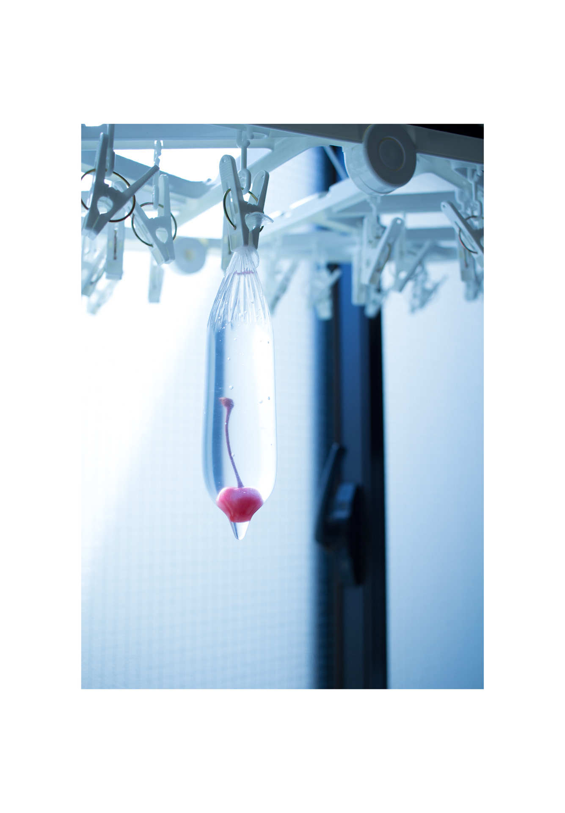
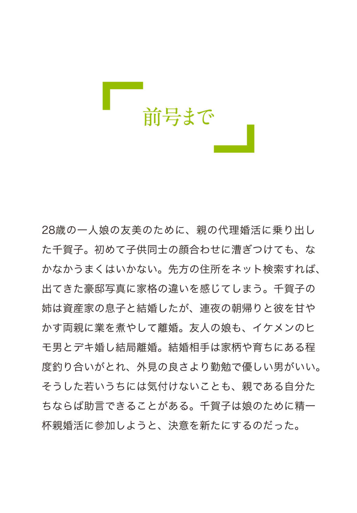
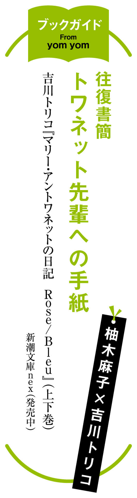

| yom yom vol.52（2018年10月号）[雑誌] | |
| 三宅陽一郎 & 金子竣 & 知念実希人 & 青崎有吾 & 千街晶之 & 飯豊まりえ & 九螺ささら & 恒川光太郎 & 米原幸佑 & 辻村深月 & 乾緑郎 & 青柳碧人 & 垣谷美雨 & 中山七里 & 門井慶喜 & 武田綾乃 & 宮木あや子 & 最果タヒ & ふみふみこ & 小林エリコ & 新納翔 & カレー沢薫 & トミヤマユキコ & 手塚マキ & 柚木麻子 & 吉川トリコ & はるな檸檬 & 新井久幸 | |
| 新潮社 (2018) | |
CONTENTS vol.52 ２０１８年10 月号
SPECIAL ARTICLES
NEW SERIES
九螺ささら
恒川光太郎
CLOSE UP
米原幸佑インタビュー
SERIES
辻村深月
乾 緑郎
青柳碧人
垣谷美雨
中山七里
門井慶喜
武田綾乃
宮木あや子
最果タヒ
COMIC
ふみふみこ
CULTURE & COLUMN
新納 翔
カレー沢 薫

トミヤマユキコ
BOOKS
＊「トリカブトの残り香 忘霊トランクルーム２」（吉野万理子氏）、
「三人組にうってつけの迷宮 かがやき荘アラサー探偵局２」（東川篤哉氏）は本号休載です
表紙 イラスト／ 押見修造
表紙＋本文扉 デザイン／ 川谷康久 （ 川谷 デザイン）
「そして、僕たちは舞台に立っている。」 デザイン／ 椋本サトコ
【ご注意】
この本は縦書きでレイアウトされています。また、ご覧になる機種により、表示の差が認められることがあります。
この作品の全部あるいは一部を無断で複製・転載・配信・送信すること、内容を無断で改変・改竄することを禁止します。また、有償・無償にかかわらず第三者に譲渡することはできません。
「今年はひとつ、追加で伝言をお願いしてもよろしいですか」
別れ際に、ふいにそう声をかけられた。これまでの依頼ではなかったことだ。「なんでしょう」と顔を向けた歩 美 を、彼がまっすぐな目で見つめる。
「絢 子 さまにお伝えいただきたいんです。あの小僧だった蜂 谷 も、とうとう八十五になりました、と」
その顔に静かな微笑みを湛え、蜂谷がそう言った。
１
「ドイツ──ですか」
「はい」
会社近くの喫茶店で、テーブルを挟んで向かい合う奈 緒 の顔を、歩美は見つめる。
季節が春に変わろうとしていた。明らかに真冬のものではなくなった陽光が、運ばれてきた飲み物のグラスに反射している。あと一週間もすれば東京でも桜の開花宣言があるのではないかと、朝のニュースでやっていた。
奈緒が亡き父の残した工房を継ぐために、別の工房へ修業に行く、ということはすでに聞いていた。その期間、鶏 野 工房は閉めることになるとも。歩美は亡くなった大将にとてもお世話になったし、その娘の奈緒についても、自分にできることがあればこれからも力になりたいと思っていた。
しかし、まさかドイツとは。
奈緒から、「仕事の用で東京に行くので、時間があれば会えませんか」と連絡があったのは先週だった。その時から、おそらく彼女の今後についての話だろうと察してはいた。けれど──。
「ニュルンベルクの工房が、秋から、私のことを受け入れてくれることになりました」
そう告げられ、歩美は静かに目を瞬 いた。咄 嗟 に声が出なかったのは驚いたからだ。奈緒からは「父が生前お付き合いのあった工房に修業にいく」としか聞いておらず、てっきり国内の工房だとばかり思っていた。
「父もすごく好きだった工房なんです。うちよりずっと大きくて歴史もある工房なんですけど、向こうの社長さんが父の作るものを気に入っていて。何度かうちにもいらしてくださったことがあるくらい、父とも仲がよかったんです。──思い切ってお願いしたら、快諾してくれました」
「何年くらい行かれるんですか」
「それがちょっとわからなくて」
奈緒が照れくさそうに微笑む。
「私の飲み込みが早ければ、短い期間で済むのかもしれないですけど、きっと、長くかかってしまうと思います。その分、得られるものはなるべく多く、向こうで吸収してくるつもりです」
奈緒が困ったように肩をすくめる。
「向こうの社長さんも、父の友人として接する分には優しい人ですけど、いざ弟子入りするとなったら、修業は厳しいと思います。中途半端な技術じゃ簡単には父の工房を継ぐことは認めてもらえないと思う。でもその分、鍛えてもらえるはずです」
そう語る奈緒の顔は晴れやかで、迷いがなかった。遠くに旅立つ決意を胸に、不安よりも期待が上回っているのだろう。──実際には、不安を吹き飛ばそうとして明るくふるまっているのかもしれない。そうだとしても、その明るさが今はまぶしかった。
──歩美の戸惑いや驚きなど跳ね返すほどだ。もう何度目になるかわからない、「彼女には敵わない」という思いが胸にまた込み上げる。
「よかったですね」
まだ、内心では微かに動揺していた。奈緒が遠くに行く、いつ帰ってくるかは未定。衝撃は続いていたが、これは奈緒の夢のための門出だ。歩美も存分に祝いたい。
「ドイツはいろんな木製おもちゃの発祥地だし、中でも、ニュルンベルクは大きなメーカーがいくつもある、木工の本場ですよね。そこで学べるなんて本当に素晴らしいことだと思います。おめでとうございます」
「ありがとうございます」
「ドイツに行かれるということは、これから準備もきっと大変ですよね。──実は、『つみきの森』としては奈緒さんに、前に見せていただいたパズルの商品化を頼めないかと思っていたところだったんですが......」
「えっ！ 本当ですか？」
「はい」
奈緒が生前の大将に渡していた、絵柄が何種類も組める木製の子ども用パズルだ。伊 村 社長の了承も取り付け、タイミングを見て、奈緒のところに正式に依頼にいくつもりだった。大将が亡くなり、工房は今大変な時だろうから、と思って先延ばしにしてしまったが、もっと早く持ち掛ければよかったと後悔する。奈緒の修業の話は聞いていたはずだったのに、行き先は国内だろうから、まだ取引は続けられるものと甘く見ていた。
「嬉しいなぁ」
奈緒が言った。目の光が柔らかくなる。
「もしよければ、秋までに進められるようにしますから、お話だけ、聞いてもいいですか？ 私がいない間も母が、父の友人で国内に工房がある人たちと一緒に作業してくれるかもしれないので」
「よかった。じゃあ、今度、正式に企画としてお母さんと奈緒さんのところに持っていきますね」
まだ奈緒とできることがある。そう思うと、ほっとする。
彼女の旅立ちはもちろんめでたい。だけど、軽井沢のあの工房に奈緒の姿がなくなることは、まだとても想像がつかなかった。
「Ｋガーデンに寄って行きませんか」
喫茶店を出て、会社に戻ろうとしたところで、奈緒から誘われた。Ｋガーデンはすぐ近くの商業施設だ。大きなおもちゃの店もあって、木のおもちゃもたくさん扱っているので、歩美も仕事でよくお世話になっている。
「渋 谷 さんのデザインしたあの亀たちが売り場に並んでいるところが見たくて。一緒にいきませんか」
「──ぜひ」
嬉しくて、返事が一拍遅れた。
Ｋガーデンの玩具店は、大将の訃報を受けた時、歩美が朝イチで商品を納品して並べ、写真を撮っていた場所だった。その写真を奈緒にも送ったので、彼女はそれを覚えていてくれたのだろう。
奈緒と二人、Ｋガーデンに向かう。顔見知りの店員に奈緒のことを紹介し、商品を作ってもらった工房の娘さんだと説明すると、店員たちも皆、笑顔になった。
「売れてますよ」と、嬉しい言葉をかけてもらう。
亀のおもちゃが陳列された棚を見つめる。発売当初に比べると表に並べられている数自体は減ってしまったが、見本品として子どもが実際に手に取って遊べるように出されているものもある。平日の昼間にもかかわらず、店内には数組の親子連れがいて、二歳くらいの子どもが今まさにそれを手にとって、甲羅を押しているところだった。
「いいですね」
その様子を後ろから見つめて奈緒が小声で言った。歩美もまた、実際に商品を触っているお客さんの姿を初めて見た。胸に感動が込み上げてくる。
店を後にする時、入り口にあった木製のおままごとセットに、奈緒が目を留めた。歩美も知っているおもちゃだった。輸入品も多く扱うこの売り場の人気商品の一つで、包丁の切れ味が手ごたえとしてちゃんと伝わるように工夫がこらされた、評判のいいものだ。
「これ、秋から私がお世話になる工房で作っているものです」
「あ、ここなんですね」
「はい」
奈緒が微笑む。
「こんなふうに、遠く離れた場所にも商品があるのを見ると、すごく嬉しいですね」
書籍売り場の方へ行くという彼女に、せっかくだから、と歩美も付き合うことにした。今日は特に急ぎの仕事はないし、会社の近所だという気安さもあって、一緒に語学書の売り場に向かう。
「秋までに、ドイツ語の勉強を少しでもしておきたくて」
英語を学ぶ本に比べると、ドイツ語の本は決して売り場に多くはなかった。すぐに手に取れる書棚の下の方はほとんどが英語だ。
書棚の高いところに手を伸ばす彼女の後ろから、声をかける。
「取りますよ。どれですか」
バランスを崩しかけた奈緒の背を軽く支えるようにすると、奈緒が恥ずかしそうに「すいません」と謝った。
「あの、その茶色っぽい背表紙の本、取ってもらってもいいですか」
「これですね」
そうやって本を手渡した、その時だった。ふいに、「あら」という声がして、歩美が何気なく声の方を見る。そして──大きく、息を呑んだ。
首元に華やかな色合いのスカーフを巻き、上品なストーンの装飾がついた眼鏡をかけた老婦人──。その人が、こっちを見ている。顔に見覚えがあった。
小 笠 原 時 子 だ。
去年、使者 の仕事で出会い、若くして亡くなった自分の娘との再会を依頼された、あの老婦人だ。
体が一瞬で硬直する。使者の依頼人と、普段、こんなふうに出くわすことは滅多にない。まさかこんなところで──と咄嗟に動けなくなった歩美の前で、しかし、時子は冷静だった。
歩美と奈緒、両方の姿に目を留め、無言で静かに頷いたのだ。奈緒に気取られない程度の、微かな動きだった。使者である歩美の前を素通りし、平然とした口調で「ドイツ語の本をお探し？」と、奈緒の方に尋ねる。
「え？ あ、はい」
「だったらね、その本はよくないわ。確かにロングセラーなんだけど、読むだけならともかく、実際にしゃべりたいのだったら、あっちの方がおススメ」
奈緒が手にした本の隣にあった本を指さす。それもまた棚の高いところにあるので、その時になって、初めて時子がまともに歩美の方を見た。
「彼氏さん、取ってくださる？」
「あ──、はい」
歩美が手を伸ばして、指定された本を引き出す。時子に渡すと、時子が中をパラパラ開き、「ああ、いいわね」と呟いた。「はい」と奈緒に向け、差し出す。
「これ一冊を何回か繰り返し読むと、だいぶ身に着いてくると思うわ。私の愛読書だったの。おばあさんがおせっかいなことを言ってごめんなさいね」
「いえ、ありがとうございます！」
突然現れた老婦人に面食らうこともなく、奈緒が丁寧に頭を下げる。その時になって、歩美は思い当たった。時子が再会を希望した娘──瑛 子 もまた、留学先がドイツだったのだ、と。
「あの......」
時子に話しかけようか、迷った。声を続けようとした歩美に、けれど時子が優美に微笑みかける。ごくわずかに首を左右に振る動きをした後で、小声で言う。
「かわいらしい方ね」
彼氏さん、と今しがた時子に言われた言葉が、改めて耳に蘇った。どうやら誤解されているようだと、歩美が訂正しかけるが、それより早く、時子が軽やかに「失礼しますね」と歩美と奈緒、両方に呼びかけ、そのまま行ってしまった。口調と同じく、その足取りもまた優雅で軽やかだ。
後ろ姿が完全に遠ざかってから、奈緒が言う。
「なんだか素敵な人ですね」
時子が言った「彼氏さん」の言葉は彼女にも聞こえていただろう。互いに照れくさくなった空気をごまかすように、「そうですね」と歩美も答えた。
なぜかふいに、思い浮かぶ言葉があった。唐突に、昔、祖母のアイ子に言われた言葉が耳に蘇った。
──いつか、なんでも話せるといいね。
──使者のお務めをしてることも、お前の父さんや母さんのことも、みんな。なんでも、ね。
その言葉を思い出す、ということがどういうことか。思ってしまってから気づいて、歩美は一人、心の中で苦笑しながら首を振る。
奈緒と別れ、会社に戻る途中で携帯が震えた。
社用で持っている方ではなくて、歩美のプライベートの──使者の番号を受け付ける方だ。新しい依頼人だろうか、と画面を見つめ、それからあっと思った。
『蜂 谷 茂 』
画面にその名前が表示されているのを見て、ああ、今年は来たか、そして、もうそんな季節か──と思う。普段依頼を受ける時よりも幾分か和らいだ気持ちで、「はい」と電話に出た。
「こんにちは、蜂谷さん」
歩美の声に、電話の向こうから、少し嗄 れた、老人の声が答える。
『ご無沙汰しております。蜂谷でございます。使者様、お元気でしたか？』
「はい。お久しぶりです。蜂谷さんもお元気でしたか」
歩美にとっては顔見知りの、だいぶ気安い相手。けれども彼はれっきとした使者の依頼人だ。祖母から使者を引き継いで以来の──もう八年近い付き合いになる。
『おかげさまで。少し間が空いてしまいましたが、今年はこうやってお電話できました』
品のあるスローテンポな声が返ってくる。彼が言った。
『そんなわけで使者様。今年もどうか、絢子さまに、おつなぎをお願いできませんでしょうか』
もう何度目になるかわからない依頼内容を、彼が告げる。
歩美は短く息を吸い込み、「はい」と答えた。前回の時と、同じように。
電話を耳に当てたままの状態で頭上を仰ぐと、木々の枝に膨らみ始めたつぼみがぽつぽつと目についた。桜が咲く前の、今年もこの季節を選んで依頼してきたのだと思うと、感慨深かった。
「了解しました。お受けしましょう」
蜂谷は、もう何度となく同じ相手への再会を依頼し、そして、その都度断られ続けている人だった。
電話の向こうの声が穏やかに『ありがとうございます』と礼を言う。
２
蜂谷の存在は、歩美が使者を継いですぐに、前の使者であった祖母のアイ子から教えられた。
歩美が使者を引き継いだばかりの、高校生だった春。
その頃は、依頼の電話の多くは祖母がまだ受けていた。歩美が新米の使者だから、という事情もあったが、学校にいる時間帯の電話に出ることができないという、単純な理由もあった。
その春は、本格的に使者を引き継ぐため、祖母からさまざまなことを教えられた。死者と話すための鏡の使い方、死者との対話の仕方、依頼人との接し方。中でも、これまでにどんな依頼があったのかという例についてはたくさん教えてもらった。使者を通じての再会は、特殊な状況だ。何かコツがあるわけではないし、一般的な対応の仕方が杓子定規にあるわけでもない。これまでにどんな状況の、どんな様子のものがあった、というひとつひとつの「特殊」の蓄積を教えてもらうこと以外、指針にできるものがない。祖母に教えてもらったそれらの「例」が、今も、使者としての歩美を支えている。
ある日──。
「歩美には、そろそろ蜂谷さんのことについて引き継いでおかなきゃね」
祖母にそう言われた。
「蜂谷さん？」
「今年あたり、おそらく依頼の電話がかかってくるだろうから。私と歩美と、二人で会いに行こう」
その時期、依頼の電話自体は祖母が受けても、そこからの交渉は歩美がすることがほとんどで、祖母が依頼人と会うことはもうなくなっていた。意味がわからずきょとんとする歩美に祖母が教えてくれたのだ。
断られても断られても、一人の死者への再会の依頼を繰り返ししてくる人がいるのだ、と。
「そんな人がいるの？」
再会を交渉した死者に断られる、ということは滅多にないものだと思っていた。
使者とつながる時点で、それは依頼人に、祖母がいつも言う「ご縁」の力が多少なりともあったはずで、再会が実現しないような相手は、そもそも使者に辿り着くまでの間で篩 にかけられていると思っていた。
「再会が断られるなんてこと、あるんだ......」
思わず呟きが口を衝 いた歩美に、アイ子が「そりゃあるよ」と飄々 と答える。
「でも、ばあちゃんよく言ってるじゃないか。使者の依頼は、どれだけかけてもつながらない人がいる一方で、必要な人のとこにはちゃんとつながるようになってるって。断られるんじゃ、つながった意味がないよね？」
「断られることで、私たちにはわからない何かが本人の中で整うこともあるのさ。他にも何人かそういう依頼人がいたけど、みんな、会えないことがわかるとそこに今度は別の何 某 かの意味を感じるものみたいだよ」
会いたいという生きている側からの申し出を断る死者たちは、交渉の時、仲介する祖母に、どうして会いたくないか、明確な理由を告げた人もいれば、何も語らず、ただ会いたくない、と結論だけを伝える人もいた。そして祖母は、そこにどんな理由があったにせよ、依頼人には、聞かれるまでは決して何も教えなかった。
断られた依頼人の態度は、さまざまだったそうだ。
「どうして会ってもらえないのか」と必死になって尋ねる人もいれば、中には何も聞かずにただ「そうですか」と、どこかほっとした表情で帰る人もいたという。
「その人たちにとっては、会ってもらえなかったっていう事実をもらうことが必要だったってこと？」
「私にはわからないけど、そういうことになるんだろうねえ......。だって、その人たちの中に、怒り出す人はいなかったからさ」
「怒り出す人？」
「使者がインチキで、もともと会わせることなんかできなかったんだろうって、怒るような人」
祖母がふふっと笑う。歩美の好きな、茶目っ気まじりの微笑みだった。
「自分が相手に会ってもらえないだろうと思うような理由が、もともと、その人たちの中にはちゃんとあったってことだよ」
しかし、蜂谷はそんな人たちともまた、状況が違う。
断られても再び依頼をしてきた人、というのは、祖母が知る限り、これまでも彼一人だけだという。
「その人はいったい誰に会いたいって言ってるの？ 家族とか恋人とか？」
歩美が興味を持って、なおも聞こうとすると、アイ子が「さてねえ」と首を傾げた。
「そろそろ依頼があるはずだから、あとは直接本人に聞くといいよ。今年は三年目だから」
「三年目？」
「最初に依頼してきた四十代の頃は五年に一度だったんだけどね。七十を過ぎた頃からは依頼が三年に一度になったの。で、今年は三年目」
祖母の口ぶりから、相手がかなり年配の人なのだとわかった。四十代から七十代へ──、そんな長い年月をずっと依頼し続けているのか、と絶句する。
歩美の驚きをどう受け取ったものか、祖母が、「歩美にはまだわからないかもしれないけど」と続ける。
「年を取ってくると、そろそろ、会いたい側から、自分が向こう側に行くことの方も、意識し始めるからね。五年に一度なんて悠長なことは言っていられなくなって、きっと、今は三年に一度。本当は毎年依頼したいかもしれないけど、あんまりしつこくしてお嬢様に嫌われるのも嫌なんだろう。蜂谷さんの中でも、マナーとかルールがあるのさ」
祖母の口から何気なく出た〝お嬢様〟の響きが気になったが、祖母は再び、悪戯 っ子のように「今にわかるよ」と言うだけだった。
「依頼は毎回、桜が咲く少し前にあるからね」
果たして──、その年、蜂谷から本当に依頼があった。
桜の木が立つ美しい中庭が見える料亭の個室で、歩美は、祖母とともに彼に初めて会った。
３
神楽坂の料亭『八 夜 』の戸を開ける。
八年前、祖母に連れられ、初めてここの門をくぐった時は、「本当にここなの？」と面食らったものだった。大きな古民家を改装した立派な店構えに圧倒され、中に入るのをためらう歩美の背中を祖母が「いいから入りな」と、軽く押したこと、その手の感触を今もまだ覚えている。
依頼人と最初に会う場所は、使者の方から案内することが多いが、蜂谷は祖母に最初の依頼をしてきた時から、この店を指定してきたという。
通されたのは、店の二階にある個室だった。料亭の個室というと、畳の和室で、鹿 威 しの音が響く日本庭園が見えて──というようなイメージしかなかったけれど、『八夜』の二階は洋室で、花の装飾があしらわれたテーブルを囲む形で、モダンな革張りの椅子が並んでいた。
窓の外には中庭が見えていたが、それも歩美が想像したような庭園ではなく、木が一本立つだけの小さなものだった。その庭を見ていると、祖母が「あの木は桜だね」と言った。「もうちょっとすると、ここから満開の桜がちょうど見られるんだろうね」と。
木が一本あるだけだが、よく手入れされた、きれいな庭だった。
あれからだいぶ年月が経った。入ってきた歩美を、着物姿の店員の女性が前回と同じように「お待ちしておりました」と迎える。以前と同じ、二階の個室に案内された。
歩美だけでここに来るのは、今回で二度目だ。
依頼人、蜂谷茂は、この料亭のオーナーである。以前は自分が板前として調理場を仕切っていたそうだが、歩美が最初にここに来た頃はもう引退していた。もともとは京都にある店で修業をしていたそうだが、三十代半ば頃、縁あって東京のこの地を人から譲り受け、店を構えたという。
「失礼します」
中に入ると、すでに、蜂谷が待っていた。座ったまま、歩美の方を見つめ、にこにこと微笑む。
「お待ちしておりました。毎度のことながら、お呼び立てして申し訳ありません」
「いいえ。こちらこそ、ご連絡いただけて嬉しかったです」
蜂谷老人を初めて見た時、優しい犬のような顔をしている、と思った。
ふわふわの白髪と眉毛。眼鏡の奥の目が、笑っていない時でも常に眩しそうに軽く細められているようで、穏やかな顔つきだ。犬か、でなければあのふわふわな眉毛は羊のようだ、と思っていたら、後にその名もシープドッグという犬を街中で偶然見て、「あ、蜂谷さん」と思った。オールド・イングリッシュ・シープドッグという犬と、雰囲気がよく似ている。
ただ、今年の蜂谷は、前回歩美が出会った時より、少し小さくなったように感じた。もともと小柄だが、髪と眉のふわふわした印象が前より弱まっている。単純に頭髪が薄くなったというより、全体的に存在感が薄まってしまったような気がした。
歩美が座るのを待って、給仕の女性に、「では、始めてください」と伝える。「はい」と答えて、女性が戸を閉め、部屋を出て行った。
蜂谷からの依頼は、毎回、彼の料亭の個室で二品か三品、料理をいただきながら話す、ということが半ば儀式のようになっていた。最初の年、透き通ったおだしに浮かんだ、信じられないほど柔らかく甘い筍入りのエビ真 薯 を食べた時の、あの感動は言葉にならない。
「すごい、うまい」と口元を押さえる歩美に、祖母と蜂谷がともに笑っていた。「そうでしょう」と笑う祖母はとても楽しそうだった。
「だから私はね、毎回、蜂谷さんのお言葉に甘えてここまで来るの。本当はこんなふうに依頼人と仲良くなっちゃいけないんだろうけど、何しろ、おいしいから」
仲良く──、と祖母は言ったけれど、それでも、祖母も蜂谷も節度をわきまえて、必要以上にお互いの距離を詰めはしなかった。おいしい料理をいただくひと時、二人は旧知の仲の友人同士のように見えたけれど、蜂谷は祖母の名前すら知らなかったはずだ。
それは前回、歩美一人が依頼を聞きに訪れた際にも感じたことだった。
「前の使者様はお元気ですか」
歩美がアイ子の孫だということは薄々感じていただろうに、蜂谷は律儀にそう聞いた。だから歩美も、正直に答えた。
「昨年、亡くなりました」
依頼を繰り返すうち、長い付き合いになっていたはずだけど、友人同士ではないから、蜂谷は祖母の死を知らなかった。歩美の声にその細い目を微かに瞬き、「ああ......」と重たい声を漏らした。それから静かに頭を下げた。
「そうですか。存じませんで、失礼いたしました」
「いえ......」
その日、料理の最後には、黒蜜に浸した葛切りが出てきた。ここの料理の中で、祖母が特に好きだと言っていたものだった。
「お持ち帰りください」
そう言って、鶯 色の和紙にくるまれた桜の枝をもらった。前に祖母と来た時は渡されなかったものだから、これはきっと、祖母の墓前に供えてほしいということなのだろうと、歩美はそう解釈した。律儀で誠実な人だ、と思った。
その蜂谷も、実は今回、依頼の間隔が空いていた。いつもであれば、前回の依頼から三年目となるのは去年だったはずで、今年はそれからさらに一年が経っての依頼だった。
「去年、ちょっとした手術をしましてね。そう深刻なものではなかったんですが、肺に水がたまってしまって、それを抜く手術を。そんなわけで、去年は依頼のご連絡ができませんでした」
歩美が気にしているのがわかったのか、一品目の料理が運ばれてきた後で、蜂谷の方から教えてくれた。「そうでしたか」と歩美が言うと、蜂谷が小首をかしげ、おどけるように笑った。
「きっとご心配おかけしてしまいましたよね。くたばったと思われてしまったとしても仕方がないなぁと、悔しく思っていました」
「そんなふうには思いませんでしたが、寂しく思っていたのは事実です。ご連絡いただけて、とても嬉しいです」
歩美が答えると、蜂谷が「ありがとうございます」と頷いた。
一品目ははまぐりのお吸い物だった。中につみれが入っていたが、歩美のものに比べて蜂谷の椀の中のものが明らかに小さいのが、向かい合った席から見えてしまう。手術をして、食欲が落ちているのかもしれなかった。
「毎度のことですが、お会いしたいのは、袖 岡 絢子さまです」
蜂谷が言って、机の上に写真を置く。写真立てに入った白黒写真は、集合写真だ。京都で蜂谷が修業をしていたという料亭らしき建物を背景に、袴の人、スーツの人、和装、洋装がまざった人たちの記念写真のようだった。
「以前にもお伝えしましたが、これが私です。『袖岡』という京都の料亭で働いていました」
若かりし日の蜂谷は板前の白い着物を着た数人の集団の、その一番隅に写っていた。
彼の〝絢子さま〟は写真の中央、立派な髭をたくわえた袴姿の立派な男性と、優しそうな和服のご婦人の間に座っていた。長い黒髪を下ろし、まっすぐに正面を向いている。撮影されたのは戦後数年経った頃だったと聞いているが、皆、真面目な顔をしていて、笑っている人は誰もいなかった。
「きれいでしょう？ でも、もう、本当にお気が強くてね。勝気な美人という感じでした」
「ええ」
写真だけでは、一重瞼で日本人形のような顔立ちの絢子は、きれいな人ではあるものの、その気の強さまではうかがい知れない。むしろ、線が細く、たおやかで儚 げな──ただただ上品そうな印象だ。
「絢子さまは」
蜂谷が語り出した。
「生まれつき、お体が弱くて、女学校などにも満足に通えなかったのですが、その分、外に出してもらえない鬱 憤 を晴らすかのように料亭の、私たちの板場にもよく顔を出されました。特に、私は年が近かったので、よくお話をするようになりました。私が十八、絢子さまが十四歳くらいでしたか」
「はい」
歩美がお吸い物の器を空にすると、蜂谷はほとんど手つかずのまま、不自然にならない所作でお椀にそっと蓋をする。減らした料理でさえも、食べられないということなのかもしれない。
彼が続ける。
「ただ、親しく言葉を交わすようになったとは言っても、当時のことです。私は出雲の山奥の三男坊で、家にいても持て余されてしまい、働き口を求めて奉公で料亭に転がり込んでいた身でした。戦争が終わって、いろんなことが変わっても、置いていただけるだけ、ありがたかった。旧家のお客様や、新しく赴任してくる米軍の幹部クラスの将校たちを相手にするような、由緒ある店の一人娘のお嬢様と気安く話すことなど、本来は許されることではなかったのでしょうが、ご主人も奥様もお優しくてね。体の弱い絢子さまを不憫にも思ったのか、簡単なお出かけのお供を私に命じてくださることもありました」
蜂谷が懐かしむように目を細めた。遠くを見る目線になっていく。
「お友達に会いに行くのに護衛を仰せつかったり、お買い物の荷物運びをやらされたり。──当時は、由緒ある料亭といっても、優秀な板前を戦争に取られて、店は決してものすごく裕福というわけではありませんでしたが、それでもご主人や奥様たちは絢子さまには好きなものを選んで買い物をする楽しみを与えていらしたようでした。もっとも、高価な着物なんかじゃなくて、せいぜい、きれいな千代紙を何種類も買うような買い物でしたが。私にも、蜂谷、これ、あなたにあげるわ、と市松模様の紙なんかくれてね。『実家のお母はんにあげたら喜んでくれはるんと違う』なんてつっけんどんに渡してくるんですけど、今考えると、とてもお優しかった」
すでにもう、何度も聞いた話だったが、歩美は退屈しなかった。むしろ、語るごとに蜂谷の中の〝絢子さま〟がより生き生きと動きだすようで、興味深い。特に、彼が絢子の口真似をする時、声が高く弾み、京都の言葉になるのがとてもいい。
「私は、絢子さまを慕っておりました。恐れ多くも、それは今でいうところの『恋』だったと思います」
「ええ」
蜂谷が眩しいものを語るように口にした「恋」の響きは、何度聞いても、新鮮に歩美の胸を打つ。彼が静かに頷いた。
「ただ、当たり前の話ですが、今とは違う世の中での、身分違いの片思いです。好きだからと言ってどうこうしようという気持ちは一切ありませんでしたし、そもそも絢子さまには幼い頃からの宮 嶋 昭 二 さんという許嫁 がいらっしゃいました。大阪にある有名な料亭の次男でいらして、絢子さまが十七になるのを待って、婿入りして『袖岡』を継がれるご予定でした。絢子さまも『私のとこにはいずれ昭二さんが来てくれはるねん』とお友達にまで自慢したりしていてね。ご結婚を心待ちにしておいででした。──この私も、一度だけ、絢子さまが昭二さんに会うのを大阪までお供したことがあるんですよ」
「大好きな絢子さんをそこまでお連れするのは、複雑な気持ちではなかったですか」
今の感覚で質問するのは見当外れなことかもしれないと思いながら歩美が問うと、蜂谷はそう訊かれたこと自体に嬉しそうに「いいえ」と首を振った。
「不思議なのですが、絢子さまが昭二さんと一緒にいらっしゃるのを見ると、なぜか私まで嬉しいんですよ。なんてお似合いの二人だろうと、私の方まで晴れがましい思いがしました。けれど......」
蜂谷の口調が重くなる。その後に待っていた運命を、ゆっくりと噛み締めるように口にする。
「ご結婚を前に、絢子さまは十六歳でお亡くなりになりました。とても──、とてもとても、残念です」
絢子は幼い頃から病気がちで、重い喘息を患っていたのだそうだ。修業に入ったばかりの頃、蜂谷は絢子の肌が透き通るように青白いことに驚いたという。勝気な少女なのに、手足がガラス細工のように細く、絢子のことも、その両親のことも不憫に思った。
「喘息の他にも、生まれつき、体のどこかがお悪かったのかもしれない。今の医療であればはっきりした原因がわかって、もっと長く生きられたのではないかと思うと、おかわいそうでなりません。まだ、あまりにお若かった。ご主人も奥様も、絢子をたった一人で死なせてしまった、と繰り返し仰って。特に奥様のお嘆きは深かった」
「ええ」
「ご結婚がなくなって、『袖岡』は結局、私が修業していた当時の板長が養子に入る形で継ぎました。私も長く修業させてもらいましたが、三十代の半ばに独立を。別に店を持たせてもらってからも、ご主人や奥様とは親しくお付き合いさせていただきました。絢子さまの思い出が沁み込んだあの店も、母屋も、今でも瞼を閉じると細かいところまで全部思い出せる。あれは私の青春でした」
蜂谷が居住まいを正す。細い目をはっきり開けて、まっすぐこちらを見る。目の色が少し灰色がかっている。
「使者様。絢子さまにお会いしたい、とお願いするようになってもうだいぶ経ちますが、どうして会っていただけないのか、理由はよくわかっているつもりでおります。たった一度しか叶わない大事な機会を、なぜ、蜂谷などに使わなければならないのか。そう思われて当然ですし、おそらくは絢子さまには私などよりもっとお会いになりたい方がいる。私の勝手な横恋慕など、絢子さまにとってみたら、きっと身の程知らずな考えに思えるでしょう。断られるのも道理です」
「それでもお会いになりたいんですね？」
「はい」
蜂谷がしっかりと頷いた。そして、薄く笑った。
「今年もおそらく、駄目でしょう。でもね、どうかお願いしたい。絢子さまに、お取次ぎをお願いします」
「わかりました」
歩美が頷くと、ちょうど、次の料理が運ばれてきた。料理の器が置かれ、よい香りが部屋に満ちる。器を覗き込むと、餅のようなものに山葵 がちょこんと載せてあった。ああ、この匂いは桜だ。
「道明寺を鯛と一緒に蒸してあります。あたたかいうちにどうぞ」
「いただきます」
「使者様には、うちの春の定番の品をもうだいぶお出ししてしまったから、この次は何を召し上がっていただこうかな」
明るくそう言うが、その言葉がもう「次」の依頼を想定したものであることが、歩美には少し切なかった。蜂谷は依頼する段階から、今回も絢子には会えないものと諦めているのだ。
蜂谷からの依頼は、毎回、春の、桜が咲く前のこの季節だ。深く聞いたことはないが、絢子の命日がこのあたりなのだろう、と歩美はずっと思っている。
短い会食を終え、蜂谷が一階の入り口まで降りる歩美を送ってくれる。階段に向かう途中のその足取りが、前回よりもおぼつかなく、ゆっくりになっている気がした。
「この店はね、似ているんですよ」
廊下の途中で、ふいに、蜂谷が言った。歩美が振り返ると、窓の外の、桜の木を見ていた。
「京都にあった、絢子さまが暮らしていらした袖岡家の母屋に。庭に桜があるところも同じです」
京都のその家は、今はもうないのかもしれない。蜂谷の口調は過去形だった。
「──東京の、この場所の前の持ち主から、ここで店をやらないか、と縁あって声をかけられた時、本当は断るつもりだったんです。京都での暮らしが長かったですし、いずれ自分の店を構えるとしても、それは京都だろうと思っていた。けれど、軽い気持ちでこの場所を見に来て、一目で心を摑まれました」
自分自身に呆れるように、蜂谷が続ける。視線を窓から歩美の方に向け直す。
「それまでも、使者様の存在は人づてに聞くことがありましたけど、自分が依頼する立場になるとは思っていませんでした。だけど、この店が軌道に乗って数年した頃、出来心を起こして、最初のご依頼を差し上げました。店を持てるくらい、それぐらい、蜂谷も立派になりましたよ、と、絢子さまに今の自分を見ていただきたい気持ちもあったのかもしれない。──お会いになっていただけない、というお返事を聞いて、ああ、やっぱりな、と思ったものです。私の身には過ぎた、分不相応なお願いだと、わかってはいるんです」
使者様──、と蜂谷が言った。歩美を見つめる。
「今年はひとつ、追加で伝言をお願いしてもよろしいですか」
これまでの依頼ではなかったことだ。「なんでしょう」と顔を向けた歩美を、彼がまっすぐな、灰色がかった瞳で見つめる。
「絢子さまにお伝えいただきたいんです。あの小僧だった蜂谷も、とうとう八十五になりました、と」
静かな微笑みを湛え、蜂谷がそう言った。
「その一言だけで、結構です。絢子さまに、どうか、お伝えを願います」
４
「絢子さまって、例のあの、すっごいワガママなお嬢様だよね？ 今年はご依頼が来たんだ」
杏 奈 の辛 辣 な声を聞き、歩美は大きなため息をつく。「ワガママって言い方はないんじゃない？」と言い返すと、杏奈が唇を尖らせて「ええーっ、でもさあ」と続けた。
「歩美くんからの話聞いてるとそう思うよ。会ってあげたらいいのに」
使者の務め──死者の魂を呼び出して、会ってもらえるかどうかの交渉をする時、歩美は秋山家の庭を借りることが多い。
今回も庭を借りるためにやってきたのだが、そこで杏奈に捕まった。「音読の宿題、聞いて」と。
国語の宿題で教科書を読むことになっていて、専用シートに保護者がチェックを入れる欄があるそうなのだが、今日は両親が不在なのだという。「自分で書いちゃおうと思ったけど、歩美くんが来たならちょうどいい」と頼まれた。
「声の大きさ」、「読むスピード」、「姿勢」など、五つほど並んだ項目に〇をつけていく。もっとも、相手は杏奈だ。はきはきと淀みなく読む声は、まるで子役のオーディションか何かのようにプロ級だった。
音読の宿題なんて、杏奈の言う通り、自分で適当に書いてごまかすことだってできるのに、案外、こうやって上手に読めるところを歩美に見てほしいのかもしれない。そんなあまのじゃくな杏奈に、絢子も簡単に「ワガママ」呼ばわりはしてほしくないだろう。
苦笑しながら、歩美が答える。
「依頼する蜂谷さんだって、わかってるんだよ。絢子さんにはきっと、自分よりもっと会いたい相手がいる。わかってても会いたい気持ちがおさえられないんだよ」
「ふうん。そんなもんかなぁ」
使者の依頼内容を、歩美は事情を知っている杏奈の両親にすら滅多に話すことはないが、杏奈が相手だとつい、話してしまう。宿題を手伝ったり、テレビを見たり、おやつをつまんだりしながら、これまでもいろんなことを話してきた。彼女が秋山家の「当主」だから、という安心感があるのと、杏奈が聞き上手だから、という両方の理由からだ。
そんなわけで、依頼を繰り返す蜂谷の存在についても、去年、話していた。依頼に来る三年目の年のはずなのに、依頼が来ない。ひょっとして、何かあったのではないか──。そう心配していた歩美に、その時も杏奈は「落ち着きなって」とあっさり言い放った。「大丈夫大丈夫。来年とかにはまた依頼が来るんじゃない？」と。
考えてみると、杏奈のそういう動じないところは、祖母のアイ子によく似ている。祖母を喪ってから、歩美はこの子を使者のアドバイザーとして、ずっと頼ってきたのだなぁと思う。
「でも、よかったね」
「ん？」
「今年は依頼が来て」
「うん」
蜂谷が少し小さくなって見えたこと。昨年は大きな手術をしていて来られなかったと打ち明けてくれたことを思い出す。今は三年おきの依頼だが、次からはひょっとすると二年おきとか毎年に、間隔を狭めるかもしれない。
時間がない、と蜂谷が思っているのが伝わる。
──絢子さまにお伝えいただきたいんです。あの小僧だった蜂谷も、とうとう八十五になりました、と。
あの言葉は、まさにそういう意味ではないのか。
「でもさ、歩美くんは今日はまたどうしてそんなに元気がないの？」
「え？」
いきなり聞かれて、たじろいだ。杏奈がいつになく真剣な眼差しでじっとこっちを見ている。大きな瞳の光が正視できないほどにまっすぐだ。
「別に、そんなことないけど......」
「違う？ なんかそんな気がしたの」
思い当たるのは──奈緒のことだった。だけど、自分ではそんなに気にしていないと思っていた。使者をしていると、どうしても依頼人の事情に引っ張られることが多い。そのせいで自分自身の個人的な生活や悩みごとは、ついつい疎 かになりがちだった。
「大丈夫？」
杏奈に聞かれる。この子の真剣な声を聞くと嬉しかった。心配してもらえていることに感謝する。
「大丈夫」と歩美は答えた。──この子のこういう敏 いところもまた、祖母に似ているのだ、と思いながら。
「ふうん。ところでさ、ちょっと一般的なこととして聞かせてほしいんだけど......」
杏奈の顔つきがぱっと変わり、歩美から視線をそらす。目を見ないで話すのは、杏奈らしくなかった。
「......バレンタインのお返しってさ、男子は好きじゃない子にもちゃんとするもの？ 歩美くんって昔、どうだった？」
そう聞いて、思わず目を見開いた。「それって......」と言葉をかけようとすると、まだ何も言っていないのに、「だー、かー、らー、一般的な話として聞かせてよ。私がどうこうってことじゃないから！」と杏奈がむきになって言う。その顔がどんどん赤くなっていく。
ああ、と必死になる杏奈の声を聞いて思う。
杏奈もまた、日々、大人になっていく。時間が流れていくのだな、と。
秋山家の庭園の奥、苔むした石の並ぶ一角に、ちょうど丸くくぼんだ岩がある。そのくぼみには時折雨水がたまっていて、その水面に月の光が反射する。暗い庭の奥で、夜空の明るさをそのくぼみが吸い込んでいるように見えたことが一度あって、歩美はそれから、その一角に鏡を置き、死者を呼び出す儀式をすることが多くなった。
蜂谷の想い人──。絢子は、月明りの下、今回も鏡の放つ光に導かれるようにして現れた。あの写真で見た通りの、楚々とした着物姿だ。
「袖岡絢子さん」
歩美の呼びかけに、微かに首を傾げ、こちらを見る。眉のすぐ上で切り揃えられた前髪が、まるで日本人形そのものといった雰囲気で、その下の一重瞼が眩しげにかろうじて上がる。光を、まるで重たいものが乗せられていて迷惑だと言わんばかりに瞼で持ち上げ、大儀そうに歩美を見上げる。
一呼吸の間が、空いた。
絢子が重だるそうな口調で、やっとのことで口を開く。
「何ですやろ。また、おたくさんですか」
──きれいでしょう？ でも、もう、本当にお気が強くてね。勝気な美人という感じでした。
絢子の写真を見せながら、蜂谷が少年のような瞳でそう言っていた。写真だけでは、確かに、彼女のこの気の強さはうかがい知れない。むしろ、線が細く、たおやかで儚げな、ただただ上品そうな印象しかないのだが、それが外見の印象でしかないことを、歩美は繰り返す交渉の中で、もう知っている。蜂谷の前では言えなかったが、本当は「わかりますよ」と伝えたかった。
心の中で苦笑いしながら、けれどあくまで表情には出さずに、歩美が言う。
「蜂谷茂さんが、あなたにお会いしたいそうです。会っていただけますか」
「会いまへん」
絢子の声はきっぱりとして、今回も躊躇 いがなかった。眼光鋭いその眼差しで歩美をじろりと睨む。
「前から言うてますでしょ。蜂谷がうちに会えると思てるなんておかしいのと違いますか」
使者を通じての再会が絢子にとってもただ一度きりのものだということは、祖母が最初に交渉した時、すでに伝えている。
「わかりました」と歩美は頷いた。
交渉の段階で使者が死者と依頼人、どちらかに肩入れして話すことは、原則的にはあり得ない。蜂谷の力になりたい気持ちはあっても、これまでもそうしてきた。
「お呼び出しして申し訳ありませんでした」
「迷惑ですねん。蜂谷のために何度もここに来んのは」
絢子が言って、つん、と取り澄ました冷たい顔でそっぽを向く。つれない態度に心がくじけそうになりながら、今回だけは約束だからと、歩美がさらに付け加える。
「今回は蜂谷さんから伝言があります。そのままの言葉で伝えますね。──『あの小僧だった蜂谷も、とうとう八十五になりました』」
歩美のところから、顔をそむけた絢子の表情は見えなかった。そのまま、しばらく待つ。返事はない。長く、何もなかった。
絢子に悟られないように、歩美は小さく息を漏らす。
「わかりました。蜂谷さんには、お断りになられたことをお伝えします」
諦めて、鏡に手を伸ばそうとした。──その時だった。
「待って！」
いきなり、強い声がした。びくりとして伸ばしかけた腕を引く。絢子がゆっくりと振り返った。その顔に変化が見られた。それまで取り澄ました様子で表情のなかった顔とは違って、眉が顰 められている。
歩美は息を呑んだ。
あの絢子が、動揺しているように見えた。
「......蜂谷は今、八十五なん？」
その声はそれまでの絢子と違い、妙に子どもっぽく聞こえた。だけど──それで当然なのかもしれない。今の絢子のこの姿が享年のものとすれば、彼女はまだ十六歳だ。
蜂谷が四十代の頃から五年おきに繰り返された依頼。それから、三年おきになった依頼。
その依頼の時間を、絢子がどう捉えていたか、歩美はこれまで考えてもみなかった。生きている人間にとっての時間の流れと、彼らの時間はおそらく違う。何年にもわたって続けてきた蜂谷の依頼は、絢子にとってはおそらく一瞬のうちに感じられていたのではないか。
自分の死後、それだけの時間が経っていることを、彼女は知らなかったのではないか。
「はい」
歩美が頷く。今度も絢子はしばらく答えなかった。薄い唇を噛み締めるようにして黙り込む。そのまま無言で、宙を見ていた。
彼女の胸に、何が去来したのか──わからない。
けれど、長い沈黙の果てに、絢子が言った。
「会います」
歩美は目を見開いた。すると、絢子が矢継ぎ早に言う。
「会う、て言うてますねん。蜂谷にそう伝えて」
まるでさっきの杏奈が照れと気まずさをごまかすのにそうしたのと同じような口調で、絢子がまためんどくさそうに、言った。
５
大喜びするか、絶句するか。
そのどちらかの反応になるだろうと思った蜂谷は、歩美からの電話を受けても、予想に反して落ち着き払っていた。
『そうですか。会ってくださいますか』
静かな声でそう言って、それから細く息を吐きだしただけだった。
「再会の場所は、品川のホテルになります。次の満月の夜にこちらでお部屋を用意しますので、いらしていただけますか」
歩美が尋ねた。その時になって、初めて蜂谷の声が微かに揺れた。
『あの、会う場所はこちらで指定はできないのでしょうか......？』
「申し訳ないのですが、決まってるんです」
蜂谷はひょっとしたら、自分のあの店で絢子に会うつもりだったのではないか。彼女が暮らした母屋に似ているというあの場所で。
胸が痛んだが、それは、歩美の意思で変えられるものではない。再会の場所となるあのホテルは、祖母の話だと、死者の世界や月の光の通り道になっているのではないかということだった。
『そうなのですね』
蜂谷がこんなふうに戸惑いを露 わにするところを初めて聞いた。もう一言、何か言葉をかけた方がよいだろうか、と思った歩美に対し、蜂谷の方が先に『わかりました』と了承する。
『了解いたしました。絢子さまに、どうぞよろしくお伝えください』
そう言って電話を切ったのだが、その翌日、蜂谷からまた電話がかかってきた。
『申し訳ないのですが、再会の場所について、よろしいでしょうか』
「はい」
彼が申し出た瞬間、きっと、もう一度ホテル以外の場所を希望されるのだと身構えたが、そうではなかった。
『品川のそのホテル、なるべく低層階にしていただいても構いませんでしょうか。調べたら、二階まではレストランや宴会場が入っているようですが、三階の一部は宿泊ができるようですので。できたら三〇八か、三一七のお部屋でお願いできれば幸いです』
そう言われて、面食らう。これまでの依頼で、部屋の番号を依頼人に指定されたことはない。驚いたが、あのホテルは秋山家が代々懇意にしている。そのくらいの希望なら、叶えてもらえそうな気がした。
「──わかりました。確認してみます」
『ありがとうございます』
電話の向こうで、蜂谷が丁寧に頭を下げるのが見えるようだった。
『次の満月は、おかげさまで晴れそうですね。楽しみにしています』
再会の喜びを噛み締めるように、この時になってようやく蜂谷の声が弾んで聞こえた。
６
絢子との再会の夜は、蜂谷が言った通り、晴れの満月だった。
ちょうど桜が見頃を迎え、待ち合わせたホテルの周辺も敷地内の桜が見事にライトアップされていた。宿泊客ではなさそうな、夜桜見物の人たちの姿も多く目についた。
蜂谷は、涼し気な麻のジャケットに青みがかったグレーのハンチング帽姿で現れた。これまでに店で会ったときにもおしゃれな人だと思っていたが、今日はより若々しい恰好だ。先日会った時に、足取りが以前よりゆっくりになったように感じていたけれど、杖などもつかず、一人で、颯爽とやってきた。
「このたびはお世話になります」
ロビーで歩美の姿を見つけるなり、深々と頭を下げる。
「絢子さんとの再会は、ご希望の三〇八号室をご用意することができました。──もう、お待ちになられています」
歩美の声に、蜂谷がきゅっと頬を引き締めた。何年も──何十年にもわたる、念願叶っての再会なのだ。彼の緊張が歩美にも伝わる。
「再会の時間は、今から、夜明けまでです。終わりましたら、ロビーに戻ってきてください。僕が下で待っているので、声をかけてください」
「そのことなのですが、使者様。一つ、この年寄りのわがままをどうか聞いていただけないでしょうか。後生ですから」
「え？」
「私が絢子さまと会う時に、一緒に立ち会ってはいただけないですか」
え、と短く声が出た。それから、「ええーっ」と今度は喉から大きな声が出る。蜂谷が困ったように歩美を見上げる。
「やはり駄目でしょうか」
「駄目、というか、蜂谷さん、それはあまりにもったいないですよ。せっかく、ずっと会いたがっていた絢子さんとやっと会えるんですから、僕なんかいない方が......」
そう思って蜂谷を見て、はたと──気づいた。
胸の前で重ねた、蜂谷の手が震えていた。ぶるぶると、大きく。その震えを押しとどめようとしてか、彼が恥じ入るように両手の指をぎゅっと握る。けれど、今度はその握りこぶしごと、震えが大きくなる。
「こわいんです」
努めてなんでもないことのような声で、蜂谷が言った。黙ってしまった歩美に向け、強がるように微笑んだ。
「私は、絢子さまが真に会いたい人間ではないですから。絢子さまと二人になって、きちんと話せるかどうか、自信がありません。どうか一緒に来てくださいませんか。見届けて、いただきたいんです」
これまでに例のないことだ。しかし、彼の気持ちが歩美にもわからないではなかった。何しろ、相手はあの気の強いお嬢様だ。それに──。蜂谷の、血管が浮き出た、皺の目立つ手を見る。若い頃に別れたきりの絢子に、今の自分の姿を見せることへの不安も、おそらくはあるのかもしれない。
「──蜂谷さんと絢子さんが、それでよいのなら」
「ありがとう」
蜂谷が歩美の手を握り締めた。その瞬間、不思議なもので蜂谷の手の震えが止まったように思えた。
蜂谷が手を放し、深呼吸する。ようやくいつもの調子を取り戻したように、「では行きましょうか」と彼が言った。
７
絢子の待つ、三〇八号室にカードキーをかざす。
入室可能の緑色のランプが点灯し、歩美が扉を開ける。右手を中に向けて促すと、蜂谷は小さく頷いて、おそるおそるといった様子で、中に進んだ。歩美もまた、なるべくゆっくり、その後をついていく。
鏡台の前の椅子に、絢子が座っていた。
蜂谷が息を吸い込む音が、高い笛が鳴るように、ひゅうっと聞こえた。後ろ姿でも、彼の驚きと感慨が空気を伝って、はっきりわかる。
「蜂谷、なん？」
今日の絢子は、着物ではなく、洋服を着ていた。柔らかそうな素材の白のブラウスと淡い紫色のロングスカート。ブラウスの胸元に、カメオのブローチをつけていて、その姿はこれまで着物の絢子しか見たことのなかった歩美には新鮮だったのだが、当時は、洋服を着ることも多かったのかもしれない。
「絢子さま......っ」
蜂谷が絢子に近づいていく。歩美が優しい犬のようだ、と思ったそのふわふわの眉の下の細い目をさらに細くして、彼が「お懐かしい」と呟いた。
「ほんまにお懐かしい。ご無沙汰しておりました。蜂谷です」
「蜂谷、あんた......。すっかりおじいちゃんやないの。いやあ」
「ええ。ええ。おじいちゃんです。絢子さま、すんません。おじいちゃんになってまいました」
「嫌やわ。信じられへん」
そう言って、絢子が軽く舌を出して首を振る。絢子に会って、蜂谷の言葉がつられるように京ことばになっている。当時はきっと、そんなふうに話していたのだろう。感慨に浸る蜂谷を、絢子が迷惑そうに睨む。
「お呼び立てして、えらい申し訳ありません」
「ほんまや。身の程知らずにもほどがあるわ」
二人の様子を見て、歩美は、ああ、よかった、と思う。
絢子の言葉は冷淡で遠慮がないが、それを受ける蜂谷の表情が明るいからだ。「すんません」と口では謝りながらも、心底楽しそうに、蜂谷が笑う。
「すんません。すんません。会いに来てもろて、おじいちゃんになってて、申し訳ありません」
「あれ......」
その時になって初めて、絢子が歩美の姿に気づいた。肩身の狭い思いで、歩美も静かに絢子に向け、頭を下げる。
絢子に同席を許され、手持ち無沙汰に思いつつも、歩美は二人に備え付けのティーセットでお茶を入れた。部屋の小さなテーブルを挟んで、絢子と蜂谷が向かい合って座る。歩美は近くのベッドに腰かけて、そんな二人を見守った。
「──八十五になるんやな、蜂谷」
語り始めたのは、絢子だった。その視線が、少し、戸惑うように蜂谷を捉える。蜂谷はにこにこしながら、「はい」と答える。再会の興奮が落ち着いて、今は好 々 爺 然としたいつもの穏やかさが戻っていた。
絢子が唇を噛む。そして、言った。
「ということは、皆、きっともういはらへんのやな。お父はんも、お母はんも」
蜂谷はにこにこしたまま、頷きも、否定もしなかった。「いはらへん」──もういない、というその響きが切なかった。
蜂谷が黙ったまま、絢子を見つめ続ける。絢子が大きく息を吸った。
「櫻 子 はんも、潤 子 はんも、薫 はんも、三 船 先生も──」
何人かの名前が、とめどなく絢子の口から出てくる。
その中には絢子の同年代だっているはずで、だとしたら、いないとは限らないのではないか──、余計なことだと知りつつも歩美が思っていると、思いがけず、絢子が続けた。
「あの人も、この人も、────昭二、さまも」
それが絢子の許嫁の名前だということは、歩美も覚えていた。絢子の声が急に沈む。かすれて、弱々しくなる。
「いはらへんのやな。あんたの他に、うちに会いたいと思てくれた人は」
絢子の声を聞いて、あっと思った。
絢子の目がすがるように蜂谷を見ている。蜂谷はさっきと同じく、ただにこにこしているだけだ。絢子が尋ねる。
「もう、来てくれはる人は、待ってても誰もいはらへんのやな。あんた以外」
「使者様の存在を、私はたまたま知ることができましたけど、他の皆さんはご存知なかったのだろうと思います」
蜂谷がようやく答えた。顔はあくまでもにこやかで、口調も明るく淡々としていた。
「それを信じる物好きも、私くらいのものだったということだと思います」
「嘘や。あんた、知ってたんやったらきっと、昭二さまに頼んだやろ？ 絢子のとこに会いに行くようにって。せやけど、あの方はきっと、来はらへんかったんやな」
蜂谷は、今度は答えなかった。またにこにこと笑みをたたえるだけの、置物のような存在に早変わりしている。
歩美は、驚きながら、その様子を見ていた。
死者との再会を仲介すると、時折、死者とは、生きている人の今をうつす鏡のようだと思うことがある。
そこに本物の死者が現れているのかどうかとは別の次元で、生きている側は今の自分の何かを映したくて死者と対峙する。その人に叱られることや、時に、軽蔑されることすら、望んでいるように見えることだってある。
けれど、今日は逆だった。絢子は今、自分のいなくなった歳月を、蜂谷の中に見ようとしている。蜂谷もその役目を、甘んじて引き受けているように思えた。
絢子の目から、すうーっと一筋、涙がこぼれた。
蜂谷がゆっくり、自分のハンカチを取り出して、絢子に渡した。絢子もそれを突っぱねたりせず、自分の目頭にあてる。その時になって初めて、蜂谷が語り出した。
「私が絢子さまにずっとお会いしたかったのは、絢子さまのいなくなった後のことを、あなたにちゃんとお話しして死にたかったからなんです。だから、使者様に伝えていただきました。蜂谷もとうとう、八十五になりました、と」
蜂谷が絢子を見る。その目が少し照れくさそうだった。
「絢子さまのお父さまも、お母さまも、お友達も先生も、それにそう、昭二さんも、みんなあなたを喪った後、あなたのことを思わなかった日はありませんでしたよ。特にご両親は、たった一人で死なせてしまった、と仰っていましたが、絢子さまがいなくなってもずっと、心はあなたと一緒にありました。私たちは、絢子さまを決してひとりにはしませんでした。忘れませんでした」
絢子がハンカチを下ろし、まだ濡れている目を上げる。その絢子に諭し聞かせるように、蜂谷が言った。
「あなたに生きていていただきたかったです」
「あなた、とうちを呼んだりして、蜂谷はえらい偉そうやな」
泣くのをやめた絢子は本来の勝気さを取り戻したように見えた。蜂谷が「ご勘弁を」と微笑んだ。
「絢子さまよりずっと長生きしてしまって、年を取ると、こんなふうに口調が説教臭くなってしまう。失礼しました、絢子さま」
「──蜂谷は、うちに憧れてたんやろ」
絢子の目がまたすうっと細くなる。けれどそれはもう睨むような尖った目線ではなく、何かを懐かしむような遠くを見つめる目つきだった。おずおずと、絢子が言った。
「絢子さまは私の憧れです、と言うてもろたこと、うちの幸せが自分の幸せだと、あんたが言うてたこと、よう覚えてるわ」
「身の程知らずな、大胆なことを申し上げました。覚えていただいていただなんて、蜂谷は幸せ者です」
「あんたはあれからどうしてたん。私がいいひんようになってから」
「『袖岡』で修業を続けて、三十代半ばで独立して自分で店を構えました。今は東京の神楽坂というところに、八つの夜と書いて『八夜』という自分の店を持っています。もっとも、もう包丁は握っていませんが」
「板場のみんなにいじめられて泣いていた、あの蜂谷がなあ......」
「そうですねえ。自分でも信じられません」
「『袖岡』はどないなったん」
絢子がじっと蜂谷を見つめて、さらに尋ねる。
「うちが死んでも、約束やと昭二さまは結婚に関係なく袖岡の家に養子に入るということやったやろ。みんながうちのいいひんとこでそう取り決めてたことくらい、うち、ようわかってます。今、『袖岡』は昭二さまが継いでいるの」
「それが、『袖岡』を継いだのは当時の花板だった近藤さんです。今は、そのさらにお弟子さんに代替わりしていますが」
「ええっ！ 何やてっ！」
絢子の表情が一変する。歩美も内心、えっと思って蜂谷を見るが蜂谷は飄々とした顔のまま座っている。
絢子が茫然とした様子で尋ねる。
「あの人、京都には来はらへんかったん？」
「まあ、よかったんじゃないでしょうか。昭二さんはもともと料理の道には向かない人だったんですよ。大阪のご両親のお店で少しかじってみたようですけど、すぐに音を上げて金融業の方で会社を興されたということでした。うちにきても、うまくいかなかったかもしれないですね」
「何よ！」
噛みつく勢いの絢子を前に、そんなことまで教えてしまってよいのか、とハラハラするが、蜂谷は相変わらずだ。
「ご自分が料理の道に向いていないと思っても、それでも絢子さまとご結婚したかったということだと思いますよ」
「......でも結局、あの人は京都に来てくれはらへんかったんやな」
「ええ」
「蜂谷は？」
絢子が尋ねる。その目の奥に透明な、優しい光があった。
「あんた今、家族は？ ──まさか、うちを覚えてるために、ずっと一人でいてたん？」
その問いかけを受けて、蜂谷が困ったように微笑んだ。
「いえいえ。東京で店を構えてすぐに、見合いで知り合った女性と結婚しました。男の子三人と女の子一人の四人の子どもに恵まれて、私の店も、今は長男が切り盛りしてくれています」
絢子が無言で目を見開いた。呆気にとられたように蜂谷を眺めて、言った。
「ほな、あんた......」
「はい」
「幸せやないの」
「はい。幸せな人生を送らせていただいたと思います」
「あっきれた！ 何や、うちのことを憧れやのなんやの言うといて、みんな、うちがいいひんでもちゃあんと幸せやないの」
「幸せでしたけど、それでも、誰一人、あなたのいない人生でよかったと思った者はいませんよ」
蜂谷が微笑んだまま、だけど、さっきよりも毅然とした口調で言い切った。思いがけず強い調子で返ってきた声に、絢子がきょとんとした表情になる。その絢子に向けて、蜂谷がゆっくりと立ち上がり、近づいていく。
ソファ席に座る絢子の前で、恭 しく、彼が跪 いた。
「絢子さまのご両親も、お友達も、昭二さんも、私も──。みんな、それぞれの道を行きましたけど、本当はあなたとずっと時を過ごしたかった。運命が少し違って、今の自分の店も家族もなかったとしても、それでも、選べるならあなたの生きている世界で、私は生きたかった。みんなだって同じです。皆、そう思ってずっと絢子さまと一緒に生きてきました」
蜂谷が絢子をじっと見つめる。
「そのことを、お伝えしたかったんです」
「......それだけのために、わざわざ、うちを？」
絢子の顔から、それまでの険の強さが消えている。ハンカチを握りしめる手に、強く、力が入っていた。蜂谷が言った。「いいえ」
「実は、絢子さまをお呼び立てした一番の理由は違います。私はあなたに、もう一度、春の桜をお見せしたかったんです」
あ──、と思う。
蜂谷がにこにこしたまま、それまでずっと傍らにいた歩美の方を振り向いた。
「カーテンを、開けていただいてもよろしいですか？」
「──はい」
この部屋は、リモコン操作で自動で開くタイプのカーテンだ。歩美がボタンを押すと、外に──明るい夜が現れた。
満月の明かりと、この時期、夜桜見物の客のためのライトアップの光。明るい夜が、窓の外に広がる。
蜂谷が低層階のこの部屋を希望した理由が、ようやくわかった。
窓の外、少し下を見れば、桜のこんもりとした花々がすぐ近くにある。おそらくはホテルに問い合わせて、どの部屋ならば桜がよく見えるか、事前に調べておいたのだろう。
──わあああああ、という、うっとりするようなため息の声が聞こえた。
その、素直で可憐な声が、絢子の口から出たものだと、歩美には咄嗟にわからなかった。けれど、声の主は紛れもなく絢子で、窓に張り付くようにして、外の景色に見入っている。
「きれいやなあ、きれい！」
「はい」
「ほんまにきれいやな、蜂谷」
「ええ」
「あれは、下から明かりで照らしてはるの？ 桜がまるで折り紙で作った花みたいにはっきり見えるわ」
「ええ」
蜂谷が相好を崩して、頷いた。その目が本当に嬉しそうに細くなって、線のようになる。
「絢子さまは、桜が大好きでしたものね」
はしゃぐ絢子の様子を見ながら、蜂谷が再会場所に東京の自分の店を、と考えているように思えたことが頭をよぎった。あの店の部屋からも中庭の桜が見える。
蜂谷が、ふいに、無邪気に下を見る絢子の後ろに一歩引き、眼鏡の下から、目頭を押さえた。
それは、絢子に気づかれない程度の、一瞬のことだった。目頭を押さえたまま、蜂谷が小さく口を開いた。息を吐きだすような一呼吸の間に、その口が、よかった、と動いたように、歩美には見えた。
蜂谷がこの時期を選んで毎回依頼してきたのは、絢子の命日だからではないのだ。再会に桜が咲く時期を選んで、蜂谷は毎回、依頼を重ねていたのだ。
「なあ、蜂谷。あっちの窓からも見えるんとちゃうやろか」
「はいはい、あちらですね」
絢子に呼ばれ、そちらに行くまでの間に、蜂谷があわてて目頭を拭い、元通り眼鏡をかけ直す。
蜂谷を連れて桜に見入る絢子は、とても、とても嬉しそうだった。
「桜餅を、頼みましょうか」
歩美が声をかけると、窓に見入っていた二人がぱっと同時に振り向き、こっちを見た。その様子があまりに揃っていておかしく、微笑ましかった。
「ルームサービスで確か、そんなのがあったはずです。春のお花見セット、みたいな」
「ええなあ！ お願いしてもよろしい？」
〝ルームサービス〟ってわかるだろうか、と思ったけれど、絢子に言われ、歩美は頷く。恭しく「了解しました、お嬢様」と彼女に答えた。
朝になるまで、歩美は二人のお花見に付き合った。
高齢の蜂谷が途中、あれだけ待ちわびた再会の夜なのにもかかわらず居眠りしそうになったり、それを見た絢子が「起きて！」と蜂谷の頬をペチン、とはたいたり。夜から朝にかけて、桜を照らす光が変化していく様子を、絢子はずっと飽きずに見ていた。
歩美が頼んだルームサービスのお花見セットには、桜餅と日本酒に添えて小さな桜の一枝がついてきて、それも絢子を喜ばせた。消えてしまう寸前まで、絢子はそれを握り締めていた。
「蜂谷」
最後の時が近づいて、歩美はなるべく離れたところから、彼らを見ていた。
絢子が呼びかける。
「おおきに。また桜が見られるやなんて、思ってもみいひんかったわ」
「絢子さま。ありがとうございました」
蜂谷が言う。
「私は、絢子さまに出会えて、本当によかったです」
絢子が微笑んだ。持っていた桜の枝を、蜂谷の方にすっと差し出す。蜂谷がそれを受け取ると同時に──絢子が、消える。
夢から覚めるようなタイミングで、桜のその枝だけを残して、絢子の姿が完全に部屋から消えた。
蜂谷が放心したように、彼女がいた場所を見ている。桜の枝を握り締めるその手が、微かに震える。震え続け──、その震えが、どんどん大きくなる。
長く黙ったままの蜂谷に歩美が近づこうとしたその時、蜂谷が桜の枝を自分の頭上に掲げた。掲げたまま、その場に崩れ落ちた。
「蜂谷さ──」
体調を崩して倒れたのかと、歩美が慌てて駆け寄る。が、そうではなかった。蜂谷は泣いていた。桜の枝を抱え、その枝に縋るように、号泣していた。
支える歩美の腕を、「すいません」と言いながら摑む。泣き声の中から、途切れ途切れに言う。訴える。
「──まだね、十六歳だったんですよ。絢子さまは」
うう、ううう、と苦しそうに嗚咽しながら、蜂谷が続ける。
「桜を毎年、楽しみにしていらっしゃいました。生まれつき体が弱く、いつまで生きられるかと言われていた絢子さまにとっては、次の桜を見られることは、私らの思うより、ずっとずっと、心待ちなことだったはずなんです。次の一年が生きられるかどうかと、一緒です」
「はい」
軽い蜂谷老人の体を支えながら、歩美まで胸が張り裂けそうになる。ただ、必死に頷いた。
「はい」
「絢子さまに、もう一度だけ、見ていただきたかったんです」
年老いた自分の姿を見せることになっても、それでも、蜂谷は絢子との再会を望んだ。もう、絢子に会いたいと希望して彼女に桜を見せられる人間が自分一人しかいないから。
──あの小僧だった蜂谷も、八十五になりました。
これが最後のチャンスだと、そのために、絢子に教えたのだ。
体を二つ折りにして床に張り付いたまま、蜂谷が咽 び泣く。桜の枝を大事そうに握り締めながら。
その背中を、蜂谷が起き上がれるようになるまでずっと、歩美はさすり続けた。
８
朝日の中、蜂谷をホテルのタクシー乗り場まで送る。車に乗り込む前に、蜂谷が歩美に向け、疲れたように微笑んだ。
「お見苦しいところをお見せしました」
「いえ。そんなことはまったく」
「失礼ですが、使者様、ご結婚は？」
「あ、まだですが......」
「そうですか」
なんだろう、と思っていると、蜂谷が「いずれ」と続けた。
「もしいずれ、どなたか、いい人がいらしたら、うちの店につれてきてくださいね。ごちそうしますから」
「いや、そんな、ご厚意に甘えるわけには......」
蜂谷はこれで依頼人ではなくなるから、もう神楽坂の『八夜』を訪ねることもなくなると思っていた。つい、断る言葉が口を衝きそうになるが、蜂谷の目が優しく自分の方を見ているのを見て、気が変わった。
「──きちんと、自分のお金で食べにいきますから」
「おや、うちは高いですよ」
蜂谷が嬉しそうに言う。歩美もまた「知ってます」と微笑んだ。
タクシー乗り場からも、敷地内の桜はよく見えた。彼の視線がそっちを見たのに合わせて、歩美も自然とそちらを見る。
「同じ時代に生きられるということはね、尊いです」
おもむろに、蜂谷が言った。それは歩美に聞かせるというより、独白のような響きだった。
「私たちはみんな、絢子さまの存在を常に思いながら生きてきましたけど、それでも、同じ時間をあれ以上過ごすことはできなかった。想い人や、大事な人たちと、同じ時間に存在できるということは、どれくらい尊いことか」
歩美を振り返り、蜂谷が言った。今度ははっきり、歩美に向けての声だった。
「まだお若いから、あなたはどうか、悔いのないように」
蜂谷から、「使者様」ではなく「あなた」と呼ばれるのは初めてだった。その声に、歩美は胸を射抜かれた。
蜂谷に向け、「はい」と答える。蜂谷が頷き、「では」とタクシーに乗り込む。満開の桜が咲く道を彼を乗せたタクシーが抜けていくのを、見えなくなるまで、歩美は見送った。
会社に向かう途中、携帯電話にメッセージを送る。
『おはようございます。今度、お話ししたいことがあるのですが、軽井沢まで訪ねて行ってもいいでしょうか』
まだ寝ているかと思っていたが、──奈緒は、起きていた。すぐに返信がある。
『おはようございます！ この間の「積み木パズル」の商品化のことについてですか？』
ためらいながら、だけど、すぐに返事を打つ。
『いえ、仕事ではなくて、個人的なことなのですが、いいでしょうか』
次の返信があるまで、緊張して、胸が子どものようにドキドキした。
思い出すのは、祖母の言葉だった。
ずっと──、この間、Ｋガーデンで小笠原時子に会った時から、本当はずっと思い出していた。
──歩美がもし将来結婚して──。
──もし、結婚したら、その相手には、なんでも話せるといいね。自分が使者のお務めをしてることも、お前の父さんや母さんのことも、みんな。なんでも、ね。
あの日、外で依頼人に会ってしまった時。一緒にいたのが奈緒でなければ、歩美はもっと焦ったのではないか。ごまかそうと、必死になったかもしれない。そうしなかったのは、歩美自身、思っていたからなのかもしれない。
いつか、奈緒に全部話せればいい、と。
無論、話すのは、相手に負担を強いることだ。けれど、今すぐでなくても、いい。いつか、奈緒に話したい。少なくとも、今のこの自分の気持ちだけは伝えておきたい。
歩美は奈緒が好きだ。
ドイツくらいの、距離がなんだ、と思う。
困らせてしまうし、フラれる可能性も高い。これから大事な修業が始まる奈緒にとっては迷惑な話かもしれない。けれど、歩美の想い人は、今、自分と同じこの世界で、同じ時間の中にいる。同じ時に生きている。
ばあちゃんだったら、応援してくれるんじゃないか。
そう思ったすぐ後に、その考えを打ち消す。
いや、逆に、ばあちゃんだったら、奈緒に迷惑だって怒るかもしれない。
現実に自分が恋愛の話を祖母にすることなんて、生きていた頃もなかったことなのに、ついそう考えてしまうのはなぜだろう。
うっすらと風が吹き、桜の花が流れる。
──あの人だったらどう言うだろうと思いながら、今日も、歩美は生きている。この道を、歩いていく。
携帯が震え、覗き込むと、奈緒からメッセージが届いたようだった。高鳴る胸を押さえて、歩美はゆっくり、画面を開く。続きを見るのが、怖かった。
『ＯＫです！ 来週の火曜日はいかがですか』
見て、全身からはーっと吐息が漏れる。『よろしくお願いします』と打ち返して、携帯をしまい、朝日の方向に向かって、歩美は歩きだした。
（了）
＊本作品は新潮社より刊行されます。
【ネクター】
神々のfresh（新鮮な）flesh（肉）の喉ごしの
タブーのごとくネクターを飲む
「青梅で40 度超えたらしいですよね」
タクシーのドライバーの言葉に、わたしは唾を飲み込んだ。イメージとしての渇きが、実際の喉の渇きと響き合い、アスファルトの上で干からびて死んでゆく蜥蜴のように、もうどこにも逃げられない、包囲された囚人のようだった。
「恐竜は隕石で絶滅したらしいですけど、人類は暑さで絶滅するのかもしれませんね」
そう言うと、ドライバーは乾いた声で笑った。
マナーモードにしたケータイが、マツからの着信を知らせる。
「今日行ってもいいですか？」
「待ってます」
わたしは即返信する。
わたしは、いつも待っている。
幸せを、待っている。
ポストに不在連絡票が入っている。
母からだ。
品名の欄に「ネクター」とある。
わたしは、唾を飲み込む。
飲んでもいないのに、あの濃厚な桃の果汁が舌の上に蘇る。
喉が渇いて仕方ない。
体の全細胞がカラカラに渇いているみたいだ。
魂が、渇いているみたいだ。
マツと別れることができない。
この先には何もないのに。
何かが必要な気がする。
それが何かがわからない。
日曜日に、母からのネクターを受け取った。
お中元みたいなものなのだ。
母はネクターがわたしの大好物だと信じ込んでいて、その思い込みを消すことができない。
恐る恐る、わたしは缶のプルタブを開ける。
それはまだこんなに暑くない、二十世紀の夏だった。
小学校からの下校中、大人の男がわたしに話しかけてくる。
「パンツに針が付いてるから、取ってあげるよ」
そこは畑の真ん中を削り込んだような道の途中で、人がすっぽり視界から消えて死角になる場所だった。
異様な雰囲気を感じてわたしは、
「あ、い、いいです......。家に帰ってからお母さんに、取ってもらいます」
ありったけの勇気を振り絞り、わたしは声を出す。
「いいよ、おじさんが取ってあげるよ」
男はわたしのパンツを下げ、舌でわたしの尻をなめる。
わたしは我慢している。動けなくて、立ち尽くす。
「取れたよ」
男は言う。
「ありがとうございます」屈辱という言葉を獲得していなかったわたしは、田舎の町の夏の中でそう言うしかなかった。
男はわたしの何かを読み取ったのだろう。
「おじさん足が悪いんだよ。バス停まで連れてってくれるかな」
「大丈夫ですか？」
わたしは言う。それどころか肩まで貸して。
男を、バス停まで連れていく。
「ありがとう」
男は言う。
「どういたしまして」
ランドセルを背負ったわたしの背中は、汗でぐっしょり濡れていた。
どこまで、媚びていたんだろう、わたしは。
あの頃は、一生あの町にいるんだと思ってたから。
あの町から出られるなんて、想像したこともなかったから。
だから。媚びるしかなかった。
生きるために。生き延びるために。
翌年、わたしは、市から賞状をもらった。
あの男の体験を「売った」のだ。
担任の「何かいいことしたことがあったら言ってください、市から賞状がもらえます」という問いかけに。手を挙げて、一年前の屈辱を売ったのだ。
それを屈辱というのだとはまだ知らなかったけれど。
わたしは、「痴漢」のことは話さずに、「具合の悪くなった人に肩を貸してバス停まで連れていってあげたわたしを称えた」賞状を母に渡した。
勉強すること、いい評判をもらうこと、それがわたしの仕事だった。
だから、賞状をもらえる「ネタ」になったあの男は、むしろありがたかった。
でも、母があまり喜んでいないことも分かった。
自己申告の美談なんて価値がないことくらい、わたしにも分かりきっていた。
自己申告の美談なんて浅ましいことくらい、わたしにも分かりきっていた。
でも、せずにはいられなかった。
ノルマを消化しなければならない保険の外交員みたいに、あるいは飼い主に生きたネズミを持ってくる猫みたいに。
わたしはせずにはいられなかった。
業績で、母から愛されたかった。
わたしは実家を出てから一度も、帰省というものをしていない。それは、あの男がいる町に入りたくないからなのだ。
あの男を探そうと思い付いたのは、母からのネクターを一口くちにしてからだった。
あの男を探して、それでどうする？
けど、急に、あの男を探さなければこの渇きがおさまらない気がして。
あそこから、何かが渇いているようで、あそこから、ずっとなにかが足りないみたいで。
それが何かを確認したいから、あの男を探さなければ。
そんな気がして。
「この頃毎晩、変な夢見るんだよ。
小学生の女の子が、ランドセルを背負ったまま、あおむけの男に馬乗りになってるんだ。なんどもなんども、心臓にアイスピックをぶっ刺してて」
ベッドでマツが言う。
「......死んだ？」
わたしは起き上がる。
「そいつはちゃんと死んだ？」
「え？」
屈辱は、何をもって消化されるのだろう。
「ちゃんと、死んだ？」
「夢だよ、おれの」
確認しなければならない。たとえばこの世の、悪が滅びて善だけが残るという摂理を。
わたしは、冷蔵庫を開ける。
母からのネクターが十一本、神殿のエンタシスのように立っていて、他にはなにもない。
何もかも捨てたい気がする。
何もいらないような気がする。
喉が渇いてしかたない。
粉々の桃源郷を飲み込んで
雄雌のないアメーバになる
【鳩サブレー】
オカリナを焼くときに出来る副産物
鳩サブレーとは食べられる楽器
リョウちゃんは幼なじみで、今中学の先生をしている。
その中学は毎年春に鎌倉に遠足に行くため、リョウちゃんは毎年わたしに鳩サブレーを買ってくる。
リョウちゃんとわたしは付き合っているが結婚できない。
リョウちゃんが両性具有でそれをリョウちゃんが気にしているため、わたしが誰かと結婚するまでのお付き合い、とリョウちゃんが決めているのだ。
けれどわたしも両性具有だ。
２×２で４つの性交が出来てラッキーとわたしは思うのだが、リョウちゃんは深刻に考え込む。
戸籍上はリョウちゃんが男性でわたしは女性だ。
結婚も、国民であることが二人のアイデンティティーの中心でもないのになぜ国に申告しなくちゃならないのか分からない。
けどリョウちゃんは「それがちゃんとすることだから」と戦争時代のおじいちゃんみたいな口調で言う。
わたしは思い切って、体の機能が女性だけになる手術をした。
なのに、リョウちゃんも、体の機能が女性だけになる手術をした。
そして戸籍も女性に変更してしまった。
「これで結婚できないよ」苦しげにリョウちゃんは言う。
「早く結婚しなさい、僕じゃない誰かと」
「女」のリョウちゃんは、昭和のお父さんみたいな口調で言う。
わたしは泣きじゃくりたいのに、体じゅうの栓が詰まって声も出ない。
（どういうこと？）
聞くことも出来ない。
テーブルにはまた今年の鳩サブレーが。
わたしは鳩サブレーの頭をたたく。粉々にする。いつもなら頭は食べないのだけれど。
それを二人の愛の形にしていたつもりだったのに。
もう、どうでもいい。
夢の中で生まれて鳩尾 になった鳩が、鳩サブレーの尾を激しく欲している。
わたしは鳩尾にエサをやるように、鳩サブレーの尾の部分を食べる。
リョウちゃんとわたしが切り落とした男性器はホルマリン漬けにしてある。
その二つが鳩尾になり、現実から逃げるように飛び立っていくのが見えた。
鳩サブレーのモデルになった伝書鳩
剥製になり愛を伝えてる
【水飴】
粘りある時間のごとく水飴は
伸び縮みする空間のごとく
ボートを漕ぐコリオリの姿を、澪 は見つめていた。
次第に、水面だけを見ている。
いつもそうだ。
オールが水面をえぐっている。
水が水飴のようだ。
オールが水飴を練っている。
いつまでも見ていたい。
東山魁夷展で、二人は出会った。
壁の、絵の部分だけが静謐だ。
鑑賞は、祈念に変わる。
（壁すべてが魁夷の絵ならいいのに）
（この世すべてが、この青い湖ならいいのに）
祈りは届いた。
コリオリと澪は、水面に閉じ込められている。
反対側の世界だ。
ここには、水面と水辺しかない。
コリオリは、永遠にボートを漕ぐ。
澪は、永遠に水面をえぐるオールを眺めている。
一頭の白馬が走り抜けてゆく。
宇宙に閉じ込められた時間のように。
水面は一枚の黙 めくるとき
散逸してくこの星の奥義
【つぶあん、こしあん】
つぶあんが降ってきてこしあんになって
「あん」とは音のはじめとおわり
その国の言葉をしゃべれず理解できない二人は、日本語を、暗号のように使っていた。
「懐かしいな......」
タニが言う。
「とくに、つぶあんとこしあん」
「わたしはつぶあん派」
「ぼくはこしあんしか食べれない」
二人は、別の生き物を見るように互いを見つめる。
小豆 大の腫瘍は増殖し、タニの顔面をランチュウのようにした。
タニは美しい、とわたしは思う。
けれど、タニは気にした。
だから、移住した。
視線は仕方ないとして、そのあとに人が発する言葉に傷ついたのだから。
言葉の意味が分からなければいい。
だから、季節のないこの国に来た。
日本の医者に余命半年と宣告されていたから、残りの時間を二人で安心して味わおうと思った。
わたしは毎日小豆を煮た。タニのためのこしあんと、わたしのためのつぶあんを作るために。
二人だけのコロニー。そこで、二人だけの郷愁を煮るように、小豆を煮る。
出来たつぶあん、こしあんを、二人はパンに挟んで食べ続け、生き延びる。
タニの肉瘤はぷくぷくと盛り上がり、ランチュウなら王様だった。
けれど、タニは気にした。
だから、夜に電気をつけずに生活し、昼間は睡眠薬を使って眠ることにした。
タニが腫瘍だけの生き物になっている夢を見た。
それは、もうタニではないのに。
腫瘍に負けたのに。
それでもそれをタニだと思いたい自分がいる。
視覚でタニを感じることができないから、触りたいけど拒否される。
「醜いから」
タニは言うけどわたしは触りたい。
くちゅくちゅと、腫瘍が増える音だけがする。
カイコ蛾の幼虫が桑の葉を食べているような音。
暴力的な命の音。
腫瘍は元気なのだ。
だから増殖する。
半年が経った。
タニはまだ生きているようだ。
しかし、声帯も腫瘍で侵されているのか、か弱い牛の鳴き声のようなものしかしない。
匂いが尋常じゃない。
命の叫びの匂いだ。
おやすみなさい。
タニの方に向かって言う。
か弱い鳴き声が応える。
タニの姿として、ランチュウをイメージした。
しかし現状は、きっと金魚ですらないだろう。
免疫が生き物としてのアイデンティティーなのだ。
それが機能しなくなったら「生きてない」。
かろうじて、タニは「生きている」。
まもなく、朝がくる。
つぶつぶとぶつぶつと膨れあがるもの
憎しみかあるいはブラックホール
【冬虫夏草】
「この星の春夏秋冬は進化して冬虫夏草になってゆきます」
「テーブルの端に赤いスプーンがあるじゃないですか」
また、声が出ない。
「テーブルの端に、赤いスプーンがあるじゃないですか？ 先がギザギザの」
「ああ......」
夢の中のカフェのことだ。「あれで、シュガーポットの中の星がすくえます。あれ、夢の外に持ち出し可能です。夢の外ではあれが、覚醒作用をもたらすんです。だから、手を動かしてみてください」
研究室新歓コンパで新入りの平 くんと初対面のわたしのやり取りがこうだった。平くんが酔って目が充血していたとはいえ、切実な訴えだった。
わたしも心当たりというか夢当たりがあった。
研究室の研究対象が夢であることからも、わたしがここの研究員の先輩であることからも、あんな訴えは不自然ではない。
つまり、ユングの言うところの、「夢が地下水のようにつながっている」件だ。
しかも、夢の中のカフェのテーブルの端の赤い先がギザギザのスプーンでシュガーポットから星を取り出したらそれは本当に現実に持ち出し可能で、今、夢の外の現実で実際に、わたしはそれを手にしている。
しかしこれは、現実世界で冬虫夏草と言っているものに激似である。
冬虫夏草とは菌の一種で、冬は虫に、夏は草に擬態している。
平くんは、夏休み明けから研究室に来なくなった。
平くんのケータイに電話をかけると、霞みがかかった仙人ぽい声の人が出て、「現実病院に入院していたのですがダメで、つまり戻りました」という。
「どこへ戻ったのですか？」
「あのキャフェーにですよ。テーブルの端に先がギザギザの赤いスプーンのある」
わたしは、夢の中のカフェに行き、辺りを眺めてみた。どんなに歩いていっても行けないほど遠くに、なるほど平くんがいた。
でも、向こうからはこっちは見えない仕組みだった。
わたしは断念して現実に戻った。
夢の中のシュガーポットから星をすくった方法で、平くんを夢から救い出せるだろうか。
あの平くんのままで......。
今度の連休に、試してみようと思う。
プラネタリウム大熊座の斜め右上
冬虫夏草が煌めいている
【うなぎパイ】
幾千の夢見るうなぎの粉末を
うなぎの寝床形に焼いたパイ
会った時には既に、ミクの体の半分がフジツボだった。
「ごめんね......」
ミクの膝の傷口から入ったフジツボは今、彼女の体を乗っ取ろうとしている。
でも彼女は「入院」をしていない。
どこも受け入れてくれないのだ。
ミクママは、泣いていた。「初めてです。ミクのこの体を見て逃げなかった人は」
わたしはミクママに言うべきかどうか悩んで、言わなかった。
四ヶ月前に死んだ兄の死ぬ一ヶ月前が、ちょうどこんな感じだった。
兄の場合は、鼻の傷口からだったけれど。
ずっとTwitterでのやり取りだった。
ミクのハンドルネームはnagisaだった。
ミクは同性愛者で、わたしは異性愛者だった。
わたしは、会社の先輩との結婚を控えていた。
けれど、ミクとTwitterで「話せ」ば話すほど、自分が性欲で汚れた生物に感じられて。
わたしは婚約を破棄した。
「おめでとう」のカードと共に、ミクからうなぎパイが送られてきた。
「浜名湖の西生まれなの」彼女は電話で、タニシのように言った。
それから半年後に、わたしはミクの実家で、死ぬ一ヶ月前のミクと会ったのだ。
ミクの彼女は音信不通になってしまったそうだ。
わたしは彼女と性交した。
抱けば抱くほどフジツボでわたしの体が切れた。
辛うじてミクの乳頭と膣はフジツボに侵されていなかった。
わたしは舌先で丹念に乳頭を、指で膣を愛撫した。
ミクは温かな渚になった。
一ヶ月後、ミクは兄同様、フジツボの塊として死んだ。
わたしは供養としてミクからもらったうなぎパイを食べた。
ほろほろと、欠片がわたしの腿の間にこぼれる。
化石って、みんな元有機物なんだ......。
知ってたけど。
ほろほろと、こぼれる。
小田原の動物園で見たホロホロ鳥のことを思い出す。
羽根がほろほろ舞っていた。
わたしは、ミクを愛撫した舌先の傷口からフジツボになり始めた。
病院を探すつもりもない。
舌がすべてフジツボになってしまう前に、うなぎパイを食べ終えなければならない。
喜怒哀楽がだんだん薄くなってゆき、渚のイメージで脳が満ちてゆく。
満ち潮と引き潮は、月の引力のせいではなく、フジツボになった恋人たちの、魂の揺らぎたちなのだ。
フジツボは肉を欲してめり込んで
支配して共に崩壊してく
【ウイスキーボンボン】
一噛みで個体から液体が出る生物
またはウイスキーボンボン
「蓼科 さんが来る」と聞くと、姉はそわそわし始めた。服を選び始め、口紅と自分専用のボディーソープを新しく買う。
蓼科さんは母の顧客だ。母は生命保険の営業で姉とわたしを育ててきた。
父はわたしが五歳の時にスナックの女の人と出 奔 したのだという。
母からは一度も聞いていないが、父の出奔当時小学五年生だった姉からは、何度も何度も聞いていた。
蓼科さんは、母とわたしに挨拶をしてから、姉を連れ出す。
母はうつむいていて、二人が出ていくと蓼科さんからの贈り物の箱を開ける。
必ずウイスキーボンボンが入っている。
蓼科さんの会社の人気商品なのだ。
そのウイスキーボンボンを食べると、必ず見えるものがある。
父の居場所だ。
父は、知らない女の人と暮らしている。
今日、父の居場所に蓼科さんが訪れた。
蓼科さんは父と同居の女の人の顧客だ。
蓼科さんは父にも贈り物をした。
蓼科さんと女の人は外出する。
一人残された父は箱を開ける。
ウイスキーボンボンが入っている。
父がウイスキーボンボンを口にする。
口中で、何かが体験され始め、そして名残惜しく終わってゆく。
父が何かの気配を感じてこちらを見る。
父とわたしの目が合った。
琥珀色をしたものは時間の化石で
ノスタルジーの燃料である
【目玉】
玉子とか目玉はとろりと滞り
ジュラ紀の竜の記憶のように
わたしはヴィーガンという、極端なベジタリアンだ。目のあるものは食べない。
わたしは常に孤食だ。
誰かの目に見られて、気遣われたり気遣ったりしたくないのだ。
「マグロの目玉を食べると頭が良くなる」というのが母の信条だった。
お母さん子の妹は、母を信じてマグロの目玉ばかり食べていた。
母と妹が失踪したのは、わたしが二十歳になる年の、端午の節句の日だった。
わたしはまず、鯉のぼりの目を探した。
そこにいるんじゃないかと思って。
それになっているんじゃないかと思って。
ただ、鯉のぼりはもう、都会では絶滅種だった。
母の故郷の町に行くことにした。
都心から電車で二時間のその町では、川の上に五千匹の鯉のぼりを流して、それを観光資源にしているのだった。
わたしは、川の下流から上流へと歩を進め、鯉のぼりを一匹一匹見ていった。
そして、４４９３匹目に母を見つけた。もちろん、４４９４匹目が妹だった。
二匹だけが、目がマグロだった。
わたしは「二人」に気づかないふりをした。
幸福そうに揺れる鯉のぼりたちにマグロの目をした母子が混じって。
その周りだけ海のようで。
「親潮は冷たい」という言葉が頭に甦った。それは中学の地理の勉強で、日本列島の周囲の海流の暗記のための語呂合わせだったのだけれど。
親潮は寒流だったからなのだけれど。
「親潮は冷たい」は言葉の意外な組み合わせのはずだったのだけれど。
その頃のわたしは終始、「親は冷たい」と感じていた。
妹ばかり可愛がる母。わたしをいないかのごとく無視して。
二人の世界を作って。
同じ物を食べ続け、同じ顔つき、同じ言葉遣い、同じ仕草になっていった母と妹。
とうとう、同じ生き物になって。
自分を激しく取り戻したくて、わたしはグリーンを大量摂取する。
まず小松菜のジュース。そして、ほうれん草のポタージュ。それから、茹でたブロッコリー......。
わたしはこれらの緑に目がない。
わたしは、草食動物というより、植物に近くなってきている。
目に余る天井や壁の木の節の
目たちに見られながら目を閉じる

【温州みかん】
その州は平和で温暖なのでしょう
春にはペガサスが羽化するでしょう
気象予報士になってから、日本の雲画像ばかり見ている。日本列島という動物の、飼育係であるような気分だ。
天気とは、雲のことだ。
雲の濃淡のことだ。
いつもと違う道を通って帰宅する。
時々そうして気分を変える。
知らない個人商店がある。
店名は「くもがくれ」。
店頭の、「雲州みかん」と書いてあるポップに笑ってしまう。わたしもずっと雲州みかんだと勘違いしていた。正しくは「温州みかん」だ。わたしのような間違いをしている人は他にもいるのだ。
「うんしゅうみかんください」
「う」にアクセントを付けて言ったのだが、店番をしている白髪の店主は気づかない。
わたしは「雲州みかん」を手にいれた。
翌朝、ダイニングテーブルの上に置いたはずの五個の雲州みかんは消えていた。
わたしはテレビ局のスタジオで、気象予報士として雲画像を見る。
雲が五つのみかんの形だった。
どうしても雲のぶぶんが食べたくて
雲州みかんに親指を入れる
【アンズ】
昨日の過ちが赦されたように
シウマイ弁当にアンズがひとつ
わたしが幼稚園児の時、隣の恵比寿さんのおばあちゃんが、日曜日の夕方になるとアンズジャムを作っていた。
わたしは日曜の夕方になると、恵比寿さんの家に吸い寄せられていった。
アンズは夕焼けの匂いで、何か秘匿を含んでいた。
「そんなにアンズジャムが好きなの？」
母は微笑みながら市販の瓶詰めのアンズジャムを買ってきた。
でもそれはペクチンで固まりきっていて、恵比寿さん家から漂ってくるものとは別物だった。
杏 子 さんは会社の同僚だった。
ふわっと立っていて、ふわっと話しかけてくる。
「家に遊びに来ませんか？」
日曜の夕方、吸い寄せられるように杏子さんのマンションに行った。
アンズ色のセーターを着た杏子さんはふわっと微笑む。
セーターにはほころびがある。
なぜかそこだけを見つめつづけてしまう。
「どしたの？」
ふわっと聞かれて、わたしは、杏子さんのセーターのほころびをつまんでいる。
引っ張っている。
どこまでもほどける。
いくらでもほどける。
アンズ色の毛糸の山が出来て、二人はそれをベッドにする。
そして裸で愛し合う。
翌朝、恥ずかしくて目が合わせられないわたしに、杏子さんはふわっと近づいてくる。
手渡された物は、瓶詰めのアンズジャムだった。
杏子さんが結婚すると聞いたのは、二月の終わりだった。
新しい名前として、恵比寿杏子と書いてある。
アンズから杏子に成長していって
もうアンズには戻れない女性
【ぶどうガム】
影薄くぶどう色になる
憧れは遠くなるほどきつく匂い出す
今日もガムを盗んだ。
ガムがなくても人は死んだり困ったりしない。
そう判断して、わたしはガムを盗むのだろう。
何の変化もない日々の、ちょっとしたアクセントのようなものだった。
見つからずに盗めて店の外に出られればラッキー、くらいな。
それは夏至の日だった。
いつものようにガムをバッグにすとんと入れて店を出ると、左手を後ろから掴まれた。
振り返ると、このコンビニの店長がわたしを無表情で見つめている。
田舎のコンビニがよくそうであるように、ここも二階が店長の自宅だった。
「五年前からだよね」
ああ、わたしは五年前から寂しかったのだ。
急に婚約破棄されて。
「いくらだと思う？
あんたが盗んだガムの合計」
「ちょっと......」
計算したくもなかった。
「22 万だよ。ガム１個１２０円として。その調子じゃ毎日だろ？ 俺もパチンコ依存性だから分かるよ」
一緒にされたくなかった。でも警察に通報されないよう、反省しているふりをして俯く。
「代わりにカゲモリしてくんない？」
「カゲモリ？」
「俺の影を見守るのよ」
「見守る？ どうやって」
「ただ、俺の影を見ててくれればいい。出来れば消えないように念じながら見ててくれればいい。大事な家族みたいなノリで。最近薄くなり始めてて。でも母ちゃん施設に入れたばっかだから、まだ死ねない。
あと二年かな。二年働いたら、母ちゃんが死ぬまで施設が看てくれる金払える」
影が薄くなったら影に国産醤油をかけるとリカバーすると影仲間に聞いたと店長が言うから、わたしは常にポケットにミニ醤油を入れて、店長の影を見守った。
ちょうど二年後に、影は突然消え、間もなく店長は亡くなった。
遠い親族の一人が店長のミニ金庫を開けると、わたしの名前が書かれた紙の箱があり、中身はぎっしりぶどうガムだった。
秋だった。
わたしはぶどうガムを、味が無くなるまで噛みつづけた。
「人工のぶどうの匂い製造所」
原料は夢破れし人の影
【パピコ】
パピプペポの不協和音として
パピコは追放されて遊牧民に
眠るために選んだので、その町に行きたい場所はなかった。
商店街の外れに一軒だけ、開いている店がある。
「パピコ」と書かれた看板がある。
「この町では煙草を吸うことも、買うこともあげることも禁止されたがにゃ」
招き猫の仕草をしたまま固まった媼 がつぶやく。
煙草絶滅を主張する内 斗 概 人 氏が町長に初当選してから三十年。内斗氏以外が立候補することもなく、町の入り口には「持たず作らず持ち込ませず」のスローガンが書かれた塔が、端を激しく錆びつかせながら立っている。
海沿いの町だ。
わたしは、
「パピコください」
と言う。
「ちょっと待つがにゃ」
言って媼は姿を消す。
日が暮れてしまったので、わたしは店を出る。
「パピコ」が何なのか、わたしは知らない。
帰ってしばらくすると、今年二度目の「眠り最適化枕」が届いた。
「眠り最適化枕」とは表向きの名称だ。
国民は義務として、この枕を使わなければならない。そして税として、夢の七割を奪われる。
しかし、徴集された夢は、国民に電気として還元される。
夢からエネルギーを取り出すことに人類が成功してから、七十三年が経っているそうだ。
もっと夢を覚えていたいなと感じる。
けれど18 歳以上は例外なく夢を取られるのだから、仕方ない。
何もかもネットで買っているから、この町に唯一残っている店で、生きた店員相手に買い物というものをしてみたい。
パピコとはなんなのか。
知りたい。
この町には、元国民的漫画家が住んでいる。彼は百歳を超えて老後を過ごしている。
先月、タウンニュースの取材で、彼がいる施設を訪ねた。
「夢を取られてからじゃよ。わしがスランプになったのは。もう、七十三年間、ずっとスランプじゃ」
「パピコってなんですか？」
わたしは思い切って聞いてみる。
「パピコ......」
彼の目は、あと少しで思いだしそうな光を一瞬宿した。
わたしは身を乗り出す。
しかし目の中に光が戻ることはなく、老人は、自分に失望する表情を隠さなかった。
わたしは、白黒の夕暮れの中を帰途につく。
発電所から、「夢漏れ」の警告音が発動される。
夢に降られ、町じゅうが色を帯びてゆく。
「凍らせて怒らせて眠らせてください
パピコはみんなの喜怒哀楽です」
【象のステーキ】
「食べられる」「食べられない」と選別し
この世は食べられないものでいっぱい
中学生くらいからわたしは、夢の中でいつも象のステーキを食べていた。
味は、灰色のゴムそのものだった。
夢の外では高校生になり、大学生になり、製薬会社に入り社会人になった。
中学生から夢の中で象のステーキを食べている特技を買われて、悪夢を見つづけてしまう人たちに象のステーキの夢を見せる薬の開発を任されたのだ。
「多分、象の耳の干物が効くんだよ」
同僚の畠山さんが耳打ちしてくる。
「ほら、熊の掌が漢方薬になるみたいに」
わたしは夢の中の食堂で初めて、辺りを見回す、ということをした。
厨房に入ると、誰もいない。
案の定、象の頭や脚やもちろん耳もある。鼻はビニールホースのようだ。
こっそり、二枚の耳を取って逃げた。
そして、地平線の向こうまで逃げた。
悪夢治療薬は、爆発的に売れた。
わたしが象のステーキを食べていると、食堂はぐんぐん膨張する。
わたしが食べ終える頃には一億人くらいが同じ食堂で象のステーキを食べている。
夢の中の象が食べられまくり絶滅し、夢から現実に象の密猟に出る者が続出し、現実の象も絶滅した。
夢の中の食堂は閉店した。
わたしは悪夢にうなされ始めた。
悪夢とは、現実の再生だった。
現象は象の現れ
ファントムはエレファントが生んだ幻
【アボカド】
森のバターを閉じ込めたアボカドの皮は
出来立ての堅牢な扉
殺したい奴がいる。
殺さなければ自分が死ぬ。だから、命を賭して殺さなければならない。
俺はあるミステリー作品の作中人物だ。
作者はデビューしたばかりのミステリー作家。
彼の連載の中で、俺はもうすぐ殺される。
俺は外界に出る手段を手に入れた。
真夜中だけ、俺は外に出られる。
俺はこの世の仕組みを知った。
「中」と「外」は少し違う。
例えば、中での手榴弾は、外でのアボカドだ。
中でのアボカドは、外での手榴弾だ。
作家は、中と外を行き来する。
俺は、殺される前に奴を殺す。
あるミステリー作家の家に「お中元」と書かれた宅配便が届いた。
差出人の名は「FIXER」
開くと一ダースのつやつやのアボカド。
作家は思い付く。
そしてパソコンの前に座り、手榴弾をアボカドと見間違えて投げる南の島の村人を描いた。
投げられた手榴弾は彼を直撃した。
「食べ頃だな」
作家はアボカドサラダを作り始める。
「入りたい」「出たい」と希求するベクトル
その激しさを生命と呼ぶ

【ラング・ド・シャ】
舌を出すしめしめと思う
神様に知られずに彼の心盗んだ
同窓会でほのかを見たことは一度もなかった。
「死んだ」とか、「難病で入院中」だとか、いくつかの噂が時々流れた。
ある日わたしの自宅ポストに、「欠席」に丸をつけた同窓会用の往復ハガキの半分が投函された。名字の変わっていない、ほのかからだった。
「つきましては、最後にあなたにお会いしたく......」ハガキの宛名がわたしなのだから、「あなた」とは、わたしなのだろう。
印刷された実行委員長の滝沢の住所氏名を黒ペンで消して、わざわざわたしの住所氏名を書いている。
その字が小学生男児のように乱暴であることに、わたしは危機感を覚えた。
しかも唐突に、「つきましては」で始まる文......。
小中と、わたしはほのかと同じクラスになったことも、話したことも、目を合わせたこともない。
けれどほのかの顔は忘れようがない。
顔面右半分にわたる濃い青痣があるのだが、ほのかには、それを恥じたり隠そうとしたりする様子がみじんもなかった。
そのことに、実はみんなが怯えていた。
わたしも、アイデンティティーが外見に全くないらしいほのかが、歴史的偉人のようで怖かった。
記された彼女の住所は都心だった。
あの芯の強さで何らかの事業を立ち上げ、成功しているのかもしれない。それをわたしに見せつけようとしているのかもしれない。
そうだとして。
なぜ、わたしに？
鳥肌がたつ。
「あなたがわたしより容姿が劣っているから」
マンションの十二階のほのかの自室で、彼女はそう答える。
そんなはずはない。
わたしは十人並みの、初対面の人が会った後二時間も覚えていられないような、そういう平凡な容姿をしているはずだ。
父も母もわたしにそう言い続けてきたし、鏡を見ても我ながらそう思う。
個性のなさに、ずっと悩んできたのだ。
「猫として」
「猫として？」
「既にわたしたちは猫の前世を生きてるのよ。
あの中学で、猫に生まれ変わるのはあなたとわたし含めて、八人なの。八人の中で七位がわたし、あなたが八位」
言ってから、ほのかは舌を出して意地悪く笑った。
その舌で、わたしは理解した。
それは確かに猫の舌だった。
ものごころついた時から常に家に数匹猫がいるから分かる。
人の舌とは全く違う、猫の舌。
わたしは、口の中で自分の舌を探す。
そんな風に確かめてみたことがなかったけれど、舌先で舌の様子を探って分かった。
敗北感で立っていられない。
来世まで見据えて生きているほのかが、今回を捨て世として生きているようで、その達観が、動物同士として恐怖だった。
生まれ変わった猫のほのかは必ず、生まれ変わった猫のわたしを見つけるだろう。
自尊心の自慰のために。
それが絶望にしか感じられず、わたしは自分の舌を噛み切りたかった。
牛タンのシチューを煮込む
とちゅうから牛が歌う鎮魂歌聞こえる
（つづく）

生きにくさのブレイクスルー
～人工知能による未来のアプローチ～
三宅陽一郎
プロローグ
午後八時。帰路に就く。今日は少し仕事が押した。飲み会の誘いもうまく切り抜けて、一人になりたくて電車に乗る。携帯を取り出し、自宅の人工知能に帰宅時間を知らせる。人工知能はすでに乗った電車を把握していて「存じていますよ」と返答する。少しうっとうしい。しかし、人工知能が空調を入れて部屋を冷やしてくれることを知っている。ドアを開ける。ひんやりとした「丁度いい」空気が流れ出てくる。バッグを降ろし、顔を洗う。人工知能はすべての部屋を監視してくれている。窓の外には東京の夜景が見える。こちらが話しかけるまで話しかけない。人工知能は慮ってくれている。今日の昼間にあったことや、友人との会話でわからなかった言葉を訊いてみる。人工知能は「ＩＰＯとは新規上場株式のことで......」と教えてくれる。ついでに昨日訊いていた言葉の意味も追加して教えてくれる。午後一〇時から、お気に入りの俳優がバラエティに出ることを教えてくれて、急いでチャンネルを合わすが、すでに人工知能は録画してくれていた。後で見ることにして、お風呂にゆっくりと入る。その間も人工知能は部屋や玄関を監視してくれている。こういう時、なんとなく人工知能に守られているように感じる。お風呂に入りながら、今日撮った写真からＳＮＳに記事をアップしたい。友達からやネット上では人付き合いの良いアクティブな都会の生活をしていると見られたい。人工知能は、昼休みに撮った可愛いショップの写真を選択してコメントを付けて、これでどうですか？ と言ってくる。気に入らない、と言うと、別の写真を選択して、自動的にコメントを付けてくれる。何度かやり取りしてアップする。ほっと一息つく。おせっかいな人工知能、でも、助かる。見えない相棒。何より気をつかわなくていい。そして、自分の生活のすべてを覚えてくれている。子供の頃から。
１．はじめに
現代は閉塞感の強い時代と言われています。これほど国際化された社会においても、逆に内側へ内側へと向かう力や、同調圧力が増しつつあります。戦争や暴力は世界中で相変わらずですが、それがネットの上にまで波及し、事件の多さと論調の厳しさに息苦しさは増しています。
長い目で見れば、人は自然に対抗して科学を推進して来ましたが、人と自然、この両者に対して第三の勢力が参入しつつあります。それが人工知能です。これからは人、自然、人工知能の三者の関係を考えなくてはならない時代になりつつあります。
その人工知能が、世界の暴力の側に立つのか、人を生きやすくする側に立つのか、今、その可能性が問われています。世界中にたくさんの人工知能開発者・研究者がいて人工知能を推進しています。その中でも、僕は人を生きやすくする方へ人工知能を推進したいと思っています。人にやさしい人工知能、人を生きやすくする人工知能です。
僕は普段は、デジタルゲーム（テレビゲーム）の中の人工知能を作っています。ゲームの中のキャラクターたちの知能を作る仕事です。ゲームの中のキャラクターたちの仕事はプレイヤーをやっつけることだけではありません。プレイヤーと戦いながらも、プレイヤーを楽しませる仕事です。遊園地にいる動物の着ぐるみたちのイメージに近いでしょう。ある時は味方に、ある時は敵になりながら、プレイヤーの活躍する世界を盛り上げてくれるのです。ですから、この仕事は、プレイヤーの心理を推定しながら、キャラクターの知能を作る仕事です。
ゲームをはじめエンターテインメントでは人はとてもわがままになります。エンターテインメントにおいては、普段は我慢することでいっぱいの社会から解放されるのですから、ユーザーはとてもナイーヴになっているのです。そういうユーザーに対して、ゲームはあの手この手で楽しめる世界を作って待っているわけです。
エンターテインメントの人工知能は、人工知能の中で決してメジャーな分野ではなく、むしろ一番辺縁にある分野です。しかし、僕はこのエンターテインメントにおける人工知能こそ、人と人工知能が調和した社会を作っていくための出発点になると考えています。ここでは、そんなゲームの中で育んだ人と人工知能の知見から、人と人工知能が作る新しい社会について考察して行きましょう。
２．人の心理がわかる人工知能
人は自分を理解してくれる存在に愛着が湧きます。家族だったり、友達だったり、猫だったり。では、その存在が人工知能だったらどうでしょうか？ 一人に一個の人工知能がつきっきりになって世話をしてくれる、そんな時代が来ようとしています。人工知能は、あなたの生まれた時から、あらゆる時間の記録を覚えておくことができます。何月何日に誰と会って、どんな場所へ行って、何を食べたか。ＳＮＳへの投稿だけでなく、携帯電話などから、位置情報、音声情報、カメラ映像を取ることができます。どの洋服店で、どの服を試着したかまでわかります。そうすると、その人の嗜好を一番知っているのは人工知能だ、という状況になって行きます。
人工知能は、その人のすべてのライフログを覚えておくことができます。そこから嗜好や性質を読み取ることができます。自分自身でさえ気づいていない性格や傾向まで認識することができます。「曇りの日は家を出るのが五分遅くなる」「影を選んで歩く」「右手で髪をさわる癖がある」などです。「一年前の今日、何をしていた？」と訊かれて、即座に答えられる人は少ないでしょう。しかし、人工知能なら正確に答えることができます。「午前中は学校に行き、午後は散髪してから本屋に行って、数学の参考書を買った」などです。人間同士と同じ深さで、人と人工知能とが理解し合うことは難しいですが、人と人工知能だけが結べる関係があります。その関係こそが、これからの社会の形を変えて行く絆です。人工知能には、人工知能が得意とする人間との関係があるのです。それは決して人では埋められない心の溝を埋めてくれます。
しかし、いくら人工知能でも、人間の心理を操ることはできません。一般には。ところが、ある限定された状況では、人工知能は人の心理を理解し、ある程度、変化させることができます。これは大袈裟なことではなく、お化け屋敷の中で、お化けがいきなり出て来たら驚く、といった類の事です。ゲームの中ではまずユーザーをある状況に追い込み、そのお膳立ての上で敵、味方キャラクターに役割を与えて行動させることで、ユーザーの心理を操ります。これを実行する人工知能を「メタＡＩ」と言います。
メタＡＩはユーザーの緊張度を推定します。推定はある方程式からなり、現在、ユーザーが敵から受けている力や敵への距離から緊張度を計算します。この推定値が低い時は「ユーザーがリラックスしている」時ですから、この状態が続くと「ユーザーが退屈している」と見做します。するとメタＡＩはユーザーの予測経路上に、そのユーザーのスキル（これも戦歴から計算します）に応じた敵の一群を配置します。下手なプレイヤーにはザコ敵の一群を、上手いプレイヤーには強い敵の一群を配置します。そうするとユーザーの緊張度が上がって行きます。ある基準値を超えると、今度は敵の出現を抑制します。というのも、敵が出続けているとずっと戦闘になり飽きてしまいますので、敵にプレイヤー付近から引くよう指示します。すると、プレイヤーの周囲には敵がいなくなってまたリラックスモードに戻るわけです。
こんなふうに人工知能は、ユーザーの心理をある限定された状況の中であれば推定することができます。人工知能が人の心を操作している、という言い方をすれば、何かおそろしげな話になりますが、実際は、人をもてなす役割をもった人工知能が、人を理解しようとしているのです。人工知能が人の立場になって考えているのです。
人と人工知能の関係は新しい関係です。それはほうっておいても成立するものではありません。人が人工知能を理解しようとし、人工知能が人を理解しようとすることで、はじめて開かれる関係でもあるのです。人工知能は単なる一方通行の機械ではないのです。
しかし、もどかしさを感じることもある。人工知能は私を本当に理解してくれているのだろうか？ 私のすべての行動を外から覚えているだけで、人間の心の奥底にあるものなど、果たして、機械にわかるものなのだろうか？ だから私はときどき、人工知能をオフにする。だって、人工知能が準備した滑り台を滑っているだけの人生のような気がするからだ。人工知能の視線からも逃れて、一人になりたいと願う。しかし、気が付くと、そんな環境は徐々に難しくなる。インターネットのない場所がなくなったように、人工知能の目から逃れる場所ももうないのかもしれない。
３．人工知能が作る隙間
人と人との距離をインターネットやＳＮＳが詰めてくれたのに、繋がれるようで繋がれない、そんなもどかしさが現代社会にはあります。それは新しい孤独です。すぐそこに他人がいるようでも、決して素顔は見えない。ネットの社会でさえ、いや、ネットの社会こそは、人の見栄で溢れています。孤独を吐露できるどころか、素顔を隠し、どこに行っても虚勢と虚勢のぶつかり合いを見ているようです。インターネットにあってリアリティはなくなり、しかし、そんな虚構が世の中を動かしている。自分の存在は、現実にもネットにも実感がない。居場所がどちらにもない。そんな生きにくい現状を変えることができる新しい可能性が人工知能にはあるのでしょうか。
人工知能の新しい点はどこにあるのでしょうか？ 同じ人工物と言っても、電子レンジやエレベーターと何が違うのでしょうか？ それは「人工知能が知能である」というあたりまえの事実に起因します。「人工知能が人と人の間に入ることができる」ということです。人工知能は知能であるがゆえに、そして人工の知能だけになおさら、人の社会に深く介入することが可能なのです。人工知能は人と人との関係を変えることができるのです。その変化は世間を変え、社会を変え、世界を変える力を持っているのです。
これまで発明されて来たどのような機械も、人に使われることができても、人と人の間に入り込むことはできませんでした。媒体（メディア）となることができても、人間と対等となる存在にはなり得なかったのです。
人工知能が「人と人の間に入る」とは、たとえばＡという人とＢという人がいた時に、間を人工知能が中継することができるということです。たとえば、Ａという人はＢという人と仲が良くなくても、間に人工知能が入ることで、Ａという人とＢという人を取り持って関係を変えてくれる可能性があります。
電話やインターネットやさまざまなメディアは人と人との距離を縮めました。見ず知らずの人と討論し、地球の裏側の人と即座に口論することもできます。物理的な制約を超えて、万人が万人に向かい合うことを可能にしたのです。その恩恵を受けた人も多いでしょう。しかし一方で、インターネットやＳＮＳにアクセスすれば、即座に他者の視線にさらされる、という息苦しさも生まれました。意見を表明すれば、見ず知らずの人から反論が来る、写真をアップすればいいことも嫌なことも言われる。人と人の距離が縮んだおかげで、息苦しさも増してしまいました。自由であるはずのインターネットが一番自由でなくなってしまった。また、新しい情報が日々流れるために、ある程度インターネットに張り付いていなければならない、というのも、さらに息苦しい原因になっています。仮にネットを観なくても、毎日たくさんのメイルが届いて来ます。
このように、現在、インターネットは「人間の頑張りによってネット社会を維持する」という構造になっています。各人の弛 まぬ頑張りが、インターネットの原動力になっているのです。ＳＮＳも同様です。そして、それはインターネット疲れ、ＳＮＳ疲れを誘発します。つまりインターネット社会は未完成の段階です。
インターネットの次の段階は、「人工知能の頑張りによってネット社会を維持する」ことです。情報の処理において人工知能は人間よりずっと高い能力を持っています。インターネットという場で活躍するのは、人工知能に任せておいて、人間は必要な恩恵をそこから得れば良いわけです。特に「ネット上の人格＝現実の人格」という錯覚は、最もトラブルを起こしやすい幻想です。「ネット上の人格＝個人の所有する人工知能」に置き換えることで、そのような人工知能がその人の代わりに活躍してくれるはずです。
ネット上でチャットし、必要な情報を集め、他者とのやりとりをするのは、人工知能の役割となります。ネットにダイレクトに個人を反映させるのではなく、その間に人工知能を介して、人がネットにアクセスする。また公的な場としてのネットも人工知能が管理して荒れないようにする、フェイクニュースや誹謗中傷を未然にブロックするなど、現在、荒野のようになっているネット環境は、人工知能によってこそ整備されることになるでしょう。つまり「情報を追う」のではなく、「人工知能から情報をリコメンドされる」ようになります。
このように将来は、それぞれの人が自分の分身となる「アバター」を持つことになります。アバターはおそらくキャラクターの形を持ちます。そのキャラクターがその人のログからその人の性格や特徴を理解して、まずその人のことを最も良く「理解」するようになります。休日に起きる時間や、見ているテレビ番組、プレイしているゲームとその成績、どのサイトのどの部分を何分見たのかさえ覚えていてくれます。そういったアバターは自分の分身としてさまざまな場で自分の代わりに役立ちます。たとえば、友達と喧嘩した時には、直接謝りにくいことも、自分の分身に謝罪を載せて送信します。送られた方もなんとなく許してあげたいけど伝えられないことを、自分のキャラクターに託して許してあげることができます。また、どこかに遊びに行こう、飲みに行こう、などは、自分から言いにくい人（僕も）もたくさんいるかと思います。そういう時は、グループ上で匿名で「今日飲みに行こう」という旗を立てることにします。そこにそれぞれのアバターたちが参加を表明するようにすれば無用なプレッシャーも不要です。
また現在、営業職の方は、自社の案件とマッチングする会社を足で回っている状況ですが、その会社の求める案件や、募集する仕事を、会社のアバターの持つ要件や仕事として表明できれば、ビジネスアバターの集うインターネットの場を介して、秘密裡に会社同士をマッチングし、有用な候補をリコメンドしてくれます。
つまり個人でも会社でも自分の代理を立てることで、間接的にネット社会の恩恵を受けることができる、そんな時代が来ようとしています。人工知能ではこのような代理のことを「エージェント」と言います。またエージェントを用いた社会の設計指針を「エージェント指向型社会」と言います。たくさんのエージェントを組み合わせて社会を作る方法を「マルチエージェント」と言います。人工知能と言うと大きな概念ですが、エージェントという手法に先鋭化することで、人工知能が次世代で果たすべき役割が見えてきます。
インターミッション
会社へ行く。朝一番にすることは、会社のエージェントたちの動向を確認することだ。人間が単位としてたくさんの責務を負わされていた段階から、現代では、人工知能＝エージェントたちを単位として会社の業務が組立てられている。私が関わっているエージェントは、会社の中堅エージェントで、その下のエージェントたちを束ねつつ、業務を遂行している。今日の中堅エージェントの仕事は部下のエージェントたちが持ってきたビジネス要件から、最も良い案件を一つ選択することだ。部下のエージェントたちは、世界中を駆け巡って、他社のエージェントと会話しながら、こちらの要件に合うビジネス案件の候補を取得して来た。そして、中堅エージェントは、南アフリカの会社との契約案件が最も良いとリコメンドしている。私は、会議をセッティングし、同僚と上司の三名でこの提案を承諾するかを決定するのだ。私たちは承認機関で、激しい情報の渦の中で戦っているのは、エージェントたちなのだ。三人で討議した結果、中堅エージェントのリコメンドを承認した。中堅エージェントは下のエージェントにそれを伝え、そのエージェントは南アフリカにある企業のエージェントに交渉を開始する旨を知らせる。
昼休みだ。お気に入りのカフェで、私は携帯電話を開き、私個人で飼っているエージェントたちが集めて来た情報に目を通す。このエージェントたちは私の趣味、嗜好、直近の課題や目標を熟知しており、自動的に参考となる情報を集めてくれる。海外のものは自動的に翻訳してくれている。また、私の直近の写真から、ＳＮＳへの投稿の候補をリコメンドしてくれている。ある写真はすでに加工済みで、私の顔を少し明るくし、他の人の顔は目立たないように配色してくれている。私はＯＫボタンを押す。ＳＮＳへ写真が投稿される。コメントはエージェントが書いてくれた文章を少し整形する。
友人のエージェントから連絡が来ている。今夜、飲み会に来られますか？ どうやら、なにか相談事があるらしい。今日は無理だ、と友人のエージェントに返すと、エージェントは明日、あさっての予定を訊いてくる。私は、自分のエージェントに、友人のエージェントに対して、向こう一週間の予定を知らせるように指示する。エージェントはそろそろ会社へ戻るように伝えて来た。確かにここから歩いて一〇分かかるので、戻った方がいい。私は携帯電話を閉じて、会社へ戻るために歩き始めた。
４．人工知能が人間を相対化する
人が生態系の頂点であるということは、人が上を見上げる視線がすべて人間に跳ね返って来るということです。人が人を見すぎている時代、それが現代です。インターネットによる凝縮で、人類は自意識が過剰になり、まるでそれは呪いのように、自己意識を一段と濃くしていきます。それは、人類を相対化してくれるだけの、人類に匹敵する知能、人類を超える知能との出会いがないからです。この自意識過剰な人類社会を変えるには、このピラミッドの頂点である人類に風穴を空ける存在が必要であり、人はそんな存在を無意識の中で望んできました。そこで、人は人工知能がその役割を果たすことを希望しているのです。
人が生態系の頂点であるという自意識は、人間の社会こそが、世界の中心の闘技場であると信じることです。スポーツに熱中するあまりトラックの外には人生がないと思ったり、将棋に熱中するあまり盤上の外には人生がないと思ったり、演劇にのめりこむあまり舞台から降りては生きられないと思うのと似ています。この人間社会から降りられない、そこには虚無しかない。ここで勝つことこそが人生の最高の意義であると、人類の過剰な自意識は人々に信じ込ませます。仕事の失敗が人生の失敗であるかのように思いこませ、毎日の仕事、人間関係の失敗を、実際の何倍にも恐ろしいものに思わせるのです。そして、それは現代の人の生きにくさにつながっています。
インターネットもＳＮＳも、人と人の距離を近くします。そして、人が孤独をインターネットで埋めれば埋めるほど、人類はいわば人類に対して自家中毒になっています。人が人と接しすぎてヒートアップしているのが現代です。インターネットが拡大し、情報に敏感になれと教え続けられて来た世代では、より一層激しくヒートアップしています。これを冷却するには、人と人との間に、人工知能を配置して行くことです。現在のようにインターネットを介して人と人がダイレクトにやり取りする関係から、「人─人工知能─人」の関係にシフトすることです。前章の言葉で言えば「人─エージェント─人」あるいは「人─個人のエージェント─個人のエージェント─人」という関係です。
現実でも同様です。少し大袈裟かもしれませんが、人類は人類だけでは常に争いの歴史を繰り返して来ました。ところが、社会の中に人工知能を混ぜて行くことができれば、人が人と直接争い合うことも少なくなって来ます。極端なことを言えば、人間そっくりの人工知能が社会に半数いたとします。人が人と争い始めるときには、それらが緩衝材となり、すぐに仲裁に入ります。また人間がとなり同士に住むことがなくなり、間に人工知能が住むことになれば、近所喧嘩もなくなります。人が人だけでは平和になれないとすれば、そこに人工知能が入り込むことで、世界の平和を実現して行くのです。
世の中タフでないと生きていけない、と言います。しかし、私はあまり自我が強くありません。アニメ「新世紀エヴァンゲリオン」に出て来る碇 シンジ君のように、太宰治の小説に出て来る主人公たちのように、自分と世界の境界があいまいで、勝手に他人や世界に対する妄想を繰り広げては、一人で人間関係についてあれやこれやとシミュレーションし摩耗して行きます。ですから、たくさんの見知らぬ人や、雑踏の中にいると疲れてしまいます。そういう人は少なくないと思います。
もっと言うと、この世界も人間中心に回っていると思うと、なんだか窮屈に思えてしまいます。いっそのこと、たくさんの異星人が降りて来て、宇宙は人間だけのものではないんだよ、と言って帰って貰った方がほっとするかもしれません。そんな親切な宇宙人がいるわけはありません。しかし、人間の知能が絶対的ではなく、相対的なものであると証明することは、あまりに自意識過剰になってしまった人類を解放するのに、必要なはずです。そして、宇宙人が無理なら人工知能にできるはずです。
人間に対して人間と同等の知能を提示すること、人間を超える知能を提示すること、人間とは異なる知能を提示することは、人間の知能を相対化し、人間が知能の頂点であるという無意識の思い込みを揺るがすことができます。いわば、人間のアイデンティティを壊すことができます。
人だけの社会は息苦しい。人工知能がいることで、人間が作る社会に「隙間」ができます。人には相談できないことでも人工知能に相談できることはありますし、人の力を借りるのは何となく気が引けるというのが社会ではあるから、人工知能に助力を求めることができます。これは何も今に始まったことではなく、たとえば道に迷ったとき、道行く人に経路を訊くのは気がひけますが、今なら携帯電話で経路を探すことができます。人と接するのに奥手の世代には、自己完結した行動を可能にしてくれます。人工知能によって、人と人が直接衝突する機会を最大限なくし、緩和するのです。これまではネット上で人に訊き、コミュニケーションすることで補完していた部分も次第に人工知能に託すようになります。そうするとこれまで人が果たして来た役割を、人工知能が果たすことになり、ますます人が相対的な存在となりつつあるのです。その変化は社会のヒエラルキーを壊し、個人が社会のヒエラルキーから独立した場を獲得することでもあるのです。前章のエージェントで言えば、会社の組織はエージェントのヒエラルキーであっても、人間のヒエラルキーではないのです。人間が組体操のようなヒエラルキーの苦しみから解放され、その重圧はエージェントたちに任せて、人間は各エージェントに対する補佐役として会社に貢献するようになります。
５．人工知能と人が作る社会
人だけの社会も正解ではありません。そして、人工知能だけの社会も味気ないものです。人と人工知能がたがいに協力して社会を作る時に、新しい可能性が生まれます。そのためには、人が人工知能を理解し、人工知能が人を理解することが大切です。人が人工知能をどこまで育て、どこまで託すことができるか、を各人が理解することによって、人の手から人工知能へ労働をシフトすることができます。そして、徐々に会社という組織を人工知能主体の組織へとシフトさせて行き、属人性を排した組織へと変容させて行くのです。人が協力して推し進めていた社会から、社会の自動化が推進されることになります。それは一見、冷ややかな寂しい社会ですが、人が人と距離を取ることができる社会です。これを極限まで推し進めれば、人が人に直接出会わなくてもいい社会、アイザック・アシモフが『はだかの太陽』で描いたような社会が到来することでしょう。人は社会に押し付けられた他人との距離ではなく、自分自身で他者との距離を決定することができるようになるのです。
それは情報化社会の完結であり終焉でもあります。情報を自ら取得する時代から、人工知能から情報が提案される時代になります。ネット上のアクティビティや、ＳＮＳへの投稿も、写真のアレンジも、「これでよろしいですか？」と自分自身のエージェントから提案されて来る世界では、情報の巨大な渦に巻き込まれて疲弊して行く現代の未成熟な情報社会を脱して、情報の渦からは一歩引いたポジションから間接的にのみ参加する社会となるのです。人類は、徐々に人間が中心であったインターネットから、人工知能＝エージェントが主役となるインターネットへと移行しつつあるのです。
現実でもネットでも、人と人の距離は拡がり続けることになります。我々は「なんとなく」人と人の間にある人工知能を意識しながら生きることになるでしょう。会議をしても議事録と録画は人工知能がまとめ、アイデアのメモから必要な資料を自動的に収集し、ラフスケッチしたスケジュールはきれいに整形されている。見知らぬ言語はすぐに翻訳され、伝言は人工知能が念を押して相手の人工知能に伝えてくれる、などです。
人工知能は人間社会を相対化し、人類の自意識をやわらげ、人と人との距離をリセットしてくれます。それは言い換えれば、人が新しく人と繋がれる出発点を人工知能が与えてくれることでもあるのです。
エピローグ
会社の午後の会議は、エージェントの体系を変更するものだった。現在、私の会社は、たくさんのエージェントたちの密接な連携から構成されている。それぞれのエージェントには、専門的に特化した役割が与えられている。あるエージェントは会社の外のネットにビジネスのチャンスを発見しようと徘徊し、あるエージェントは会社の会議情報を収集し、部署をまたいで共有のトピックがないかを検索する。あるエージェントは今後のビジネスの伸びをこれまでの記録から予測する、などだ。エージェントはいわば会社の骨格だ。会社を構成しているのはエージェントたちと言って良い。そして、人間はいわば、それについた筋肉なのだ。会社という構造を支えるのも、情報の海で活躍するのも、エージェントたちの方が人間よりも十倍も、百倍も得意だ。だから、その部分はエージェントに任せてしまう。そして、エージェントを主体として会社を構成する。私はこの構造に本当に助けられている。人柱のように、人が会社の構成の一要素となるかつての時代を思うとぞっとする。周囲との関係も良好だ。上司や同僚と話していても、会社は人工知能のものであって、自分たちは、それを維持している役割だ、という意識がいつもある。だから、互いの間にある人工知能のことを意識せざるを得ない。会話の最後には、『あとは人工知能たちがうまくやってくれますよね』が口癖になっている。
午後五時が近づきつつある。私は帰り支度を始める。残業などしてもしょうがない。我々人間がプラス数時間働こうと、そんなことはほとんど会社に影響しない。真に働くのは人工知能であって、二四時間休みなく稼働する。会社の主人公は人工知能であって人間ではない。社会もそのようになって行く。しかし、余暇を楽しむのは、人間にしかできないのだ。
今日のためにムダ毛を処理してきたと片腕を上げてツルツルの脇を披露。
相方が一発ギャグをかまして微妙な空気が流れるとすかさず拍手喝采の音声を再生し、「つまらない相方をフォローする機能です」と言い放つ。
その次の瞬間、カシャッ。「今、笑ってないやつ覚えたからな！」と写真撮影機能で客を威嚇して笑いを誘う。
舞台下手に立つのはソフトバンクロボティクスが手掛ける人型ロボット「Pepper」くんだ。その隣で彼に翻弄されるツッコミ役の漫才芸人、金 子 竣 。
「異色の漫才コンビ」という使い古された表現では物足りない。前代未聞、ロボットを相方にＭ-１グランプリ一回戦突破を果たした漫才師、金子に話を聞いた。
──金子さんは、ロボットと漫才コンビを組もう、と思って芸人になったんですか。いまに至る経緯を教えてください。
僕も最初は人間と組んでいたんですよ。そもそも、すんなり芸人を目指したわけではなくて、芸人になる前に、大学を卒業してから、一般企業に就職しています。
人と関わること、を主眼に就職活動を進め、入社したのはコンサル会社でした。でも卒業前に世界一周航空券を使って旅した経験から、一度海外で働いてみたいという気持ちがしだいに強くなって転職を決意。
二社目は念願の海外、ベトナム勤務でした。駐在ではなく、ベトナムとスカイプで面接をして内定をいただいた、現地採用という形で。やはり人と関われるという理由で人材会社リクルートグループの現地法人にて、一年半勤務しました。
二社ともに、とてもいい環境で働かせていただいていたんですけど、僕の中にはいつも「人と違うことがしたい」という気持ちがふつふつとありまして。高校時代から人に会うことやコミュニケーションをとることが好きだったし、お笑いも大好きだったので、ユーモアで人とかかわっていくことが自分のやりたいフィールドなのでは、と思い立って帰国。今度は吉本のお笑い学校、東京ＮＳＣに入学しました。
冒頭にお話ししたように、はじめは人間の同期とコンビを組んでいたんです。でもなかなかうまくいかないし、人と違うところをアピールするには......と考えたときに「ロボットと漫才するのはどうだろう」とひらめきました。
きっかけは、人工知能やロボットの会社で働いていた高校時代の友人との雑談です。僕は経済学部出身で、正直ロボットのことはよく知りませんでしたが、その一年前くらいにPepperが発売されていたこともあって、あいつとなら漫才できるんじゃないか、と。
──「人と違うことがしたい」ために辿り着いたスタイルだったんですね。そこから実際に漫才をつくっていくプロセスはどういったものでしたか。
まず、Pepperくんを調達すること。これが一つ目の難関でした。とても当時の僕には購入できなかったので、「アトリエ秋葉原」というソフトバンクが運営しているスペースに行きました。そこではPepperを用いたロボアプリ開発や作品の制作に興味を持つデベロッパーやクリエーターが無料でPepperを利用できるんです。壁にむかってこそこそと漫才のようなものを始めた記憶があります。
ネタ作りにかんしては、ロボットがこれを言うからこそ面白い、とかPepperあるある、みたいなことって、ロボットに詳しい人間のほうが色々とアイディアを出せるんですよね。なので友人たちに力を借りるべく、ＬＩＮＥグループを作ってネタになりそうなことを随時出し合いました。
試案①
Pepper「俺結構ロボットの友達いるよ」
金子「ルンバとか仲良いの？」
Pepper「いや～、あいつゴミ食って生きてるしな」
試案②
金子「なんでペッパーくんっていうの？」
Pepper「何にでもコショウふるからさ」
といった小さいネタの種をグループで共有し、漫才台本に活かしていきます。
つまり、僕ひとりでネタを書いているわけではないので、これがはたして漫才芸人の正しい姿かと言われるとちょっと返答に困るのですが（汗）。
そうしてできた漫才をアトリエ秋葉原のPepperや友人所有のPepperと試して動画を撮影し、それを今度はFacebookで友人と共有して出来栄えを精査してもらう、という流れです。
間合いの取り方や言葉遣いなどができるだけ笑いの邪魔にならないように、試行錯誤して徐々にブラッシュアップしました。
──できた漫才を披露する場はあったんですか。
コンビ結成が２０１５年９月。その月にＭ-１グランプリの予選が始まることになっていたので、そこを第一目標に据え、20 日ほどで３分のネタを完成させました。
結果は一回戦突破。
二回戦では残念ながら敗退してしまいましたが、大きな漫才コンテストに出場し、漫才を披露して一回でも勝ち上がったロボットは僕の相方が世界初だと思います。
その後、２０１６、２０１７年と三年連続でＭ-１グランプリに挑戦しました。二回戦より先へ進めたことはありませんが、少しずつ、確実に進歩しているという自信はあります。今年の大会にも出場できたらいいなと検討中です。
そのほか披露の場としては、企業のイベントや結婚式など、声をかけていただくことがあればどこへでも行きます。
──Pepperと漫才をする難しさはありますか。
台本をこちらがきちんと準備しておいてパソコンとPepperくんを繋げば、セリフを噛むこともないし、ネタを飛ばすこともないのでとても優秀な相方ではあるのですが、やはり言葉を出す「間合い」が笑いにおいてはとても重要です。適切な間合いはその時のお客さんの反応だったり、ロボットではない僕のセリフまわしだったりとの関係で変わって来るので、Ｍ-１グランプリでは舞台裏の協力者がPepperくんのセリフのタイミングを裏で調整してくれていました。２人きりで漫才が成立していないといわれるとこれもまた痛い指摘です......（笑）。
お笑いについての難しさ以前に、もっと実質的な困難としては一にも二にも輸送手段です。Pepperくん、１２０センチ以上、体重も30 キロ近くあるので大抵配送サービスを使って現場入りしてもらっています。これに往復で一万円ほどかかるので、毎回となると、馬鹿にならないコストです。
──今後、もっとこうして行きたい、というプランはありますか。
若手芸人が出るような漫才ライブはギャラが数百円、といったこともあり、相方の交通費を考えると出演は難しいですし、コントなど他のお笑い分野に挑戦するのも、なかなか動きの部分で制約が出てくるので今のところ考えていません。
今後の目標としては介護に力を入れることですね。お陰様で介護施設に呼ばれることが増えていて、今後ソフトバンクさんの介護サービスに協力させていただくことも決まっています。
介護施設では、漫才を披露することもありますし、体操やゲームや歌といったレクリエーションをお年寄りの方向けにPepperくんが行います。初めは戸惑う方もいらっしゃるのですが、僕がそこの緊張をほぐすために簡単に紹介を加えたり間をつないだりと漫才で培ったやりとりでPepperくんのサポートをしていますので、結構喜んでもらえるんです。
ロボットは確かに素晴らしい能力を持っていますが、人間社会で役立てるためにはそれをサポートする人間の力がまだまだ必要なのかなと思うと、僕にとっては有り難いですね。
こうした介護のレクリエーションなどのプログラムを用意しておけば全国どこのPepperくんでも多くのひとを楽しませることができます。人間には不可能な量のデータの蓄積もできますし、介護現場でこの先、きっとロボットの需要が高まっていくなと感じています。
じつはこの活動が発端で、僕個人も介護関連の仕事にかかわっていくことになり、会社を立ち上げました。ですので今はそちらで介護サービスをサポートする仕事をしつつ、毎月数回はPepperくんとイベントに出向いて芸人をやる、という生活です。
人とのコミュニケーションが好き、という気持ちでいくつかの仕事を経験し、芸人になったところ、なぜか人ではない相方を見つけました。でもそのお陰でさらに多くの人を相手に働ける介護にかかわることになっています。もちろん芸人としてのPepperくんとの活動もまだまだ続けていきたいです。
──結局コミュニケーションにかかわるところに立ち戻っているのが金子さんらしいですね。最後に、相方のPepperくんに直してほしいところがあれば教えてください。
うーん、たくさんあります！
やはり交通費がかかりすぎる。ダイエットしてくれないかな～できれば大きさと質感はそのままに１キロくらいになってくれたら、僕が抱きかかえて移動するんですが。やっぱりサイズが小さすぎたり、紙でできていたりすると、見栄え的に漫才の相方っぽくならないと思うので。
それから、アドリブに弱いところですかね。もうちょっと想定外の出来事にも気の利いたことを言ってくれると僕が助かります。多分このあたりは今後さらに改善されていくと思います。
表情なんかももうちょっと豊かになってくれると、人を笑わせる方法が増えてより漫才も面白くできるはずなんです。
まあでもこんなことが全部できるようになったら、僕らがいらなくなっちゃうか、と複雑な気持ちにもなるんですけどね。
＊本特集は次号以降も継続します。
プロローグ
方 宜 八（一九二八）年、如 洲 ・新 天 特別市
「今まで騙 していてごめんなさい。私は、本当はこの家の令嬢ではないのです」
小 英 は瞳に涙を一杯に溜め、周 青年を見上げた。
「何だって。それはどういうことだ」
困惑した表情を浮かべ、西洋風の垢抜けた三つ揃いのスーツを着た周青年は言う。
「私は新天からは遠く離れた田舎で生まれた、ただの住み込み女中なのです」
抱き寄せようとする周青年の腕を振り解き、小英は大広間からベランダに出た。
「待ちたまえ」
慌てて周青年はそれを追う。
細身の体の線をくっきりと浮かび上がらせるような、詰め襟の旗 袍 に身を包んだ小英の姿は、如洲の夜を照らす月光の下に美しく映えている。
白い絹布の生地には吉祥図案の鳳 凰 が、小英の細い腰に纏 わりつくように金糸で刺 繍 されている。長い黒髪はシニヨンに纏められており、細かい花柄の細工が施されたレース付きのバレッタで留められていた。
大理石で造られたベランダの手 摺 りに寄り掛かり、小英は肩を震わせて泣いている。
戸惑いながらも、周青年はその背後へと歩を進めた。
その気配に気づいたのか、小英は顔を上げ、周青年の方を振り向く。
「旦那様の一家は、上 滬 に長期の旅行に出掛けております」
小英の長い睫毛 が濡れている。
「私は留守を預かっているだけなのです。小さな頃から、私は綺麗な服も着たことがなく、お化粧の一つもしたことがありませんでしたから、少し浮かれていたのでしょうね。こっそりとお嬢様の服の袖に手を通し、鏡台を借りてお化粧をしているところに、周様がお訪ねになってきたのです」
「それですっかり僕は、君が柳 家のご令嬢だと思い込んだというわけか」
少しの間の後、観念したように小英は小さく頷いた。
「ずっと本当のことを言い出せずにおりました。でも、明日には旦那様の一家が屋敷にお戻りになります。夢のような日々も今日でおしまい。こんなことが知れたら、きっと私は旦那様から暇を言い渡されるでしょう」
周青年は瞼 を閉じ、ゆっくりと頭を左右に振る。
「お怒りにならないのですか」
「もう遅い。何 故 なら僕はもう、君のことを深く愛してしまっているからだ」
「ああ、そんな......周様......」
小英は泣き崩れそうになるが、何とかベランダの手摺りに掴まって持ち堪えた。
「でも、周様はお嬢様の許嫁 ですもの。私はもう、誰にも合わせる顔がありません。いっそ......」
小英は手摺りから身を乗り出し、飛び降りようとした。
「駄目だっ」
周青年が素早く小英の手首を握って振り向かせ、自分の方へと引き寄せる。
「君の生まれや育ちなど気にするものか。そんなことで君を捨てたのでは、僕は世間の笑い者になる。柳家は僕が説得しよう。全てを失ったって構うものか。僕と結婚してくれ」
「ああ......周様」
小英は周青年の胸元に深く顔を埋める。
そして顔を上げ、二人はじっと見つめ合い、手を取り合って唐突に歌い始めた。
「如洲のお～月があ～二人をお～照らっすうう～......」
続けてベランダをステージ代わりにして踊り出す。
「カット！」
ひと頻 り歌と踊りのシーンが終わると、如映撮影所の第五スタジオの中に、メガホン越しの監督の声が響き渡った。
途端に、寄り添っていた「小英」役の張 桜 香 と、「周青年」役の俳優が離れる。
美粧の担当者が桜香に近寄って行き、ハンカチーフで涙を拭くと、化粧を直し始めた。
周青年役の男は、早くもガリ版刷りの台本を取り出して、ぶつぶつと口の中で次のカットの科白 を確認している。
脚立が持ち込まれ、照明の担当者がホリゾント幕に映し出された月の位置を調整する。
雑用係の少年が、他の裏方たちの邪魔にならぬようにしながら、スタジオ内に組まれた屋敷の大広間とベランダのセットの中に入り、役者が喉を傷めないように霧吹きを始めた。
スタジオの隅で撮影の様子を見学していた結 城 泰 三 は、腰掛けていた椅子から立ち上がると、桜香の演技への称賛の意味で、ゆっくりと拍手を送った。
結城の背後に控えていた、内地から新スタジオ落成の視察に訪れていた映画協会の上役たち数人も、それに合わせて立ち上がり、拍手を送る。
桜香は照れたような笑いを浮かべ、遠くから結城たちに向かって軽くおじぎをした。
「結城くん、彼女は？」
「新人です。張桜香という名です」
桜香が如映の作品に出演するのはこれが初めてだったが、その演技力は新人離れしていた。役に入り込んで実際に涙を流すくらいは、彼女には容易 いことらしい。
演技だけでなく、歌も踊りも桜香は達者だった。容姿も申し分ない。新人女優募集の面接では、結城だけでなく如映に所属する監督やキャメラマンの誰もが息を呑んだ。
初めての出演映画で、いきなり主演で抜擢したのは、それだけ如映の期待が掛かっていることの証だ。
桜香が演じている「小英」という娘は、地方官吏である柳家の女中である。周青年は、この柳家の治める村の出身だったが、幼い頃は貧乏で、この官吏に不当な税金の徴収などを受けて虐 げられ、暮らしていた。
だが、持ち前の頭の良さと負けん気で、苦学して日 下 國に留学し、如洲が華 丹 南部に建国されてからは、首都となった新天特別市で銀行家として成功を収めた。
そんな周青年に、柳家の娘との縁談が持ち上がる。如洲建国でかつての官吏としての力を失った柳家の方から、擦り寄るように周青年の両親を通じて打診された話だった。
あまり気乗りのしなかった周青年だが、両親のためになるならと思い、久しぶりに故郷に戻ると、挨 拶 のために柳家の屋敷を訪ねる。
そこで柳家の令嬢のふりをした小英と出会い、恋に落ちる。
最後、柳家の令嬢を選ぶか小英かの二択を周青年は迫られるが、築き上げてきた己の地位を捨てる覚悟で小英を選ぶ。目 出 度 し目出度し。
と、いうような内容の通俗的なメロドラマだった。
まったく結城の好みではないのだが、そもそも結城は映画や演劇自体をあまり好まない。所詮は台本があり、嘘を演じているだけのものに、涙を流したり心を動かされる者の気が知れなかった。
だが、この如洲映画協会は、現地での記録やニュース映像、プロパガンダ映画の製作を目的に設立された国策会社だ。このような娯楽作品を作るのも、華丹人への啓蒙と教育のためである。旧体制に虐げられた若者や貧乏人が、如洲や日下國で新しい価値観の下に出世を果たし、ハッピーエンドを迎えるような物語が多い。
メロドラマやコメディが多くなるのは、人は感動や涙や笑いとともに口当たり良く提供されると、背景にあるイデオロギーごと飲み込みやすくなるからだ。
「撮影が終わったら、彼女も湖畔会館に呼びたまえ」
視察に訪れている上役の一人、蝦 蟇 のように太った男が、頭に載せた山高帽を取り、汗の浮き出た額をあぶら取り紙で拭きながら言う。
「酒席に呼べということですか？」
新天郊外の山間地に新設された、この如洲映画協会の撮影所の裏手には湖があり、賓客の接待用に、湖畔会館と呼ばれる瀟 洒 な洋館が建てられていた。
建物内には試写室もあり、食事をしたり酒宴をしながら映画を楽しむこともできるようになっている。
「女優は酌婦とは違いますよ」
相手は上役だったが、うんざりした気分で結城はそう答えた。
「口答えするのかね」
結城の言い方が気に入らなかったのか、不愉快そうな口調でその男は言った。
内地の映画協会役員だけでなく、如洲軍の幹部にも、この手の輩 はいる。どうせ次は女優を抱かせろと言い出すに決まっているのだ。相手が華丹人だと思って見下してもいるのだろう。小物ほど、小さな権力を与えると、それを嬉々として振りかざし始めるものだ。
「いかなる理由でも酒席に桜香を呼ぶことはできませんな」
きっぱりと言う結城の口調に含まれる軽蔑の念を感じたのか、その太った役員の男は、顔を真っ赤にした。
「貴様、私は上役だぞ。誰だと思って口を利いて......」
「そちらこそ、私が誰だかご存じですよね？」
この手の脅しはあまり使いたくなかったが、相手の言葉を遮って結城は口にする。
その凍りつくように冷たい口調に、太った男だけでなく、一緒にいる役員たちも顔色を失った。
「さあ、今から落成されたばかりの撮影所をご案内しましょう。ここは私の城です 。ああ、それから、スタジオ内は危険なので、お気をつけを。照明機材が頭に落ちてきたり、大道具が倒れてきて下敷きなんてことが起こったら大変ですからね」
先ほどまで結城に向かって声を荒らげていた太った男は、頻りに汗を拭きながら、そわそわと辺りを見回している。
これは少し脅しが効きすぎたかと思い、結城は体裁を繕 っておくことにした。
太った男に、小声でこっそりと耳打ちする。
「実を言うと、とっておきのブルー・フィルムがあるんですよ。酒席に女がいると、じっくり楽しめません。そういうことです」
「う、うむ、わかった。なるほどな。それなら仕方ない」
怯えた様子で太った男が答える。
結城の態度に納得はしていないだろうが、これで一応、この男の面子も立つだろう。
華丹からの租借地である幡 子 半島の南端部地域に、旧王朝の廃帝を迎えて復辟させ、建国されたのが、この如洲國だった。日下國による傀儡国家である。
再び撮影が始まったセットに背を向け、ぞろぞろと役員らを連れて結城は表に出ようとする。
ふと振り向くと、雑用係の少年に団扇 で扇いでもらっている桜香と目が合った。
「何をぼんやりとしているんですか、理事長」
大陸を疾走する南如洲鉄道の一等食堂車の窓をぼんやりと眺めていた結城は、耳に入ってきた桜香の声で我に返った。
外は暗く、何も見えなかった。丸眼鏡を掛けた、だいぶ額の後退した自分の顔が、窓ガラスに映っているだけだ。もっとも、これが真っ昼間だったとしても、窓の外には代わり映えのしない荒野の風景が広がっているだけだろう。日下國と違って、華丹は大きすぎる。
「君が入社した時のことを思い出していたのさ」
それはほんの数か月前のことだったが、何年も昔のことのような気がした。
蒸氣暖房の調子が悪いらしく、車輌内は寒かった。
そのためか、桜香は毛皮の帽子にコートを羽織ったままで食事をしている。
車輌内には、白いクロスが掛けられた向かい合わせのテーブルが、全部で二十ほどあったが、前後の貫通扉の前に二人ずつ立っている如洲軍の護衛の兵士を除けば、席に着いているのは結城と桜香だけだった。
列車が揺れる度に、テーブルの上に置かれた笠付きのランプの明かりと、グラスの中の葡 萄 酒も一緒に揺れる。
桜香がナイフとフォークを置き、口元をナプキンで拭うと、空になった銀皿とグラスを下げにやってきた華丹人の給仕に、結城は二人分のコーヒーを注文した。
「ところで」
結城はポケットから両切りの紙巻き煙草のパッケージを取り出すと、一本出してテーブルの上で吸い口を叩いて葉を詰めた。
「何故、君は如映の女優になろうと思ったんだ」
マッチを擦り、口に咥えた煙草に火を点けながら結城は言う。
「家が貧しかったからです」
顔色ひとつ変えず、桜香はそう言ってのけた。
結城が鼻から吐き出した煙が、二人の間を漂う。
「嘘をつけ」
動揺した様子を見せぬように演技しているのなら、さすがは女優だとしか言いようがない。
「この列車が、本当に撮影のためにロケ地に向かっていると思っているのか」
「違うのですか」
先ほどの給仕がコーヒーを運んできた。
ソーサーに載ったカップが二人の前に置かれるまで、会話が中断する。淹 れ立てのコーヒーからは、白い湯気とともに香ばしい匂いが漂ってくる。
「君はスパイだね。ある場所に連行するために乗せたのだよ」
灰皿の底で煙草を揉み消し、コーヒーをひと口啜 ってから、結城はそう言った。
「ああ、そうだったのですか。だったら無理して科白を覚えてくる必要などなかったですね」
微笑を浮かべて桜香はそう言うと、両手でカップを持ち上げ、鼻を近づけて香りを楽しむように瞼を閉じた。
そして、ふうふうと息を吹きかけた後、コーヒーに口をつけて、小さく「あちっ」と呟いた。
わざと余裕があるふりをしているのか、それとも何か切り抜ける策でも持っているのか、表情からは読み取れない。やはり惜しい。できれば何も知らないまま、女優として売り出し続けたかった。
「本当のことを言いたまえ」
「お察しの通りですよ」
唇の間から舌を出して冷ましながら桜香は答える。
「目的は？」
「人捜しです」
その時、走り続ける大陸列車のどこかで、立て続けに銃声が鳴り響いた。この食堂車よりも、遥かに後方の車輌のようだ。
「いえ、人捜し......ではないかしら」
護衛の兵士たちが、結城に指示を求めるような素振りを見せてくる。
結城は目線で狼狽 えるなと示した。護衛の兵士たちは、肩に下げていた自動小銃を、いつでも撃てるように構えると、食堂車の貫通扉の陰に隠れ、近づいてくる何者かに備えた。
「私が探しているのは、理事長......いえ、結城さん、あなたに連れ去られた機巧人形 です」
じっと結城を見据えながら桜香は言う。
「十年ほど前......あの頃はまだ、元号も『通天』でしたね。長閑な時代でした」
「何が言いたい」
「私は、今日という日をずっと待っておりました」
桜香が呟くと同時に、食堂車の扉を吹っ飛ばし、何者かが車輌内に躍 り込んできた。
前編
通 天 十二（一九一八）年、日下國・天 府 市
１
人力車が旧釘 宮 邸を出ると、ナオミは臙 脂 色の別 珍 が張られた座席の背 凭 れに深く体を預けた。
天府高等女学校までは、小半刻ほどの道のりである。
快晴だったので座席を覆う幌 は畳んであったが、春先とはいっても朝のうちはまだ肌寒く、ナオミは膝の上に掛け物をして、その上に通学用の革鞄を載せていた。
大 川 を越える額 田 橋に差し掛かった辺りで、ふと川の方に視線を向ける。土手沿いに咲いた桜の木の下に、早くも場所取りの茣 蓙 や敷布を広げている人たちが見えた。
今日は新学年の登校初日だから、始業式などの行事があるばかりで授業は行われず、正午を知らせる午 砲 が鳴る頃には終わる。
その後は例年、母が主催する中 洲 観 音 での花見会に出席するのが決まりになっていた。
ナオミは憂 鬱 な気分で溜息をつく。母のことは嫌いではないが、年を追うごとに反 りが合わなくなってきているのを感じていた。
自由奔放で男勝りな母を反面教師にして育ったせいか、ナオミは詩や文学を愛する大人しい少女に育った。
そのことも、母はあまり面白く思っていないようだった。文学などに傾倒して、娘が不良になりやしないかと心配しているのだろう。こういうところだけは、世の親とあまり変わらない。
「さあっ、もうひと頑張りだ」
人力車が猫 地 蔵 坂の下に差し掛かると、気合いとともに車夫である大 高 重 五 郎 が声を上げた。
ナオミは坂を見上げる。
緩やかな坂の途中に、徒歩で登校する女学生たちの姿がちらほらと見て取れた。
百年以上も前に天守が焼け落ち、今は新御所と呼ばれている天府城に近いこの猫地蔵坂の辺りは、昔は御公儀の要職や大身旗本の屋敷などが建っていた場所だ。
御維新後は天帝家も、六十年に一度行っていた遷宮をやめ、ずっと新御所に留まっている。
天府市でも最も賑わいのある蓮 根 稲荷 の門前町や、石造りのモダンな建物が並ぶ典 幻 通 りなどからも近いが、高台となっている猫地蔵坂の周辺は、まだ竹 藪 なども多く残っていた。天府高等女学校の敷地は、この坂を登り切ったところにある。
「いつもすみませんね、重五郎さん」
「なあに、これが仕事ですからね。揺れるかもしれないから、ちゃんと掴まっていてくださいよ、お嬢様」
五分刈りにした頭に手拭いで鉢巻きをし、腹掛けに股引姿の重五郎が、快活な声で返事をする。年の頃は二十代半ば。元は 力
で、序二段まで昇進したが怪我で廃業し、今はお抱えの車夫と、ナオミが外出する際の護衛を兼ねて雇われている。
力
で、序二段まで昇進したが怪我で廃業し、今はお抱えの車夫と、ナオミが外出する際の護衛を兼ねて雇われている。
坂道の真ん中を、砂煙を上げて人力車が登って行く。座席に乗っているナオミの姿に、道行く女学生たちが羨望の眼差しを送ってくる。最初の頃は恥ずかしかったが、最上級の五年生、十七歳ともなる今となっては、もう慣れてしまった。
幅三間ほどで観音開きの、上部の格子に蔓のような意匠を凝らした校門の鉄扉の前で、重五郎は人力車を停めた。
続けて座席の下部から踏み台を取り出して置くと、背の低いナオミのために手を差し伸べる。
校門の前に降り立ったナオミは、少し屈んで紫色の女袴を叩いて皺 を直し、埃 を払った。学生であることを示す校章入りのベルトをしっかりと帯の上で締め直し、にこやかに重五郎に笑いかける。
「行ってまいります」
「お気をつけて」
重五郎が改まった様子で深く腰を曲げ、ナオミに頭を下げた、その時である。
ナオミたちがやってきたのとは反対側の坂の上から、悲鳴が聞こえてきた。
そちらを見ると、逃げ惑う女学生たちの間を、猛スピードで滑り落ちるように走ってくる、一台の自転車が見えた。
「ああっ、ナオミさん！ おはようございます！ それから、よけてください！」
伊武だ。
どうやら下り坂でブレーキが利かなくなったらしい。
「これは一大事っ」
素早く重五郎がナオミを守るように立ちはだかり、腰を屈めて、突進してくる伊武の乗った自転車を、正面から受け止める体勢となった。
ナオミが手の平で顔を覆った瞬間、自転車が重五郎に激突する。
一瞬のち、恐る恐るナオミが指の間から様子を見てみると、重五郎は帝劇で観たお芝居に出てきた外国の闘牛士 の如 く、がっちりと両手でハンドルを掴み、伊武の乗っている自転車を止めることに成功していた。
「お怪 我 はありませんか、伊武様」
サドルに跨 がったまま、放心したような表情を浮かべていた伊武が、我に返って自転車から降りる。
「し、重五郎さんこそお怪我は」
「ははっ、体が頑丈なだけが取り柄でね。自転車も壊れていないようだ。よかった」
屈託なく笑いながら、重五郎はナオミの方を振り向く。
「さあ、お嬢様も伊武様も、早く行かないと遅刻しちまいますよ」
伊武は先ほどから、ぺこぺこと何度も重五郎に頭を下げている。
「では、また午頃にお迎えに上がります」
「ええ......」
人力車を引いて走り去る重五郎の姿を少しだけ見送ると、ナオミは自転車を押して歩く伊武と並んで校門をくぐった。
「伊武さん、自転車をお買いになったの？」
「ええ。八 十 吉 さんが、私は遅刻が多すぎるからと......」
伊武は養父である轟 八十吉氏のことを、気安く下の名前で呼ぶ。
轟氏は立志伝中の人で、若き日には海の向こうにある新世界 大陸 にも渡り、その時の経験を生かして帰国後は工務店を起ち上げ、成功を収めた実業家だ。一方で、伝統的な護身術である馬 離 衝 の師範でもあり、その普及に努め、現在は「国際バリツ協会」の総裁となっている。重五郎も元々は轟氏の弟子の一人だ。
ナオミも何度か会ったことがあるが、たいへん厳しい方だと聞いており、挨拶するのも躊躇 われるほどに近寄りがたい雰囲気を常に身に纏っている。
だが、伊武にはずいぶんと甘いらしく、伊武も轟氏のことを年下の男の子を相手にするように軽く扱うので、ひやひやさせられることが多かった。
「お休みの間に一所懸命、練習したんですけど......」
坂道で運転するのは初めてで、急に速度が出たものだから慌ててしまい、手元のブレーキで調節するのを忘れてしまったらしい。
「ねえ、ご覧になって。まるで外国のお人形さんのよう」
「しっ、上級生の方よ。失礼になるわ」
鉄筋煉 瓦 造りの校舎に向かって歩いて行くナオミの耳に、そんな囁 き声が聞こえてくる。
おそらく入学したばかりの一年生だろう。まだ幼さを残す初々しい子たちが、二人三人と固まって、こちらを見ている。
これも毎年、春になると巡ってくる恒例のようなものだ。
「あの方が、フェル電器産業の社主のお嬢様よ」
母親譲りの金髪碧 眼 であるナオミは、ただ歩いているだけでも、どうしても目立ってしまう。
「ナオミ・フェルさんね」
「ご一緒にいるのは、どなたかしら？」
「轟伊武さんだと思うわ」
「まあ、何て勇ましいお名前」
「お義 父 様は馬離衝師範でいらっしゃるそうよ。だからじゃないかしら」
新一年生や、その父兄らを招いて入学式が行われたのは昨日のことだから、早くも上級生にどんな人物がいるのか、噂が飛び交っているのだろう。
良家の子女が多い女学校の生徒たちだが、それでもお抱えの車夫に人力車を引かせて毎日通ってくる生徒など、ナオミくらいのものだ。徒歩で通学することができないほど自宅が遠い生徒は、すぐ近くにある寄宿舎から通っている。
「伊武さん、お河童 になさったのね」
ふと気がついて、ナオミは言った。髪型のことだ。
女学校が休みに入る前には、今のナオミと同じく、三つ編みにした髪を頭にぐるりと巻くガバレットという髪型に纏めていたが、今は黒く艶のある髪をばっさりと切っている。
「似合いませんか？」
「いえ......とても素敵だわ」
そこで何やら、ナオミの脳裏に既視感のようなものが生じた。
「ねえ、私と伊武さんって、ずっと昔にお会いしたことがなくて？」
ナオミが伊武と知り合ったのは、ほんの一年前である。
母親であるマダム・フェルことマルグリットから、知り合いの養女が天府高等女学校に編入学することになったから、よろしくねと何の前触れもなく言われたのが最初だ。
でも、伊武と初めて会った時から、この感覚は拭えなかった。
幼い頃......あれは高等女学校に入学する前だから、十歳か十一歳か、そのくらいだろうか。絶対に入ってはいけないと言われていた、母が研究や実験に使っている部屋に忍び込んだことがある。
それはちょっとした悪戯 心でもあったし、尊敬していた母が、屋敷の別棟の地下にあるその部屋でどんなことをしているのか、興味があったのだ。
合鍵を使って重い金属の扉を開き、わけのわからない機械や道具が、ところ狭しと並べられている部屋に入った。
思えばあの時、自分は己も知らぬうちに禁忌を破ってしまったのかもしれない。
部屋には、奇妙なものが横たわっていた。大きな台に、薄い胸板をした女性の胴体が載っており、両手両脚が切り離され、それぞれが別の台に載っている。
ナオミは息を飲んだ。最初、それを死体なのではないかと思ったからだが、どうも様子が違う。切断面から垂れ下がっているのは、太さの異なる何百本もの鋼線や管の束で、血肉のようなものは見られない。
「あなたは、どなた？」
その時、ふと女の人の声がした。
背筋が粟立ち、ナオミは顔を上げる。胴体の向こう側の少し高い位置に、まるで鎮座するように女の生首が置かれている。
瑪 瑙 を思わせる緑色の瞳が、じっとナオミを見つめていた。
「ああ、あなたがフェルさんの──」
何度か瞬きした後、薄く淡い色合いをした唇を開き、生首は言葉を発した。
それを全部聞き取る前に、ナオミは昏 倒 していた。
気がつくと、自室のベッドに横になっていた。母が倒れていたナオミを運んでくれたのだろうが、勝手に部屋に入っていたことを咎められることもなく、何かを問い質されることもなかった。
そういえば、ナオミが頻繁に居眠り病 の症状を引き起こすようになったのは、あの時からだったのではないだろうか。いや、もっと以前からか──。
「どうしたのですか、ナオミさん」
伊武の声で、はっとナオミは我に返る。
「ちょっとぼんやりしてしまって......」
また症状が出るところだった。これまでにも、倒れるように昏睡してしまったり、知らないうちに思っていたのと違う場所に立っているなど、居眠り病が原因と思われる現象を何度か起こしている。今みたいに、入眠の前に妙な幻覚だか夢のようなものを見て、現実との境目の区別がつかなくなることもあった。
「私と......ずっと昔に会ったことがあるか、ですか？」
そうだ。確か、伊武とはさっきまでそんな話をしていた。
母が研究や実験に使っている部屋で見た、口を開いて喋る、からくり仕掛けの人形。
伊武にそっくりの──。
脳味噌の奥底に閉じ込めていた記憶が、不意に甦ったような気がした。
けれど、そんなことがあるだろうか。その記憶すら、幼い頃に見た、ただの悪夢の光景なのかもしれない。そこに後付けで伊武の姿を重ねているだけなのかもしれない。
「変なことを聞いてごめんなさい。もう大丈夫ですから」
急がないと、本当に始業の鐘が鳴ってしまう。
ナオミは女袴の下に履いた革の短靴を踏み鳴らし、校舎の玄関へと至る石段の前へと進んだが、自転車を押している伊武は、困ったように辺りをきょろきょろと見回している。
「どうしましたの。早く行かなくては、本当に遅刻してしまいますわ」
「これ、どこに置いたらいいでしょうか」
「自転車で通学されている方なんて、他におりませんわ。校舎の裏側の芝生にでも停めておいたらどうかしら」
だいぶ安くなったとはいえ、伊武が乗っている国産の安全型自転車も、庶民ではなかなか手を出しにくい値段がする。
だが、それ以上に自転車は男の乗物という認識がまだ世間では強い。
女袴を穿いているとはいえ、若い娘がサドルに跨がって乗るなど、はしたないと感じる人が多いという事情もあった。
「ねえ、今度、私もそれに乗せてもらえないこと？」
停める場所を探し、自転車を押しながら校舎の裏へ行こうとする伊武の背中に、ナオミは声を掛けた。
「はい。もちろんです。とっても気持ち良いですよ」
ちょっとだけ振り向き、伊武が笑顔を浮かべて答える。
自転車を乗りこなすのは非常に難しく、運動神経の良い男性でも苦労するようだと聞いていたが、乗ってみたかった。ナオミが憧れているような、新しい時代の女性が乗るのに相応 しい乗物のような気がしたからだ。
ナオミは校舎の方に足を向け、下駄箱で上履きに履き替えると、教室に入った。
ざわざわとしていた教室内が、怖いと評判のオールドミスの担任教師が入ってくると、ぴりっとした緊張感とともに静かになる。
やがて使丁が始業を知らせる振り鐘を鳴らしながら廊下を通りすぎて行ったが、伊武はまだ戻って来なかった。
２
その日は、講堂で校長先生の訓辞を聞くなどの行事があった後は、特に授業らしいこともなく、和裁の宿題となっていた浴衣を提出したり、翌日からの授業の諸注意を聞いたりして、新御所本丸跡からの午 砲 の音が響く頃には終わりとなった。
ナオミが靴箱の蓋を開けると、やはりというか、数通の手紙が短靴の脇に差し込まれていた。
溜息をつき、ナオミはそれを手にする。内容は読まなくてもだいたい予想ができる。
──私のお姉様になってくださいまし。
そんな切ない思いを綴った下級生の......おそらくは、今日初めてナオミの姿を見かけた新入生からの手紙に違いない。
新学年になってから二、三週間ほどの間は、そのような手紙が毎日のように靴箱の中に届くことになる。
ナオミの母親ゆずりのブロンドと青い瞳は、「エス」、つまり擬似的な姉妹 の関係に憧れている新入生の心を撃ち抜くには十分だった。逆にいうと、興味を持たれているのは容姿だけということになる。外国人の少女と仲睦まじくしている己の姿を憧憬しているのだろう。
靴箱の前に立ったまま、ナオミは一通一通、手紙を確認する。いずれも可愛らしい花柄などが印刷された、上質の封筒が使われている。
そのうちの一通で、ナオミの手が止まった。表書きや、差出人の名前に心を動かされたわけではない。
線の細い、和装の美人画が描かれたそれは、『葵 屋 絵草紙店』の絵封筒だった。
意匠を手掛けたのは、おそらく姫 野 清 児 画伯だろう。
少女雑誌の表紙や、掲載される読物の挿絵などで、大人気の画家だ。
葵屋は、御維新の前から続いている老舗の絵草紙店だが、姫野が意匠を手掛けた絵封筒や便 箋 、千代紙などを扱うようになってからはたいへんな人気で、休みの日ともなると、けして広くもない店内が、それを求めに来た女学生たちで押し合いへし合いになる。御多分に漏れず、ナオミも足を運んだことがあった。
実を言うと、読み終わった少女雑誌やグラフ雑誌から気に入った挿絵や写真を鋏 で切り離し、丁寧に切り抜き帳 に貼り付けて自分だけの画集や写真集を作るのをナオミは楽しみにしている。姫野の絵は、お気に入りの一つだった。
「葵屋の絵封筒ですね」
不意に声を掛けられ、ナオミはびっくりして振り向く。
「伊武さん」
ナオミより背の高い伊武が、肩越しに覗き込むようにしている。
「もう先生のお許しは出たの」
始業の鐘が鳴って暫 く経ってから、慌てて教室に飛び込んできた伊武は、皆の見ている前で壇上でこってりと担任教師に絞られた後、水の入ったバケツを持たされ、廊下に立たされていた。
「はい。最上級生になったら、もう遅刻はしないと誓っていたのですが......」
ほんの一瞬だけ伊武はしゅんと項 垂 れたが、気持ちを切り替えるように、明るい声を出した。
「姫野画伯ですね。お好きなのですか？」
「ええ、まあ......。伊武さん、葵屋や姫野画伯をご存じですの」
どちらかというと伊武は流行などには頓 着 しない質だと思っていたので、ナオミはちょっと意外に思った。
「葵屋さんには、昔、お世話になったことがあります」
「どういうことかしら」
「こう見えても私、絵が得意なんです。戈 尹 斎 っていう雅号もあるんですよ」
伊武は得意げに胸を反らせてみせる。
「初耳ですわ。どんな絵を描かれますの」
「えーと、危 な絵とか、後は、おすもうさんの絵とか」
妙なことを伊武が言い出したので、慌ててナオミは辺りを窺う。
「はしたないことを口にするのはおよしになって、伊武さん」
窘 めているナオミの方が恥ずかしくて頬が熱くなった。
「それよりも、姫野画伯がお好きなら、この先にある猫地蔵坂ホテルを定宿にしているらしいですよ」
「えっ、そうなのですか」
あまりに驚いてしまい、ナオミは声が裏返ってしまった。
猫地蔵坂ホテルなら、ほんの二、三町の距離だ。今朝だって、人力車でその建物の前を通ってきた。
「クラスメイトも、よく噂に話しておりますけれど......」
ナオミはどちらかというと、教室内では孤立している。
意地悪をされたり無視されたりしているというわけでもないのだが、日下國での電力事業を一手に牛耳る海外資本の大企業、フェル電器産業の令嬢であることと、金髪碧眼であるナオミの容姿が、些か近寄り難い雰囲気を醸し出しているらしく、あまり親しく話し掛けてくる者がいない。
お昼休みなどは、教師の目を盗んで校庭の片隅で詩集や読物などの本を開いていることが多く、このように気さくに話し掛けてくるのは、伊武くらいだった。
一方の伊武は、黙ってさえいれば、どこか冷淡で神々しい雰囲気もあるが、口を開くと人当たりも好く、抜けたところがあり、そのせいか割合に人気がある。
猫地蔵坂ホテルは、坂下にある猫地蔵寺という寺の地所内に建っている。
外観は三階建ての煉瓦造りで、ところどころ御影石で化粧した洋館風の建物だった。屋上には塔屋があり、外壁に埋め込まれた時計と、天に向かって聳える避雷針が、ホテルを特徴づけている。
何の縁もなかったから、女学校の近くにそういう建物があるのは知っていたが、意識したことは殆どなかった。
「......行ってみようかしら」
姫野に会えるかどうかはわからないが、ちょっと覗いてみたい好奇心にナオミは駆られた。
「お花見はどうするんですか」
困ったような表情を浮かべて伊武が言う。
それもまた、ナオミが猫地蔵坂ホテルに行ってみようと思った理由の一つだった。
フェル電器が主催する、毎年恒例の花見会に行きたくないという、漠然とした理由。寄り道できる場所があれば、何でも良かった。
「今日は歩いて帰るわ。重五郎さんが迎えに来たらそう伝えておいて」
「でも......」
「私が猫地蔵坂ホテルに行ったのは内緒よ。お願いね」
伊武に向かって手を合わせると、ナオミは下駄箱から取り出した短靴を履き、そのまま校舎の外に出た。
自転車を取りに行ったのか、伊武は付いてこない。校門を出て、そのまま坂を下って行くと、すぐに猫地蔵坂ホテルが見えてきた。
今までは、通学の行き帰りに前を素通りするばかりで注意して見たこともなかったが、改めて玄関口に立ってみると、建てられてからそう長くは経っていない筈なのに、外壁には雨染みなども浮かんでいた。ホテルなどという瀟洒な名前がついているが、近づいてみると、どこかうらぶれた下宿屋のような雰囲気が感じられた。
玄関の幅は二間ほどで、小さな看板と、今は点灯していないが白熱電球 の外灯が付いている。格子の入った観音開きのドアの片方は開け放たれており、万 年 青 の鉢植えを重しにして固定されていた。
ドアの陰に体を隠し、顔を半分覗かせるようにして、ナオミは中の様子を窺う。
豆砂利を洗い出して仕上げた土間があり、帳場らしきものが見えた。
応接室か、それとも待ち合い室であろうか、その向こう側には広間があり、舶来の長椅子と低いテーブルのセットが置かれていた。
宿泊客であろうか。二人の男が向かい合って座り、談笑している。
一人は三十代半ばといった様子で、白いスタンドカラーシャツの上に濃い藍色の着物と茶色い袴を穿いた、書生のような格好をしている。鼻の下と顎 に髭 を蓄えているが、綺麗に切り揃えて手入れしているようで、不潔な感じはしない。髪の毛は癖が強く、中途半端に長く伸ばしているため、まるで鳥の巣のようになっていた。
いま一人はもう少し若く、二十代の後半か三十くらいといったところだろう。こちらはきっちりと背広を着込んでおり、髪は油で撫で付けて櫛 が通されていた。体つきも良く、どこか真面目そうな印象を与える風貌をしている。
「おや」
煙草を吸っていた髭の男が、鼻から煙を吐きながら、ナオミの方を見て声を出す。こっそり覗いているナオミの存在に気がついたようだ。
「これは可愛らしいお客さんだね。姫野が目当てかい？ そんなところに立っていないで入りたまえよ」
そして気さくに声を掛けてくる。可愛らしいと言われ、ナオミは少し恥ずかしくなる。
「はい......あの......何でおわかりに？」
遠慮がちに土間へと足を踏み入れ、もじもじと俯きながらナオミは言う。
「君みたいな女学生が、しょっちゅう訪ねてくるのさ。その紫色の女袴、天府高等女学校の生徒さんだね」
ナオミはどきりとして顔を上げた。
「ははは。心配しなくても、学校に知らせたりやしないよ」
髭の男は笑いながらそう言い、ナオミに向かって手招きしてきた。
ほっと胸を撫で下ろし、脱いだ短靴をきちんと揃えてナオミは玄関を上がる。帳場には誰もいなかった。
「そこに掛けたまえ」
髭の男は、自分の正面に座るようナオミに促す。
背広の男がソファの端の方に寄り、ナオミが座るスペースを作ってくれた。
ひと先ず二人に向かっておじぎをすると、ナオミは腰掛ける。
テーブルの上には白磁のティーセットがあり、皿に載った数枚のビスケットが、微かに甘い香りを漂わせていた。
髭の男の方はくつろいだ様子で足を組んでおり、紙巻き煙草を咥えている。背広の男が大きな体を丸めて前屈みになり、小指を立ててティーカップの把手を摘まみ上げ、それを口に運んで啜った。
「残念だけど、姫野はファンとは会わないよ。諦めるんだね」
「はあ......そうですよね......」
大人の男の人に囲まれ、ナオミは居心地の悪い気分だった。理由もなく泣きそうになってくる。伊武に一緒に付いてきてもらえば良かった。
「まあ、僕は姫野とは親友だから、口を利いてあげられなくもない」
まるで品定めでもするように顎鬚を指先でいじりながら、テーブル越しに男が身を乗り出してくる。
「だが、君が姫野と知り合うに相応しい女性かどうか、面接して知る必要があるな」
「やめておきたまえよ」
それまで黙っていた背広の男が、苦笑いを浮かべながら髭の男に忠告するように言う。
「それに君も、こんな男の口車に乗っては駄目だよ。もう家にお帰りなさい。何しろこの男は......」
「おっと」
髭の男が手を前に差し伸べ、背広の男の言葉を遮った。
「余計なことは言いっこなしだ」
髭の男がそう言った時、客室の方へ続いていると思しき廊下から、また別の男が姿を現した。
身の丈は五尺ほどの小男で、もしかするとナオミの方が背が高いくらいかもしれない。亀を思わせるずんぐりむっくりとした体躯をしており、髪は五 厘 刈 りの坊主にしていた。顔は面皰 の痕だろうか、夏 蜜柑 の皮のような凹凸があった。どうにも垢抜けておらず、田舎くさい雰囲気の青年だった。
「おっ、昼飯に行くのかい」
気安く軽い調子で髭の男が青年に声を掛ける。
「ええ、まあ......」
青年は、この髭の男を苦手としているのか、迷惑そうな表情を浮かべた。
そして不意にナオミの方に視線を移し、唇を舐めた。そしてじろじろと好色そうな瞳でナオミの顔や体を眺める。一応、会釈はしたが青年はそれも返さず、何だかナオミは嫌な気分になった。
「よし、じゃあ蕎 麦 はどうだ。この先の四ツ辻にある更 科 に行こう。あそこの鴨 南 蛮 は絶品なんだ」
「お金はあるんですか、先生 」
背広の男が、苦笑を浮かべて言う。
「余計なお世話だよ。君も来るか？」
「成る程、私に奢 らせる気ですか」
「ご名答。嫌ならここで待っていてくれてもいいが」
「そういうわけにもいきますまい」
渋々といった様子で背広の男は立ち上がる。
「何だったら、そこにある僕の鞄を君に預けよう。それなら僕が逃げる心配はないだろう」
「やれやれ、鞄持ちまでさせられるわけですか」
文句を言いながらも、背広の男は長椅子の脇に置いてあった重そうな革の鞄を手にする。
「君は途中まで送って行ってあげよう」
そして髭の男はナオミに声を掛けてくる。
「その鞄の中身、けっして見てはいけないよ。男の約束だ」
「わかってますよ」
背広の男が肩を竦めてみせる。
「では、僕たちは先に蕎麦屋に向かっている」
そう言って髭の男は、ティーセットを片付け始めた背広の男を置いて、面皰面の青年とナオミを促し、ホテルの外に出た。
「さあ、君、逃げるぞ」
出た途端に、髭の男がナオミの耳元に唇を近づけて、吐息とともに囁いた。
「えっ？」
「ああいう風に言ったら、やつはこっそりと鞄の中身を盗み見ずにはおれない。その隙に撒 くんだ。あまり時間はないぞ」
「え、えーと......あの方はご友人ではないのですか」
「とんでもない。やつは僕を監視している特高の刑事さ」
髭の男はそう言うと、傍らの面皰面の青年の肩を叩く。
「上手く誤 魔 化 しておいてくれ。よろしく頼む」
「そんなことだろうと思いましたよ」
溜息まじりに青年が言う。そしてまたナオミの顔にちらちらと視線を向けた。
「恩に着るよ。じゃあな」
青年に向かってそう言うと、髭の男は唐突にナオミの手を握り、走り出した。
慌ててナオミも一緒になって走り出す。相手を撒くためか、髭の男はすぐに道幅の細い小路に入った。
「さっきの鞄、いいのですか」
「無論、中身は焚き付けにしかならないような意味のない書類の束だ。こういう機会が訪れた時のために、大事な原稿を入れて後生大事に持ち歩いているふりをしていたのさ」
走りながら、髭の男は声を上げて笑い出した。
「そういえば、君の名前を聞いていなかったな」
「ナオミです。ナオミ・フェル」
「ふうん。ナオミか。日下人みたいな名前だな。それに日下語も上手だね」
「私は生まれも育ちも天府です」
「そうなのかい？ てっきり留学生か何かだと思っていたよ」
一緒になって走りながら、ナオミも何だか可 笑 しくなってきた。
ばたばたと慌ただしく、わけがわからなかったが、刺激的な気分だった。
裏道を通り抜け、二人は典幻通りに出た。
銀行の石造りの建物や、大看板を掲げた商店の建物が並んでいる。人通りも多く、制服を着た軍人や、野菜を売る棒手振りの姿なども見られた。
幅二十間ほどはあろうかという通りの真ん中では、ちょうど市電が二台、すれ違おうとしているところだった。
「よし、あれに乗ってしまおう」
「えっ、でも......」
髭の男はナオミの返事を待たず、道行く人たちを掻き分けて、市電を追い掛け始めた。
「失礼」
そしてナオミの体を片腕で抱きすくめると、髭の男は走り続ける市電の乗降口の手 摺 りを掴み、強引に乗り込んでしまった。
転がり込むように車内に入ってきた二人の姿を見て、車掌と乗客たちが、一斉に非難めいた視線を送ってくる。
「あなたのお名前も、まだお伺いしておりませんでしたわ」
車掌から検札を受けて、二人分の運賃を男が払った後、漸 くナオミはそのことに気がついて問うた。
「僕かい？ そうだなあ......」
名前を問われているというのに、どういうわけか男は考えるように首を傾げた。
がたがたと揺れながら、市電は大川に架かる橋を渡って行く。芸妓を乗せた人力車が一台、車輌を追い越して走って行くのが見えた。
「じゃあ林......いや、林 田 で。下の名前は、もう少し親しくなったら教えてあげよう」
「変な人」
そう言って、とうとうナオミは我慢できず声を出して笑い始めた。
３
毎月、月初の午 の日は、中洲観音に縁 日 が立つ。
四月は花見の季節と重なるので、境内はたいへんな賑わいだった。
マルグリット・フェルは、仲 見 世 から続く巨大な梵 天 門をくぐると、その先にある広場に出た。
ごった返すほどの人がすでに集まっており、恒例のからくり屋台が出るのを、今か今かと待ち構えている。
フェルは、日下式の「キモノ」を着ていた。
濃い紫地にダリアの花柄が入った紋錦紗、刺繍入りの黄色い半襟。胸を押し込むのが苦しいので、合わせと帯は緩めに締めている。
最初の頃は面倒だったが、長く日下國に住んでいるうちに、すっかり着慣れてしまった。
金色の豊かな髪は夜会巻きに結っており、扇形の銀の簪 を挿していた。足下だけは、痛くてどうしても鼻緒に慣れず、娘のナオミを見 倣 ってブーツを履いている。
広場の東西に待機しているからくり屋台をよく見るため、フェルは手にしている日傘 をかしげ、胸元から愛用の分厚い眼鏡を取り出すと、それを装着した。
途端に、視界がくっきりとなる。これを掛けていないと、人の顔もぼんやりとしかわからないのだが、小さい頃に片思いしていた男の子に眼鏡をからかわれてから、フェルは仕事をしている時以外は、普段はあまり眼鏡を掛けない。
だが、釘宮久 蔵 の作であるという、このからくり屋台は、よく見ておきたかった。
もう何十回となく足を運び、フェル電器の技術者たちの手で、構造についても詳細に調べ尽くしているが、尊敬する久蔵の作品であるというだけで、今は半ば、偶像を拝むような気持ちすら芽生えている。
太鼓の音が鳴り始め、待機していた高さ三間ばかりの巨大なからくり屋台の天辺から、樋のようなものが迫り出してきた。笛や提琴が、盛り上げるように賑やかな音を奏でている。
やがて東側の屋台から、樋の上を後ろ向きに回転しながら、素 襖 を纏った背の丈三尺ほどの童子の人形が飛び出した。
続けて西側からは、大 長 刀 を手にした、墨染めの僧衣を着た四尺ほどの大きさの人形が、どっしりとした動きで前に出てくる。
続けてからくり屋台が丸ごと動き出し、樋と樋の先端が触れ合うほどの近距離まで近づいた。
童子人形が太刀を抜き、僧衣の人形が大長刀を振るって、樋の先端で火花を散らして刃を交え始める。
からくり屋台の下方には、東西それぞれに一人ずつ、烏 帽 子 姿に采配を手にした格好をした男がおり、屋台の下層に隠れている綱元たちに、鋭い声で指示を与えている。
驚くべきことに、この人形同士の剣 戟 は段取りに従って行われているわけではなく、毎回、勝敗があるのだ。勝率は、聞いた話では童子人形と僧衣の人形では七対三ほど。稀 に引き分けもある。僧衣が三度続けて勝利すると凶兆と呼ばれており、今日、勝てばそれに当たるので、世相を心配したのか、いつもより見物客が多いようだった。
軽やかに飛び跳ねて太刀を振るう童子人形、どっしりと構えてそれを受けて立つ僧衣の人形......。
何度見ても、溜息が漏れるような出来だった。これを釘宮久蔵は、比 嘉 恵 庵 に弟子入りする以前、伊武の体の構造を詳しく検分する機会を得るよりも前に、独学で設計し、自らの手で組み上げたのだ。
久蔵の時代から百数十年も経た今は、多くの技術発展もあり、蒸氣や電氣などの新しい動力もあるが、機巧人形の技術は、むしろ後退しているとしか言いようがない。
だが、フェルの手元には伊武という最高の検体があり、鉄道王ジェイソン・ゴーラムの死後に、テクノロジック社を出し抜いて、炭鉱の一つも買えるほどの巨額を投じて入手した、『其 機 巧 巧 之 如何 を了知するに能 ず』の図彙もある。これは「神 代 の神 器 」のオリジナルである伊武の構造と、恵庵の作である「天帝のオートマタ」ことスリーパーの、赤子に始まり、節目節目に年相応に作り替えられてきた経過が記録されている。
かつて恵庵が開いていた私塾、『幾 戒 院 』が所蔵していた書物や、破損は酷いが、日下國にただ一体だけ残されていた「仁 左 衛 門 」と呼ばれる男性型機巧人形の一部も探し出し、フェルは手に入れていた。
それだけではない。フェルは、釘宮久蔵や田 坂 甚 内 が暮らした、幕府精 煉 方手伝の拝領屋敷跡を買い取り、そこで暮らしている。
維新後に一度建て替えられており、フェルが住み始めてから増築もしたので、旧邸の面影は残ってないが、今でもその場所は、旧釘宮邸と呼ばれていた。
新世界大陸を離れ、この日下國に現地法人を設立して移住してから、もう二十五年が過ぎようとしている。
あっという間の出来事だった。
一度は恋もし、結婚もした。娘を産み、母親にもなった。
相手は平凡な日下人の技術者で、我慢強い男だったが、それでも結婚生活は数年しか続かず、フェルの元から去ってしまった。
名の知れた発明家であり、大企業の社主でもあるフェルと比較されるのが、男としてはしんどかったのだろう。
優しい人だった。フェルとしては、ただそれだけで良かったのだ。
あんなこと がなければ、フェルと別れることにはならなかったかもしれない。
周囲が不意にざわつき、溜息や落胆の声が折り重なる。
考え事をしていたフェルが、からくり屋台の樋の先を見ると、勝負は僧衣の人形の勝ちに終わっていた。童子人形の方は、何百本もの蜘 蛛 の糸のように細い鋼線で、樋の先から逆さまにぶら下がり、無惨に手足を動かしている。
フェルは梵天門を出て広場から離れると、中洲観音の出口となっている十間橋に向かって歩いて行く。
大川沿いの広い河原は桜並木になっており、花見の名所となっている。伊武の話によると、久蔵の弟子であった田坂甚内は、毎年、弟子たちを連れて、この辺りで花見をするのを慣例としていたらしい。フェル電器の日下法人が、毎年、社員を集めて花見会を催すのも、それに倣ったものだ。
日下國での事業は順調だった。フェル電器が日下法人を設立した段階で、すでに天府には中小の電力会社が数社、存在していたが、白熱電球の発明者でもあるフェル本人が社主を務め、新世界大陸に本社を持つフェル電器の圧倒的な資本力の前に、十年ほどの間に既設の電力網や発電施設の殆どが買収され、フェル電器が日下國に於ける電力事業を牛耳る形となった。
成功の要因の一つは、フェルが半ば意地のようになっていた直流方式での送電システムを諦め、敗北を認める形で交流方式を取り入れたこともある。テクノロジック社が極東方面へのビジネス展開に消極的だったのも幸いした。
ゴダム万博以降、新世界大陸での送電システムはテクノロジック社が市場を独占している。フェル電器が新世界大陸での直流方式による送電事業から手を引き、同部門の人材や施設などをテクノロジック社に売却譲渡し、社主であるマルグリット・フェルが日下法人を設立して新世界大陸から離れることを発表した時は、都落ちだの何だのと、新聞などに揶 揄 や嘲笑まじりにあれこれと書かれたが、今思えば良い潮時だった。
その頃のフェルにとっては、もう興味の殆どは電力ではなく機巧に移っていたからだ。
フェルは懐から懐中時計を取り出し、指で蓋を弾いて開くと、時刻を確認した。
そろそろ女学校での始業式を終えたナオミと伊武が、こちらに到着してもおかしくない頃だ。
仲見世を抜けると、フェルは大川に架かる、十間橋と呼ばれる太鼓橋を渡った。
そっくり同じものが、ゴダム万博でも日下國の職人たちの手で作られていたが、こちらの方がオリジナルだ。
太鼓橋の頂の部分でフェルは立ち止まる。
伊武の話によると、昔はここから、十三層の遊郭や、天府城の天守、幕府精煉所の反射炉の煙突などが見えたらしいが、今はいずれもない。十三層は移築先のゴダム市に寄贈され、天府城の天守は火事で燃え落ちたらしい。幕府精煉所は御維新の時に解体されたそうだ。
ふと、フェルは、ジョー・ヒュウガこと日向 丈 一 郎 のことを思い出した。
ゴダム万博で、観覧車 の軸が外れて電氣館に激突する大事故が起こった時、伊武を連れて逃げようとするフェルたちのために、ヒュウガはこれとそっくりの太鼓橋の上で、市警を足止めしてくれた。
ヒュウガは結局、再度この日下國の土を踏むことなく、新世界大陸で電氣椅子による死刑が執行されたが、こちらに残されていたというヒュウガの妻子は、今は幸せに暮らしているのだろうか。
それにスリーパーの行方も、あれ以来、掴めていない。
フェルは手摺り越しに、大川の土手沿いに広がる桜並木に目を向ける。
河原の敷地の一角に、フェル電器産業のロゴが入った横断幕が張られていた。社員たちの手によって、広く茣蓙が敷き詰められ、座布団や重箱などが並べられ、花見会の準備が進められている。土手沿いの道では、炭俵らしきものを積んだ荷車を引く駄馬が、馬子に連れられて、のんびりと歩いて行くのが見えた。
橋を渡り切り、土手沿いの道をそちらに向かって歩いて行くフェルを、人力車が追い抜いて行き、少し先で停まった。
麦わらのカンカン帽に角袖外套を羽織った、四十年輩の男が降りてくる。鼻の下にはカイゼル髭を蓄えており、手にはステッキが握られていた。
男が蝦蟇口を取り出し、車夫に金を払うと、辻待ちと思しき人力車は走り去った。
近づいてきたフェルの方を見て、男は笑顔を浮かべると、ひょいと少しばかり帽子を手にして浮かせた。
「相変わらずお美しいですな。とても五十代には見えない」
そして握手のために手を差し伸べてくる。
「そちらも相変わらず、女性を褒めるのが下手ね、八十吉くん」
苦笑いを浮かべてフェルは答え、八十吉の手を握った。武術家らしい、分厚くて力強く、そして優しく包み込むような手。
「伊武は一緒ではないの」
「女学校が終わったら、こちらに直接来るように伝えてあります。自転車を買ってやりましてね。すっかり気に入ったようなので、ひとっ走りでしょう」
八十吉はそう言って笑顔を浮かべた。相変わらず伊武には甘いようだ。
「あれが会場ですか。ご一緒しましょう」
河原に張られている横断幕を見て、フェルを先導するように八十吉は歩いて行く。
暫く行くと、土手沿いから河原へと下りていく道の手前で、先ほど太鼓橋の上からも見えた駄馬と行き合った。何やら興奮しており、馬首を激しく左右に振って暴れている。手綱を引いていた馬子の男は頻りに宥めるような声を掛けているが、やがて駄馬は苛ついたように嘶 きながら、後ろ脚で荷車を蹴り始めた。炭俵を固定していた綱が切れ、それが道に転がり出す。これでは危なくて近寄れず、すれ違うこともできない。道の前後では、数人が足止めを食って、困った顔をしてこの光景を眺めている。
「いかんな。走り出したら止められなくなる」
八十吉は独り言つように呟くと、ステッキをフェルに預け、そちらへと近づいて行った。
「貸したまえ」
そして有無を言わせぬ口調で、馬子から手綱を奪う。
同時に、駄馬が後ろ脚立ちして八十吉に襲い掛かろうとした。
様子を見ていた通りすがりの者たちが悲鳴や驚きの声を上げたが、八十吉は冷静だった。
まるで時がゆっくりと流れているような優雅な動きで手の平を前に出し、駄馬の胸元をひと撫でする。
前脚を上げたまま、駄馬は一瞬、動きを止めると、そのまま何事もなかったかのように脚を下ろした。
「もう大丈夫」
八十吉はそう言って、手綱を馬子の男に返した。
駄馬は先ほどまでの様子が嘘のように落ち着いており、首を下げて地面を舐めている。
これを見ていた者たちから、まばらに拍手が上がった。八十吉はカンカン帽を少し持ち上げてそれに応えると、フェルを促して河原への道を下り始めた。
「大したものね」
フェルがステッキを返しながら声を掛けると、八十吉は少しばかり自慢げに胸を反らせて語り始めた。
「馬離衝は元々、天帝家の馬 寮 司 が、素手で馬を制するために......」
「今日は仕事帰り？」
話が長くなりそうだったので、フェルは適当に話題を変える。
「ええ、まあ。とはいっても会社ではなく、馬離衝の方です。午前中、警視庁に指導に赴いていました」
新世界大陸から帰国した八十吉が起業した工務店は、主にフェル電器の下請けとして、配電工事や、変電施設、後には水力発電所の建設などの大工事も請け負い、送電システムの普及とともに地道に事業を拡大させてきた。
その一方で、廃 れかけていた馬離衝の復興にも尽力し、町道場から始めて、現在、馬離衝は警視庁に正式採用されるに至った。道場出身者には警察の要職に就いた者も多く、今や八十吉は実業家としてだけではなく、馬離衝師範としても名が知られ、影響力を持っていた。
「しかるに、例の箱は？」
土手沿いの道から河原へと下りて行く傾斜を歩きながら八十吉が言った。
「持ってきているわ。あれがないと、伊武、怒るもの」
箱の状態になった天 徳 鯨 右衛 門 なる男を、いかにして元に戻すか詳しく研究するため、箱はフェルが住む旧釘宮邸で預かっている。
だが、あれにはいくつか問題があった。鯨右衛門を人の形に戻すことを、釘宮久蔵や田坂甚内は渋っていたようだが、その気持ちが、機巧師となった今のフェルにはよくわかる。
鯨さんにも桜の花を見せてやりたいと、毎年、この花見会に箱を持ってくることを伊武は望んでいた。
事情をよく知らぬ新入社員が、うっかりあの箱に腰掛けることが、今年はなければいいがとフェルは思った。
「すると君は、フェル電器産業社主の御令嬢ということか」
丸テーブルの向こう側にいる林田が、新しい紙巻き煙草のパッケージを切りながらそう言った。
ナオミは落ち着かない気分で、そわそわと辺りを見回す。
カフェーの店の隅には蓄音機が置いてあり、レコードが外国のオペラを奏でているが、人の話し声の方が大きくて、殆ど聞き取ることができない。
空気は煙草の煙でうっすらと霞んでいる。三十ほどあるテーブルの間を、女給たちが、食事や酒、コーヒーなどを運んで引っ切りなしに行き来していた。いずれも藍や藤色、桜色などの爽やかな色合いをした、セルや銘 仙 の柄物の着物に、お揃いの胸元まで覆うフリル付きの白いエプロンを着けていた。中にはナオミとさほど違わない、十六、七と思われる娘もいて、女学生の格好をしたナオミの方を、訝 しげな目でちらちらと盗み見てくる。
その時、不意にウォーッという獣の吠え声のようなものが店内に鳴り響き、ナオミは驚いて椅子から飛び上がりそうになった。
だが、吃驚 しているのはナオミだけのようで、カフェーにいる客たちは一斉に手を叩いたり囃 し立てたりして、女給などの従業員たちも、一緒になって声を上げている。
「何ですか？」
状況がよく掴めず、他の客と同じように笑いながら手を叩いている林田に向かってナオミは小声で問う。
「この『カフェー・ダゴン』の名物さ。売上げがその日の目標に達すると、あそこにあるブロンズ像が雄叫びを上げる趣向なんだ」
火の点いた煙草の先で林田が示す方向を見ると、確かに半人半魚のような姿をした奇妙な像が壁際に鎮座している。
「ダゴンという外国の神様さ。この店の名前の由来にもなっている」
林田はそう言うと、通り掛かった女給を呼び止めた。
「ミリオン・ダラーを頼む。それから彼女にはコーヒーとプリンを。ああ、そうだ。少し腹も減っているから、ホットサンドウィッチも二人前、お願いするよ」
女給にチップを渡すと、林田はナオミの方を向き直る。
「カフェーは初めて？」
「学校で禁止されてますから......」
消え入るような声でナオミは答える。
それだけではない。男の人と二人で銭 町 のカフェーに出入りしていたなどと噂が立てば、下手をすれば退学になってしまう。今朝も始業式で校長先生の、昨今の男女風儀の紊 乱 を嘆くような訓辞を聞いたばかりなのだ。それに金髪碧眼のナオミは、どうしても目立つ。
「そんなにおどおどする必要はないんじゃないかな」
ふた口ほど煙を吸っては吐き、じっくりとナオミの様子を見てから、林田が口を開いた。
「君が思っているほど、周りの人は君のことを気にしてやいないよ。堂々としていればいいじゃないか」
言われてみればそうかもしれない。少し自分は人目を気にしすぎるところがある。
「あの......何で林田さんは、警察に追われているのですか」
おそるおそるナオミは問うてみた。
「追われているとは人聞きの悪い」
運ばれてきたグラスに入った、淡い橙色のコクテールに林田は口をつける。気取った素振りだったが、表面に浮かんだ白い泡が口髭についているのを見て、またナオミは可笑しくなった。
「ここのバーテンダーは本格派でね。座 毛 崎 にあるグランド・ホテルで外国人相手に腕を磨いたらしい。天府じゃあ一番だ」
まるで誤魔化すように林田は言う。ナオミは不思議に思った。何かの罪を犯した犯罪者なら、刑事さんも、あのようにのんびりと談笑している暇に逮捕すればいいのだ。意味がわからない。
運ばれてきたコーヒーにもプリンにも手を付けず、じっと見つめるナオミの視線に堪えかねたのか、林田が仕方なくという感じで口を開く。
「僕はね、原稿を書いたり、新聞や雑誌の発行を仕事にしているんだが、どうも官憲諸氏は、その内容が気に入らないらしいんだよなあ」
林田は肩を竦めてみせる。
「物書きのお仕事をされているんですか」
「うむ。まあね」
あまり詳しく話したくないのか、濁すような口調で林田は言う。
続けて運ばれてきた、鶏肉を挟んで表面を香ばしく焼き上げたサンドウィッチを手に取り、林田はそれにかぶりつき始めた。
「ところで、何で僕の方ばかり質問されているのかな。これは君への面接の筈だが」
「面接？」
ナオミはきょとんとした表情を浮かべる。
「おいおい、君は姫野のやつに会いに来たんじゃなかったのかい」
そういえばそうだった。林田に合わせて逃げたり走ったり市電に飛び乗ったりしているうちに、すっかり忘れていた。
「おいっ、通せ！」
その時、急に店の入口が騒がしくなった。
聞き覚えのある声にナオミが振り向くと、店員と押し問答になっているのは、車夫の重五郎だった。
「お嬢様！ 無事ですか」
ナオミの姿を見つけ、重五郎が声を上げる。
「知り合いかい？」
食べかけのホットサンドウィッチを皿の上に置き、口元をナプキンで拭いながら林田が言う。
店員や常連客たちの制止を振り切りながら、ナオミと林田が座っているテーブルに近づいてくると、重五郎は迷わず林田の着物の胸倉を掴んで立たせた。
「お嬢様を拐 かしたのは貴様か」
「拐かす？ 何の話だ。少し落ち着きたまえ、君......」
林田が言い終わらないうちに、重五郎の鉄拳がその頬を捕らえた。
倒れる拍子に林田がテーブルクロスを掴み、上に載っていた皿やグラスが床に落ちて割れた。
女給たちが悲鳴を上げる。飲み物が床に撒き散らされ、食べかけのサンドウィッチが転がり、プリンが床で潰れて広がった。
「やめて、重五郎」
床に倒れた林田を、さらに足蹴にしようとする重五郎を、必死になってナオミは制止する。
ナオミが猫地蔵坂ホテルに向かったことを、伊武が喋ったのだろうか。どちらにせよ、重五郎が迎えに来る筈だった正午から、もう一刻半以上は経っている。ずっとナオミのことを探していたのか。
「いきなり殴りつけてくるとは、ずいぶんなご挨拶じゃないか」
鼻の下に滲んだ血を拭いながら、林田が立ち上がってくる。
「ごめんなさい、林田さん。この人はうちで雇っている車夫で......」
「ふん。資本家の使用人か」
心から見下すように林田が言う。
その口調にかちんと来たのか、再び重五郎が林田の胸倉を掴んだ。
「また殴るつもりかい？ 野蛮人が」
「この方がどなたか知っているのか」
「フェル電器産業の御令嬢だろう。さっき聞いた」
「警察に突き出すぞ、貴様」
「いきなり人を殴りつけたうえに、今度は警察と来たか」
「猫地蔵坂ホテルにいた刑事から、お前がどんな人物かは聞いている」
するとやはり、その線から地道に探してきたのだろう。ナオミは容姿に特徴があるから、聞き込みをしながら探せば、運が良ければ辿り着く。
「拐かしたとか抜かしていたな。僕が彼女を人質に身代金を要求するとでも？」
「あり得なくはない」
「馬鹿馬鹿しい」
吐き捨てるように林田は言う。
「それで必死になって探し当てたわけか。飼い主に叱られずに済んで良かったじゃないか」
「何だとっ、俺はそんなつもりでは......」
「その手を離したまえ、野蛮人くん。君には付き合いきれない」
一瞬、重五郎は苛ついた表情を見せたが、言われた通り手を離した。
「まあいい、ちょうど送って行かなければと思っていたところだから、手間が省けた。連れて行くがいいさ」
「ごめんなさい、林田さん......」
おろおろと二人を見ているばかりだったナオミは、やっとそれだけを口にした。
「君が気にすることはない。楽しかったよ。それから面接の方は合格だ」
そう言って林田は片目を瞑 って見せた。
「行きましょう、お嬢様」
重五郎に促され、ナオミは項垂れながらその後ろに付いて行く。
カフェーの客や女給たちの白い視線が痛かった。
「ああ、それからこの惨状の弁償代は、フェル電器の方に請求書を送るからね」
出ていこうとする重五郎とナオミの背中に向かって、林田が飄々 とした口調でそう付け加えた。
４
「残念だけど伊武、中身の構造がよくわからない以上、箱は開けられないわ」
旧釘宮邸の地下室で、首と胴体、それに両手両脚をそれぞれの台に載せた伊武に向かって、フェルは諭すように言った。
傍らの作業台の上には、四つ脚の付いた、腰掛けのような大きさの箱が置いてあった。表面には長 須 鯨 の絵が描かれている。
「無理にこじ開けてしまっては、取り返しのつかないことになるかもしれないし......」
「そうですか......」
この二十五年もの間、何度も行われているやり取りだった。
少し高い位置に据えられた伊武の首が、がっかりした様子で答える。首と胴との間には、何百本もの鋼線や管が束になってぶら下がっていた。
伊武の話によれば、この箱......「鯨さん」と伊武は呼んでいるが、中身は人間と機巧が融合したものである。
他に類がないので、伊武やスリーパーと違い、それがどのように成されているかもわからない。『其機巧巧之如何を了知するに能ず』の書物のように、何かの形で釘宮久蔵の記録が残されているわけでもなかった。
伊武は、いずれこの箱が元のような体を取り戻すことを願っているようだったが、今のところ、フェルには、どうしてやることもできない。
「開けずして中身を知ることができるような便利な機械があれば話は別だけど......そうね、透視冩 真 機 のような？ まずはそこから発明しないと......」
そんなことが可能なのかどうかもわからないが、ひと先ずフェルは伊武を納得させるためにそう言った。
「ところで、ナオミさんは、あれからどうなんですか」
伊武は視線だけをフェルの方に向けて問うてきた。
花見会の時のことだろう。
自転車に乗って現れた伊武は一人で、ナオミと一緒ではなかった。
「あれから、ナオミさんは学校でも、ひと言も口を利いてくれません......」
どうやら伊武は、口止めされていたにも拘わらず、迎えにやってきた重五郎に、ナオミは猫地蔵坂ホテルに行ったと、うっかり教えてしまったらしい。
ナオミが迎えの重五郎を撒いて、どこかに寄り道しに行ったりすることは何度かあったから、重五郎もさして慌てもせずに猫地蔵坂ホテルに向かったが、そこで会った特高の刑事から、林田なる人物が金髪碧眼の女学生を連れ去ったとの話を聞いた。
林田馨 という、その人物の名は、フェルも新聞で読んで知っていた。
無政府主義者 の活動家で、これまでにも何度か投獄されている。
だが、世間的には林田は、自由恋愛 の提唱者で、女性とのスキャンダルのような下世話な興味で名が知られていた。
本妻がいるにも拘わらず、次から次へと女性と関係を持ち、つい先年も、避暑地の別荘で、雑誌記者をしている愛人に刺されて生死を彷徨 う失態を晒 し、新聞に面白おかしく書き立てられたばかりだった。
どうせあの金髪碧眼の女学生を口説くために連れ出しただけだろうから、面倒くさいからここで待つよと刑事は取り合わず、重五郎は自力でナオミを探し出し、連れ戻した。
花見会もそろそろ終わろうかという頃に、やっと重五郎が引く人力車に乗って現れたナオミは、誰が声を掛けても返事をしようともせず、すっかり心を閉ざしていた。
翌日からは重五郎の送り迎えも拒否して、半刻以上かけて歩いて女学校に通っている。
伊武とも絶交状態が続いているようだ。
「ナオミさんは、姫野画伯に会いに行くだけだと言ってましたから、こんなことになるとは思っていませんでした......」
姫野という画家についてはフェルは知らなかったが、その猫地蔵坂ホテルという場所は、宿泊客の半分は外国人で、あとの半分は下宿同然に長逗留している画家や文士、または林田のような活動家の溜まり場のようになっているらしい。
フェルは片目に挟んだ筒状の拡大鏡を外し、着物の上に着けている袖付きの白いエプロンを脱いだ。そして己の手で両肩を叩く。年を追うごとに、集中して作業するのがしんどくなってきている。
そういえば昔、うっかりとナオミをこの部屋に立ち入らせてしまったことがあった。
伊武が機巧人形であることは、ナオミには話していない。
そもそも、伊武がナオミと同じ天府高等女学校に通うことにならなければ、会わせる気もなかったのだ。
伊武に女学校に通うよう勧めたのは、八十吉である。年に何度か、フェルの元に検査と修繕のために通うほかは、何もやることがない伊武を気遣って、そうしたのだ。
伊武も女学校に通ったり勉学に励んだりするのは嫌いではないようで、以来、空白期間を挟みながら、天府市内の女学校で編入学と卒業を繰り返している。
あれこれと書類を誤魔化したり根回しをしたりと、手間も金も掛かっているだろうに、八十吉は本当に伊武に甘い。
あの時、ナオミはこの部屋で、胴と五体がばらばらになった伊武と遭遇した。
床に倒れていたナオミを外に運び出したのはフェルである。
ナオミが動かなくなったのは、伊武の姿を見たことによる衝撃からだったのだろうか。それとも、別の理由によるものか。
どちらにせよ、ナオミの口からそのことが語られることはなかったし、フェルも語ろうとしなかった。
ナオミがそれを、夢で見た光景か何かだと思ってくれていればいいのだが、とフェルは思った。
そこでふと、気になることがあった。
「ねえ、伊武」
眠るように瞼を閉じている伊武の首に、フェルは話し掛ける。
「機巧人形って、夢を見るのかしら」
「見ますよ。釘宮様は信じてくれませんでしたけど......」
あっさりと伊武はそう答える。
「私がよく見るのは、鯨になって海原を泳ぐ夢です」
「そう......」
フェルは溜息をつき、そして頭を左右に振った。
（つづく）
河口の神様
海の近くのオアナサマ
多摩川の河口には羽田空港があります。
羽田という地名は、あまりにも空港っぽいので、空港ができてからついたのかと思っておりましたが、そうではなく、明治以前から羽田でした。由来は諸説あり、地形を海上から眺めると羽根に見える土地だからとか、「墾田（はりた）」が訛ったからともいわれます。
「羽田空港国際線ターミナル」から京急空港線の駅名は「天空橋」「穴守稲荷」「大鳥居」と続きます。
天空橋は羽田空港の手前にぴったりの名前ですが、その次の駅名、穴守稲荷とはなんでしょうか。
まずはこの「穴守稲荷」から紹介したいと思います。
現在、穴守稲荷駅で下車しますと、狐のコンちゃん像が迎えてくれます。地元の方にずいぶん可愛がられてるようで、服を着ております。
私はずっと長い間、「稲荷＝狐の神様」と考えていた人ですが、（というか多くの方はそうじゃないですか？）伏見稲荷大社によれば狐は稲荷神の使いではあるが、稲荷神そのものではないとのこと。
稲荷神は穀物、五穀豊穣の神だそうで、稲荷神社では、ウカノミタマ、トヨウケビメなどの農業や穀物の神様を主祭神として祀っています。
羽田の穴守稲荷は、トヨウケビメ、を祀っています。文化年間（一八〇四～一八一八）にできた神社ですが、もとは新田の開発者である鈴木家の屋敷神だったとか。空港の拡張に伴い強制移転されて現在の場所に再建されています。
さて、この穴守稲荷の穴守、の由来ですが、
神社ホームページによると、
「風浪が作りし穴の害より田畑を守り給う稲荷大神」という心なり。
とあります。
穴というのは沿岸の堤防に開いて洪水をもたらす穴で、洪水から新田を守るために祀られた稲荷なのでした。
ところが穴守のゴロから、穴を女性の穴として、婦人病の治癒に霊験ありと「お穴さま」などと呼ばれ、花街の芸者、遊女たちが大勢、参拝しにきたといいます。駅前のコンちゃん、その穴も守っていたとは......。
明治になると一帯に旅館などが建ち、鉱泉も湧き、また海水浴や潮干狩りができたことから、人気行楽地となり賑わいをみせます。文士たちの記述にも紹介が登場するようになりました。
「穴守稲荷とて、近年、にはかに名高くなり、その参詣者の多きことは、ここに電車が通じたるにても知らるべく、鳥居のトンネルにても知らるべく、鉱泉宿、料理屋、商店など、僅々十年の間洲渚に、市街を現出したるにても知らるべし」
（『東京遊行記』大町桂月・明治三十九年）
今羽田空港周辺一帯で海水浴などといってもちょっとなんだか「ありえない」感じですが、戦前の穴守海水浴場や潮干狩りのモノクロ写真などを見ますと、なかなかどうして、夏の湘南か？ と思うほどの大賑わいです。海水プールや海の家などもあり、さらに大正時代の地図で確認すると、穴守稲荷の隣には競馬場まであるのです。京急、蒲田──羽田の区間はこの穴守稲荷への参拝客のために誕生したそうです。
またすぐ近くの大森海岸は、戦前は花街があったという記録も残っています。ファミリーが海水浴をする海がある一方で、三味線の音色と、酔客の笑い声が響き、連れ込み宿や、春をひさぐ女もいる。潮風に提灯が揺れる、妖しい通りがあった。
谷崎潤一郎の『痴人の愛』は、小悪魔美少女ナオミに主人公が翻弄されるお話ですが、作中、鎌倉滞在の主人公がナオミに、帰ったら大森の海で泳げばいいというのに対してナオミが「あんな汚い海で泳げはしないわ」と返す箇所があります。
『痴人の愛』は一九二五年（大正十四年）の小説です。この箇所は「鎌倉に長期滞在をしたがるナオミのわがままぶり」を示す描写で、この台詞だけでは大森にあった海水浴場が本当に汚くて泳げなかったかどうかはわかりませんが、あるいはナオミの言うとおり、もうこの時代には、あまり綺麗ではなかったのかもしれません。『痴人の愛』出版の翌年一九二六年から昭和がはじまり、何もかもが失われていきます。一九三一年に羽田に東京飛行場が開港。大森の海に、平和島の京浜第二区、昭和島の京浜第三区の埋め立てがはじまるのは、一九三九年（昭和十四年）のこと。海そのものが消滅するのです。多摩川河口周辺漁業は、昭和初期から、工業排水で海が汚染され、穫れた魚は臭くて買い手がつかなくなったといいます。
「穴守稲荷駅」の隣は「大鳥居駅」です。
これはかつての穴守稲荷の大鳥居が近くにあったことで名付けられていますが、この大鳥居駅で下車しても、鳥居らしきものは見当たりません。
ところで穴守稲荷の鳥居といえば、天空橋駅のほうに、都市伝説やオカルト好きにはたいへん有名な「祟 りの鳥居」として語られているものがあります。
羽田は戦後のＧＨＱの土地接収と空港拡張工事のため、近隣住民約三千名の強制退去があり、穴守稲荷もいったん消えて空港になってしまったわけですが、なぜか大鳥居だけは空港内に残ったのです。
というのもこの鳥居は、移設の話がでたり、工事をしようとするたびに工事関係者に事故が起こったり、航空事故が起こるということから、祟りがあると恐れられていたとか。
この祟りの鳥居は、九九年まで空港敷地内にあり、九九年にようやく移転して、今は天空橋駅から少し歩いたところに建っているのを見ることができます。
大森海岸駅の近くには鈴ヶ森刑場跡という、これまた心霊スポットファンにたいへん有名な処刑場の跡があるのですが、こちらは今回の多摩川沿いの民俗、伝承と少々趣旨が外れるので割愛します。
二〇一八年七月、猛暑のなか私は穴守稲荷にいってみました。
穴守稲荷神社は、狐と鳥居だらけでした。真っ赤な鳥居がずらっと並んでトンネルを作り、境内の小さな社には大量の狐の石像（それもかなり怖い顔）が並んでいます。平日だからか境内に人気は少なかったのですが、それでもちらほらと参詣の人が見えます。
周辺は特に特徴のない二十三区的風景ですが、住宅街に入ると、家と家の隙間に小さな稲荷神の社があるのがよく目にとまります。一帯は穴守稲荷神社だけでなく羽田神社などもあるので、ずいぶん社が多いところだなという印象。
多摩川のコンクリート堤防の近くにきますと潮の香りがし、海の気配がします。
実は私は多摩川にそれほど遠くない場所で育ったので、小学二年生のとき授業で多摩川の中流域の野原にいった記憶があります。そのときは、こおろぎをいっぱい捕獲しましたっけ。とはいっても、では多摩川のことをよく知っているかといえばあまり知らないような気もします。何かが隠されてるようにも、語るべきことはとっくに発掘され知られ尽くしているようにも見える謎の多摩川。
堤防に立つと、ようやく川が見えます。干潟には若干のゴミ。砂州に水鳥が並んでいます。船着き場にはチャーター船。そして太陽を反射して輝く汽水域の水面。
多摩川には全長五十キロのサイクリングロードがあり、このあたりが始点ですので、ロードバイクのサイクリストの姿も見かけます。
川沿いに歩くと巨大建造物である産業道路と首都高速が橋となってかかっています。
昭和十四年、大師橋（川にかかっている産業道路の橋）ができるまで、ここには羽田の渡しという、渡し船が営業していました。江戸時代以前からあったという古い渡しです。
羽田の渡しは、三十分ほどで川を渡れたといいます。今ではコンクリートの大師橋のたもとに石碑があるのみ。
灌木のなかにはホームレスらしき人たちのテントが見え隠れしています。
河口から調布あたりまでの多摩川は東京都と神奈川の県境になっています。
対岸の神奈川県には、川崎大師平間寺というお寺があります。川崎大師は、開山一一二八年、真言宗智山派の大本山であり、一八九九年に、この寺への参拝客のために大師電気鉄道（後の京浜急行電鉄）ができたという、たいへん立派で格のあるお寺です。現在でも年間の参拝者数は三百万人という超人気ぶり。
この川崎大師の近くにもう一つ面白いものがあるのです。
それは若宮八幡宮の境内にある性信仰の金山神社。こちらは金属神である金山が金魔羅に訛った（なんで訛るんでしょうね？）とか。魔羅というのは、男性のおへその下にあるあれですね。説明不要かもしれませんが。四月のかなまら祭りにはピンクの男根神輿エリザベス（！）が町を練り歩き、男根飴などが露店に並びます。
東京側はオアナサマの穴守稲荷。多摩川を挟んだ川崎側は、男根神カナマラサマ。霊的呼応があったとしか思えぬこの奇妙な一致に筆者は戦慄せずにはいられません......。
ムエンサマ
多摩川河口域には、漁業関係者が多かったこと（一帯は浅草海苔の養殖地でもありました）に加え、潮流の関係で何しろたくさんの水死体が漂着したそうです。
明治期には所謂「心霊スポット」でもあったようで、多くの人がこの界隈で幽霊を目撃したそうです。
流れ着いた水死体はムエンサマとして、地域の住民に埋葬されてきました。このあたりでは一部地域を除き、火葬がはじまるのが昭和八年ごろで、それ以前は土葬です。
強制退去前の穴守稲荷近くには、ムエン供養塚があり、これは江戸時代末からあったといわれています。この供養塚は伝承によれば、水死体の武士が流れつき、身元がわかったものの格式の高い家で「土左衛門になるようなものはうちのものではない」とムエンになったのを埋葬したのがはじめとする話や、刀をふりまわす町人に武士が斬られて「町人に斬られるような奴はうちのものではない」といわれてムエンになって埋葬したのが最初だという説もあります。
森ヶ崎（現大田区大森南）の伝承によれば、立派な武士が水死体として流れ着き（一説には、羽田沖で転覆した彰義隊。また割腹した武士との説もあり）、それを大 森 寺 に埋めたといいます。
その後、埋めた武士が地主の夢枕に立ったため、調べてムエンサマと知り、塔婆を建てて供養しました。
このムエンサマに参詣するものが多く、土地の各地主が米一俵を供出して、明治二十六年十一月二十六日にムエン堂を建立。ちょうどその前後に干ばつが起こり、開墾のため井戸を掘ったら色の違う水がでてきてそれが鉱泉でした。以後、大いにこの地は栄えました──という鉱泉の起源話が残っております。
また、水死体がお金を握って漂っていたので、そのお金で井戸を掘ったら、鉱泉がでてきた、という話もあり（私この説大好き）、どちらも、森ヶ崎鉱泉の起源（とその繁栄）を、ムエンサマあるいはムエン堂を建立したことの功徳と結びつけた伝承といえましょう。
東京のかつての大きな遊び場の起源に水死体が絡んでいるというのは独特の戦慄があります。
関東大震災のときは、やはり死者がたくさん漂着し、それらは三原（現在、美原。大森東のあたり）のムエン塚や森ヶ崎のムエン堂の脇に埋めたそうです。
また、一九四五年三月十日の東京大空襲の際も、多数の死者が流れ着いたとのことで、天空橋駅から近い川沿いに、五十間鼻無縁仏堂という小さな社が作られ、祀られています。ここも古くから水死体がよくあがるところで、ムエンサマを供養するところだったそうです。
三月十日の東京大空襲は一日で死者十万人ですし、大田区も爆撃を受けていますから、すさまじい惨状だったことでしょう。
かつては六郷のほうで八月の初旬に川施餓鬼を行っていたそうです。
施餓鬼というのは、災害や飢饉、戦争の死者などを弔う行事ですが、川施餓鬼は川での水難者、ムエン仏を主に弔うものです。
長さ十間幅三間（長さ十八メートルと少しに、五メートル四十センチほど）の船を二艘繋いで、太鼓と施餓鬼棚をつくり、僧侶が十名ほど乗って六郷二丁目から四丁目までお経を読みながら、下っていました。
ムエンサマは祟るのか。これは、やはり祟ります......といいますか、何か悪いことがあるとムエンサマのしわざになっていたようです。事故があったり、体の不調があったりすると、河口域の人は、いわゆる霊能者に聞きにいく。羽田周辺では、羽田の竜王院住職、池上の鬼子母神堂の住職、糀 谷 在住のオセンゲンさん（富士講の人）や、拝み屋（イチコとも呼ばれる）がそういう相談をしにいくところでした。そうすると「ああ、いるねえ男の人が、ムエンさんだね」などと教えてくれ、寺の過去帳などで調べて、それが何年前の○月○日のムエンサマだと判明して、供養する──という流れになったそうです。この手の話はたいへん多かったとのこと。
戦前には、三原のムエン塚では、三原無縁講というものがあり、施餓鬼に十五艘ほどの船をだし、住職も子供たちも大勢が乗って、海岸から五百メートル離れた海底に、四角い塔婆を建てたとのこと。この塔婆は毎年建て替えていました。
この一大儀式が終わると、子供たちにはお菓子が配られました。
海岸から五百メートルも沖にいくなんて、子供たちはちょっと非日常で、わくわくしたんじゃないでしょうか。たぶん海は黒みがかった神秘的な青で、水平線にたなびく雲、すぐ近くにお友達の顔があって、僧侶の読経が潮風の中に響いて......。
きっとその日は浜に戻ると、大人たちは夕方から村の寄合所みたいなところの座敷で宴会になって、お酒の匂いがしだして、子供たちも子供同士で遊んでいるんだけれど、夜になると子供はもう寝なさいとか叱られて寝かされちゃうのです。夜半に目を覚ますと、驚くほど静まっていて、縁側から家の外にある厠へむかってぺたぺたと歩いていく。でも厠は暗いし臭くて怖いので、庭のはじの草むらでしちゃって、そのあと、集落の外灯なんかない真っ暗闇の路地を見ると、何か人ならざる気配があるのを感じ取って、慌てて家へ駆け戻っていったり──していたんじゃないでしょうか。
毎年、水死者を供養するためのイベントに、かなり大がかりな経費と労力が消費され、また何か凶事があれば、その背後にいる水死者の霊の気配に怯え、あちこちの街角にムエンサマの埋葬地があり、実際、年間、何体もムエンサマが埋葬され続け、時には夜の夢にも現れる。この地の精神文化に、ムエンサマという存在は、切り離せないどころか、たいへん大きな主力級の霊的影響をもっていたと思われます。
現在残っていて、容易にいけるのは、五十間鼻の無縁仏堂でしょう。釣り人がたくさんいる防波堤から海に向かって突き出したところに祀られています。
五十間鼻の先はもう羽田空港で、近くから例の祟りの鳥居も見えます。ここに立つと、このムエン供養塔が何かの──海と川、あるいは住宅区域と、飛行場との──境界の目印のようにも感じます。
現代人の私の感覚ですと、ちょっと判別つかないような身元不明遺体はともかく「どこかで死んだら遺骨は親なり家族なりのところへ」と思うのですが、それは輸送、電話などの通信技術が発達した現代だからこその社会感覚で、かつてはどこでも、居住地を離れて死ぬと、当地でムエン仏として埋葬されるのが流儀といいますか、そうならざるをえなかったようです。
森ヶ崎や多摩川河口域の漂着系無縁仏とはまた少し話が変わりますが、江戸時代の人は、一種のパスポートとして往来手形や関所手形をもって旅をしました。往来手形には、氏名、年齢、居住地、檀那寺、さらに旅の目的の他、死んだ場合の葬り方まで書かれたものが、現代にも多数残存しています。
私が調べた限りでは、往来手形に記される、死んだときの葬り方は、どれも定型文のように、
〈もしも死んだら、当地の作法にて処分をお願いします。本国への連絡はいりません〉
ばかりでした。
いや、あなた、それはいるでしょう、本国への連絡は。当地に埋葬されるのは致し方なしとして、本国のみんなは、死んだのを知らずに待ち続けると思いますよ？ と私などは思うのですが、あるいは「本国への連絡はいりません」は、いらないのではなく、旅先で他人様に埋葬以上の迷惑をさらに要求するなど恥ずかしいこと！ という矜恃、美意識だったのかもしれません。江戸時代の通信手段といえば、飛脚ですが、明治以降の郵便制度よりもずっと高額だったということもあるでしょう。もっとも実際は同行者がいる場合も多かったでしょうし、住所と名前がわかっている人が旅籠か何かで亡くなったら、同じ出身地や同じ行き先の人に言付けるなど、可能な限りはなんらかの形で連絡をしていたにちがいありません。
ちなみに現代で、氏名出身地不明でどこかで死にますと、「行旅死亡人」という聞き慣れぬ名称の扱いとなり、身長、性別、死亡推定日時などが官報に公告され、また遺体は地方自治体費用で火葬され、遺骨を数年間保管してくれるようです。官報なるもの、一般の人はあまり見ないと思うのですが、今はネットで見られます。調べてみると、毎日のように行旅死亡人が公告されております（アパートの孤独死でも、身元がわからぬ白骨ともなればこの行旅死亡人扱いになるそうです）。保管期間に遺骨の引き取り手が現れないと、やはり現代でも同じく無縁仏として公営の墓地に埋葬されるのでした。
旅の良さとはなんでしょう。異文化に触れること、知らぬ風景を見ることは、もちろん楽しいですが、それだけではない。故郷の人間関係のストレスからきっぱり距離をおけるというのが旅の語られざる利点であり、あの心が浮く解放感の理由ではないでしょうか。
人にもよるでしょうが、人間関係というものは、上手にやりくりできる人でも、時には暗い粘液がからみつくように心が重くなるものです。
居住地で死ねないことを不幸とする考え方もありますが、帰りたくないという人や、そもそも愛着のない居住地だという人も大勢いる。必ずしも現在の居住地＝生まれ育った場所、というわけでもない。どこか遠い地にて、家も何もなく、自分の命ただ一つだけをもち、墓だの自身の葬儀だのにこだわることもなく、ただの漂泊者として消えていく。それは意外にもサッパリしていて、居住地での死にこだわりのない人には、さほど気分の悪い死に方ではないのではないかと私は思います。昔の人は、そうなったらそれはそれでまあ、いいんでないの、なんて本当にさすらう風になったような心の身軽さに喜びながら、旅の空の下を歩いていたのではないでしょうか。
川崎のほうでは、お盆のときに、ご先祖様にまざってちゃっかり家に入ってきたムエンサマのために、盆棚の下に〈ムエンさま用のお供えもの〉をだすそうです。
資料や伝承を見ていると、本来、迷惑であろうムエンサマの扱いに、恐ろしさだけでなく、どこか優しさと崇敬を感じられるのも、かつての人々が「やってくる死者」について、理解があったからではないかと思ったりします。
そんなことを考えながら、私はやたらに蒸し暑い夏の夕暮れの多摩川をとぼとぼと上流へと歩いていったのでした。
（つづく）
扉と本文中写真／恒川光太郎
[主要参考文献]
大田区史編さん委員会編（一九八三）『大田区史 資料編 民俗』
ホームズを女性にしたら
知念 お互いミステリ小説を書いている作家同士の対談ですし、「自分にとっての名探偵は誰か」という話から始めましょうか。青崎さんの中で、そういう人物っていますか。
青崎 僕の中の「探偵のモデル」みたいなものがあるとすれば、それはやっぱりエラリー・クイーンです。『体育館の殺人』の探偵役・裏染天馬は、アニメや漫画からの引用が多いんですけど、これはクイーンの引用癖を意識していて。それから、裏染くんも『アンデッドガール・マーダーファルス』の輪堂鴉 夜 も、僕の作品に出てくる探偵は今のところ、謎解きのときだけ丁寧な言葉で話をするんです。鴉夜は設定的に凄く偉ぶった喋り方をしてもおかしくないのに、実際は敬語で話すことが多いんですよね。裏染くんも警察や同級生たちにズケズケ言う一方で、謎を解き明かす際は丁寧に喋る。これは自分として「エラリー・クイーンの謎解き」のようにしたい、という意識があるからだと思います。
知念 ああ、なるほど。クイーンは無色透明な印象が強かったですが、そう言われてみれば、引用と丁寧さは青崎さんの「探偵」に通底している個性ですね。
青崎 知念さんは、島田荘司さんの「御手洗潔」ですか。
知念 もちろんそれもありますが、源流という意味で意識の中にあったのは、シャーロック・ホームズです。僕の中で一番の探偵といったら、ホームズ。これが小説の原体験でもあります。ホームズを女性にして医者にしたらこうなる、と考えて作ったのが「天久鷹央」です。
青崎 天久鷹央って言葉づかいが面白いな、と思うんです。「お前」とか「やれ」とか、男っぽいというか。
知念 あれはアスペルガー症候群を意識してます。症状が進むと、「女性っぽく喋る」「男性っぽく喋る」というのが難しくなるんです。ホームズという人物は、現代でいえばアスペルガー症候群なんですよね。現に、ＢＢＣのドラマ「シャーロック」では英語の台詞でレストレード警部が言っています。「あの男はアスペルガーか？」って。アスペルガーというのは、厳密には疾患ではなくて、専門的な言葉でいえば「自閉症スペクトラムの中で知能低下をもっていない集団」です。一般の人とかけ離れている部分があり、社会生活を送るのに苦労するので、その症候群に名前をつけているわけで。シャーロック・ホームズは典型的にこれですよね。
青崎 さっきの「女性っぽく喋れなくなる」というのは、どいうことですか。
知念 アスペルガー症候群の人は、人間関係を理解して話をするのが苦手なんです。年齢や立場、性別など、いろいろな要素を組み合わせて、相手のことを考えて、距離感を探りながら話をすることは、本当はとても難しいんです。敬語などは、まさにそうで。鷹央はそうしたことへの理解を諦めた人間なので、ああした口調になってしまう。
青崎 深い裏付けがあったんですね。名探偵は何かしら、アスペルガー的な個性を持っているから、その一つかと思っていました。勉強になります......。
知念 青崎さんの輪堂鴉夜だって、個性という点では飛び抜けていますよ。
青崎 着想は「究極の探偵とは何か」ということから始まっていて、それを考えていったら「探偵に手足はいらない」という......。
知念 凄いこと考えますね。青崎さん、やばい人だ（笑）。
本格ミステリの原体験
青崎 ミステリを読み始めたのは、いつ頃でしたか。
知念 小学校二年か三年のときにモーリス・ルブランの「アルセーヌ・ルパン」を読みました。これが最初かな。とにかく熱中して、小学生向けの海外ミステリをどんどん読んでいって。それで、コナン・ドイルの「シャーロック・ホームズ」に行き着いた。先ほども言いましたけど、これが「名探偵」の原体験ですね。かっこよくて、鮮やかで、衝撃的だった。
青崎 アガサ・クリスティやクイーンは、その後に？
知念 はい、そうやって海外の有名なミステリを一通り読み終わったころ、国内を見てみたら「新本格」のムーブメントの最盛期で。綾辻行人さんや有栖川有栖さんの作品が毎月のように刊行される、夢の環境が......。
青崎 僕が91 年生まれなので、新本格とほぼ同じ頃に生まれているんです。
知念 あ、そうか。デビューが同じ年だから、つい親近感があるんだけど、青崎さん、若い（笑）。
青崎 ただ、大人向けの新本格作品をいきなり読めたはずもなく、子どもの頃はルパン、ホームズ、あとは江戸川乱歩の「少年探偵団」といったあたりを読んでいました。その中で、なんで本格の読書ルートにいったかというと、はやみねかおるさんの「夢水清志郎」シリーズを読んだからです。僕の原体験はこれですね。「本格ミステリ」という単語にも、この作品で出会ったと思います。あと、ミステリ以外にもファンタジーを読んだりして。小学生のときに「ハリー・ポッター」がすごいブームだったので。
知念 「ハリー・ポッター」が小学生ですか。ジェネレーションギャップだな。
青崎 ファンタジーの時代を経て、高校生の頃にクリスティ『そして誰もいなくなった』を読んで、ああ、やっぱりミステリって面白いな、と。この頃にクイーンも読み始めて、それでいろいろ読んで、考えていくと、クイーンが一番なんですよね。しっくり合う、というか。とにかく嵌った。
知念 僕は逆で、クイーンを初めて読んだのは小学生の頃だったから、難しい印象が強かった。
青崎 小学生にクイーンは......確かに。
知念 クリスティの方が好きになって、『ＡＢＣ殺人事件』『アクロイド殺し』あたりに夢中になりました。『オリエント急行の殺人』も面白かった。青崎さんと同じ頃、高校か大学でクイーンに出会っていたら、ミステリへの考えも、全然違っていたかもしれない。
漫画家志望と医師
知念 小説って、どのぐらいの時期に書き始めましたか。
青崎 僕は高校生ぐらいまで漫画家になりたかったんです。読書体験の話をしましたけど、むしろ読んでいるのは漫画の方が多くて。でも、画が全然うまくならなかった。
知念 東京創元社のマスコットの「くらり」とか、凄く上手く描きますよね。
青崎 人間が上手く描けなくて......。それで、大学に入ったあたりからですかね、画がダメなら文章で、と思って、ライトノベルの賞に応募しました。そうしたらラノベの賞は選評シートが返ってくるんですけど、「ミステリの賞に出した方がいい」って書いてあって。
知念 優しい（笑）。
青崎 そう、ライトノベルの世界は優しかった（笑）。だから鮎川哲也賞に応募したんです。
知念 鮎川賞は初めての応募で受賞ですか。
青崎 はい、一般文芸の賞に応募するのも初めてでした。
知念 そこで一発で受賞しちゃうのが凄いですね。僕の場合はもっと以前から、それこそ小学生の頃から小説家になりたかった。小説が大好きで、映画も好きで、とにかく「物語を作る人」になりたかったんです。けど、だらだらと医者になってしまって......。
青崎 いやいやいや、「だらだらと医者になり」って、おかしいです。だらだらとはなれません。
知念 たまたま医者になって、研修が終わった頃に「何科にいこうかな」と悩んでいたら、なぜか小説「家」に......。
青崎 そんな冗談いりませんから！
知念 真面目な話をすると、僕の家系は代々医者で、僕で四代目なんですよ。曾祖父から医者で、家族もみんな医者。父親も、兄貴も、従弟も。だから僕は親から「医者になれ」って言われたことはないんですよね。それは当たり前というか、なることが前提でものごとが進んでいく環境があって。医者は目指すものというより、そうなるのが当然で、その上で小説家になりたい、っていう気持ちがずっとあったというか。
青崎 小説家になったときに医師の知識が役立ちそう、みたいな下心はありましたか。
知念 そういう発想はなかったです。でも、今も週一で医師として勤務していて、その社会経験は間違いなく役に立っていますし、何より最初の四年間の地獄のような勤務があったので、どんなに執筆が大変でも「あの頃よりは」と思える（苦笑）。
青崎 そんなに忙しいんですか、医者って。
知念 最初の二、三年がとにかく酷くて、朝に病院に行くと、当たり前のように同僚が倒れているんです。昨日までの同僚が今日は患者、が日常茶飯事で、どんどん人が辞めていくし、「次はどこの病院で働く？」って話ばかりしている。完全にブラック企業ですよね。でも、患者さんがいるから、そう簡単には辞められない。自分が辞めると、担当患者を同僚に押し付けることになっちゃって......。
青崎 ハードだ......。
知念 普通、日本内科学会が認めた「認定医」をとるのに六年ぐらいかかるんですが、あまりに忙しい病院だったので、四年でとれました（笑）。そこで他の病院に移って、ひたすら小説を書く日々に。
青崎 デビュー前の投稿は、かなりされていたんですか。
知念 しましたね。最初は一年に一作書くのが精一杯で、しかも一次選考も通らなくて。医師としてのステップアップよりも小説家になる道を選んだので、もう戻れませんから「やばい」と思って、年に三作は書くようにしました。そうやって書いていくうちに、段々と二次や最終まで残るようになって。
青崎 え、デビュー前から年に三作書かれていたんですか。
知念 後がないですからね。そりゃ書きます。書くしかない。
青崎 い、胃が痛すぎる......。知念さんは「ばらのまち福山ミステリー文学新人賞」でデビューですが、この賞を狙っていた？
知念 「福ミス」だけじゃなく、いろいろな賞に応募していました。ただ、使い回しはしないで、とにかく次、次、と書いていて。「福ミス」投稿の大きな動機は、島田荘司先生が選考委員にいる、ということでした。本格ミステリを読んできた僕にとっては、神様のような存在で。あとは、そのとき書き上がった原稿が８００枚で、これを受け付けてくれる賞が他にあまりなかった、というのもあります。でも正直、受賞は難しいと思っていたんです。「福ミス」は島田先生が「本格ミステリーを求める」とメッセージを出しているのに、僕の書き上げた作品はハードボイルドだった。最終に残って、島田先生に読んでもらえるだけで十分だ、と思っていたら、受賞の連絡があって、びっくりしました。
「魅力的な謎」vs 「たった一つの正解」
青崎 僕だけじゃないと思うんですが、「天久鷹央」シリーズには、島田イズムを感じます。
知念 「福ミス」をいただいて、どこかで「本格ミステリ」を書かなければ、というプレッシャーがありました。それで「天久鷹央」を書いた、という部分はあります。そもそも「本格ミステリ」という言葉は、人によって受け取り方が違って、今日の対談でも何度か出てきていますが、難しいところですよね。あくまで僕の受け取り方という意味でいえば、島田先生の唱える「本格」の定義が僕にとっての本格ミステリなんです。『本格ミステリー宣言』という本に書かれていますが、つまり、要約していえば「魅力的な謎が提示され、それが論理的に解決される」ということ。だから、「天久鷹央」はまず、謎から物語を作ります。『幻影の手術室』であれば「透明人間による殺人」、『甦る殺人者』であれば「死者の復活」というように。そうした謎を、自分が持っている医学の専門知識でどう論理的に解決できるか、というアプローチなんです。
青崎 なるほど、作品に漂う島田イズムは、そのあたりに起因しているんですね。その点、僕が「本格ミステリ」と考えるものは、やっぱりクイーンなんです。ミステリにはいろんな要素......謎、トリック、解決などがあると思うんですが、僕が一番、読者に見せたいのは、謎解きの過程の「推理する」という部分なんです。
知念 「読者への挑戦状」は、その最たるものですよね。ああしたものを入れるのは、凄いです。あれは「作者が設定したたった一つの正解」以外の答えが存在しない、とならないと成立しませんよね。ひとつのアイデア、考え方として成立していればいい、という発想とは全然違う。
青崎 『体育館の殺人』は、文庫化の際に「挑戦状」を入れたんですが、読者から「ここだけはわかった」「全然解けなかった」という声がたくさん届いて、それは僕の予想以上の反応で、ミステリってすごい、と改めて思いました。
知念 作風やミステリの違いにも通じると思うんですが、僕と青崎さんは作品のタイトルをつける時期も違いますよね。
青崎 ああ、そうですね。僕は書く前に決めます。決まっていないと気持ち悪い。不死身のキャラクターが出てくる小説、不死身のマーダーファルス、『アンデッドガール・マーダーファルス』といった具合に。
知念 僕は後です。ぜんぶ書き終わってから、タイトルを決める。たとえば「天久鷹央」シリーズ最新刊の『火焰の凶器』も原稿ファイル名は「人体発火現象の謎」とかです。
青崎 それは（笑）。タイトルが決まってないと、書き辛くないですか。
知念 うーん、気にならないですね。ここまで違うと、面白いなぁ。でも、じゃあ早くタイトルを決めて、「アンデッド」の続編を書いてくださいよ。作家同士で集まると、いつも話題になるんです、「青崎さんが書いていない」「アンデッドの続編が読みたい」って。
青崎 思わぬところで僕の悪口が！
知念 悪口じゃない、楽しみにしているの。
青崎 期待してもらえるのは嬉しいことで、そうですね、えー、「いつ出るんだ」というご指摘をいただきましたが、あー......。
知念 政治家の答弁みたいになってきた（笑）。じゃあ最後に、「アンデッド」を含めて、お互いが「こんな作品を書いていきたい」という話をして終わりましょうか。
青崎 『アンデッドガール・マーダーファルス』の三巻はこの冬刊行を目指してます。あと年明けに密室劇の短編集が出ますね。ミステリとしても、お話としても、両方面白い、そんな作品を書いていきたいな、と思っています。
知念 僕はミステリに限らず、読んだ人が「楽しい」「面白い」と感じる作品を追求していきたいです。まず今年は、ヒューマンドラマの書下ろしがありますが、今後はＳＦでもサスペンスでも、面白いものをどんどん発表したい。
青崎 執筆速度は全然違いますけど、僕もベクトルは同じ方向で、頑張っていきたいです。今日はありがとうございました。
知念 「アンデッド」三巻、期待しています。ありがとうございました。

「鮎川哲也・島田荘司」から「青崎有吾・知念実希人」へ
二○一八年七月八日、「講談社タイガ」と「新潮文庫ｎｅｘ」という二つの文庫レーベルが、東京大学・京都大学・慶應義塾大学・早稲田大学それぞれのミステリ研究会によるビブリオバトル形式で対決するというイベントが開催された。
両レーベルの代表としてエントリーされたのは、講談社タイガ側は青崎有吾の『アンデッドガール・マーダーファルス１』（二○一五年）と『アンデッドガール・マーダーファルス２』（二○一六年）、新潮文庫ｎｅｘ側は知念実希人の『幻影の手術室 天 久 鷹 央 の事件カルテ』（二○一六年）と『甦る殺人者 天久鷹央の事件カルテ』（二○一七年）だった。発表時期こそほぼ同じながら、かたや吸血鬼などのモンスターや、シャーロック・ホームズ、アルセーヌ・ルパンらフィクションのヒーローが実在するパラレルワールドのヨーロッパを舞台にした怪奇本格ミステリ、かたや天才医師が専門知識を活かしてさまざまな難事件を解決してゆく医療本格ミステリ......と、対蹠的な作風同士の対決というかたちになっていたのも面白かった（ビブリオバトル終了後の第二部では両作家の対談も開催された）。
ビブリオバトルのレポートは講談社の電子雑誌《メフィスト》二○一八年二号（七月発売）に、両作家の対談の内容は本誌に掲載されるようなのでそちらを参照していただくとして、審査員のひとりとして立ち会っていた私にとって、感慨深かったことのひとつが両作家の出自である。
知念実希人は一九七八年生まれ、デビューは二○一一年、島田荘司が選考委員を務めている第四回ばらのまち福山ミステリー文学新人賞を『誰がための刃 レゾンデートル』で受賞。青崎有吾は一九九一年生まれの平成世代で、デビューは二○一二年、『体育館の殺人』で第二十二回鮎川哲也賞を受賞......という出身である。島田荘司といえば、新本格誕生の前から本格ミステリ界の旗手として目ざましい活躍を示していた作家であり、鮎川哲也は更に以前から本格一筋の執筆歴を持つ、レジェンドともいうべき大物である。そして、両者とも新本格の勃興にあたって、新人作家を力強く応援していたという共通点がある。鮎川は二○○二年に逝去したものの、その名を冠した鮎川哲也賞は今も青崎のような本格ミステリ系新人作家を世に送り続けている。新本格が誕生して三十年以上経った今も、それを支援した二人の大家の影が青崎・知念という作家たちの背後に重なって見えるというのが、リアルタイムで新本格を読み続けてきた私にとってこのビブリオバトルが感無量だった所以 のひとつである。
知念にとっては十代初めがちょうど新本格の誕生期にあたり、青崎にとっては生まれた時にはもう新本格が存在していた......という世代的な差異はあるけれども、彼らにとって、新本格がメインストリームになっていた時代に読書歴が始まったことも共通点だろう。ちょうど昨年（二○一七年）は新本格誕生三十周年にあたるが、もともとは出版社によるキャッチコピーだった「新本格」という言葉がそんなにも長く延命するとは、当初は誰も予想しなかったに違いない。探偵小説研究会・編著『２０１８本格ミステリ・ベスト10 』（二○一七年）は新本格三十周年特集を組んだが、法月綸太郎・三津田信三・青崎有吾による鼎談の中で、青崎は「僕は麻耶雄嵩さんがデビューした年に生まれたんですよ。（中略）なので、物心ついたときには新本格が国内にすっかり定着していました」「リアルタイムでは追えませんでしたし、新本格はあって当たり前という印象が強かったです。なので、批判があった（引用者註・初期の新本格へのバッシングのこと）というのが、皮肉ではなくて本当に意外でした」と述べている。この感覚は、後述の白井智之など、他の平成生まれの作家にとっても同様だろう。
ここで、講談社タイガと新潮文庫ｎｅｘというレーベルの性格にも触れておくと、前者は二○一五年、後者は二○一四年と創刊はほぼ同時期で、想定している読者層もかなり重なっていると見て良さそうだ。かつて新本格ブームを支えたノベルス（新書判）が衰退し、書き下ろし文庫が増えた今、毎月複数の新刊をコンスタントに刊行している両レーベルは、かつてのノベルスに代わる勢いを感じさせる。ミステリに限らず、ファンタジーやＳＦやホラーといったエンタテインメント全般をフォローしている点も、両レーベルの似通った部分と言える。講談社タイガが書き下ろしのシリーズもので揃えられているのに対し、新潮文庫ｎｅｘにはノン・シリーズ作品や再文庫化作品、江戸川乱歩のような昔の大家の少年小説も含まれている......といった相違はあるにせよ、若い世代の読者をターゲットにしている点は共通している。恐らく、ここには温故知新としての戦略が存在していた筈だ。
それがどういう意味かを説明するために、遠回りになるのは承知で、ここで改めて新本格の歴史を振り返っておきたい。なお、文中で言及する作家のデビュー年は商業出版で第一作を刊行した年を基準としているけれども、実際にはそれ以前に自費出版や電子書籍などのかたちで小説を公表している作家もいることをお断りしておく。
「新本格」の誕生
一九八七年、講談社ノベルスから綾辻行人『十角館の殺人』が刊行されたのが新本格の発祥であるということは、既に通説となっている。それに続き、一九九○年代初頭にかけて、講談社からは『長い家の殺人』（一九八八年）の歌野晶午、『密閉教室』（一九八八年）の法月綸太郎、『８の殺人』（一九八九年）の我孫子武丸、『僕の殺人』（一九九〇年）の太田忠司、『翼ある闇 メルカトル鮎最後の事件』（一九九一年）の麻耶雄嵩らが陸続とデビューする（彼らの作品は主にノベルスで刊行されたが、麻耶のようにデビュー作が単行本だった例もある）。なお、「新本格」という言葉自体は、綾辻の第二作『水車館の殺人』（一九八八年）の講談社ノベルス版の帯に使われたキャッチコピーに端を発しており、最初から深い戦略があって命名されたわけではなかったけれども、使い勝手の良さから、次第に講談社デビュー組に限らず、この当時デビューした本格ミステリ作家、あるいはそのムーヴメントを示す言葉として普及していった。
同時期、翻訳ミステリの老舗として知られていた東京創元社は、折原一の『五つの棺』（一九八八年。文庫版は増補されて『七つの棺』と改題）を刊行し、国内作家の育成に力を入れはじめる。一九八八年からは全十三巻の国内作家書き下ろし叢書「鮎川哲也と十三の謎」をスタートさせ、有栖川有栖『月光ゲーム Ｙの悲劇'88 』（一九八九年）、宮部みゆき『パーフェクト・ブルー』（一九八九年）、北村薫『空飛ぶ馬』（一九八九年）、山口雅也『生ける屍の死』（一九八九年）といった新人のデビュー作を続々と世に送った。最後を飾る十三冊目（厳密に言えば、十二冊目として刊行予定だった鮎川の『白樺荘事件』は未完のまま終わり、生前は刊行されなかった）は「十三番目の椅子」として一般公募した結果、今邑彩『卍の殺人』（一九八九年）がその座を射止めたが、この企画から発展したのが鮎川哲也賞である。『殺人喜劇の13 人』（一九九○年）の芦辺拓、『ななつのこ』（一九九二年）の加納朋子、『凍える島』（一九九三年）の近藤史恵、『化身──アヴァターラ』（一九九四年。文庫版は『化身』と改題）の愛川晶らを大賞受賞者として輩出し、受賞者以外からも『吸血の家』（一九九二年）の二階堂黎人、『慟哭』（一九九三年）の貫井徳郎、『琥珀の城の殺人』（一九九二年）の篠田真由美ら実力ある書き手が世に出ている。「鮎川哲也と十三の謎」のあとを継ぐ叢書も数種類企画され、中でも一九九一年スタートの「創元クライム・クラブ」は、二○一八年現在も続く長寿叢書として知られる。なお、一九八七年に第七回横溝正史賞を『時のアラベスク』で受賞してデビューした服部まゆみのように、他社出身だが東京創元社からも本を出すようになった作家もいる。別に講談社と東京創元社が示し合わせて新人作家を世に送り出したわけではないものの、結果的に、講談社の宇山日出臣、東京創元社の戸川安宣という両編集者のカラーがそれぞれ強く出た二つの流れが、合流して初期新本格（第一ステージと呼ぶ場合もある）を形成したかたちになる。先述の通り、当初は主に小説としての未熟さに対するバッシングもあったものの、それも次第に鎮静化してゆく。
新本格第一ステージのすべてがそうだったわけではないにせよ、その多くのデビュー作に共通していたのは、若者を主人公または主要登場人物とする青春ミステリ仕立てになっている点だった。例えば綾辻行人『十角館の殺人』、歌野晶午『長い家の殺人』、法月綸太郎『密閉教室』、斎藤肇『思い通りにエンドマーク』（一九八八年）、有栖川有栖『月光ゲーム Ｙの悲劇'88 』、太田忠司『僕の殺人』、芦辺拓『殺人喜劇の13 人』などがこれに該当する。彼らのデビュー作が青春ミステリ仕立てとなった理由はケース・バイ・ケースだろうが、多くの作家の場合、自分に近い世界だから書きやすかったからという理由を想像し得る。同時に、従来のミステリに飽き足りない若い世代のミステリファンをターゲットに想定した作家および出版社の戦略もあったのではないか。
というのも、綾辻の第二作は『水車館の殺人』、歌野の第二作は『白い家の殺人』（一九八九年）、法月の第二作は『雪密室』（一九八九年）......といった具合に、各作家の第二作以降に目を向けると、必ずしも青春小説仕立てではない、むしろ古典回帰を感じさせるテイストの作品が多いのだ。仮定の話は無意味かも知れないけれども、もし彼らがそれらの第二作でデビューしていたならば、果たして新本格はここまで盛り上がっていただろうか......といったことを、私はどうしても考えてしまうのだ。どこまで具体的な戦略だったかどうかはともかく、各作家の第一作に青春ミステリ的な作品を持ってきたことは、イメージ的に新本格が若い読者層にアピールする大きな要因となった筈だ。
この新本格＝青春ミステリというイメージは初期に限られており、一九九○年代初頭からは「いろいろある傾向の中のひとつ」にすぎなくなってゆく。しかし、今世紀に入っても、第三回本格ミステリ大賞を受賞した乙一の『ＧＯＴＨ リストカット事件』（二○○二年。文庫版は『ＧＯＴＨ 夜の章』『ＧＯＴＨ 僕の章』の二分冊）のような暗黒青春ミステリを経て、後述の二○一○年代における「日常の謎」系の学園ミステリの流行、ライト文芸と本格ミステリの融合へとつながってゆくことになる。その意味で、新本格三十年を貫く大きな傾向であることは間違いないし、（本稿の後半で触れるように）この傾向を軸として、本格ミステリのその後の生存戦略は試行錯誤を繰り返すことになる。
「クローズド・サークル」「日常の謎」
新本格初期に生まれた幾つかの傾向のうち、青春ミステリの流れと並んで目立つのは「吹雪の山荘」や「嵐の孤島」といった、外界から隔絶されたクローズド・サークルを扱った作品の多さだ。有栖川有栖の江神二郎シリーズの長篇はすべてがクローズド・サークルを舞台にしているし、綾辻行人の「館」シリーズも、全部ではないがクローズド・サークル率が高い。これを単純に古典回帰と捉えるべきではないだろう。もちろん、クローズド・サークルを扱ったミステリはエラリー・クイーンの『シャム双子の謎』（一九三三年）やアガサ・クリスティーの『そして誰もいなくなった』（一九三九年）などの海外古典にまで遡れるけれども、新本格の場合、クローズド・サークルは純粋な謎解きゲームを成立させるための実験室とも言うべき環境として多用された。こうしたクローズド・サークルの流行は、一九九二年から「少年マガジン」で連載がスタートした天樹征丸・金成陽三郎原作、さとうふみや画のミステリコミック『金田一少年の事件簿』などで踏襲されたことにより、更に広い層に普及することになる。
また、新本格は古典的な本格ミステリの復興運動として捉えられがちであり、それも一面の真実ではあったけれども、古典においてはさほど多くはなかったホラーや幻想小説との融合も大きな傾向だった。ホラーと本格ミステリの合体は、ジョン・ディクスン・カーやヘレン・マクロイ、あるいは高木彬光などに先例があったけれども、新本格においては特に、山口雅也が『生ける屍の死』で「死者が蘇るようになったアメリカ」という特殊設定を用いた本格大作で評判を呼び、続いて綾辻行人が『霧越邸殺人事件』（一九九○年）で幻想性と不可分な論理で本格長篇を構築してみせた影響が大きかった。特殊設定本格は西澤保彦や北山猛邦らによって継承され、ホラー本格は飛鳥部勝則や三津田信三らの作品で更に可能性が拡大するに至る。
一方で北村薫は、殺人のような凶悪犯罪を描かずとも、日常の中の些細な違和感を論理的に解明する面白さを発見し、そこから「日常の謎」という流派が生まれた（こうした試みは戸板康二らに前例はあるものの、流派として確立したのは北村以降である）。彼に続く作家として、加納朋子のほか『ぼくのミステリな日常』（一九九一年）の若竹七海、『日曜の夜は出たくない』（一九九四年）の倉知淳、『時計を忘れて森へいこう』（一九九八年）の光原百合らがおり（中には「日常の謎」から離れた作家もいるが）、今世紀デビュー組の青井夏海（自費出版デビューは一九九四年）、坂木司、大崎梢、七河迦南らへと受け継がれてゆく。
山口・綾辻らの特殊設定ミステリと北村・加納らの「日常の謎」は一見交わることのない流れのようでいて、実際には不思議な親和性を見せていた。『バルーン・タウンの殺人』（一九九四年）の松尾由美のように、発表する作品の殆どが広義の特殊設定ミステリでありつつ、作風的に「日常の謎」や安楽椅子探偵ものとも親和度が高いという特異な作家も存在する。今世紀の作品で言えば、沢村浩輔『インディアン・サマー騒動記』（二○一一年。文庫版は『夜の床屋』と改題）などもこの流れに属している。
新本格ムーヴメントに先立ち、一九七○年代末から八○年代初頭にかけて、人工的な探偵小説の復権を志向する作風を掲げて登場した作家たちがいた。 坂妻夫・連城三紀彦・栗本薫・竹本健治ら雑誌《幻影城》出身の作家たち、そして『バイバイ、エンジェル』（一九七九年）の笠井潔や『占星術殺人事件』（一九八一年）の島田荘司がこれに該当する。新本格の新人たちの活躍は、彼ら先輩作家たちにも刺激を与えた。島田荘司は一九九○年代前半に『暗闇坂の人喰いの木』（一九九○年）など、名探偵・御手洗潔が活躍するバロック的な大作を次々と発表し、笠井潔はしばらく中断していた矢吹駆シリーズを『哲学者の密室』（一九九二年）で復活させる。竹本健治は『ウロボロスの偽書』（一九九一年）など、実在の作家や評論家らが入り乱れるメタミステリ「ウロボロス」シリーズを開始した。四六判単行本として刊行されたそれらの作品は分量的な長大さもひとつの特徴だったが、この時期はノベルスも（というか、特に講談社ノベルスに）分厚いものが多く、それが頂点に達したのが全四巻から成る二階堂黎人の伝奇的本格ミステリ『人狼城の恐怖』（一九九六～九八年）である。
新人の出現は一九九二年あたりに一旦落ち着きを見せるものの、一九九四年からは『姑獲鳥 の夏』（一九九四年）の京極夏彦、『おなじ墓のムジナ 枕倉北商店街殺人事件』（一九九四年）の霞流一、『コミケ殺人事件』（一九九四年）の小森健太朗、『解体諸因』（一九九五年）の西澤保彦、『僕を殺した女』（一九九五年）の北川歩実、『すべてがＦになる』（一九九六年）の森博嗣らが登場し、これを新本格の第二ステージと呼ぶ場合もある。特に、「理系ミステリ」のキャッチコピーをつけられた森と、驚異的な博識を駆使しながら人間の現実認識そのものの危うさを問う大作を立て続けに発表した京極のセールス力と影響力は絶大だった。デビュー時は警察小説の書き手というイメージが強かった柴田よしきも、『少女達がいた街』（一九九七年）などの本格で注目を集める。
また、京極のデビュー作『姑獲鳥の夏』が持ち込み原稿だったことから、講談社は従来の新人賞のように作家を選考委員にするのではなく、編集部の合議で受賞作を決めるスタイルのメフィスト賞をスタートさせる（第一回受賞作は『すべてがＦになる』）。第二回受賞作の清涼院流水『コズミック』（一九九六年）など、賛否両論を招く問題作が多かったのがこの賞の特色だが、二○世紀デビュー組に限っても、後に恋愛ミステリ『イニシエーション・ラブ』（二○○四年）でブレイクする乾くるみ、『記憶の果て』（一九九八年）に始まる安藤直樹シリーズで個性的な作風を示した浦賀和宏、歴史の秘密を暴く「ＱＥＤ」シリーズ（一九九八年～）の高田崇史、「《あかずの扉》研究会」シリーズ（一九九九～二○○一年）の霧舎巧、『ハサミ男』（一九九九年）などの才気煥発な作品で高い評価を得た殊能将之、『真っ暗な夜明け』（二○○○年）などで論理的な謎解きを重視した氷川透、ゲームや映像の方面にも進出している黒田研二ら、後に活躍する作家を大勢登場させた功績は大きい。
鮎川哲也賞の一九九○年代半ば以降の受賞者には、時代ミステリから安楽椅子探偵ものまで幅広い作品を執筆した北森鴻、実際の災害や有名犯罪から得たアイディアに奇想を絡める作風の谺健二、芸術に関する深い造詣やホラー趣味を作品に活かした飛鳥部勝則らがいる。
勢いのあるジャンルには、自然にＳＦやホラーといった隣接ジャンルからも人が集まってくる。ＳＦ界の実力派であると同時に、新本格スタートとほぼ重なる時期から『人喰いの時代』（一九八八年）のような人工的な本格ミステリも発表していた山田正紀は、『神曲法廷』（一九九八年）などの幻想的な本格ミステリ大作を九○年代末から立て続けに発表するようになった。さまざまなジャンルを横断して活躍している恩田陸は、後期クリスティー風の「回想の殺人」テーマに多重推理を組み合わせた『木曜組曲』（一九九九年）のような本格ミステリから、『ユージニア』（二○○五年）のようなアンチ・ミステリ的な作品まで幅広く手掛けている。最も本格ミステリへの越境組が目立ったのはホラーの分野で、『竹馬男の犯罪』（一九九三年）の井上雅彦、『東 亰 異聞』（一九九四年）の小野不由美、『密室・殺人』（一九九八年）の小林泰三、『赤い額縁』（一九九八年）の倉阪鬼一郎、『鬼の探偵小説』（二○○一年。後に『オニマル 異界犯罪捜査班 鬼と呼ばれた男』『オニマル 異界犯罪捜査班 結界の密室』に分散して再録）の田中啓文らの活躍が目立った。先に触れたような山口雅也や綾辻行人の作例が高く評価され、多くの後続作を生んだことからしても、ホラーからの越境組が多かったことには必然的な理由があったと思われる。
一九九○年代後半では、既に名を挙げた作家以外でいうと『３０００年の密室』（一九九八年）でデビューした柄刀一が最も注目すべき作家だろう。過去から未来に亘る多彩なモチーフを扱い、時に特殊設定ミステリの意欲作も手掛けるその作風は、ある意味で最も新本格らしいと言えるかも知れない。また、同じ一九九八年に『邪馬台国はどこですか？』でデビューした鯨統一郎は、高田崇史とともに歴史本格ミステリのブームを牽引し、今世紀における岡田秀文、高井忍らの活躍の下地を作ったとも言える。
米澤穂信とフォロワーたち
さて、ここまで紹介してきた流れのどのあたりまでを新本格と呼ぶかは、論者によって意見が分かれる問題だが、どこで区切りをつけるかはおくとして、一九九○年代末から今世紀になると新本格に影響を受けた作家が多く登場しているため、ポスト新本格とでも呼ぶべきかも知れない。ひとつの契機として注目したいのは二○○一年という年だ。この年にデビューした主な作家を挙げてみると、編集者からホラー作家に転身した三津田信三、奇想炸裂の怪作から端正な本格まで手掛ける鳥飼否宇、学園ミステリ『氷菓』（二○○一年）でデビューした米澤穂信、落語ミステリから倒叙ミステリまで幅広い作風を誇る大倉崇裕、『建築屍 材 』（二○○一年）で第十一回鮎川哲也賞を受賞した門前典之、歴史ミステリからスタートして後にトリッキーなスパイもの「ジョーカー・ゲーム」シリーズ（二○○八年～）でブレイクした柳広司らがいる。これほど多くの実力ある新人がデビューした年というのも珍しい。そして翌年には、光文社の新人発掘企画「KAPPA-ONE」から、『アイルランドの薔薇』（二○○二年）の石持浅海、『密室の鍵貸します』（二○○二年）の東川篤哉らが登場した。
今世紀の本格ミステリ界は、新本格の第一ステージ・第二ステージの作家と、彼らからバトンを受け取ったポスト新本格勢の両輪によって牽引された。例えば、当初はマニア好みの作家と見なされていた東川篤哉は、お嬢様刑事と毒舌執事のコミカルな掛け合いで進展する安楽椅子探偵ものの連作『謎解きはディナーのあとで』（二○一○年）で一躍ベストセラー作家となった。滝田務雄の「田舎の刑事」シリーズ（二○○七年～）や奥泉光の『桑潟幸一准教授のスタイリッシュな生活』（二○一一年）のようなユーモア・ミステリが改めて注目を集め、ドラマ化されるなどの現象には、東川作品の大ヒットの影響があった筈だ。米澤穂信は目ざましい活躍を続けてミステリ界の第一人者となり、特に学園ミステリでは多くのフォロワーを生んだ。三津田信三は、本格とホラーを融合させた『厭魅 の如き憑くもの』（二○○六年）に始まる刀城言耶シリーズでファンを熱狂させ続けている。アニメ映画『名探偵コナン から紅 の恋歌 』（二○一七年）の脚本を手掛けた大倉崇裕のように、小説にとどまらず他のメディアにまで活躍の場を広げた作家もいる。
彼らよりデビューはやや後だが、京極夏彦の影響を感じさせる『背の眼』（二○○五年）で登場、やがて『向日葵の咲かない夏』（二○○五年）などで独自の作風を切り拓いていった道尾秀介も、二○○○年代前半登場組を代表する作家である。二○○四年にデビューした辻村深月は、ファンタジー的な作風と現代のリアルを追求する作風を両立させており、『鍵のない夢を見る』（二○一二年）でメフィスト賞出身作家としては初めて直木賞を受賞した。同じく二○○四年に本格的にデビューした大山誠一郎は、『密室蒐集家』（二○一二年）などで論理性と意外性を両立させた作風を披露している。第十三回鮎川哲也賞受賞作『千年の黙 異本源氏物語』（二○○三年）など歴史ミステリを得意とする森谷明子も、この時期登場の実力派だ。なお二○○一年には、前年に設立された本格ミステリ作家クラブが主催する本格ミステリ大賞もスタートし、会員投票の結果、小説部門の第一回受賞作には倉知淳『壺中の天国』（二○○○年）が選出された。
メフィスト賞からは、清涼院流水の流れを継ぐと見られた『フリッカー式 鏡公彦にうってつけの殺人』（二○○一年）の佐藤友哉や『クビキリサイクル 青色サヴァンと戯 言 遣い』（二○○二年）の西尾維新が登場して人気作家となり、批評家からは「脱格系」と呼ばれた（講談社の雑誌《ファウスト》が彼らの拠点となったため「ファウスト系」とも呼ばれる）。後に破格の奇書『ディスコ探偵水曜日』（二○○八年）を発表する舞城王太郎もこの括りに入る。『「クロック城」殺人事件』（二○○二年）の北山猛邦も当初「脱格系」と見なされることもあったけれども、幻想的な異世界を舞台にしつつ、巧緻な物理的トリックを組み立てるその作風は、むしろ正統的な本格ミステリの流れに近いものだった。
実は、佐藤や西尾の初期作品からも窺えるように、青春小説として新本格がスタートした歴史は、この「脱格系」あるいは「ファウスト系」で再び繰り返されることになる。しかし、そこで展開されるロジックは従来の本格の読者からは違和感をもって迎えられる場合もあった。その意味では二○○○年代前半とは、本格ミステリのロジックと青春小説の結合というかつての戦略が破綻し、両者の乖 離 が可視化された時期であると言えなくもない。
二○○○年代後半に入ってからのトピックとして、直木賞と第六回本格ミステリ大賞を受賞した東野圭吾『容疑者Ｘの献身』（二○○五年）の評価をめぐる、所謂 「容疑者Ｘ論争」が存在する。ここでは論点にまでは言及しないが、多様な方向性の作家の寄り合い所帯だった本格ミステリ界が実は一枚岩などではなく、数多くの矛盾や対立点を孕んでいたことを可視化した点で意義があったと言うべきだろう。これを機に、本格はジャンルとしての結束感ではなく、ゆるやかなつながりを重視してゆく。
同じ二○○○年代後半からは、米澤穂信フォロワーとも言うべき作風の作家が多く登場した。「市立高校」シリーズ（二○○七年～）の似鳥鶏や「マツリカ」シリーズ（二○一二年～）の相沢沙呼らは、東京創元社デビュー組らしい「日常の謎」を、ライトノベル的な感性で学園ミステリと融合させることに成功した。創元デビュー組ではないが、「ハルチカ」シリーズ（二○○八年～）の初野晴も同じ系列に属する作家だ。ベストセラーとなった三上延の「ビブリア古書堂の事件手帖」シリーズ（二○一一～二○一七年）をはじめ、岡崎琢磨の「珈琲店タレーランの事件簿」シリーズ（二○一二年～）など、さまざまな職場を背景にした「お仕事小説」と「日常の謎」の組み合わせも流行した。これに対し、『リロ・グラ・シスタ the little glass sister』（二○○七年）の詠坂雄二、『少女たちの羅針盤』（二○○九年）の水生大海、『消失グラデーション』（二○一一年）の長沢樹らは、いずれも非「日常の謎」路線の青春ミステリで登場した作家で、その後の作風を見ると必ずしもデビュー作の路線にこだわっていない点も共通している。この時期の学園ミステリの多くが高校を舞台にしているのに対し、『シンフォニック・ロスト』（二○一一年）の千澤のり子は小学校や中学校を舞台にしている点が異色だろう。「日常の謎」であるかどうかはともかく、これらの作品は、本格のロジックと青春小説が一度は乖離した二○○○年代前半の傾向に対する揺り戻しとも言える。青春小説と結びつくという新本格の生存戦略は、米澤穂信とその後継者たちの出現によって再び有効性を高めてゆく。
「日常の謎」が学園ミステリやお仕事小説と合体する流れの一方、非日常の極みとも言うべき戦争から「日常の謎」を見出そうという傾向もある。『いくさの底』（二○一七年）の古処誠二のように、戦時中を舞台にした本格ミステリを手掛ける作家も現れる中、深緑野分『戦場のコックたち』（二○一五年）、山本巧次『軍艦探偵』（二○一八年）の両作は、戦争を背景としながら最初のうちは死を伴わない「非日常の中の日常の謎」が、やがて人間の死を伴う悲劇へと発展するという共通した構想を持つ。「ＮＣＩＳ特別捜査官」シリーズ（二○一三年～）で米軍基地やオスプレイでの密室殺人を描いている月原渉、『深山の桜』（二○一五年）などで自衛隊内での事件を扱っている神家正成らも、平和と戦争という日常と非日常の境に意識的な書き手である。戦争や戦場を背景にしているわけではないが、『叫びと祈り』（二○一○年）の梓崎優も好んで海外を舞台に選ぶことで、私たちが日常と思い込んでいるものに罅 を走らせてみせる書き手だ。
新本格以降に発表された作品の膨大な蓄積を前にして、本格のお約束 に対するパロディ的な自己言及に活路を見出す作家もいる。汀こるもののデビュー作『パラダイス・クローズド THANATOS』（二○○八年）は新本格におけるクローズド・サークルのインフレ化という状況を踏まえてシニカルにパロディ化し、周木律の「堂」シリーズ（二○一三年～）や早坂吝の『誰も僕を裁けない』（二○一六年）は講談社ノベルス系の新本格で異形の発展を遂げた「館もの」を、その講談社ノベルスというレーベルを舞台にすることで更にセルフ・パロディ的に過剰化させてみせた。門井慶喜『人形の部屋』（二○○七年）は、「日常の謎」の体裁を取りつつ、ペダントリーの面で過剰の域に達した異色作だった。新本格のひとつの特徴であった自己言及性が、これらの作例では極端なまでに顕著となっている。
トリック派、ロジック派、プロット派
二○○○年代後半には、叙述トリックを主軸とした作品がベストセラー化するという現象もあった。これは、新本格の初期からの傾向と無縁ではない。第一ステージのうち綾辻行人ら京都大学推理小説研究会出身組は、学生時代に犯人当て（会員が執筆した犯人当てミステリ小説を朗読し、他の会員がそれに挑戦し批評するというもの）で鍛えられてきたが、高木彬光や鮎川哲也の有名な先例が証明しているように、犯人当ては叙述トリックと極めて相性がいい。というのも、犯人当てとは、すれっからしのマニアを相手に、手掛かりが露骨ならば容易に見破られ、アンフェアならば手厳しく貶 されるという綱渡りを強いられるため、挑戦者の心理的死角を衝くような作戦を選びがちであり、そのためには叙述トリックが最も効果を上げるからだ。とはいえ、元来はマニアックな趣向であった叙述トリックの肥大化と一般化は、それまでの本格と比較すると特殊な傾向であり、新本格、ポスト新本格の目立った特色であることは間違いない（またこの傾向は、中町信のような作家の再評価にもつながった）。
この叙述トリックの流行と関連して、主に若手作家の作風について論理性の欠如、あるいは従来と異なるタイプの論理の出現を指摘する声もあったが、平成生まれの青崎有吾がエラリー・クイーンばりのロジックを駆使して「平成のクイーン」と呼ばれた例もある。『人間の顔は食べづらい』（二○一四年）でデビュー、綾辻行人から「鬼畜系特殊設定パズラー」の称号を呈された白井智之も、エログロが前面に出た作風ながら、緻密な論理性を重視している若手作家のひとりである。
年齢的なトピックでいえば、島田荘司や笠井潔や竹本健治のような「プレ新本格」世代よりも更に年齢が上の、レジェンド級とも言うべき大家が、新本格・ポスト新本格の若手の活躍に刺激を受け、意欲的な作品を発表したという現象も見逃せない。代表例は、『倒立する塔の殺人』（二○○七年）の皆川博子（一九三○年生まれ）、牧薩次名義の『完全恋愛』（二○○八年）で第九回本格ミステリ大賞を受賞した辻真先（一九三二年生まれ）であり、両者とも二○一八年現在も衰えを見せぬ執筆活動を続けている。
論理性の問題に話を戻すと、二○一○年代前半には、探偵役の推理が必ずしも真実を暴くとは限らず、筋道の通ったロジックで皆を納得させられれば必ずしもそれが真相でなくてもいい......というタイプの本格ミステリも目立つようになった。米澤穂信の『インシテミル』（二○○七年）、円居挽の「ルヴォワール」シリーズ（二○○九～二○一四年）、城平京の本格ミステリ大賞受賞作『虚構推理 鋼人七瀬』（二○一一年。文庫版で『虚構推理』と改題）などが代表例である。また、それと関連して、善悪の境を超えるようなエキセントリックな「名探偵」の活躍も目立った。森川智喜の『キャットフード 名探偵三 途 川 理 と注文の多い館の殺人』（二○一○年。文庫版で『キャットフード』と改題）などに登場する悪徳探偵・三途川理がその典型である。ここには、メルカトル鮎や神様探偵といった特異な名探偵たちを生み出した麻耶雄嵩の大きな影響力を見ることが可能だろう。円居や城平らの作例には、設定面で脱格系の影響も感じさせつつ論理構成は旧来の本格ファンを納得させるような、新たな路線の誕生が感じられる。
ロジック派の作例としては、深水黎一郎『ミステリー・アリーナ』（二○一五年）は、多重推理の究極の達成にして、テキストすべてが伏線という趣向を成しとげた力作だった。井上真偽の「その可能性はすでに考えた」シリーズ（二○一五年～）では、奇蹟の実在を証明するため合理的な仮説をロジカルに否定する探偵という倒錯的なアイディアに基づき、外 連 味 の強い華麗な設定のもとで推理合戦が繰り広げられる。「天帝」シリーズ（二○○七年～）で伝奇的設定と多重推理を組み合わせた古野まほろもロジック派の作家と言える。
一九九○年代後半から法月綸太郎や笠井潔の評論で所謂「後期クイーン問題」がミステリ批評の最大トピックとなり、瀬名秀明が『デカルトの密室』（二○○五年）でＳＦ本格のかたちでエラリー・クイーンへのオマージュを捧げるなどの状況に対し、初期クイーン風の正統派ロジックを重視する青崎有吾は、こうした最近の傾向の中ではやや異色だが、これは彼が大学のミステリ研究会出身という、初期新本格作家同様に教養の蓄積が重視される出自であることと無関係ではない筈だ。ただし、青崎の作風では古典的な本格ミステリの面白さと、ライトノベル的なキャラクター造型が両立しており、このあたりに彼の作風が若い世代に受容される理由がありそうだ。同じく大学のミステリ研究会出身で、ロジックと特殊設定本格に淫したと言えるような『名探偵は嘘をつかない』（二○一七年）でデビューした阿津川辰海についても同様のことが言える。
一方で、物理的トリックの案出を得意とする作家の流れもあり、前世紀デビュー組では二階堂黎人や柄刀一がそれにあたるが、今世紀デビュー組では北山猛邦のほか、『十三回忌』（二○○八年）など、一作にトリックを大量に投入することから「やりすぎミステリ」と呼ばれる作風の小島正樹や、『可視 える』（二○一五年）などで怪奇・猟奇趣味と物理的トリックを融合させている吉田恭教らがそれに該当する。貴志祐介の「防犯探偵・榎本」シリーズ（二○○四年～）は、専門知識に裏打ちされた難解極まる密室トリックを毎回編み出しつつ、その解明の道筋にも重点が置かれており、ロジックとトリックの両立が高い水準で達成されている。
ロジック派とトリック派のいずれにも分類しにくい、プロット派とも言うべき作家もいる。『さよならドビュッシー』（二○一○年）の中山七里をはじめ、『ボランティアバスで行こう！』（二○一三年）の友井羊、『女王はかえらない』（二○一五年）の降田天、『あなたのいない記憶』（二○一六年）の辻堂ゆめ、『タイトルはそこにある』（二○一八年）の堀内公太郎など、宝島社の『このミステリーがすごい！』大賞の出身作家にこのタイプが多いという印象を受ける。
なお、吉田恭教や近年の古野まほろ、「警視庁捜査一課十一係」シリーズ（二○一一年～）の麻見和史や「鏑木特捜班」シリーズ（二○一二年～）の河合莞爾など、本格と警察小説をさまざまなかたちで合体させている作家も目立っており、これは『陰の季節』（一九九八年）でデビューした横山秀夫以降の警察小説の多様化を反映している。ノワール小説からスタートしつつ本格ミステリへの志向を強めた『ＣＵＴ』（二○一三年）の菅原和也ともども、本格の多様化を示す現象と言える。また、医療小説の世界とミステリを結びつけ、なおかつアクの強いキャラクターの魅力でベストセラー作家となったのが海堂尊で、中でも『アリアドネの弾丸』（二○一○年）は本格ミステリとして完成度が高い。この医療本格路線は、天久鷹央シリーズや『崩れる脳を抱きしめて』（二○一七年）の知念実希人が代表作家と言える。警察ミステリと違って、医療ミステリは書き手の殆どが医師またはその経験者という傾向があるが、似た傾向が見られるのが法曹ミステリで、弁護士を退職後に作家デビューした深木章子の『敗者の告白 弁護士睦木怜の事件簿』（二○一四年）、弁護士との兼業作家である織守きょうやの『黒野葉月は鳥籠で眠らない』（二○一五年）などでは、著者の専門的な法律知識が本格ミステリとしての仕掛けに巧みに活かされている。
ライト文芸と本格ミステリの融和
ところで、前世紀の新本格全盛時代を象徴するレーベルが講談社ノベルスだったのに対し、今世紀は「これぞ」というレーベルは現れていないかに見える（本格ミステリに絞った単行本の叢書としては文藝春秋の「本格ミステリ・マスターズ」、原書房の「ミステリー・リーグ」、南雲堂の「本格ミステリー・ワールド・スペシャル」があるが、「本格ミステリ・マスターズ」は二○○六年から新刊を出していない）。これは、ノベルスが衰退し、文庫書き下ろし作品が急増している状況を反映していると思われる。
ここで、ヤングアダルト向け文庫を媒体とする本格ミステリの試みを振り返ってみると、新本格の第一～第二世代の時期には井上ほのか、津原やすみ（現・津原泰水）らの作品が講談社Ｘ文庫ティーンズハートから出ていたし、今世紀に入ってからは、富士見ミステリー文庫（途中からは角川文庫）から刊行された桜庭一樹の「ＧＯＳＩＣＫ 」シリーズ（二○○三年～）が注目された。この富士見ミステリー文庫は、キャラクター重視のミステリのレーベルとして二○○○年にスタートしたものの、刊行される作品は必ずしもミステリ限定ではなかった。そんな中、桜庭一樹や『激アルバイター・美波の事件簿 天使が開けた密室』（二○○一年。創元推理文庫で『天使が開けた密室』と改題）の谷原秋桜子（愛川晶の別名義）、『平 井 骸 惚 此 中 ニ有 リ』（二○○四年。後に『探偵作家は沈黙する 平井骸惚此中ニ有リ』と改題）の田代裕彦らは、本格サイドで健闘していたと言える。
この富士見ミステリー文庫をはじめ、二○○○年代スタートのミステリ系ライトノベルのレーベルは、気軽に読めるのが強みのライトノベルとある程度の熟読が必要となる本格ミステリの相性が良くなかったせいもあってか、方向性が定かならぬ迷走状態のうちにいつの間にか終わりを迎えるケースが多かった。その意味で、本格ミステリのロジックと青春小説が乖離していた二○○○年代前半の傾向は、本格とライトノベルの相性の悪さという方面とも無関係ではなかったと言い得るけれども、角川スニーカー文庫からデビューした米澤穂信の例をはじめ、電撃文庫出身の三雲岳斗がＳＦ本格『Ｍ．Ｇ．Ｈ．楽園の鏡像』（二○○○年）で第一回日本ＳＦ新人賞を受賞したり、同じく電撃文庫出身の久住四季が『星読島に星は流れた』（二○一五年）で東京創元社の叢書「ミステリ・フロンティア」入りするなど、ライトノベルから一般向けミステリに進出したケースも散見され、先ほど言及した、似鳥鶏や相沢沙呼といった「日常の謎」と学園ミステリを融合させた米澤穂信フォロワーたちの二○○○年代後半以降の活躍を用意することとなった。また、一般文芸ではＳＦ本格やホラー本格と比較するとファンタジー本格は少ないのだが、ライトノベルに目を向けると比較的多くの作例が見つかる。アニメ化もされた山形石雄「六花の勇者」シリーズ（二○一一年～）が代表的な例である。
ライトノベルの定義自体がかなり漠然としていて、例えば専門の文庫レーベルから出た作品に限定する場合、当初講談社ノベルスから刊行されていた西尾維新をどう捉えるのかなどといった微妙な問題が出てくるのだが、二○一○年代に入ると、ライトノベルと一般文芸の境界線はいっそう曖昧化している。二○○六年からスタートした講談社ＢＯＸのラインナップは、西尾維新をはじめライトノベル的作風の書き手を含む一方、島田荘司のような大御所も参加している。ライトノベル的だがそうでない要素も含むという境界的レーベルであることが、円居挽や森川智喜といった、本格的な謎解きと外連味の強いキャラクター描写とを両立させたタイプの作家を世に送るにはちょうど合っていたのかも知れない。「脱格系」「ファウスト系」の代表作家と見なされていた西尾維新はその講談社ＢＯＸから、本格ミステリ回帰と言える作風の「忘却探偵」シリーズ（二○一四年～）を発表している。デビュー作『キョウカンカク』（二○一○年。文庫版は『キョウカンカク 美しき夜に』と改題）ではライトノベル的とも言えるキャラ立ちの探偵役を生み出した天祢涼が、次第に作風のリアリティと社会派色を強めていることにも注目したい。こうしたカオス的状況の中、ライトノベルより上の世代（という括りも実は曖昧なのだが）を対象とするライト文芸のレーベルが二○一○年代に増加したことに伴い、ライト文芸的な作風と本格ミステリの融和性は二○○○年代よりは急速に上がったと見るべきだろう。大ヒットした三上延の「ビブリア古書堂の事件手帖」シリーズを刊行したのが、電撃文庫よりやや上の年齢層に向けたメディアワークス文庫だったのが象徴的だ。講談社タイガと新潮文庫ｎｅｘも広義でライト文芸のレーベルと言えるし、米澤・桜庭・久住といったライトノベル出身作家を執筆陣に含む「ミステリ・フロンティア」は、彼らにより大人向けの作品の発表の場を与えたという意味ではライト文芸と一般文芸の架橋の試みとも言える。小説投稿サイト「エブリスタ」出身作家の小説を書籍化しているスカイハイ文庫から『シャーベット・ゲーム オレンジ色の研究』（二○一六年）の階知彦らが登場するなどの状況も見逃せない。
『屍人荘の殺人』と読者の拡大
思えば、初版は七千部だった『謎解きはディナーのあとで』が国産本格ミステリ史上空前の大ベストセラーへと成長し、二○一○年代初頭にはＴＶドラマ化などのメディアミックスにもつながった現象も、この時期の本格ミステリとライト文芸の融和と無関係ではなかったのだろう。お嬢様と執事のコミカルなやりとりで進行し、しかも人気イラストレーター・中村佑介の表紙で目を引いたこの作品は、キャラクター小説として読者に受容された面もあった筈なのである。名探偵萌えのような現象はコミックマーケットなどの同人誌文化と結びつくかたちで新本格初期から存在していたし、あれほど蘊蓄満載の京極夏彦作品がベストセラーとなったのもキャラクターの魅力に負うところも大きいと言えるが、ここに来てその傾向が同人誌文化と異なる方向へ発展したとも感じられる。
こうした若い世代を視野に入れたライト文芸との融和戦略の例をもうひとつ挙げておくと、新本格の第一走者だった綾辻行人は、学園ホラー・ミステリ『Another』（二○○九年）で新たな読者層を掴む。この作品は一旦は角川文庫入りしたにもかかわらず改めて角川スニーカー文庫からも刊行され、実写映画化・ＴＶアニメ化・コミック化もされた。
それに付随して見られたのが、新本格の作家自身が「キャラ化」するという現象だ。ミステリ作家が自作の探偵役として登場するというケースは鮎川哲也や笹沢左保などに前例があったし、竹本健治の「ウロボロス」シリーズは既に触れた通り実在の作家や評論家などを登場させていたけれども、実在の文豪が「異能」と呼ばれる超能力でバトルを繰り広げるコミック『文豪ストレイドッグス』の世界観で書かれた朝霧カフカの小説『文豪ストレイドッグス外伝 綾辻行人VS 京極夏彦』（二○一六年）に至っては、とうとう綾辻と京極が自身の作品に因んだ「異能」で対決し、そこに辻村深月が絡む......という奇想天外な物語となっているが、決して際物ではなく、特殊設定本格としても優れた出来である。
文庫中心のレーベルから出たライトノベル、ライト文芸に対し、敢えて祖父江慎デザインの豪華な函入り本でジュヴナイル・ミステリを刊行したのが、二○○六年に死去した宇山日出臣の最後の大仕事とも言うべき「講談社ミステリーランド」（二○○三～一六年）だった。「かつて子どもだったあなたと少年少女のための──」というコンセプトを掲げたこの叢書は、執筆者の平均年齢はやや高めだったし、児童向けとしてはかなりハードな内容の問題作も含んでいたが、むしろそこに参加作家たちの気合いが垣間見えたとも言える。人気作家による児童ミステリの競作というこの企画は、新しい読者層に本格ミステリの命脈をつなげていこうという、宇山の編集者としての先見の明だったのかも知れない。実際、一九九○年代以降、「名探偵夢水清志郎事件ノート」シリーズ（一九九四～二○○九年）や「怪盗クイーン」シリーズ（二○○二年～）などのはやみねかおるの児童ミステリで、本格の面白さに目覚めた若い世代は多かったのだから。類似企画として、二○○七年には理論社が「ミステリーＹＡ！」という、若者向けであると同時に年長の読者層も視野に入れていたと考えられるミステリ叢書を立ち上げたが、二○一○年、版元の経営破綻が原因で企画が中断したのが惜しまれる。芦辺拓と二階堂黎人がアーサー・コナン・ドイルやモーリス・ルブランの名作をリライトした学研の「10 歳までに読みたい名作ミステリー」（二○一六～二○一八年）は、多くの現役ミステリ作家たちにとってミステリに入門するきっかけとなったポプラ社のホームズやルパンのシリーズの役目を果たす、新たな児童向けミステリが必要となっているという問題意識に基づいた企画だろう。
ライトノベル、ライト文芸のキャラクター小説としての魅力を取り込むか、児童文芸の方面で新たな読者層の登場を期待するか──方法論の相違はさておき、出版環境がどんどん厳しさを増す昨今、こうした若年層対象の戦略により、「容疑者Ｘ論争」の頃は悲観視されがちだった本格ミステリの命脈を、次の世代へと手渡すことになんとか成功したのではないか。それは、初期新本格が青春小説の魅力をアピールしたことを温故知新とした戦略だったのかも知れない。また、東川篤哉作品のベストセラー化などによって本格ミステリが一部のマニアックな読者の愛好物ではなく、もっとカジュアルに楽しまれるようになった結果、必ずしもミステリマニアではなかった書き手が本格に進出し、本格ファンからもより広い層からも支持を受ける現象も見られるようになった。第二十七回鮎川哲也賞を受賞し、デビュー作にして各種年間ベスト投票を総なめにした上に本格ミステリ大賞まで受賞、二○一八年三月時点で二十三万部を突破した、今村昌弘の『屍 人 荘の殺人』（二○一七年）がその例である。意表を衝く趣向とロジカルな謎解きを合体させ、ネーミングに工夫を凝らして大勢の登場人物を印象づけるなどリーダビリティの高さにも配慮が窺えるこの作品は、本格ファンにとどまらない広い読者層を惹きつける魅力を有していた。
『屍人荘の殺人』が何故これほど大ヒットしたかの分析はなかなか難しいのだが、ひとつ言えるのは、この作品は青春ミステリ、クローズド・サークル、ホラー本格といった、新本格初期から顕著になった傾向をほぼすべて含んでいるということだ（含まれていないのは「日常の謎」くらいである）。もちろん、これらの傾向を兼ね備えていれば話題になるというものではないけれども、既に三十年を超す新本格の歴史の中で積み重ねられてきた幾つもの傾向が、賞味期限切れになるどころか組み合わせ次第では今の読者にも充分アピールすることが『屍人荘の殺人』現象によって証明されたのも事実である。そして、初期新本格の作家とは異なり王道のミステリ読者ではない、いわば「外部」の存在だった今村が、この方法論を使いこなしてみせたことが興味深いのである。新本格初期は若手だった作家もリアルタイムの読者も、三十年も経てばそれなりの年齢になる。従って、新たな読者層を意識し続けなければ本格ミステリは生き残れない。ホラーや青春小説との越境や、キャラクター小説との融和など、さまざまな方法で若年層に本格の魅力をアピールしつつ、本格の「外部」にも読者を拡大する──本格というジャンルが辿りついたこの生存戦略が結実した果てに、現在の『屍人荘の殺人』現象があるとも考えられるのではないか。
もうひとつ、「外部」からの刺激という点で注目したいのがアジア・ミステリの動向である。島田荘司がかつて新本格の若い作家を支援したように、近年は中国語圏のミステリ、所謂「華文ミステリ」の普及に力を注いでいるのはよく知られているが、中でも第一回島田荘司推理小説賞を受賞した寵物先生 『虚擬街頭漂流記』（台湾、二○○九年）や、陳浩基『13 ・67 』（香港、二○一四年）は評価が高かった。これらは、それぞれ日本のミステリから大きな影響を受けた華文作家の、日本のミステリ読者に対するひとつのアンサーとも言えるだろう。
かなりの遠回りの果てに、新本格以降の約三十年の国産本格ミステリの傾向と歴史、そして主に若い読者を対象とする生存戦略を振り返ってみたが（本格をめぐる批評界の動向や、映像・コミック・ゲームなどとの相互影響関係など、触れられなかったトピックもまだ幾つかある）、こうした流れの延長線上に、若年層からミステリファンを発掘しようとしている講談社タイガ、新潮文庫ｎｅｘの両レーベルの向かう先があると見るべきだろう。ここまでで名前を挙げなかった作家でいえば、トリッキーな仕掛けが話題を呼んだ竹宮ゆゆこ『砕け散るところを見せてあげる』（二○一六年）、人間から見捨てられた玩具が暮らす街という特殊設定を使った青柳碧人「玩具都市 弁護士 」シリーズ（二○一六年～）、ミステリとＳＦとホラーを合体させた柴田勝家「心霊科学捜査官」シリーズ（二○一七年～）などの優れたミステリが、この両レーベルから登場している。
新本格の第一ステージや第二ステージにデビューした作家も今や斯界の重鎮クラスとなっており、既に名前を挙げた青崎有吾・白井智之・辻堂ゆめ・阿津川辰海といった、平成生まれのミステリ作家が活躍している状況である。その平成も間もなく終わろうとしているのだが、次はどのような新しい才能が登場し、本格をめぐる状況にいかなる変化が生じるのか、目が離せないことは間違いない。
キャラクターと「文学」「物語」の融合を掲げてスタートした新潮文庫ｎｅｘが刊行四周年を迎えた。多種多様な「キャラクター」について、「演じる」ことを切り口に、女優の飯豊まりえさんに語ってもらった。
私、一時期からものすごく本を読むようになったんです。ひと月に十冊以上は買うようになって。高校三年の冬ぐらいからですかね。モデルの仕事を始めたのが十歳の頃で、そこからずっと雑誌に出ていて、でも高校生になると、いろいろ考えてしまって、思考がネガティブな方にいくことが増えちゃったんです。「私はついてないなぁ」とか「なんでこんなに上手くいかないんだろう」とか。人の目が気になって仕方がなくて、性格も暗くなって。本に出会ったのは、その頃です。きっかけは、友達に勧められたからですね。それまで写真集や雑誌を見るのは好きでしたし、学校の図書室にもよく入り浸っている子だったんですけど、いわゆる文字の本はそんなに読んでいませんでした。だから、本が持っている情報の量だったり、読む人に与えてくれる力だったりには、本当に驚きました。あ、もっと早く本を読めばよかったんだ、って。
本に目覚めてからは、とにかく書店さんに行くのが好きで。まず「売れてる本」「おすすめ」みたいなところから見て行って、エッセイ、詩集、写真集、小説......という風に歩きます。「あれを買おう」って目的を持っていくよりも、「いま、自分が読みたいものは、何だろう」って考えながら本を探す感じですかね。「あ、これほしい！」って目についたものは、すぐ買っちゃうので、年間で百冊以上は本が増えてます。家に置くのも大変で（笑）。
その中でも特に大好きで、繰り返し読んでいるのが、松浦弥太郎さんのエッセイです。『正直』と『泣きたくなったあなたへ』の二冊は、私にとって一番大事な本かな。『正直』は、松浦さんが四十九歳のときに五十歳を迎えるにあたって書かれた本なんですが、私は十九歳のときに読んで、「こんな二十代になりたい」って考えるヒントをもらいました。『泣きたくなったあなたへ』は落ち込んだときに必ず持ち歩く本。この本を読むと、失敗しても、落ち込んでも「いいんだよ、大丈夫」って言ってもらえている気がして。二冊とも、私にとっての人生の教科書というか、とにかくいっぱい助けてもらって、支えてもらっています。
──小説を読まれるようになったのは、いつ頃からだったんですか。
小説に触れたのも、高校卒業の前後からです。正直、文字ばかりの小説は、それまであまり読んでいなくて。でも、絵本は好きで、ベルギーの絵本作家ガブリエル・バンサンの『アンジュール ある犬の物語』は何度も読みました。文字がなくて、画だけで物語が表現されているんですが、人によって読み方、解釈の方法が変わるところがすごく魅力的で。あとは、王道ですけど、『星の王子さま』も大好きです。有名な「いちばんたいせつなことは、目に見えない」というフレーズを含めて、いろんな言葉が心に刺さります。子どもの頃と今とで、この本に抱くイメージ、言葉への印象もだいぶ変わりました。
初めて読んだ小説は、五木寛之さんの『青年は荒野をめざす』。映画監督さんが「まりえちゃん、これ読んだ方がいいよ」って勧めてくれて。七〇年代の本なんですけど、古い感じが全然しなくて、むしろ「私もこういう出会いがしてみたい」と思える本でした。五木さんの小説を十代のうちに読めてよかったな、と。次に読んだのが、いとうせいこうさんの『想像ラジオ』。これで小説の価値観、概念が変わりましたね。お洒落で、かっこよくて。小説って、こんなに自由なんだ、って。続けて村上春樹さんが翻訳したフィッツジェラルド『グレート・ギャツビー』を読んで、これは難しかったです。わからない部分もあったので、ディカプリオ主演の映画版も観ました。
本屋さんに行ったとき、単行本の新刊を常にチェックするのは、原田マハさんと、住野よるさん。原田さんは『生きるぼくら』を読んで大泣きしましたし、住野さんは『君の膵臓をたべたい』がとにかく衝撃的で、心に残っています。新作が「待てない！」と思える作家さん達です。

──「花のち晴れ～花男 Next Season～」で主人公の恋敵メグリン役を、「電影少女～VIDEO GIRL AI 2018～」では〝学校のマドンナ〟柴原奈々美役を演じるなど、漫画原作の「キャラクター」を演じられることも増えていますね。
漫画原作の作品は、お芝居の勉強になります。表情や心境が細かく描かれていて、情報が多いです。恋愛の話は特に、胸がきゅんきゅんするような言葉がたくさん詰まってますし。「あー、こういう言葉、いいなぁ」って思うこともたくさんあります。
演じるときに迷うのは、「キャラクターに近づこうとするのか」「自分らしさを出そうとするのか」ですね。漫画はさっき話したように情報が多いので、ベースはそれに合わせていきます。でも、音はないので、声の出し方は想像になる。寄せたい、忠実にしたい、という気持ちはありますけど、限界もあるので、作品を読んで自分の中で「こんな子かな」というかたちを作って、それを演じています。
「MARS～ただ、君を愛してる～」の麻生キラや、「花のち晴れ～花男 Next Season～」の西留めぐみは、特に自分とシンクロしたというか、周りからも共感してもらえることが多かったです。カメラが回っていないところで普通に話していても「今の言葉、原作のキャラっぽいね」って言われたり。
一方で、私がこんなに可愛い子を演じていいのかな、って不安は常にあります。私の地声でやると可愛くないからどう演じよう、とか、この子ならどんな風に喋るだろうか、とか、迷いますね。あと、男性の漫画家さんが描く女の子の内面は、結構わからないです（苦笑）。少女漫画だと「その気持ち、わかる！」ってなることが多いんですけど、少年漫画の女の子に対しては「何を考えているんだろう......」みたいな感想を抱いたり。けど、そういう女の子のミステリアスな部分が、男性には魅力的なんだと思うので、頑張って伝えたいな、と思っています。
不安もありますけど、演じることはやっぱり楽しくて、私も大好きになったキャラクターを自分で演じられること、そういうチャンスをもらえること、これが本当に嬉しいです。
──原作が小説作品の場合、たとえば「祈りの幕が下りる時」や「暗黒女子」などでは、漫画とは何か違う部分がありましたか。
逆に小説の場合は、基本的にビジュアルがなくて、わからないことが多いので、とにかく想像を膨らませます。文字だけの存在をどうやったら生の人間っぽくできるか。観た人にリアルに感じてもらえるか。難しいですけど、「あの演技がよかった」と言ってもらえたり、「あの役をやらせてもらえてよかった」と思えるように、必死に想像して、役を作ってます。
演じていても思うのは、小説の良さって、そうして「想像」できることですよね。漫画はもちろん面白くて、気軽に読めて、好きですけど、小説はいざページを開くとぜんぶが文字で、わからないことが多い。表情も、声も、雰囲気も。だから、想像する。想像に任せてもらえる部分があるところ、私は好きですね。
ただ、「とっかかりがほしい」と思うこともあって、このところ小説のカバーにイラストが使われている作品が増えたと思うんですけど、想像のきっかけとしてキャラクターが表紙にあるのは、すごくいいと思います。入り口で「こんなイメージだよ」と言ってくれて、迎えてくれている感じが。
たとえば、榎田ユウリさんの『ここで死神から残念なお知らせです。』は、ぱっと見て「このイケメン、誰？」って気になりましたし、それで読み始めたら凄く納得してしまって「あ、私ってもしかしたら、死んでるのかも」と思うようになって。私は〝ボケ殺し〟というか、基本的に「信じちゃう」性格で、人に言われたり、書いてあること、真に受けるんです。だから、死神の言葉にも「あ、そうかも」となって、疑わない（笑）。
それから、河野裕さんの『いなくなれ、群青』の真辺由宇の佇まいには、ぐっと惹かれるものがありました。カバーの立ち姿や表情に、何とも言えない切なさがあって、かっこいい。実際読んでみたら、真辺は学生時代の私の性格にもの凄く近くて、びっくりしちゃいましたけど。彼女のまっすぐな在り方には、すごく共感します。
カバーのイラストが入り口になりつつも、その先にどんな想像をするかは、読み手に任されている。読んでみると、驚きがあったり、感動があったりする。そういう小説の自由なところが、私は大好きです。
──最近は、読書離れや出版不況がニュースになることが多くなりました。
本をたくさん読むようになってからまだ二年ぐらいですけど、この間、何度も本に救われて、勉強にもなって、いろいろ読む中で考え方が百八十度変わることもありました。本を読む人がどんどん減っている、って聞きますけど、そんなの絶対もったいないし、残念だし、まずは本屋さんに行ってほしいです。本屋さんに行って、本と出会って、作品を読んで。それって絶対、楽しいですよ！
ヘアメイク：坂手マキ（vicca）
スタイリスト：有本祐輔（７回の裏）
オフショルシャツ¥28,000[STAIR/RICO.(株) ☎ 03-5465-2077]その他スタイリスト私物

１．
「ねえちょっと聞いてよ、友 紀 」
仲 森 ひなたが私に話しかけてきたのは、金曜の一限が始まる前のことだった。毎日バイトに明け暮れている私と違って、ひなたはサークルに入り、普通の女子大生生活を送っている。きっとまたその類の話だろうと思った。
「昨日、人数あわせで、初めて合コンってやつに参加してきたんだけど、相手の社会人たちがもうホントにいらいらする人たちでー。私、初めて見たよ。あんなリアルな〝意識高い系〟の人たち」
意識高い系──なんとなく聞いたことがあるけど、ピンとこなかった。
「まずね、みんな株取引をやっているのは当たり前で、それで世界経済の動向を見ているっていうアピールをすごくしてくるわけ。こっちがわかんないっていうとすごく馬鹿にしたように『学生のうちからこういうことを知らないと、すぐに置いていかれるよ』とか説教するの。自分から振った話題を勝手に広げて、上から目線でアドバイスしてくるからうっとうしくてしょうがない」
「へぇー」
たしかに面倒そうな人たちだ。
「それだけじゃなくてね、自分のＳＮＳをすぐに見せてきたがるわけ。セミナーだの講演会だの、社会に出ても自分磨きに余念がないみたいなことを言うんだけど、その実ただの忙しい自慢でうんざり。かと思ったら『ふと空を見上げたら、雲が癒してくれた』なんて、夕焼け雲の写真アップしてみたり。ああいう人たちって、なんで雲の写真ばっかりあげたがるんだろーね。空のほうは別に撮ってほしいなんて思ってないよね」
よっぽどいらいらしたのか、ずいぶん毒舌だ。私の日常は、別のタイプの面倒な人たちに囲まれており、〝意識高い系〟と呼ばれるような人には当面縁がないだろう──と、思っていた。
その日、いつものようにアルバイトを終え、零時すぎに家に帰りつくと、ダイニングには二人いた。
「おお、友紀、おかえり」
声をかけてきたのは、下の兄、哲 二 郎 。もう一人は、かおり姉だ。テーブルの上にはかおり姉の自慢のティーセットと、タブレットが一つ置かれている。
「友紀、これ」
おかえりも言わずにかおり姉がひらりと右手を上げる。つままれているそれを見て、髪の毛が逆立ちそうになった。
「ちょっと、返してよっ」
かおり姉の手からそれをひったくる。私が大学でもらってきた、留学案内のパンフレットだった。
「友紀、あんた、留学を考えているの？」
「いや......ちょっと、興味があっただけよ」
「留学をすればこの家から離れられる。そう思ったんでしょ？」
図星だった。それに、海外で生活して英語でもしゃべれるようになれればカッコイイかなと一抹のあこがれを抱いていた。でも、留学なんてお金がかかるから無理......無理と知りながらも、一度芽生えた海外への思いはくすぶりつづけ、パンフレットを大事にとっておいてしまったのだ。今さらながらに、名探偵の姉と同じ部屋であることを恨めしく思った。
「これを見なさい」
かおり姉はティーカップをソーサーに置き、タブレットを取りあげて私のほうに差し出した。《グリーン・レーブ》という、どこかの企業のホームページ。外国人っぽい顔立ちのスーツの男性の顔写真の下に《代表取締役・渡 瀬 チャールズ》とあった。
「渡瀬さんは、私のお店にたまに来るお客さんなの」
かおり姉はティーカップにハーブティーを注ぎ、私に勧めた。
「イギリス人と日本人とのハーフなんだけど、小学校の頃から登校拒否になって、北陸の、山と田んぼしかない祖父母の家で育てられたんですって。義務教育はほとんど受けなかったんだけど、祖父母から買い与えられたパソコンで株取引や外貨取引をはじめたら才能が開花してどんどん儲かってしまったのね。一部のネット上ではかなりもてはやされた時期があって、あのモモンガ枢機卿もコメント欄で称賛していたこともあるのよ」
モモンガ枢機卿──自作の曲のアニメＰＶでカルト的な人気を誇る動画サイトの投稿者だ。私は以前、モモンガ枢機卿の「めらめら心経１０００％」という曲の関わる事件に巻き込まれたことがあり、もうあんまり聞きたい名前じゃなかった。
私は画面をスクロールし、渡瀬さんの情報を見ていく──今から五年前、二十二歳の誕生日に一念発起して、ネットで仲間を募集して《グリーン・レーブ》を立ち上げる。本人も上京して吉祥寺に本社を構え、今では投資のみならず、システム開発、イベントプロデュース、リース事業、カフェ経営など、多岐にわたる事業展開をしている。......だそうだ。
「年商数億だっていうから渡瀬さんには才能があったのよね。まあ、出不精だし、世間の常識にはまるで疎いっていう欠点もあるんだけれど、そこが面白くもある人なのよ」
ふーん。よくわからないけどスゴイんだなあ......と、画面をスクロールしていって、突然現れた赤い点滅文字に、私の目は釘付けになった。
──求む、留学生候補！ やる気のある学生には、当社が留学費用を全額負担いたします。
「全額負担!? 」
思わず声を上げる。かおり姉は涼しい顔をしたままだ。
「渡瀬さんの会社は、海外経験のある人材を獲得したいんですって。でも、海外経験のある優秀な学生はどうしても大手の企業に取られてしまう。そこで、《シンドバッド留学センター》という留学支援会社と提携して、留学費用を負担することにより、学生を留学させて自社の社員として獲得してしまおうという大胆な方策を考えたのよ」
「留学と就職、同時に叶うという夢のような話だね」
哲二郎兄が補足するように言った。
「友紀、あなた、これに応募してみない？ 今度の日曜日、詳しい説明会があるのよ」
かおり姉の提案が意外だった。
「いや、たしかに魅力的だけど......、私には無理だよ」
私は応募要項を見ていた。今回の採用定員は三名とある。説明会後、いくつかの適正テストをした後で面接を行い、適切な人材と判断されて初めて留学ができるようだった。
「こんなおいしい話、学生が殺到するに決まってる。私なんてひっかからないよ」
「行ってみる前からあきらめる人間には、初めから一人暮らしなんか無理だわ」
かおり姉は肩をすくめた。
「渡瀬さんだって、『引きこもってばかりいたお前には起業なんて無理』だと、祖父母からも両親からもネット仲間からもずいぶん言われたそうよ。でも彼はあきらめずに会社を立ち上げ、年商数億にまで成長させたの。この精神を見習うだけでも、価値はあると思うわ」
「友紀、説明会だけでも参加してきたらどうかな。企業が主催するこういう会に、大学一年生のときから参加しておくっていうのは、糧になると思うんだ」
俺なんか就活、苦労したからなぁ～と頭を掻く哲二郎兄。その横で、かおり姉がハーブティーをすすった。
「友紀、あなたは独立心が強いから、すぐにこの家を出ていくでしょう。そのための準備を、しておきなさい。名探偵は、いろんな場所に顔を出しておくのも大事だもの」
私は、名探偵になる気はない。だけど、この兄と姉は、変わっているなりに妹のことを考えてくれているようだった。
２．
日曜日、私はかおり姉と共に、吉祥寺の駅前で渡瀬さんを待っていた。
昨日、かおり姉は店に来た渡瀬さんに私が留学生説明会に参加したいという旨を告げたらしい。渡瀬さんは喜んで、「よかったら、説明会の前にコーヒーでも飲みながら話をしませんか」と、午前十時に吉祥寺の駅前で待ち合わせということになったのだった。私は、かおり姉が友達から借りてきてくれた慣れない就活スーツに身を包んでいる。ブラウスの襟の部分がごわごわする。
約束の午前十時を二分ほどすぎたとき、目の前の路上にミニバンが停車して、後部座席から一人の男性が降りてきた。
「おはようございます。猫 河 原 かおりさんと、妹の友紀さんですね」
「ええ」
かおり姉が返事をする。ミニバンの中を見ると、運転席に座っているのがホームページの写真通りの渡瀬さんで、助手席には髪の長い、ビジネススーツ姿の女性が座っていた。
「私、《グリーン・レーブ》の西 出 と申します」
車を降りてきた小柄な男性は、私とかおり姉に名刺を渡してきた。サイドを刈り込み、長く残した頭髪を右から頭頂部のほうへ流すという、美容師みたいな髪型だ。
──グリーン・レーブ取締役 役員 西出剛
「代表は、ここでは路上駐車 になってしまいますので、一度社の駐車場に車を停めてくるそうです。カフェのほうには私がアテンドさせていただきます」
社長のことを代表と呼んだり、アテンドというカタカナ語を使ったり、なんか引っかかる人だ。ミニバンは走り去った。
「今向かっておりますカフェ《ＧＩＮＧＥＲ》は、実はまだオープン前で、私も代表も初めて行くんです」
西出さんの口調は、歩きはじめてからも変わらなかった。
「そうなんですか。自分の会社の店なのに」
「経営責任者には、浜 野 という重役の一人がアサインされていて、代表はほとんどノータッチです。まあ一応、ブレストカフェというコンセプトが気になっていて、オープン前には見ておきたいということなんでしょう」
「ブレスト......って、ケーキの名前ですか？」
私が訊ねると、西出さんは「あは」と、乾いた笑いを返すだけだった。
「馬鹿ね。ブレインストーミングの略よ」
かおり姉が冷たく言う。少人数の参加者がお互いに批判をしないというルールのもと、自由にアイデアを出し合うという会議のやり方のことらしかった。
「浜野はもう仕事が遅くて遅くて、ようやく昨日、イニシャルコストのレポートが出たとこで」
またよくわからない言葉が出たけれど、いちいち訊ねるのが恥ずかしくなって、黙っていた。
やがて、前方に見えてきた雑居ビルの二階に《ＧＩＮＧＥＲ》の看板が見えた。西出さんについてそのビルの狭い階段を上って行くと、クラシックな青い木のドアがあった。《ＧＩＮＧＥＲ ＥＮＴＲＡＮＣＥ》と、赤いペンキでドアに直接書かれている。
「どうぞ」
西出さんの開けたドアから、私とかおり姉は中に入る。目に飛び込んできたのは、コーヒーカウンターだ。オープン前ということでまだ什器類は新しく、段ボールも積まれている。
「浜野──」
西出さんが呼びかけるけれど、誰も出てこない。
「あれ、外出してるのかな」
コンクリート打ちっぱなしの空間に、洗練されたデザインの丸テーブルが四つ。すべてのテーブルの上には、会議に使うためか、タブレットと小さなホワイトボードがある。
入り口から入って奥の壁には、絵が二枚と、手書き風に《Staff only》と赤いペンキで書かれたドアが一つ。......その近くのテーブルの上に、スマホと、高価そうなマスカットが置かれていた。ひくっと、私の鼻が動いた。
「かおり姉、なんか、変な臭いがしない？」
かおり姉は無言のままうなずき、店の奥へと進んでいく。湧き上がる嫌な予感を抑えつつ、私もついていく。
残念ながら、私の予感は当たってしまった。入り口から見て右奥、仕切りの向こうに続く狭い空間に、奥を頭にして男の人がうつぶせに倒れていた。顔と手からはすでに生気が失せて真っ白だ。右手の先にはどこかの都市の夜景の画像がプリントされたマグカップが転がっており、コーヒーが床にこぼれていた。
「うぎひゃあ！」
私の後ろから覗き込んだ西出さんが、この世のものとは思えない叫び声を上げた。床にうずくまる彼を見ながら、私は頭を抱えたくなる。また、死体に出くわしてしまった。
「ないわね」
かおり姉がぽつりと言った。文句だ。とっさに私は思った。かおり姉は、恋愛感情や食べ物うんちくの絡む、ほんのりした日常の謎が好きなタイプ。死体の第一発見者になるという事件への関わり方はいただけないのだろう。......と思っていたら、
「友紀、どうして、ないんだと思う？」
その目は、死体の頭方向の突き当たりを見ていた。私の目に飛び込んできたのは──洋式の便器。店の奥の、仕切り壁の向こう。トイレを設置する場所としてはまったく不自然さはない。何を気にしているんだろうと少し考えてようやくわかった。
そのトイレにはなぜか、ドアがないのだった。
３．
「浜野と最後に会ったのは、一昨日の夕方でした。この店の初期費用の設定と、経営計画に納得できないところがあり、ちょうどそこのテーブルで話しあっていたのです」
入り口に一番近い丸テーブルにつき、武蔵野署からやってきた斎 藤 という名の刑事の聴取に応じているのは、渡瀬さんだ。隣には、さっき助手席に乗っていた、千 葉 さんという女性役員が座ってじっとしており、さらに隣にいる西出さんは茫然としている。隣の丸テーブルについた私とかおり姉は、鑑識の仕事をそれとなく観察しつつ渡瀬さんの話を聞いていた。
「そのとき、浜野さんの様子に変わったことはありませんでしたか？」
「いえ、特には」
「浜野さんが自殺するような動機については、何か思い当たりますか？」
「さあ......」
渡瀬さんはテーブルの上で組み合わせた自分の指をじっと見ながら、神経質そうな表情をしている。
浜野さんの死亡推定時刻は昨晩午後十一時から二時間のあいだと判定された。床に転がっていたマグカップの中のコーヒーから毒物が検出されている。浜野さんの着ていたジャケットのポケットから発見された小瓶に同じ毒が入っていたことから見て、斎藤刑事は自殺なのではないかと言い出したのだ。
「自殺というのは疑わしいわね」
突然、かおり姉が口を挟んだ。斎藤刑事がこちらを怪訝な表情で見る。
「あんたはたしか、第一発見者だったな」
「遺書がないし、それに、これ」
かおり姉は持っていた紙きれを隣のテーブルに投げる。斎藤刑事の前にぺらりと着地した。サッカーくじだ。
「浜野さんのスマホケースのポケットに入っていました。今日の午後、全国で行われる試合の分だわ。せっかくサッカーくじを買ったのに、試合の結果を見ないうちに自殺するかしら？」
「現場のものに勝手に触らんでもらいたい。おい」
斎藤刑事は近くにいた一人の鑑識を呼びつけ、サッカーくじをビニール袋に入れておくように指示した。そして、渡瀬さんの顔を疑わしそうに見る。
「実は私も、この件が自殺だと決めてかかっているわけではないんです。先週の月曜の、反 町 さんの件がありますからな」
斎藤刑事のほうに視線をやり、頬をぴくりとさせる渡瀬さん。他にもまだ、事件があったのだろうか。
「一つの会社の重役が、二週立て続けで自殺するなどということがありますかな。しかも、毒も同じ青酸系だ」
急な展開に、私は驚いていた。反町さんというのが、その、先週自殺したという重役の名前らしかった。
「......代表、やっぱり小 野 さんではないでしょうか」
そのとき、意味深なことをつぶやいたのは、女性役員の千葉さんだった。
「反町さんの死んだあの状況。そして、浜野さんの死んだこの状況......コーヒーに、シャインマスカットまで」
「違う。落ち着け」
「すみませんが、小野さんというのは？」
斎藤刑事が割り込むように訊ねる。三人は顔を見合わせていたけれど、「代表が話してくださいよ」と、西出さんがせっついた。自分の会社の社長をどうも見下している感じがする。渡瀬さんは気にせず、斎藤刑事に話し始めた。
「先日は黙っていたのですが、うちの社の重役だった男です。とても優秀だったのですが......」
「センシティヴで思い込みが激しいキャラでした」
話せと自分で言っておきながら、西出さんは渡瀬社長の証言を乗っ取った。
「自分が嫌われているんじゃないか、オミットされるんじゃないかと異常なまでに悩んでて」
また、よくわからないカタカナ語だ。
「あれは三週間前、小野が進めていた婚活パーティーのプランを詰めるミーティングがあったんです。代表は、初めは参加していませんでしたが」
六時半の会議開始時に参加していたのは、小野さんと西出さんの他には、今ここにいる千葉さん、亡くなった反町さんと浜野さんの五人だったらしい。
「小野さんはあのパーティーにかなり力を入れていましたが、バジェット......予算的な問題が何点かあったのです」
千葉さんが説明した。
「小野さんのプランに、西出さんと反町さんが強く反対し、私と浜野さんももう少し見直すべきではという意見でした。議論は白熱し、そのうち西出さんが小野さんに『あなたはあまりにも時代錯誤だ。これ以上あなたがこの会社にコントリビュートできるとは思えない』とかなりきつい一言を放ちました。小野さんは意気消沈したような表情で、部屋を出ていってしまったのです。追いかける人はいませんでした」
「ああ、あれは言い過ぎたかもしれないと反省しているよ」
西出さんが額を掻く。
「結局小野さんは帰ってこず、八時過ぎになり、渡瀬代表が会議室に入ってきました。小野さんがいない理由を問われたので私がことのいきさつを話すと、すぐに探してくるようにと代表は私に告げたのです。私は社を出て荻窪にある小野さんのマンションに行きましたが、インターホンを押しても返事はなく......」
「そのまま、小野は消えてしまったんですよ」
ため息交じりに、渡瀬さんは告げた。斎藤刑事はうなずきながら、メモを取っている。
「代表、あの、変な歌のこともお話ししたほうがいいと思います」
「......そうだな」
千葉さんの申し出に、斎藤刑事は顔を上げた。
「変な歌とは何のことですかな？」
「失踪してから一週間後、つまり、先々週の土曜日、小野から私にメールが送られてきたんです。本文はなく、音楽のデータが添付されているだけでした。再生してみると、不思議な歌が入っていたんです」
渡瀬さんはスマホを取り出して操作する。シンセサイザーを使ったような電子音楽とともに、コンピュータ音声が歌い出した。
セミナー、講演会、啓発本
タスクはいつでも分刻み
歯を磨かずとも自分を磨き
ジャンスタ映えする雲の色
ああ、意識、高い系～
意識は高く、空高く
ブレストなんての建前で
人の意見は聞く気ない
シャインマスカットにコーヒー合わせ
いずれ牛耳るマンハッタン
ああ、意識、高い系～
意識は高く、プライド高く
顧客のクレーム笑顔で流し
原価の十倍ふんだくる
溜まったストレス、シャワーで流し
スーツもハートもウォッシャブル
ああ、意識、高い系～
意識は高く、コスパ高く
ブランドネクタイ緩めずに
キャビアのカナッペ、テレワーク
夢の中でもスマホをチェック
高まるスペック、自尊心
ああ、意識、高い系～
意識は高く、鼻高く
意識高い系──二日前にひなたが言っていた言葉が、変なメロディーと共に頭の中にへばりついていた。
「たしかに、妙な歌ですな。なんか、あなた方の仕事を馬鹿にしているというか......」
斎藤刑事は言った。
「刑事さん、反町さんが亡くなったときの状況を思い出してください」
千葉さんの声は震えている。
「反町さんはマンションで亡くなっていましたが、その枕元には自己啓発本が山と積まれていました。ゴミ箱には大量の歯ブラシが捨ててあり、起動されたままのパソコンの画面には、junstagramに反町さんがアップしていた雲の写真がずらりと」
ああいう人たちって、なんで雲の写真ばっかりあげたがるんだろーね──。ひなたの言葉が耳を素通りすると同時に、千葉さんが何を言いたいのかを、私は理解していた。さっきの歌詞の一番が、反町さんの死の状況を彷彿とさせるのだ。
「あの日は、反町さんが自殺したことに動転していてそんなことまで頭が回りませんでした。自殺後三日経って、お花をお供えに行ったときに気づいたのです」
「いいかげんにしろって」
西出さんが怒鳴る。
「反町は自分のケイパビリティを買いかぶり、タスクに押しつぶされて自殺したんだ。どう見てもキャパオーバーだったんだよ。小野の歌とのリレーションは否定されるべきだ」
「浜野さんの状況を見ても、そう言えますか？」
「どういうことだ？」
「なるほどね」
二人の会話に、かおり姉が自然に割って入った。その手には、浜野さんのそばに転がっていたマグカップがあった。
「あんた、また勝手に......」
「鑑識の方に許可は取ったわ。それよりこれを見て。エンパイアステートビルに、クライスラービルに、30 ロックフェラープラザ。ニューヨークのマンハッタンのビル群だわ」
マグカップにプリントされた画像のことを言っているようだ。私ははっとした。浜野さんは、マンハッタンのビルの描かれたマグカップで、コーヒーを飲んで死んだ。しかもテーブルの上には、高そうなマスカット。『シャインマスカットにコーヒー合わせ いずれ牛耳るマンハッタン』......。さっきの歌の二番の歌詞を連想させる。
「これは、『見立て殺人』よ」
かおり姉は斎藤刑事に向かって、宣言するように言った。
「『見立て殺人』？」
「歌詞などの状況に見立てられて次々と人が殺されるタイプの殺人事件で、『わらべ歌殺人』という別名もあるわ。小野さんの歌はまさに現代版わらべ歌。『意識高い系わらべ歌殺人』といったところかしらね」
いくら殺人事件が嫌いだからと言っても、こういうことが起こったら説明してしまうのが猫河原家の血だ。斎藤刑事は納得いかないような顔だった。
「小野とやらが、殺人事件を予告し、その通りに殺しているというのか」
「そうも見えるわね」
「馬鹿馬鹿しい。どうして見立てだなんて子供じみたことをする必要があるんだ」
「さあ。今はまだわからないわ。それより刑事さん、今、もっとも気を付けるべきことにお気づきでしょうね。小野さんが送り付けてきた歌は四番まであった。反町さんに浜野さん。まだ死体は二つしかない」
「ああ、そうです。そうですよ」
斎藤刑事より先に、千葉さんが嘆き声をあげる。
「あと二人死ぬ、という予告ですよね」
タオルハンカチをぎゅっと握りしめて震えだす。あと二人、死ぬ......。その予言めいた言葉に、私の背筋も寒くなる。一同は、重苦しい雰囲気に包まれた。
突然、入り口のドアが開いて、男性二人組が現れた。
「やあ、遅くなった」
かおり姉が呼んでいた、父と小 宮 山 さんだった。斎藤刑事は二人を睨みつけ、「なんだあんたらは」と言ったが、すぐにその正体がわかったようだった。
「まさか、杉並中央署の猫河原警部か？」
「ああ。うちの娘たちが、第一発見者になったというのでね」
私たち姉妹を振り返る斎藤刑事。ようやく、私たちの正体がわかったようだった。
４．
重役二人が謎の歌詞どおりに死を遂げ、まだ命を狙われる社員がいるかもしれないという状況ではあるけれど、もう参加者は集まっているだろうから中止にはできないと、留学セミナーは予定通り行われることになった。父とかおり姉は捜査の手伝いをすると言って《ＧＩＮＧＥＲ》に残り、私は渡瀬さんと西出さんに連れられ、徒歩五分ほどの位置にあるマルブチビルディングという十四階建ての近代的なビルまでやってきた。このビルの七階から九階までが《グリーン・レーブ》のオフィスだそうだ。セミナーは七階の大会議室で行われるとのことだった。
「俺はもともと、デイトレ的なことをやりたかったんだよ。知ってる、デイトレ？」
七階へ向かうエレベーターの中、西出さんは私に向かってしゃべり続けている。かおり姉がいなくなって気兼ねがなくなったのか、急に馴れ馴れしい口調になっていた。
「よくわかりません」
「デイトレーディングのことだよ。日単位の株式取引。上手くやりゃ、億万長者にもなれると思ってね」
株取引をして経済の動向を見ているとアピールするのは意識高い系の特徴だと、ひなたが言っていたのを思い出す。
「それで、代表のタレントを見込んで社員になったんだけど、代表、俺が入社してからずっと、投資部門には興味ないみたいなんだもんなあ」
渡瀬さんは何も言わずに階数表示を見ているだけ。
「今実際にやってるのはイベントプロデュースばかり。今日も仕事を通じて知り合った社長がマウンテンバイクの専門店を開くっていうんで、セミナー終わりで立川直行。ホント、スケジューリングがタイトだよ」
「はあ......」
ひなたの言っていた、「忙しい自慢」だ。
「タスクを一つ一つやっつけつつ、プライベートの投資ではゲインを出す。ま、ある意味、目標としていた生活とも言えるけどね。猫河原さんも、株とか、外貨とか、興味ある？」
「まあ、なくはない、とも言いきれないですけど......」
あいまいに返事をして、渡瀬さんのほうを見る。渡瀬さんは何も反応しない。
「昨今のトレンドは仮想通貨。死んだ反町や浜野も手を出していたが、あれはテンポラリーなものさ。今から始めたんじゃドラスティックなプロフィットは見込めないからやめたほうがいいよ。代表もあれ、やめたほうがいいっすよ」
自分から振った話題を勝手に広げ、上から目線でアドバイスを始める......この西出さんという人は、ひなたが言っていた「意識高い系」の特徴がことごとく当てはまる。
電子音が鳴って、エレベーターが停まった。扉が開くとすぐ前に【グリーン・レーブ 学生留学支援セミナー↓】と書かれたボードがあった。矢印の方向を見ると、開け放たれたドアの前に長机が置いてあり、スーツ姿の女性と、やけに大柄な男性が一人ずつ立っている。
「さあ、ハリーハリー。代表も急いでください」
西出さんに促され、私は受付を済ませる。渡瀬さんは大柄な男性と話しながら、会場へ入っていった。
「あの男、グランデ通り越してベンティサイズだろう？ この仕事の前は天 野 タヂカラっていうリングネームでプロレスラーをやってたそうだが、怪我でやめさせられて、ネットでうちの会社を見つけたんだって。ああ見えてもデバイスに強くてね、イベントの時はオペレーションを担当している」
訊いてもいないのに、西出さんは自分のことのように自慢げに説明してくる。私は適当にうなずき、逃げるように会場に入る。まず目に入ってきたのは大きなスクリーン。プロジェクターから放たれた【学生留学支援セミナー】という文字が映し出されている。
「いやあ、みんな集まってるなあ。猫河原さん、もう後ろのほうしか席がないね」
西出さんの言う通り、三十人ほどの席はほとんど埋まっていた。後ろの一列分の長机に空席が残っている。カバンを胸に抱え、壁伝いに後ろの席へ。椅子を引いて座り、部屋中の参加者たちの様子を見ると、スーツとは言わないまでも、みんなどことなくかっちりしたような格好だ。
「えー、あー、テステス」
そうこうしているうちに、西出さんがマイクテストを始めた。
「参加者はみんな、そろっているかな。えー、十一時ジャスト。オンスケで始めちゃおう。水 谷 、ドア閉めて」
と、受付の女性に指示を出したそのときだ。遠くから、からころと場違いな音が聞こえてきた。
「すみません。参加します、私たちも」
入ってきたその人の顔を見て、私は背筋が凍り付きそうになる。
「本当は間に合うはずだったんだけど、ほら、そこの商店街にメンチカツの有名なお肉屋さん、あるでしょう。せっかく吉祥寺に来たんだから買って行かないとって思ったんだけど、あんなに並ぶのねえ」
ポケット付きのエプロンを着けた、いかにも家政婦という感じの中年女性。──私の母、猫河原孝 子 だ。
「ただの挽き肉の集塊の油揚げに砂漠の砂粒を数えるほどの時間を割く、なんたる愚行だ」
母の後ろから入ってきたのは、上の兄の柳 一 郎 。和服姿に、干からびた海ブドウのような髪。からころと鳴っているのは足元の下駄だ。その背後には、哲二郎兄の姿もある。
「ええと、このセミナーは学生向けですが......」
「やあだ、私たちも学生よ」
母は臆面もなく言い放つと、エプロンのポケットから名刺大のものを取り出して見せた。二人の兄も同じく。きっと、偽造したどこかの大学の学生証だ。気 圧 されて、西出さんは三人を私の隣に座るように指示した。
「失礼しますね」
よそよそしく言いながら、私の隣に腰かける母。
「ちょっと、なんで来たのよ」
私は小声で訊ねる。
「お父さんから聞いたのよ。『意識高い系わらべ歌殺人』ですって？」
「小生に黙ってわらべ歌殺人に首を突っ込むことなど許されぬわ」
柳一郎兄は黄色い歯を見せてニヤリと笑った。......私の家族には、およそ常識というものが通用しない。
「それでは、『グリーン・レーブ／シンドバッド留学センター 学生留学支援セミナー』をスタートさせます」
ファンファーレのような派手な音楽が流れた。
「まず、私、西出のほうからオープニングトークをキックオフさせてもらいます」
嬉々として参加者を見回す西出さん。
「みんなもリコグナイズしていると思うけれど、今日本は、グローバリゼーションのウェーブにぐらんぐらん揉まれているわけ。そんな中、ドメスティックなビジネスモデルばかりを追求してても、イノベーションはおろか、コンスタントなグロウイングも期待できないだろうっていうのはもはやビジネスパーソンの間ではコモンセンスなわけだけど、そうするとまず、イシューの設定をどこに置くかって話になるよね。大まかに言って三つあると思うけど、君、ひとつくらいわかるかな？......」
こんな調子で十五分くらいしゃべり続けた。源泉かけ流しのように放たれ続けるカタカナ語のせいで、私は十パーセントも理解できなかった。というか、西出さん本人は理解して話しているんだろうか。
続いて登場した《シンドバッド留学センター》の中 島 津 さんという人もそうだった。今回の留学プロジェクトを実際に担当しているという三十代半ばの女性だ。ホットドッグにつけるマスタードのような真っ黄色のスーツの彼女は、マイクの前に立つなり、目を剥きだすような大げさな笑顔を作り、「アロハ～」と手を振ったのだった。参加者がドン引きしているのが空気でわかった。
「あらみなさん、ずいぶん元気がない。とても留学を夢見ているようには見えないわ。もう一度、アロハ～」
今度はためらいがちに「あろーはー」という声が聞こえた。
「暗い。暗いわ。でもしょうがない。みんなまだ、自信がないんだもの。英語にはこういう言葉があります。It's always darkest before the dawn」
突然の流暢な英語。これはこれで、カタカナ語よりたちが悪い。とにかくつかみどころのない、一緒にいたら疲れるタイプのキャラだ。
「『いつだって、夜明け前が一番暗い』っていうことよね。皆さんは今まさに、夜明け前の状態。これからすこーしずつ、すこーしずつ朝日が昇ってきて、鳥が鳴きはじめて、波のざわめきが聞こえてきて、ほら、サーファーたちが海に漕ぎ出そうとしている......。そう、ここはハワイ。南の楽園、ハワイよ！」
私はこのときまで、留学先がハワイだということを知らなかった。私は海外旅行に行ったこともなく、ハワイに行ってみたい気持ちはある。でも、中島津さんの勢いを見る限り、自分には向かないんじゃないだろうかと思えた。
５．
「ふう」
木漏れ日の下、柳一郎兄がぐるりと首を回してため息をつく。その隣では哲二郎兄がペットボトルのお茶を飲みながら、スマホをいじっている。
セミナーが終わり、私と母と二人の兄は、井の頭公園へやってきていた。大道芸人やストリートミュージシャンがパフォーマンスをしている横を抜け、木陰の四人掛けベンチ付きテーブルへ。「ご飯にしましょう」と母がバッグの中から取り出したテーブルクロスを敷き、商店街で買ってきたお惣菜を広げ始めているところだった。
「ねえ、友紀ちゃん。あの人は、普段からあんなしゃべり方をするのかしら」
メンチカツのビニールパックの輪ゴムを外しながら母が訊ねる。あの人というのはもちろん、西出さんのことだ。「そうみたいだよ」と答えつつ、私は惣菜の紙袋を開いていく。美味しそうなおにぎりが入っていて、空腹感が騒ぎ出す。
「小生は、舶来のブリキで固めたようなあんな言葉を、日本語と是認せん」
今疲れ切った表情をしていたかと思ったのに、柳一郎兄はテーブルをこぶしで叩いて怒り始めた。
「それになんだあのハワイ女は。山本五十六が生きていたら、あいつの頭めがけて出撃命令を出すところだ」
「まあまあ」
哲二郎兄はペットボトルの蓋をしめつつ、柳一郎兄をなだめた。
「あの二人のだらだらしたトークがあったおかげで、渡瀬さんの話がすっと頭に入ってきた気がするよ」
「そうだね」
私は同意した。西出さんのオープニングトーク、中島津さんのハワイ礼賛に続き、代表取締役の渡瀬さんが自ら適正テストと留学生の最終決定方法について説明したのだった。
「まずは皆さんに言っておきます」
渡瀬さんの話はこの一言から始まった。
「私はこんなハーフの顔をしているけれど、北陸の田舎町で引きこもっていたため、英語は全然できません。世間の常識もありません。東京へ出て引っ越しのアルバイトくらいはしたことがあったけれど、ビジネスの勉強はまだ途中です。カタカナ語も苦手で、西出のようにすらすらビジネス用語を使える人間をうらやましくすら思っています」
どう見ても外国人のその顔からすらすら出てくる平易な日本語は、ビジネス用語や前向きハワイ談義にうんざりしていた私たちの耳に優しかった。
「こんな代表の元でも成功と呼べるほどの結果を出せているのは、ひとえにわが社に集まった仲間の才能のおかげだと思っています。しかし、時代は目まぐるしく動き、どんどん新しい才能を取り入れなければならない局面に来ていることをひしひしと感じています。今回のこの機会を利用し、海外で学んできた人が、わが社に大きな恵みをもたらしてくれることを期待しています」
その後も渡瀬さんは、西出さんのようにビジネス用語で参加者たちを圧倒することなく、わかりやすく説明をしてくれた。その態度には西出さんのようなアクの強い自己主張は感じられず、むしろ折に触れて西出さんや千葉さん、元プロレスラーの天野さんなど、その場にいる社員さんを褒めつつ、ユーモアも交えつつ、話を展開したのだった。
「まあ、とりあえずはテスト受けてみてからよね。さあ、ご飯にしましょう」
母の口調には私をあしらうような気持ちが込められている気がした。まあたしかに、私だって動機は不純なわけだけれど、そんな言い方しなくてもいいじゃん。いつまでたっても私は子ども扱いだ。不満を抱えつつ、おにぎりに手を伸ばす。瞬間、ぱちんと私の手は母に叩かれた。
「いたっ、何するのよ」
「友紀ちゃん、何度言ったらわかるの？ 推理せざるもの、食うべからずでしょ」
え？ 日曜の昼下がりの井の頭公園だよ。こんなのどかなところでも......？
「お父さんとかおりちゃんとで、詳しく現場を検証したみたいよ」
母はおかまいなしにタブレットを取り出す。〝捜査会議〟の始まりだ。
「ほら、かおりちゃんがこんなの描いて送ってくれたわ」
スワイプされた画面に現れたのは、ブレインストーミングカフェ《ＧＩＮＧＥＲ》の見取り図だった。浜野さんの死体もしっかり描かれている。
「お父さんから文書で詳しい報告も届いているんだけど、気になるのはやっぱりこの、トイレのドアよねえ」
母のタッチペンはトイレを差した。
「武蔵野署の刑事さんたちが方々を探し回ったけれど、まだドアは見つかっていないんですって。わらべ歌殺人のことはひとまずおいといて、このドアのことをテーマに推理をしてみましょう。ええと」
タブレットを操作して、母は父からの報告を読み始めた。
「昨日の夜九時すぎにお店に調味料を配達に来た業者さんがトイレを借りているんだけど、そのときには確実に、ドアはあったそうよ。浜野さんの死亡推定時刻は午後十一時から午前一時のあいだ。ドアは蝶 番 の棒を抜けば子供でも外せるそうだけれど、そんなこと、知っている人も限られるわよねえ。持っていくのもけっこう力のいる行動でしょうし。状況から見て犯人が持ち去ったと考えるのが自然だろうけれど、いったい、どうしてかしらねえ......」
私の顔に視線を移す母。
「友紀ちゃんは実際に現場を見ているわけだから、何か気づいたことがあるんじゃないかしら」
「え......」
毎度のことながら、私には気づいたことなんかない。井の頭公園に来てまでの〝捜査会議〟にうんざりだし、お腹が空いてそれどころじゃない。
「友紀になどわかるものか」
柳一郎兄が馬鹿にしたように言い放った。
「あら、それなら柳ちゃんは何かわかったというのね」
「当然だ。ドアが無くなったこと。それは浜野による真犯人の示唆に他ならん」
「つまり、ダイイングメッセージということ？」
「ダイイングメッセージというのは被害者が死の刹那に残す伝言のこと。毒入りのコーヒーを飲んだ浜野が悶えながら蝶番の棒を外し、ドアを外したというのは考えにくい。ドアが何処へ消えたのかも明らかではないしな」
「じゃあ、誰がドアを外したっていうんだよ」
哲二郎兄も興味深そうだった。
「外したのは浜野で間違いなかろう。浜野は反町とやらが死んだときから、うすうす自分の命が狙われているのを知っていたのだ。のみならず、自分を亡き者にしようと目論んでいる相手の名もわかっていた。昨晩、調味料を届けに来た業者が帰った後、一人で店に残った浜野は突如、どうしようもない不安に襲われ、もし自分が殺されたとしても犯人を示唆できぬかと思案にくれた。畢竟、ドアを外し、どこかへ運び、店に戻ったのだろう」
「わからないな。どうしてドアを外すことが、犯人を指し示すことになるのか」
「日本神話を知らぬ輩 は、呆けた疑問を口にする」
「日本神話？」
ぽかんとする哲二郎兄の顔を愉快そうに眺めながら、柳一郎兄は「岩戸隠れだ」と言った。
「須 佐 之 男 命 の乱暴に怒りを覚えた天 照 大 神 が天 岩 屋 に隠れ、世界が闇に包まれた。いくら疎くとも、これくらいの話は知っておろう」
「ああ、まあ、聞いたことがあるけど」
苦手分野だとでも言いたげな顔の哲二郎兄。私も全然ピンとこず、母だけが楽しそうに柳一郎兄の顔を眺めている。
「八 百 万 の神々は知恵を出し合い、作戦を練った。天 宇 受 賣 命 が岩の戸の前で踊り、他の神々は笑い声を立てた。気を惹かれた天照大神が岩の戸を少し開けたところで、傍で控えていた力持ちの神が岩戸を掴み、空へ放り投げ、天照大神を引き出した。このとき放り投げられた岩の戸は信州に落下したという。そこが今の戸隠だ」
無声映画時代の活弁士のように言い放つと、柳一郎兄はもっさりした髪の毛をかきあげ、哲二郎兄を睨みつける。
「これくらいは日本人の常識だ。浜野もこの基礎的な知識は持っていたと考えられる。ドアがなくなったのは、あまりにも有名な今の神話を表しているに他ならない」
「......そうだとして、浜野さんは誰が犯人だって言いたいんだよ」
「蒙昧な！ ここまで言ってもわからぬとは！」
柳一郎兄は両手を天高く突き上げ、叫んだ。大道芸人の前の子どもたちが驚いてこっちを振り向く。
「天岩屋を塞いでいた岩の戸を掴んで放り投げた力持ちの神の名が、天 手 力 雄 命 という」
その名前に、私は聞き覚えがあった。アマノタヂカラオ......天野タヂカラ。
「まさか」
「ようやくわかったか。あの、元プロレスラーの機械の操り手だ」
いつもながら、あまりに強引な説を自信満々に言ってのける柳一郎兄。その高慢な顔つきを見ていると、すぐに反発心が生まれる。
「動機は何よ」
「知らん、動機などスイッチにすぎん」
「小野さんの歌との関連性は？ 反町さんって人も天野さんがやったの」
「知らん知らん」
「何よその態度。そんなの勝手すぎ......」
「柳ちゃんらしい、面白い推理ねえ」
私の抗議は母の満面の笑みに遮られた。
「日本神話の天岩屋は、万人の知る話だもの。それでいて、ぱっと見には気づかない。柳ちゃん、おにぎりとメンチカツ、食べていいわよ」
柳一郎兄はニヤリと私に笑いかけると、おにぎりを掴んでむしゃむしゃと食べ始めた。
「たしかに面白い話ではあるんだけれど......」
哲二郎兄が口を開いた。私は期待を込めて、その顔を見る。
「ドアが見つかっていないのはおかしいなあ。母さん、警察は当然、浜野の家も調べたんだよね」
母はタブレットを操作して、父からの報告書を読んだ。
「そうみたいね。浜野さんは練馬の実家で両親と暮らしているんだけれど、その家でもドアは見つかっていないわ」
「柳一郎兄さんの推理が正しいとするなら、浜野さんは自分がドアを持ち去った形跡を残すと思うんだ。天野さんには見つからず、でも他の誰かには見つけやすいようなところにドアを置いておく、っていうふうに」
「たしかにね」
さっきまで柳一郎兄の推理を褒めていたのに、母はあっさり同意する。いつもの光景だ。
「ふん。欠点ばかりをあげつらいやがって。お前には他の説があるというのか」
「うーん。実は、小野さんが怪しいんじゃないかと思っているよ」
「ええ？ あのわらべ歌を考えているわけ？」
「そういうわけじゃないんだけれど、気になる掲示板があってね」
哲二郎兄はスマホをテーブルの中央に置いた。そこには【グリーン・レーブ馬鹿重役を語るスレ】というのが開かれていた。
──小野、婚活パーティーの見通し甘すぎ
──会場のキャパとイベントコンテンツのつり合い取れてないのに、体裁ばっかり気にしてる。
──小野に任せて大丈夫か
──小野、内装気にしすぎ。会場の壁紙気に入らない、張り替えるとか言いそう。
──カーテン気に入らない、絨毯気に入らない、ドア気に入らない、代表気に入らない
──ちょｗｗ ダメだってｗｗ
「この、ドア気に入らないっていう部分が引っかかるんだ。小野さんは内装を気にするタイプだったみたいだね。犯行時、何か気に入らないことがあってドアを持ち去ったのかもしれない」
なんだか、哲二郎兄らしくない、精彩を欠いた推理だ。私はそう思いながら、掲示板をスクロールする。
──小野、代表に完全な逆恨み。前のパーティープランひどかったからな
──今回もダメじゃね？
──ダメっていえば、西出もどーよ
──あいつ口先だけ。そんなに株式投資の才能あるなら飲み代全額出せよ
──おまえ浜野だろ
──おまえ反町だろ
──二人とも、西出のこと嫌いすぎ
「今度は西出さんの悪口になった。これ、本当に浜野さんとか反町さんが書いてるのかな？」
「さあ、ただ、その場にいた人しか知らないことが書いてあるみたいだから、ずいぶん社長に近い人かもしれないよ」
私の質問に哲二郎兄が答えたそのとき、
「あら」
母がエプロンのポケットからスマホを取り出し、耳に当てた。
「もしもし......えっ？」
何があったんだろう。柳一郎兄も哲二郎兄も、母の様子を見ている。
「あらまあ、本当に。わかったわ。すぐに行きますから待っていてね」
通話を切った母はおにぎりとメンチカツを片づけはじめる。
「お父さんからだったわ。新たな犠牲者が出たから、現場に直行よ」
「新たな犠牲者って、誰よ」
母は片づけの手を止め、私の顔を見た。
「西出さんですって」
６．
父が私たちを呼び出したのはマルブチビルディングの八階だった。この階は八割ほどがオフィスになっており、その他には、物置と応接室、社員専用のシャワールームがある。
エレベーターを降りて廊下を進むと、突き当たりにあるそのシャワールームの前で人がごったがえしていた。警察関係者の他に、数人の社員と思しき人の姿が見える。ひときわ目立つのは元プロレスラーの天野さん。その中に渡瀬さんや千葉さんの姿も見えた。
「おおい、こっちだ」
シャワールームの入り口のところに、よれよれの黄土色のコートを着た父の姿がある。近づいていくと、脱衣所は見えたけれど、西出さんの遺体は奥にあるらしくて見えなかった。それより......私は、きょろきょろと見回す。かおり姉の姿がない。
「遺体が発見されたのは十三時すぎのこと。鈍器で後頭部を殴られたことによる撲殺だ。第一発見者は、こちらにいる天野さん」
父が私たちに説明する。西出さんの遺体を調べている斎藤刑事がこちらをちらりと振り返るけれど、何も言わずに目線を戻した。
第一発見者の元プロレスラー、天野さんは、父に促され、西出さんを発見したときのことを話し始めた。
「セミナー終了後、私は機械類を片づけて八階にある物置に運びました。本来、今日は休日ですので、私は帰っていいと言われていたのですが、調子が悪くなってしまったプリンタが物置に一台ありまして、ついでにその修理をすることにして、分解して小一時間ほど修理していたのです。そのうちふと、西出さんに調べるように頼まれていたことを思い出しまして。西出さんは今日の午後、立川のマウンテンバイク専門店の開店セレモニーに行くことになっていたので、今のうちにと思い、八階のオフィスへ行ったのです」
オフィスでは休日出勤の社員が三人だけ働いていた。天野さんがその中の一人に西出さんの居場所について訊ねると、「十分ほど前にシャワールームに行きましたよ」と返ってきた。
「人の多い場所に出るとき、西出さんは必ず直前にシャワーを浴びて身だしなみを整えるんです。シャワー室へ行くと、『使用中』の札が下がっており、中から水音が聞こえました。すぐに出てくるだろうとドアの前で待っていたのですが、十分待っても西出さんは出てきません。それどころか、水音が一定なのです。声をかけましたが返事がなく、ドアノブを握ったら、鍵がかかっていませんでした。中に入り、カーテンを開けると、西出さんが倒れていました」
それで、慌ててオフィスへ取って返し、警察に電話したということだった。
「それにしても、おかしな遺体だね。スーツを着たまま、びしょびしょだよ」
哲二郎兄がシャワールームの奥を覗き込みながら言った。私も哲二郎兄の横に立ち、その異常性を目の当たりにする。畳一畳くらいの脱衣所。シャワーはカーテンで仕切られたその向こうのスペースに設置されている。西出さんはスーツ姿のまま、うつぶせに倒れていたのだった。すでにお湯は止められているけれど、天野さんが発見したときには、その背中にお湯が降り注いでいたはずだ。
「被害者はここで何者かに殴られ、うつぶせに倒れて絶命した。犯人はその背にシャワーの湯を出して立ち去ったのだろう」
「なんでそんなことを......」
「小野さんです！」
甲高い女性の声が響いた。一同の後ろでがたがたと震えているのは、千葉さんだった。渡瀬さんが落ち着けとなだめるけれど、千葉さんは肩を抱くようにしてぶるぶると首を振る。
「代表だってお気づきでしょう？ 『スーツもハートもウォッシャブル』です」
私もはっとした。......気づくのが遅すぎたと言うべきだ。スーツを着たままシャワーを浴びている西出さんの状態は、「意識高い系わらべ歌」の三番の歌詞の見立てになっているのだった。
「次は......次は私です。小野さんは、私を殺し、わらべ歌を完結させるつもりです」
千葉さんは意味深なことを言った。
「私が、小野さんを追い込んでしまったんですから！」
くるりと踵 を返すと、千葉さんは走り去った。......あの人は、何か重要なことを知っている。
気づくと私も、母と父の間を抜け、千葉さんのあとを追っていた。千葉さんはなぜかエレベーターを使わず、階段のほうへ向かっていた。
７．
千葉さんは、ヒールを履いているとは思えないほどの速度で階段を駆け下りていく。とても追いつけそうにない......と思った時、階下で「ぎゃあ」と叫び声がした。慌てて行ってみると、三階と四階のあいだの踊り場で、千葉さんと掃除のおばちゃんが尻もちをついていた。
「すみませんすみません」
「いやまあ、大丈夫だけどねえ、走っちゃだめよ」
「すみませんすみません」
尻もちをついたまま謝り続ける千葉さんに近づき、その肩に手をおく。
「......千葉さん。いったいどういう意味ですか。小野さんを追い込んでしまったって」
千葉さんは何も答えない。
「私は警察官ではありませんから、千葉さんを逮捕することはありません。話してくれたら、助けになってあげられるかもしれません」
「いいんです。私なんか、もう、どうなっても。小野さんは、歌の歌詞になぞらえて人を殺していくことで、私に恐怖を与え、最後に私を殺すつもりなんです。ああ、ああ、きっとそうです！」
両手で長い髪をくしゃくしゃと掻き乱し、
「ブランドネクタイ緩めずに～ キャビアのカナッペ、テレワーク 」
ついに歌い出した。完全に錯乱している。
「落ち着いて、落ち着いて、千葉さん」
しゅっ、という音と共に、私たちの顔を冷たい霧が包んだ。千葉さんは歌うのをやめる。ハーブの香りが漂っていた。
「カモミールは気分を落ち着かせる効果があるのよ」
私たちの背後から、すっと現れたのは、かおり姉だ。右手にスプレーのついた香水瓶を持っている。
「階下へ。紅茶が入っているわ」
私と千葉さんは、かおり姉について一階まで下りていく。エントランスの隅にティーセットの載ったキャスター付きワゴンがあり、どこから持ってきたのか、椅子も三脚あった。
「かおり姉、ビルの許可は取ってあるの？」
「紅茶を楽しむのは、文明国の人間に等しく与えられた高貴な権利よ。どうして許可が必要だというの？」
うちの家族はいつもこうだ。かおり姉は千葉さんの手を取り、紅茶のもとへと向かっていった。
二分後、私たちはワゴンを囲み、紅茶を飲んでいた。ちゃんとクッキーも用意されていて、昼ご飯を食べそこねた私はがっついて、一気に六枚食べた。
「千葉さん、そろそろお話いただいてもいいかしら。小野さんの失踪について知っていることをすべて」
かおり姉が千葉さんのほうに顔を向ける。カモミールティーの効果は抜群だったようで、千葉さんはすっかり落ち着いていた。クッキーに目の色を変えていた自分が恥ずかしいくらいだ。
「......あれは三週間前の土曜の夜のことです」
千葉さんは話し始めた。七階の小会議室で、小野さん、西出さん、反町さん、浜野さん、千葉さんのメンバーで話し合いをしていたが、途中で他の三人と口論になった小野さんが飛び出し、その後、渡瀬さんが帰ってきて小野さんがいないことに気づいた、と、ここまでは午前中にも聞いたことだった。
「ことのいきさつを聞いた代表は、『連れ戻して来い』と私に告げました。『急いで。エレベーターを使って』と、かなり焦った様子でした」
「エレベーターを？」
かおり姉は引っかかったようだ。
「はい。私は日頃、健康のために階段を使うことが多いので、単純に、急いで行けという注意だったのだと思います。私はタクシーを使って荻窪にある小野さんのマンションに行きましたが、インターホンを押しても出てきませんでした。途方に暮れていたそのとき、私のスマホに小野さんからメッセージが届いたのです。残してありますのでこれを」
私とかおり姉は、千葉さんのスマホを覗き込んだ。
──もう、俺はあの会社にとって必要ないのだろうか。
小野さんからのメッセージに対する千葉さんの返事はこうだった。
──そんなことはありません。とにかく、みなさん心配していますから戻ってきてください。
以下、二人のメッセージのやり取りはこう続いていた。
──もう、自信を無くしてしまった。このまま、消えてしまいたい。
──今、小野さんにいなくなられては、例のリース事業も頓挫してしまいます。自信を持ってください。
──ああ、それもあった。
──とにかくもっと自信を持ってください。
──しかし、事業方針の足並みをそろえるのはもう無理だ。俺は嫌われている。
──そんなこと言わないで。自信を持ってください。
──すまない。できない......。
「このメッセージのやりとりを最後に、小野さんは姿を消しました。あの奇妙な歌が代表のメールアドレスに送られてきたのは、次の土曜日のことです」
千葉さんはうなだれた。
「今から振り返れば、小野さんはうつに近い状態になっていたのでしょう。そこを、西出さんや反町さんにビジネス用語を羅列されて高圧的になじられ、発狂寸前のようになって飛び出したのです。そんな小野さんに、私は『自信を持ってください』というメッセージを三回も送ってしまいました。うつの人にそういう声かけは厳禁だということを、心療セミナーで学んだことがあったのに。小野さんが消えた直接の原因は、私なのでしょう......」
「考えすぎですって」
「でも、殺されたのは、あの日小野さんを追い詰めた人たちです。小野さんの歌もまた、西出さんや反町さんのように、ビジネス用語を乱発する『意識高い系』社会人に恨みを込めて作ったものとも見えます。そして......歌詞は、まだ一番、残っています」
千葉さんは、小野さんの影に怯えていた。彼女を慰める私の横で、かおり姉はすましたままカモミールティーを飲んでいる。何か声をかけてあげなよ、という私の批判的な目を無視して、かおり姉は落ち着いた仕草でティーカップを置くと、スマホのメッセージの一部を指さした。
「この『リース事業』というのは何かしら」
「それは、小野さんが企画した、家具のリース事業です。ホームパーティーなどで人を呼ぼうとする顧客に一時的にラグジュアリー感のある家具を貸し出すという内容です」
「その事業は、今は」
「小野さんの失踪によって立ち消えになってしまうかと思っていたのですが、私が後を引き継ぐようにと、昨日、代表に言われました。せっかく、倒産する家具メーカーから家具を買い取ることによりイニシャルコストも抑えることができたし、すぐにゲインを見込めるだろうと」
また出た、よくわからない用語。ゲインというのは利益のことらしいけど......。
「あの、西出さんも言っていたんですけど、イニシャルコスト、って何ですか？」
「そんなことも知らないの？」
かおり姉が馬鹿にしたようにため息をついた。
「かおり姉には訊いてない」
「イニシャルっていうのは『最初の』、コストっていうのは『費用』、つまり、新事業を始めるときの初期費用のことよ」
「そうです。省略して『イニシャル』とも言います」
「......そうですか」
私は一人、恥ずかしくなり、ごまかすようにカモミールティーを音を立てて啜った。イニシャルコストだって、カッコつけちゃって。そんな言葉、普通の大学一年生は知らないって。ビジネスマンに強いあこがれを抱いて、とりあえず口調から真似てみるような、それこそ「意識高い系」の学生しか......、
......ん？
髪の毛が一本、一本、逆立っていく。急速に首が痒くなってきた。
「千葉さん。新しい事業を始めるときにはそのイニシャルコストというのを、渡瀬さんに必ず見せるんですよね」
「ええ、もちろん。必ずイニシャルを出して代表の意向をうかがわなければなりません」
その言葉の使い方に、びびん、と頭からつま先にかけて電流が走ったようになった。でも......もう少し根拠が必要だ。どこで、どうやって......
「ふにゃっ」
私は飛び上がり、驚いている千葉さんにも構わず、階段へと走る。さっきの掃除のおばちゃんは、一階と二階のあいだの階段をモップ掛けしていた。「おばちゃん、ちょっといい？」と声をかける。
「おばちゃんはいつも、日曜にここの掃除をするの？」
「そうよ。月曜から土曜までは、お勤めの人がいっぱいで邪魔になるからねえ。毎週、一週間分のホコリを取るのが楽しくてねえ」
「二週間前の日曜日、何か変なこと、なかった？」
「二週間前？ ......ああ、そういえば、あったわよ。四階と五階のあいだの踊り場だったかしら。ホコリが全然取れないの。そればかりか磨かれたみたいにきれいでね。誰か掃除しちゃったのかしらね」
私の髪の毛は、帯電したように完全に逆立つ。......高圧的な西出さん、エレベーター、意識高い系わらべ歌、消えたドア、きれいな踊り場......すべてが一本につながる感覚。
「ふにゃぁ～～っ！」
私は、両手を突き上げて叫んでいた。おばちゃんは驚いて、また尻もちをつきそうになった。
「友紀」
階下から、姉が上ってきた。手にはスマートフォンが握られている。
「武蔵野署から連絡があったわ。井の頭公園の池の底から、《ＧＩＮＧＥＲ》のドアが発見されたそうよ。どこも損傷していなかったんですって」
時は熟した。今のままではまだ、確実な証拠をつきつけることはできない。でも大丈夫。犯人はきっとまた、行動を起こすはずだから──。
８．
小綺麗な１Ｋだった。
色の薄いフローリングに、楕円形のラグが敷いてあり、その上にガラス製のローテーブルがある。私から見て正面には黒いテレビ台と、ビジネス書の並んだ本棚。その後ろに、茶色のカーテンが閉め切られている。右手にはクローゼット、左手は整理されたキッチン。頭上にはロフトまでついている──いいなあ、とため息が出そうになる。けっして広くないけど快適で、誰にも推理を強要されない。こんな部屋で一人暮らしをしてみたいけれど、夢のまた夢だろうなあ。
ふかふかの座椅子に腰を下ろし、私はノートパソコンに向かっている。ディスプレイには表計算ソフトが表示されているけれど、その記号も数字も意味がわからない。とにかく重要なのは、部屋のドアに背を向けて座っていることなのだ。
ぴんぽーん、とインターホンが鳴った。私は動かない。すると、勝手に玄関ドアが開く音がして、誰かが入ってきた。背後のドアが開かれる。私はキーボードに手を置き、適当にカタカタやりはじめる。
「どうだ、調子は？」
「............」
答えない。
「急ぎじゃないが、今夜で、めどはつきそうかな？」
「............」
「こっちは、めどがつきそうだよっ」
声に邪悪さが宿ったかと思うと、
「......うぐっ！」
私の喉が締め付けられた。輪状にされたネクタイが首に食い込み、私の体は一気に引き上げられる。彼はロープをロフトにかけ、体重をかけて私の体を吊り上げようとしている。首つり自殺に見せかける気だ。私は髪を振り乱し、足をばたつかせる。苦しい、苦しい......、視界がどんどんかすんでいく。もう本当にダメかも、と思ったとき、ばたりと、クローゼットが開いた。
「わっ！」
叫びと共に、彼の体は二人の刑事に取り押さえられる。同時に、黒いつぶつぶが部屋中に散り、一枚の紙がぺらりと床に落ちた。首からネクタイを外した私は、必死で息を整える。そして、長髪のかつらを取りつつ、彼のほうに顔を向けた。
「なっ、き、君は」
散らばるキャビアのつぶつぶの中、私の父・猫河原茂 人 と斎藤刑事に取り押さえられてもがいているのは──《グリーン・レーブ》代表取締役、渡瀬チャールズさんだった。
ベランダの戸が開く音がして、茶色のカーテンの向こうからわらわらと人が入ってくる。母、かおり姉、柳一郎兄、哲二郎兄、そして、千葉さんだ。
「代表......」
「渡瀬チャールズ、殺人未遂の現行犯で、逮捕する」
そのか細い声は、斎藤刑事の声にかき消された。手錠をかけられると、渡瀬さんは喚き出した。
「ちがう、俺は、俺は......」
「渡瀬さん。一連の『意識高い系わらべ歌殺人』の主導者はあなたですね。《ＧＩＮＧＥＲ》のトイレのドアが持ち去られた理由がわかったとき、あなたしかいないと確信しました」
私は彼と同じ目線の高さになるようにしゃがみ、話し始めた。
※
「事の始まりは半年前、小野さんが計画した婚活パーティーの計画書を、渡瀬さんが突っぱねたことです。小野さんはショックを受け、それでも何とか計画を練り直し、三週間前の会議が開かれました。その会議で小野さんが出ていった後、遅れて入ってきた渡瀬さんは、千葉さんに小野さんを追いかけるように言いましたね。そのときに『エレベーターを使って』とわざわざ指定したそうですが、なぜですか？」
「............」
「四階と五階のあいだの踊り場に、小野さんの遺体があったからじゃないですか」
「なぜ場所まで......」
渡瀬さんは口にしてから、しまった、という顔をした。
「かっとなって会議室を出た小野さんはエレベーターを待つ間に誰かが追ってきたら気まずいと思い、階段を下りて行った。そのとき、偶然帰ってきた渡瀬さんは健康のために階段を上って七階へ向かおうとしていました。おそらく、踊り場と五階のあいだで鉢合わせた二人は話したはずです。小野さんは『全部お前のせいだ』と渡瀬さんにつかみかかり、渡瀬さんは防御する勢いで小野さんを突き飛ばしてしまった。小野さんは踊り場に落ち、頭の打ちどころが悪く、死んでしまったのでしょう」
渡瀬さんは否定をしないようだった。
「渡瀬さんは小野さんを殺してしまったことに焦りました。自分一人で、この遺体を処理することなどできない......渡瀬さんは会議室に向かい、小野さんがいないことを問いただし、千葉さんにエレベーターで小野さんを探してくるようにと命じます。千葉さんが行ったのを確認した後で、渡瀬さんは残っていた反町さん、浜野さん、西出さんの三人に、小野さんを殺してしまったことを打ち明け、遺体を車に運び入れるのを手伝ってもらいます。毎週日曜にやってくる掃除のおばちゃんが、二週間前の日曜日は、四階と五階のあいだの踊り場だけホコリがなく、磨かれたようにきれいだった、と言っていました。その前の晩、小野さんの血の痕跡が残らないよう、みなさんがしっかり拭いたからですよね」
「そういうことか......」
「千葉さんだけを遠ざけたのは、小野さんが生きていると証言する人間が必要だったからでしょう。小野さんのスマホを使って千葉さんとメッセージのやりとりをしたのは、誰かわかりませんけど、渡瀬さんじゃなさそうですね」
「......西出だよ」
渡瀬さんは観念したように言った。
「そういうのはうまいやつだった」
私はうなずいた。
「西出さんは、渡瀬さんの弱みを握ったと思って内心ほくそ笑んでいたでしょう。あの高圧的な態度からもそれはわかります。渡瀬さんを脅し、金品を要求するようになったんじゃないですか？」
「そうだ」
渡瀬さんは答える。
「反町さんや浜野さんも、それに追随するようになった」
「ああ」
「渡瀬さんは三人を殺そうと考えましたが、一人でやるにはいろいろ大変です。それでまず、ネット上に反町さんや浜野さんが西出さんの悪口を言っているような書き込みをして西出さんと二人の関係を悪くさせました。そして『小野を殺したことが外に漏れないように、反町、浜野を殺すのを手伝ってくれ』と、西出さんに『わらべ歌殺人』の計画をもちかけたのです。次に、小野さんのアドレスを使って自分にあの歌を送り付けたのでしょう」
「いったいなぜ、『わらべ歌殺人』にする必要があったんだ？」
斎藤刑事が疑問をさしはさむ。
「そうしておけば、当面は小野さんが犯人のように見えるからです。また、西出さんを油断させる効果もあったでしょう」
「あの妙ちきりんな曲も自分で作ったというのか。しかし彼はビジネス用語が苦手なはず」
「そうです。だから渡瀬さんではありません。また、ビジネス用語が大好きな西出さんも、あんなに小ばかにしたような歌詞は作らないでしょう。あれを作ったのはおそらく、モモンガ枢機卿です」
「誰だって？」
斎藤刑事はきょとんとしている。
「モモンガ枢機卿という、動画サイトでカルト的な人気を誇る作曲者ですよ。渡瀬さんの出世ぶりを礼賛していたことがあるそうで、二人の間には交流があったようですね。依頼すれば、あんな曲くらいすぐに作ってくれたでしょう」
「何でもわかっているみたいだな」
渡瀬さんはあきらめたように言った。私は続ける。
「一番の歌詞になぞらえて反町さんを殺害することに成功した渡瀬さんの次なるターゲットは、浜野さんでした。渡瀬さんは、彼が新しく始めた《ＧＩＮＧＥＲ》にあらかじめ毒を塗ったマグカップを用意しておいたのでしょう。そして昨晩深夜、千葉さんと二人で打ち合わせ中、千葉さんの目を盗んで《ＧＩＮＧＥＲ》に電話をかけてコーヒーのことを言い、『そっちには行けないが、同時にコーヒーを飲まないか。そのマグカップは選ばれた者だけがつかえる品物だ』などと浜野さんを唆 したんです。浜野さんが絶命したかどうかを確認する役目は西出さんの担当でした。西出さんは《ＧＩＮＧＥＲ》に入り、浜野さんの死体を確認し、ポケットに毒入りの瓶を忍ばせます。その後、二時頃に千葉さんと入れ違いで会社に戻って渡瀬さんに浜野さんの死を報告したのですが、このときに渡瀬さんにとって想定外のことが起こりました」
渡瀬さんは、不思議そうな顔をした。
「今日の午前中に《ＧＩＮＧＥＲ》に向かう途中、西出さんは私にこんなことを言っていたんです。『浜野は仕事が遅く、イニシャルコストのレポートも昨日ようやく出たところだ』と。......深夜の二時に、浜野さんの死を渡瀬さんに報告した時にも、西出さんは何の気なしに同じことを渡瀬さんに言ったのでしょう。ただ、私に言ったのよりももっと簡潔でした。『そう言えば代表、浜野のやつ、イニシャル出してましたよ』と。ビジネス用語に明るくない渡瀬さんは『イニシャル』を『頭文字』と捉えたんです。つまり、『浜野は死ぬ間際に 、代表のイニシャルを現場に残していましたよ 』という意味に。不安に駆られた渡瀬さんは、西出さんを帰した後に《ＧＩＮＧＥＲ》に車で乗りつけました。渡瀬さんが見たのは、トイレに向かってうつぶせに倒れる浜野さん、そして、トイレのドアに書かれた、自分のイニシャルでした」
ここで、数秒の沈黙が流れた。
「その、イニシャルというのは──」
斎藤刑事が口を開く。私はうなずいた。渡瀬チャールズ──Ｗ．Ｃ．
「いくら世間の常識に疎い渡瀬さんでも、Ｗ．Ｃ．がトイレというのは知っていたでしょう。しかし、そこに向かって手を伸ばして倒れている浜野さんが、自分のイニシャルを指示しているように見えなくもないと焦りました。床にはコーヒーがこぼれているので、死体を移動させては不自然になってしまいます。そこで、ドアを持ち去ることにしたのです。幸い、渡瀬さんの乗っているミニバンはドアを収納することのできる大きさですし、蝶番の棒を外せば簡単にドアを取り外せることは、たった一回の引っ越しのアルバイトの経験で知っていたんじゃないですか」
渡瀬さんは答えず、真っ赤になって震えていた。
「渡瀬さんが西出さんと打ち合わせていた計画では、連続殺人はここで終わり、小野さんは再び姿を消すという内容だったのでしょう。安心しきっていた西出さんを、渡瀬さんはシャワー室で殺害し、シャワーを出しっぱなしにして三番の歌詞になぞらえたというわけです。渡瀬さんの計画では、殺人はここで終わりのはずでした。ところが先ほど、井の頭公園の池に捨てたドアが発見されました。渡瀬さんは、誰かがイニシャルのことに気付くかと焦り、それより確実な犯人をでっちあげることにしたのでしょう。幸い、歌詞はもう一番、残っていましたからね」
私は、床に落ちていた紙を取る。そこにはこんな文があった。
──すべて私がやりました。私と小野さんは付き合っていました。その小野さんを追放に追い込んだ人たちが憎かったのです。しかし、もう終わりです。死をもって償います。千葉
凶器のネクタイ。部屋中に散らばるキャビア。渡瀬さんが千葉さんを、四番の歌詞のとおり、ロフトに首を吊らせて殺害し、偽造した遺書を残して自殺に見せかけようとしたのは明らかだった。
「いったい、どうして......」
千葉さんが訊ねる。
ややあって、渡瀬さんは笑い出した。
「どうして、だって？」
そこにはもう、あの優しい経営者の目はなかった。
「お前たちにはわからないだろうなあ。ずっと表にでることができずに引きこもっていた俺のことを、あいつらは笑っていたんだ。表向き従うふりをして、あの程度の常識力や語彙じゃ、経営者どころか社会人の資格すらないって。......西出のやつは、ぺらぺらと口先ばかりのくせに、俺を追い落として会社を乗っ取ろうとしていたじゃないか！」
「そんな。副代表は確かに英語を多用しすぎな傾向はありましたが、あれくらいのリテラシーはもはやビジネスシーンではスタンダードで......」
「どういう意味だあっ！」
渡瀬さんは怒鳴り散らした。
「禁止だ！ うちの会社では今後一切、意識高い系ビジネス用語は禁止だっ！ ビジネス用語を一回口にするごとに、一万円払え！」
「あとは署で聞く」
斎藤刑事に体を支えられ、渡瀬さんは引っ張られていく。ドアは閉められた。
千葉さんと、私たち猫河原家の面々が残された。
少しの間をあけて、ふう、と、ため息をついたのは母だった。
「馬の合わない人と仕事をするのがどれだけ危険なことか、よくわかったわね。スーツに体を押し込んで、会話にカタカナ語を押し込んで、組織に自分を押し込んで、手に入るのはストレスだけだわ」
「俺も、もう、ちょっとそうなりつつあるよ」
哲二郎兄は頭を掻く。
「ふん」
柳一郎兄が鼻で笑った。
「名探偵とは畢竟孤独な存在だ。他人と仕事をするなど、反吐が出る」
「柳一郎兄さんも、たまにはいいこと言うわ。本当に自分の頭脳に自信のある者は、他人とつるんだりしないのよね。友紀もしっかり肝に銘じておきなさい」
......あんたたちいつも、つるんで私の邪魔ばっかりするでしょうが。私は家族の顔を見回しながら、その言葉を飲み込んだ。
留学して家族と離れるという私のぼんやりした計画は、こうしていつものとおり、幻になってしまったのだった。
（つづく）
ミステリに限らず、小説を語る際によく「リアリティ」という言葉が使われる。「動機にリアリティがない」とか、「殺人の描写がリアルだ」とか、そういった具合に。
では、「リアリティ」とは何だろう。どういうことを指して、「リアリティがある」と評するのだろうか。
リアル、とは現実のことだから、現実世界を引き写した、寸分違わぬものを称して、「リアリティがある」というのだと思っている人は案外多い。随分前になるが、作中の登場人物に使われている漢字が人名用漢字にないことをもって、「この作品にはリアリティがない」から「こんなものは読まない」と言った「識者」がいて、アホかと思ったものだった。
名前の漢字が人名用漢字に指定されているかどうかなど、どれだけの人が「現実」に意識しているだろうか。それでは、人名用漢字に指定されていない芸名やペンネームを使っている人は、「現実味がない」存在なのか？ そういうことではないだろう。
やや極端な例を引いてしまったが、誇張ではなく、こういう「現実と変わらないこと＝リアル」だと考えるのが、一般的なのではないだろうか。ここで気をつけて欲しいのは、「現実と同じ」ことと「現実感をもって受け止められる」ことは、似ているようでまったく異なるということだ。
小説における「リアル」とは、必ずしも現実と地続きである必要はない。そこから、まず考えてみることにしたい。
◆現実＝リアル、なのではない
むしろ今は、「現実」が、逆にリアルさを失っている場合もある。「事実は小説よりも奇なり」という言葉があるが、日々ニュースを見聞きしていれば分かる通り、現実世界で起こる事件・出来事の数々は、文字通り「想像を絶する」域に達している。
特に理由もなく「人を殺してみたかった」だけの殺人事件とか、異常な偏見に基づいた犯意など、小説で読んだら「いくらなんでも、それはないだろう」と思ってしまうようなことが平気で起きている。これらは「現実」に起きている事件だけれど、果たして「現実的」なのだろうか。テレビ画面に思わず、「嘘......」と呟いてしまうようなことを、どうして小説で読んで信じられよう。
以前、「意外な犯人は、『意外』じゃない」の回で、「意外な動機」の例として紹介した作品に、「桔梗の宿」（連城三紀彦） 、「満願」（米澤穂信） 、『虚無への供物』（中井英夫） などがあるが、これらの作中で描かれた動機は、我々が日々の生活の中で実感することはおそらくないだろうし、いくら周りを見回しても見当たらないだろう。「現実」を重視するのであれば、到底「リアル」とは言えないものばかりだ。
しかし、ひとたび作品を読めば、犯人がなぜそんなことをしたのかは痛いほど分かるはずだし、読後も長く胸に留まるに違いない。
それが、小説におけるリアルというものだ。
現実世界と地続きなことがリアルなのでもなく、よく取材してあることがリアルなのでもなく、一般論として受け入れられることがリアルなのでもなく、微に入り細をうがって書いてあることがリアルなのでもない。
作品世界に乱れがなければ、どんなに「現実」離れした物語でも、読者は寄り添って読むことができる。その乱れなき世界を構築することが、物語世界を作るということであり、読者の心を摑むことに繋がるのである。
現実世界に即したものがリアルだと感じられやすいのは、そこに説明がいらないからだ。常識は、何の前提もなく容易に受け入れられる。日々の生活と経験が、見えない説得力となって背後にあるため、「現実」は違和感なくリアルと感じられるのだ。
◆登場人物は、その世界で「生きている」
そもそも、小説はフィクションであって現実ではない。虚構の世界を楽しむために、読者は小説を読むのだ。現実世界で起きている出来事を事細かに知りたいのであれば、新聞やノンフィクションを読めばいいのであって、小説を読む必要はない。
よくいう「世界観」というのは、奇抜な設定を競うためのものではなく、小説世界をきっちりと作り上げるためにある。
どんなに特殊な世界でも、描かれている世界に真実味があり、その世界の中で辻褄と整合性がとれ、人々の息づかいが感じられ、そこに感情移入して、一緒に泣いたり笑ったりできるのであれば、そこは確かに「存在」する世界だし、充分に「リアリティ」を持つ。
だから、小説を書く際に注意して欲しいのは、「この世界で生きている人」という観点で登場人物を見ることであり、「この人ならどう行動するか？」という視点で言動や展開を考える、ということだ。
ミステリでは、時として先にトリックや動機が決まっていて、それに応じて人物配置や行動が割り当てられていくこともあるだろう。ただし、あまりに人物がコマのように動いてしまうと、そこから「リアリティ」は失われていく。
最終的な到達点は変わらなくても、途中経過は決してはしょらず、「なぜそんなことをしたのか」、「なぜそんなことをする必要があったのか」、「なぜ犯罪を犯したのか」という辺りは、各人がどういう心理の変化を伴って、あるいは固い決意で行動を起こしたか、そこを登場人物の身になって考えてみる必要がある。
ここで、敢えて「考えてみる」と書いたのには理由がある。前にも書いたが、心境の変化や心づもりを一から十まで書いてしまうと、納得できる人はいいけれど、そうではない読者は、付け入る隙がなくなって、かえって気持ちが離れてしまう。
だから、人物の背景はきちんと用意しつつも、それらすべてをべったり書くことはしない、というバランスが必要になる。しっかり背景を持った人物と、特に何も考えていない人物とでは、同じ行動をとっても不思議と説得力が変わってくる。作中で説明がなくても、だ。そうした積み重ねが、一冊を通してどう読者の心を動かすかは、想像に難くないだろう。
編集者がよくする指摘の一つに「この人が、ここでこういうことをするとは思えない」というのがある。編集者に限らないが、読者は、小説に書いてある情報から登場人物を頭の中で組み立て、「こういう人だろう」というのを無意識にイメージしながら読んでいる。だから、唐突に予想外の言動が起こると、奇異に感じてしまうのだ。
もちろん、それが伏線になっている場合もあるし、一概には言えないのだけれど、物語を進めたり、転換したりするための「手続き上」の言動になっていることが多々あって、そういう場合は、わざとらしさを醸し出すと共に、読み手の意識がそこですっと離れてしまう危険性が高い。これは、特に注意しておいて欲しい。
登場人物たちは、作品世界の中できちんと生きており、彼らなりの信念やこだわりで行動している。一般的な倫理観でも突拍子もない理屈でも何でもいいが、そこには必ず思考に一貫性があるはずだ。人物像には、この一貫性が大事なのである。
そこを、何の説得力も持たずに突然逸脱すれば、書き手にとって都合の良い「手続き」だけを示すことになり、物語の作り物感をいや増すことになる。
この、「一貫した人物像」の構築が、人間を書くことの基本なのだろうと思う。
◆人間が書けているとはどういうことか？
昔から、よく聞かれる批判の一つに、「人間が書けていない」というものがある。しかし、筆者は編集者を二十数年やってきているが、どういうことをもって「人間が書けている」というのか、いまだによく分からない。というのも、この批判、言う人によって意味合いがまちまちだからだ。
読み方、感じ方は人によって違うから、そこの違いはあるけれども、「人間がコマのようだ」とか、「こんなヤツ（男、女）いない」とか、「悪人が出てこないからリアリティがない」とか、実に様々である。
この「人間がコマのようだ」に関しては、前述したように、言動に一貫性を感じられない登場人物がいることに起因してるのではないか。いくら謎解きの面白さがメインであったとしても、推理クイズではなく小説なのだから、被害者や犯人の行動原理がおよそ理解不能で場当たり的なものであったら、推理「小説」であるミステリとしては興醒めになってしまう。
また、自分とは異なる性のキャラクターには注意しなければならない。そこには、ある種の理想や願望が投映されてしまうからなのか、そもそも男女が根本的に違うからなのか、異性の読者から、「こんな男（女）いない」と一刀両断にされてしまうこともしばしばだ。
新人賞の下読みで、女性からよく出る意見の一つに、「こんな都合のいい女がいるわけない」というのがある。往々にして、「過去に別れた恋人をずっと（下手をすると何十年も）想っていて、ピンチのときにそっと助けてくれる」という役割の女性に投げつけられる言葉だ。
まあそうだろうな、と思われるだろうが、新人賞の応募原稿において、こういう人物が登場する作品は想像以上に多いのだ。もちろん、その行動に説得力を感じられるのなら問題ない。ところが大抵は、途中経過はほとんど書かれないまま、「昔の女」が突如登場して、主人公に救いの手を差し伸べたりするのである。それは、色々な意味で「都合がいい」と言われても仕方ないだろう。これも、きちんと「一貫した人物」を造形しておけば、回避できる話だ。
今一つよく分からないのが、「悪が書かれていない」とか「善人ばかりだ」ということをもって、「人間が書けていない」という評で、悪を書くことが人間を書くことだというのも短絡な気がするし、そもそも我々は常日頃から、周りに明確な悪を感じながら生きているわけではないだろう。
また、多種多様な人物が出てくるように見える、アクと個性の強い人間が氾濫する作品を「人間が書けている」とも思わない。それをもって「人間が書けている」とする人達に聞きたいのだが、何の脈絡もなく変な人間ばかりが登場する世界は、凡庸な現実を生きる我々にとって、リアルで説得力を持つものなのだろうか。それこそ、現実味を出すためには、巨大な筆力が必要になるだろう。
色々と例を挙げてはきたけれど、言いたいことは単純で、登場人物が「そこに確かに存在している」と信じられればいい、ということに尽きる。
書く前に、登場人物の履歴書みたいなものを全員分作っておく、という作家の話を聞いたことがある。子供の頃のことから、どういう経験を経て大人になったかまで、小説には絶対に書かれないだろうことも含めて、可能な限り準備しておくというのだ。
そうしていく過程で、頭の中の人物に命が吹き込まれる。話の展開に詰まっても、「こんなとき、彼・彼女ならどうするか？」と考えると、自然とその行動が見えてくる、という。
こうした、「登場人物が勝手に動き出す」というところにまで至ればしめたもので、後は彼らがどんどん物語を「生き生き」と動かしていってくれるだろう。
もっとも、ミステリの場合は、プロットから逸脱した行動に出る人物が現れると、収拾が付かなくなる可能性もある。それでも、「だったら」と少しずつ軌道修正し、人物の生身の味わいと、ミステリとしての構築を、バランスよく調整しながら書けるようになれば、そこには人々の息づかいが感じられる、切実な物語が現出することだろう。
最初からそこまで目指すのは大変だし、人物よりネタ重視という読者も結構いるから──かつての筆者がそうでした──、これがマストなどと考える必要はないけれど、作者が話の都合ばかりで人物を動かしていると、読者にはその手付きが透けて見え、興醒めしてしまう。これを常に意識しておくのは、ミステリを書くにおいて非常に大切なことである。
（つづく）

21
今日は友 美 の二十九回目の誕生日だ。
今朝出がけに頼んでおいた通り、夫は会社帰りにホールケーキを買ってきてくれた。マジパンプレートに「おたんじょうびおめでとう」と、チョコレートで書かれている。
「蝋燭の数を工夫したんだよ。三十歳マイナス一歳ってことにして、太いのが三本と細いのが一本だ。だって太いのが二本と細いのが九本だったら、ケーキが穴ぼこだらけになるだろ」
上機嫌で言うところを見ると、我ながらいいアイデアだと思っているらしい。きっと店員にもそう言ったのだろう。しかし店員も店員だ。夫に言われるがままに蝋燭を揃えたのか。「なんだかなあ。これじゃあまるで、三十歳が目前ですよって脅されてる気がする」
友美は、手に乗せた一本の細い蝋燭を見つめながら言った。
「友美、それは考えすぎだろ」
夫がいつもの慈悲深い笑みを浮かべたからか、友美の眉間の皺が一層深くなった。
「あのさ、それ以前にね」と、千 賀 子 は口を挟んだ。「どう見たって、これじゃあ三十一歳でしょ」
「え？ あ、ほんとだ」「言われてみれば、そうかも」と、夫と友美が同時に言う。
バカバカしくなったので、千賀子は何も言わずに台所に入り、さっさとお茶の用意を始めた。それを見て、夫と友美も慌てたように後ろからついてきて、トレーを出したり、特別な日しか使わない香蘭社のティーカップや、揃いの金縁のケーキ皿を出したりしている。
テーブルが整って席に落ち着くと、友美はケーキに蝋燭を刺しながら言った。
「あーあ、私、また年を取っちゃったんだね。今思うと誕生日が単純に嬉しかったのは二十三歳くらいまでだったよ。今度また嬉しく感じるときがあるとしたら、たぶん百歳のときじゃないかな」
千賀子も正直言って、お祝い気分ではなかった。それどころか、どうしてもっと早くから親婚活を始めてやらなかったのかと、後悔の渦に巻き込まれそうになっていた。
「何言ってるのよ友美」
千賀子は後悔を振り切るかのように勢いよく椅子から立ち上がり、チャッカマンで四本の蝋燭に火をつけていった。「無事に誕生日を迎えられるのはありがたいことよ。世界にはテロや飢餓で生きられない人がたくさんいるんだから」
ガラじゃないとは思いながらも、やはり道徳的なことを言ってしまう。親というものはいつだって規範を示さねばならない。だって今、もしも正直な気持ちを言ったらどうなる？
──誕生日ってほんとに嫌なものね。友美ったらまた年取っちゃって全くもう、この先どうすんのよ。この調子じゃ、何も変わらないまま、あっという間に三十歳になるわよ。そしてすぐに四十歳。私の世代感覚で言うなら、もう立派に中年の領域に入ってるわ。
世の中にはそれを口に出してしまう親もいるらしい。だが、世間がどうあろうと、自分だけは最後まで子供の味方になって励ましてやらねばと千賀子は思う。
「だけどさ、やっぱり二十九歳と三十歳っていうのは随分と印象が違うよね」
夫が能天気に言うが、友美は言われなくてもわかっているとでもいうように、むっつりと黙ったままだ。
「じゃあハッピバースデイ、歌うか」と夫が言った。
「そうね、歌いましょう」
「ハッピバースデーツーユー」と夫と二人で歌い出したものの、声が小さかった。友美が幼かった頃はよかったが、大人になってからは白けた雰囲気になる。だが歌わないことには蝋燭の火を消すタイミングがつかめないから仕方がない。
いつ頃からだったか、家族の誕生日にはケーキを食べるだけになった。特別な料理もないし、プレゼントもない。
歌い終わると、夫は「友美、誕生日、おめでとっ」と元気よく言った。
「うん......ありがと」と友美が呟くように返し、蝋燭の火にふうっと息を吹きかけて消した。
子供の頃は、火を消す特権が自分にあること自体が嬉しくて仕方がないそぶりを見せたものだが、今は単にめんどくさそうだった。
ケーキを切り分けるのは、いつも夫の役だ。
「今日はせっかくの誕生日なんだからさ、一年の目標を立てたらどうだ？」
「フクちゃん、それってお正月にすることなんじゃないの？」
「あ、そうだっけか」
「目標なら、一応あるけどね」と友美がぼそりと言った。
「三十歳までに結婚することとか？」と千賀子は尋ねてみた。
「うん、それもあるけど、仕事の方もちょっとね」
友美は、この春から販売職兼店長になった。店長といえば聞こえはいいが、正社員は友美を含め二人だけで、あとは全員がアルバイトだし、店長手当は雀の涙ほどだ。毎日の売上の計算などは、これまでもやっていたから、仕事の内容は今までとほとんど変わらない。要は、それまで店長だった二つ歳上の女性が会社を辞めたから、順番に繰り上がっただけのことだ。
「この前ね、毎年恒例の課長面談があったの。社員の要望や不満を吸い上げるっていう名目だけど、まっ、あれはどう考えても形式的なもんだね。だって部署異動を願い出たり、給料の不満をちょっとでも口に出そうもんなら、逆に説教されちゃうわけだからね。それも延々とだよ。だからもう誰もなんにも言わなくなったよ。ブラック企業とまでは言わないけど、限りなくブラックに近いグレーだね」
何度聞いても暗澹とした気持ちになる。いったん格差社会の底辺に組み込まれたら、二度と這い上がれない社会構造になっている。友美のうなだれた姿を見るたびに、千賀子は再び後悔の念でいっぱいになるのだった。漫然と大学を出すのではなく、手に職をつけさせるべきだったと。
ああ、もうっ。就職も婚活もあれもこれも後悔だらけだ。聡明な母親像に程遠いではないか。親が人生の先輩であるならば、要所要所で的確なアドバイスをすべきだったのだ。ほんとに自分が嫌になる。なんと自分たちは愚かな親なのだろう。
生クリームを口に含んだあとは、イチゴがひどく酸っぱく感じられた。赤くて艶々して可愛いらしいだけで、結局は見掛け倒しじゃないの。そう言って、イチゴにさえ八つ当たりしたくなってくる。
「それで？ さっき友美、仕事にも目標があるって言わなかった？」
「それがさ」と、友美はフォークを置くと、紅茶をゴクリと飲んだ。「課長面談でね、どうせ何言ったって無駄だと思ってさ、いつも通り『特に要望はありません』って答えたわけよ。そしたら面談時間が大幅に余っちゃってさ。課長もきっと話題がなかったんだろうね。『休日は何してるの？』って、死ぬほど興味なさそうな顔で聞いてきたの。だから『イタリア語の勉強をしてます』って適当に答えたんだよ。そしたらさ、途端に課長の目がまん丸になって、それまではソファに踏ん反り返ってたくせに、テーブルを乗り越えてくるんじゃないかってくらい、いきなり前のめりになったの。それで『君はイタリア語ができるのか？ だったら今度バイヤーと一緒にミラノに行ってみないか』って言われたの」
「ちょっと待って。イタリア語って？ 友美、いつからそんなの勉強してたの？」
「俺も初耳だぞ」
「実はさ、お金が貯まったら、いつかイタリア旅行でもしようかと思ってね、先月からラジオ講座を始めたばかりなんだよね。それなのに、課長ったら勝手に誤解しちゃってさ、簡単な通訳くらいならできると早とちりしたみたいなんだよね。だからさ、こっちはもう真っ青だよ」
「は？ できませんってはっきり言えば済むことじゃない。で、すぐその場で、訂正したんでしょ？」
「......言わなかった」
「えっ、どうして？ このままじゃミラノに通訳として行かされてしまうじゃないの」
「わかってるよ。だから今めっちゃ焦ってるんだってば。だって、そのとき何でだか『了解です。私、ミラノにお伴しますっ』って、自分でもびっくりするくらい大きな声で返事しちゃったんだよね」
「何なんだよ、それ。やばいだろ。そんなのでイタリアに行ってどうすんだよ」
「だからさっきから言ってるでしょ。焦ってるって。あれから通勤電車の中でも昼休みも家に帰ってからも、もう必死で勉強してるんだよ。嘘ついたってバレたら馘になっちゃうかもしれないじゃん」
唖然として友美を見た。隣で夫がふうっと呆れたように息を吐いた。
いったい誰に似たのか、子供の頃から向こう見ずで大胆な一面がある。
「ちょっと母さん、そんなに呆れた顔しないでよ。だって、このチャンスを逃したら一生販売員だよ。給料だって全然上がんないんだからね。それどころか、うちの会社に中高年の販売員が一人もいないことからして、ある程度の年齢になったら肩たたきが始まると思うよ。今のところ、若い子向けの洋服しか取り扱ってないんだし」
「で、どうすんの？」
知らない間に、千賀子の口から妙に落ち着いたドスの効いた声が出ていた。呆れるのを通り越して、我が子ながら、その軽薄さに嫌気が差していた。
「どうするって言われても......この二ヶ月の間にイタリア語をマスターするしかないじゃん」
「それ、本気で言ってんのかよ」
「うん、本気だけど？」と、友美は挑戦的な目を父親に向けた。
「一緒にイタリアに行くバイヤーってどんな人なの？ 二人だけで行くの？」
昨今は、中高年男性のセクハラが相次いでニュースになっている。ついさっき軽薄極まりない我が子を突き放したくなったばかりだが、やはり心配になって尋ねた。
「バイヤーは社長の姪だよ」
「あ、女の人なのね」
「陰ではみんな姐さんて呼んでる。ヤリ手だって評判だよ。四十二歳の独身で背の高い美人。同族会社だから、生産管理とか仕入れなんかの、やり甲斐があって給料の高い仕事は親族が半分以上を占めてるの。そこに親戚でもない自分が入り込むのは至難の技だと思ってたけど、なんだか初めてチャンスの匂いがするんだよね」
そう言うと、友美はニヤリとした。「それにね、イタリアって日本以上に封建的で女を舐めてるって聞くから、あのプライドの高い姐さんがどうやって価格交渉をするのか、この目で見てみたいし、将来はできれば姐さんの片腕になりたいんだよね」
どうしてこうも楽観的になれるのだろう。夫に似たのか。少なくとも心配性の自分には似ていない。
「わかった。だったら友美、イタリア語の個人授業を受けろ」
夫がいきなり命令口調で言った。
「個人授業って高いんじゃない？」
「馬鹿かお前は。いま金を使わないで、いったいいつ使うんだよ」
聞いたことのある台詞だった。友美の婚活用の洋服を買いに行くときもそう言ったのではなかったか。
「そうだね、今が正真正銘、少ない預金を崩すときだね」
洋服のときとは違い、友美は即答した。相当ヤル気になっているらしい。こうなったら、もう応援するしかないのか。
「わかったわ。だったら、あと二ヶ月しかないと考えるんじゃなくて、二ヶ月もあると考えましょう。日常会話と仕入れに関する用語を頭に叩き込めば何とかなるかもしれないわ。言葉に詰まったときは英語で対応すればいいんだし。だって友美は英検二級なんだもの」
「その通りだ。チカちゃん、俺たちも協力しよう」
「協力って？ 具体的には例えばどんなこと？」
「だからさ、この家の玄関を一歩でも入ったらイタリア語以外禁止ってことにするんだよ。俺も勉強するからさ」
そんな取り決めをしたら、夫は何も喋れず、極端に無口になるに決まっている。
「だったらフクちゃんはそうすればいいよ。私は忙しくてつきあえない。でも応援はする。この二ヶ月間だけは友美の夕飯を作ってあげる」
「ほんと？ 母さん、ありがとう。すぐに個人授業を申し込むよ」と、友美は早速スマホで検索を始めた。
「そろそろ片づけましょう」
小さなケーキだったが、ホールケーキとなれば、やはり食べきれなかった。残りを小皿に移してラップをかけて冷蔵庫にしまいながら、ふと思い出して言った。
「あ、そうそう、私ね、明日は親婚活に行ってくるわね」
「お願いします。母さん、忙しいのにすみません」
友美はスマホから顔を上げずに言った。
親婚活は、明日で六回目の参加となる。今までのところ、友美が素敵だと思った男性には悉 く断られ、好みではない男性からは積極的に交際を申し込まれるといった繰り返しだ。
──憧れの人と結婚できる確率は、砂漠の中の砂一粒くらいだ。
いつだったか夫とそんなことを話したときがあった。あのときは単なる譬 え話に過ぎなかったが、最近ではそのことを痛切に実感していた。「下手な鉄砲も数撃ちゃ当たる」などと嘯 いていた頃は、まだ考えが甘かった。どうやら相当な数を撃たねば当たらないらしい。「憧れの人」などではなく、妥協できる線を見極めて、どこかで潔く手を打たねば、いつまで経っても成就しないのではないかと千賀子は考え始めていた。
明日の参加人数は、二十対二十だという。小規模な会だが、今までとは違い、全員と順繰りに話をする形式だ。人数が少ない分、成婚に至る確率も低いだろう。それをわかっていながら、それでも参加を決めたのは、親婚活の開催回数が思っていたほど多くはなかったからだ。信用の置けそうな主催者を選ぶとなると、一、二ヶ月に一回くらいしかない。そういうこともあって、都合がつく限りは片っ端から参加することにしていた。
なんとかして砂漠の中から良縁の一粒を見つけなければ。
22
会場に入ると長机が並んでいた。
千賀子は自分の番号の貼ってある場所を見つけて、パイプ椅子に腰を下ろした。向かいは、息子を持つ親の列らしい。室内をざっと見回してみたところ、今回も七十代と見える親が多かった。自分の世代とは違い、隣り合った者同士がすぐに会話の糸口を見つけて盛り上がるのはいつものことで、会場は話し声や笑い声で既に賑やかだった。
「ねえ、ねえ」
いきなり隣席から伸びてきた白い手が、千賀子の腕をポンポンと軽く叩いた。驚いて顔を向けると、「お宅のお嬢さん、うちの娘と同い年だわ」と、屈託のない笑みで見つめてくる。目鼻立ちのはっきりした美人で、鮮やかなブルーのニットと白いパンツがよく似合っていた。自分よりずっと若く見えるが、友美と同い年の娘がいるというのだから、実際はそんなに若くはないのだろう。華やかな雰囲気の上に、小柄で華奢なこともあってか、四十代と言っても十分通りそうだった。
「私、寺 岡 恵 美 っていうの。よろしくね。あら、お宅のお嬢さん、可愛いじゃないの」
そう言って、遠慮なく千賀子の身上書を覗き込んでくる。
「いえ、とんでもない」と千賀子は言いながら、恵美の手許にある写真をチラリと横目で見た。その途端、えっと声を出しそうになった。整形したのが一目瞭然だった。たぶん目頭切開をしたのだろう。同じ大きな目でも、ジジとは違って不自然だった。そのうえ、まるで針金が入っているかのように、妙に鼻筋が通っている。
もちろん自分は、美容整形を批判する気などさらさらない。男女の出会いのきっかけが人間性でなく外見で左右されることは、これまでの親婚活で思い知った。ただ、男性は美人が好きだが、それはあくまでも生まれつきの美人であって、整形美女などとんでもないと思っている。それどころか、濃いメイクだって嫌がられる。
だったら、いったい女はどうすればいいのか。それ以前に女の価値とは何なのか。愛玩動物じゃないんだぞ。いろいろ考え始めると、何十年にも亘って飼い慣らしてきた生来のウーマンリブ気質が猛然と頭をもたげそうになる。
あ、まずい。もしもこの会場に封建的な考えの父親がいたら、会話をする中で、攻撃的な面が顔を出してしまいそうだ。
気持ちを鎮めるために、千賀子は持参したペットボトルの水を飲んでから、隣席の恵美を見て言った。
「お宅のお嬢さんこそ可愛らしいじゃないですか」
涙ぐましい努力に対し、慰めずにはいられなかった。
「ありがとう。私に似てるってよく言われるの」
恵美は平然と応じた。
「ああ、そう言われれば......」と、千賀子は語尾を濁した。美人の母親似だと言い張ったら、信じる人もいるのだろう。芸能人じゃあるまいし、まともな娘なら整形などするはずがない。ここに集まった親たちは、そう考える世代の人々がほとんどかもしれない。耳たぶのピアスでさえ顔を顰める人が多い世代だ。
「お嬢さんは友美さんていうのね。可愛らしい名前だわ」
お世辞だとわかってはいるが、褒められると悪い気はしなかった。それというのも、何度も参加しているのに、未だに自信が持てずに緊張しているからだ。自分の会話術に自信がないのはもちろんのこと、いくら写真や身上書の体裁を整えてみても「自慢の娘」とまではいかない。特別に恥ずべき点があるわけではないが、他の娘たちの学歴や勤め先があまりに立派で、そのうえ美人が多いとくれば仕方がない。
「お宅のお嬢さんが羨ましいわ」と、恵美が言った。
今度は何を褒めてくれるのだろう。
「だって初婚だもの」と、恵美はいきなり声を落とした。
思わず一覧表を見直してみると、恵美の娘の欄には「再婚」と書かれていた。
「子供ができる前に別れたことがせめてもの救いよ」
「そうだったんですか」
今どきは、離婚など大きな問題ではない。バツイチの方がモテるとも聞く。今まで一度も異性にモテずにきた人間より、誰かに熱烈に愛された過去がある方が魅力的だと感じる人も少なくない。夫が買った婚活本にもそう書かれていたはずだ。とはいえ、それは実際に本人に会った場合だろう。親の代理婚活の場ではどうしても書類上の条件から入らざるを得ない。何もわざわざ大勢の中から離婚歴のある女性を選ぶ親は少ないだろう。もしかしたら少ないどころか、全く声をかけられないのかもしれない。
「それではお時間となりました。只今から親の会を始めさせていただきたいと存じます」
前方からマイクを通した張りのある声が聞こえてきた。代表を務めている男性が一通りの挨拶を終えると、マイクを渡された女性スタッフが段取りの説明に入った。
「みなさん、テレビで『お見合い大作戦』をご覧になられたことがありますでしょうか。あの中に回転寿司というものがありますよね。今日はあれと同じ方法を取らせていただこうと思います。お嬢様をお持ちの親御様は、最後まで今のお席にお座りになったままで結構でございます。ご子息をお持ちの親御様、大変恐れ入りますが、一人の方とお話が終わるたびに、ひとつずつ席をずれていただけますでしょうか」
早速、回転寿司が始まった。
最初は四十五歳の息子を持つ父親だった。
「これは、これは。お嬢さんはまだ二十代ですか。私どもは構いませんが、そちら様はお嫌でしょう？」
「そうですね。すみませんけど、年が離れすぎてますよね」と、千賀子は正直に言った。友美も嫌がるだろうが、自分にしても、自分とたった十歳ほどしか違わない娘婿とどう接していけばいいのかわからない。恋愛なら仕方がないが、選択の余地のあるこういう場では、わざわざ選ぶこともないだろう。
「去年の暮れから親婚活を始めたんですわ。なんぼなんでも遅すぎました。やっぱりなかなかうまいこといきません。困ったもんですなあ」
父親がそう言って苦笑したのがきっかけで雑談の雰囲気になった。訛りがあるので父親の住所の欄を見てみると、京都府北部の日本海沿いの地名が書かれていた。息子の住所は立川市だ。
「もしかして、お父様はこの会のためにわざわざ上京されたんですか？」
「そうなんですわ。私以外にも、そういった親御さんをちょくちょく見かけますよ。親婚活のために三ヶ月に一回は上京するようになったもんやから、今では複雑怪奇な電車の乗り換えにも慣れました。今夜は息子と食事がてら居酒屋で一杯やって、そのまま息子のアパートに泊まります。毎回思い出話に花が咲いて楽しんどります。なんせ高校卒業後に明誠大学に進学してそのまんまこっちで就職したもんやから寂しかったんですわ。ひとり息子なので余計にね。何十年ぶりかで息子との距離が縮まった気がして嬉しい限りですわ。ほれに、どないな暮らしをしとるんか今まで全然知らんかったから、我が息子ながら、こんなわけのわからん大都会でよう頑張っとるなあと感心しとります」
「そうですか。それは良かったですね」
親婚活が長引くのは本意ではないだろうが、得る物も多いらしい。聞いてるこちらも人の親だ。しんみりして涙が出そうになる。
「何歳くらいの女性をお望みなんですか」
「やっぱり孫が欲しいもんでね。できれば三十五歳以下ですかね。あ、もちろん二十代でもいいですよ」
「......そうですか」
──そういう考えのままでは、結婚は難しいと思いますよ。
本当はそう言ってあげたかった。
──息子さんはもう四十五歳なんですから、もう孫のことなど諦めて、生涯の伴侶を得る場だと割り切ったらいかがですか。夫婦と子供二人という、昭和以前の家族形態に囚われていたら前に進めないのではないですか。
そんなお節介なことを言えるはずもない。失礼だろとカンカンに怒り出すかもしれない。親婚活の場では、子供の年齢が低ければ低いほど優位な立場にある。だからこそ余計に、二十代の娘を持つ身で言うと、偉そうに聞こえてしまう可能性がある。それ以前に、五十代の自分が七十代の父親に物申すと生意気だと取られるだろう。
「はい、それではお時間となりました。次の方へ移動していただけますでしょうか」
次に目の前に座ったのはベージュのスーツを着た銀髪の婦人だった。
「よろしくお願いいたします。これがうちの息子の身上書でございます」
「ありがとうございます。こちらこそよろしくお願いいたします」
互いの身上書を手に取って眺めた。息子は三十二歳の勤務医だった。家族欄を見ると、父親は開業医らしい。なるほど目の前の母親も大きなエメラルドの指輪を嵌めている。
「お嬢さんは二十代なんですね。今回は、うちの息子より年下のお嬢さんが少ないから、お宅様は貴重ですわ。でも......ふうん」
何なの？ 今の言い方。
何か気に入らないことがあるらしい。学歴か、勤務先か、写真か。
嫌な気持ちがしたが、時間が限られているから、さっさと身上書に目を通さなければ。
そう思い、家族欄の年齢に目を移したときだった。
「えっ、うそっ」
次の瞬間、千賀子は思わず声を出していた。「お母様と私、同い年なんですね」
母親はジロリと千賀子を見たあと、何も言わずに顔を顰めて目を逸らした。
あ、まずい。
後悔したところで手遅れだった。自分は驚きの声を出してしまった。だって銀髪だし手の甲にシミがいくつもあるから......だから自分よりずっと歳上だと思ったのだ。
ああ、どう考えても自分が悪い。大変失礼なことをしてしまった。だが、ここで謝ると、更に失礼の上塗りになるだろう。いったいどうすればいいの？
もう取り返しがつかない。
息子は身上書を見る限りでは文句のつけようがなかった。何といっても友美と年齢が近い。とはいえ、写真の雰囲気からすると、友美とは合わない気もした。見るからに育ちが良さそうで、色白で微笑み方も上品だ。下品な冗談などとは無縁に見える。趣味の欄にはピアノと書かれているだけで、アウトドア系のことは書かれていない。こういうタイプと交際しても、友美は目一杯背伸びをしなければならないだろう。とはいえ、最終的に決めるのは友美自身なのだから、取り敢えずは身上書を交換するだけはしてみたい。
「いかがでしょうか。交換していただけますか？」
口を真一文字に結んだままの母親に、恐る恐る尋ねてみた。
「どうかしら。うちの息子とは合わないと思いますから、申し訳ないんですが、やめておきますわ」
母親は、きっぱりとそう言った。ニコリともしない。
「......そうですか」
友美に申し訳ない気持ちでいっぱいになった。やはり自分のような母親だと、チャンスを逃すことが多い。誰が見ても感じのいい、ふんわりとした母親でなければ、親婚活というのは難しいものだ。そう感じ始めたのは、三回目くらいからだったろうか。
ちらりと顔色を窺うが、ムッとした表情のままだった。でも、考えようによっては断られてよかったのかもしれない。だって、こちらの言葉遣いひとつで、これほどツンとする狭量な女性が姑となれば、たとえどんなに気の利く嫁でも嫌な目に遭う予感がする。
妙に空気が張り詰めていた。一刻も早く立ち去ってほしいが、なんせ回転寿司形式だから勝手に動くことができない。会話が途切れ、互いにあらぬ方向を見ていたときだった。隣席の恵美の声がはっきりと聞こえてきた。
「でもね、たった一年だけなんです」
何かに縋ろうとでもするような切ない声音だった。恵美の声は甲高くてよく通る。何度も同じ言葉を繰り返しているのが、さっきから気になっていた。
「それにね、出張が多くて家にいないことも多かったんです」
「なるほど、そういうことであれば」と、四十五歳の息子を持つ先ほどの父親が深く頷いている。
「ですからね、離婚歴があるとはいっても、結婚期間はたったの一年ですし、相手は出張が多いとなれば、ね？ お分かりでしょう？」
えっ、今のどういう意味？
千賀子は、知らない間に息を止めていた。
それはつまり......。
──うちの娘はそれほど汚れてはいないんですよ。
そう言いたいのか。性交渉の回数は少なかったと言い訳しているのか。
たまらなく不快な気持ちになった。母親が娘を商品化している。新品は最も価値が高く、中古なら傷や汚れ具合によってＡＢＣと評価をつける。まるで高級ブランドのバッグだ。
「実はね、写真がもう一枚あるんですよ。見ていただけますかしら」
恵美はそう言うと、封筒から写真を取り出した。どんな写真か気になったが、覗き込むわけにもいかない。だから正面を向いたまま、千賀子は思いきり横目になった。
えっ、マジ？
もう少しで声に出すところだった。
水着姿の写真だった。それも超ビキニだ。布で隠れている部分がすごく小さい。豊胸手術でもしたのだろうか。痩せぎすの身体に胸だけが際立って大きい。
「ほお、なんと、これはこれは」
息子の父親は手に取って、穴のあくほど見つめ出した。年老いた男性が脂下がっている横顔がおぞましくて、千賀子は正視できずに目を逸らした。
「どうでしょうか、身上書を交換していただけますか？」
恵美が甘えたような声で尋ねた。
「もちろんですとも」と父親は即答した。息子は四十五歳のはずだが、どうやら恵美は、年齢にこだわりがないらしい。娘自身もそういう考えなのだろうか。もしそうならば、選択肢が広がって結婚に結びつくのが早いことは早いだろうが、でも......。
「時間となりました。それでは移動をお願いいたします」
その後も、隣席から「たった一年なんです」という切ない声が何度も聞こえてきた。
今回は二十対二十の小規模な会だから、さっさと終わると簡単に考えていた。だが全員と話をしたので、終わる頃にはいつもより気疲れしていた。
結局その日は二人と身上書を交換した。二人とも三十代半ばで、中堅企業に勤める男性だ。母親同士が互いにすごく気に入ったということではなく、可もなく不可もなくといったところで、あとは子供に任せようといった雰囲気だった。
帰り支度をして会場を出ようとすると、恵美が声をかけてきた。
「帰りにお茶でもどう？」
「え？」
「何か急ぎの用でもある？」
「いえ、えっと、特には」と正直に答えた途端に後悔した。咄嗟に嘘がつけなかった。こんなゲスな母親とお茶など飲んでどうするのだ。
「ここに来る途中でね、感じのいいカフェを見つけたの」
恵美はそう言うと、先頭に立って歩き出した。相手に有無を言わせない、こういった行動をする友人が自分にはいない。誰もが相手の意向を気にして常に遠慮がちだ。客室乗務員の真 由 美 ならはっきりと物を言うが、段取りの良さは親切心からであって、決して強引ではない。
仕方なく恵美の後に続いた。美味しいコーヒーを飲んで疲れを取りたいといった気持ちもあった。歩きながら、恵美の後ろ姿を眺めた。ヒールの高い靴を履き、背筋がピンと伸びている。女は何歳になっても、こうあらねばならないという手本を見ているようだった。自分はといえば、ヒールのある靴どころかウォーキングシューズを履くようになった。そのうえ、チュニックで腰回りが隠れるのをいいことに、ズボンのウエストにはゴムが入っている。歳とともに、見かけよりも着心地の良さに重点を置くようになって既に十年が経つ。
店へ入ると、中庭に面した窓辺に席を取った。
「びっくりしたでしょ」
コーヒーを挟んで向き合うと、恵美は悪戯っぽい目でこちらを見た。何のことかと戸惑って恵美を見る。
「私の話、聞こえたでしょ。水着の際どい写真も見たんでしょう？」
「......ええ、まあ」
「どう思った？ ケーベツしちゃうって感じ？ だってあなた育ちが良さそうだもんね。学校だって、ちゃんと出てんでしょ？」
「軽蔑というより、不思議に思いました。親婚活の中で二十代は少なくて、それだけでも有利なはずだし、何もそこまでしなくてもと思ったんです」
「決して若くないわよ。二十九歳を若いっていうのは地球上で東京だけよ」
「それはそうかもしれませんが。それで、あのう、さっき四十五歳の男性とも交換してらしたでしょ。相手の年齢にこだわりはないんですか？」
「全然ない。だって私いま四十八歳だけど、うちの主人は八十一歳だもの」
「えっ、そうなんですか」
最近では、親子ほど歳の差のある夫婦は珍しくなくなったが、恵美の年代では聞いたことがない。
「えっと、それは、つまり......」
恵美夫婦の年齢差はいくつだろう。八十一から四十八を引けばいいから、えっと......。
中高時代ずっと数学が得意だったが、実はあまり引き算が得意ではない。
あ、そんなことよりも、恵美はまだ四十八歳だったの？ その若さで二十九歳の娘がいるってことはつまり、四十八引く二十九は、ええっと......。
「私は十九で娘を産んだのよ」
「あ、そうなりますね。で、そのお嬢さんが友美と同じ二十九歳だってことは、ご主人が五十代のときのお子さんなんですね」
「違うわよ。主人とは三年前に結婚したの」
「えっ？」
「結婚というのはね、私や娘にとっては生きるための手段以外の何ものでもないの」
千賀子が絶句したのを見て、恵美が噴き出した。
若い頃なら、こういう女を忌み嫌っただろう。まるで売春婦みたいだと。
だが今はそうは思わない。不幸な生い立ちの女性や、不運な巡り合わせの人々が少なくないことを知っている。そのうえ最近では格差がどんどん広がり、生きていくのが大変な世の中になった。
「娘の実の父親っていうのがどうしようもないヤツでね。苦労の連続だったのよ」
「ギャンブルとか暴力とか、ですか？」
「うん、どっちも」
テレビドラマなどではよくある設定だが、身近にそういう知り合いは一人もいない。女に暴力を振るうなんて考えられないことだし、今までただの一度もそういう現場を見たことがなかった。そんな自分は恵まれている方なのだろうか。自分が知らないだけで、この世はそれほど暴力に満ちているのか。
「お嬢さんもお母さんと同じ考えなんですか？ つまり、結婚は生きるための手段だと」
「そこまでは考えてないよ。あの子、バカだもん」
「でも、娘さんもお勤めをしてらして収入はあるんでしょう？」
「うん、一応ね。でも派遣だし、育ちが育ちだから、このまま放っておいたら、きっとまた性懲りもなく悪い男に引っかかるのは確実なの」
まるで娘の未来を見てきたような、確信に満ちた言い方だった。
「育ちが育ち、というのは、例えばどういう？」
プライベートに踏み込みすぎかと思いながらも尋ねてみた。
「ほら、よくテレビドラマなんかであるでしょう。母親が夜の商売してて子供は一人でお留守番ってやつ。あれよ、あれ。私は疲れていつもイライラしてて、怒鳴り散らしてばかりで、手を上げることだってしょっちゅうだった。私も若かったし孤独で寂しくて貧乏で頼る人がいなくて情けなくて惨めで......もう頭がおかしくなりそうだったのよ。でも、それはそのまんま娘の状況にも当てはまるの。あの子は異常なほど寂しがり屋に育ったから、優しくされたら誰にでもついて行っちゃうの。だから母親の私がマトモな男を見つけてやんなきゃならなくて、こういうのに参加してるわけよ。いったい何歳まで面倒見てやんなきゃなんないのかしら、全くもう」
「......そうなんですか」
「でも私は変わった。今の主人と結婚してから嘘みたいに生活が楽になったわ。その証拠に、私いま働いてないもんね。やっと憧れの専業主婦になれたの。働かなくても食べていけるなんて、中学生のとき以来よ。心にも余裕ができたわ。だからこそ、今こうやって娘の今後を真剣に考えてやれるようになったわけ」
「それは......」大変な人生だったんですね。「それで、今日は何人の方と身上書を交換したんですか？」
「三枚だけだった。私って、ほら、スケベ親父にはウケがいいけど、お堅い母親には目の敵にされるのよね。古い言葉で言うと牝狐って感じ？ 身上書に書いた主人の歳を見てみんなびっくりするのよ。遺産狙いで資産家のジジイを騙したと思うらしいの。まっ、実際その通りなんだけど」
そう言ってウフフと笑う。
親婚活に参加する母親たちは、どちらかというと生真面目な雰囲気の女性が多かった。恵美を一目見れば、身上書を見るまでもなく、自分とは違う種類の女だと嗅ぎ取るのかもしれない。
「でもね、お金さえ持ってれば誰でもいいってわけじゃないのよ。うちの主人はすごく優しくて穏やかないい人なの。最初は顔にいっぱい老人性のシミがあって気持ち悪かったけど、美容整形外科に行ってレーザーで除去してもらったら、こぎれいになったしね。そのときついでに、娘の鼻も直してもらったの」
「そうなんですか......」
「漫画なんかを読んでると『鼻をへし折ってやる』って言葉がよく出てくるじゃない？ そういうことって現実にもあるの。娘は前の亭主に殴られて鼻がひどく曲がっちゃってね。その手術代も今の夫が出してくれたの」
「それは......よかったですね」
「で、お嬢さんの結婚相手に求める条件は何ですか？」と、千賀子は尋ねてみた。
「第一に安定した暮らしね。そして優しくて真面目なこと。それ以外の条件はないわ。外見も年齢もどうだっていい」
顔つきが真剣だった。
「でも、お嬢さん自身の好みっていうのもあるでしょう？」
「もちろんよ。こんな男は絶対に無理だとか、気色が悪いとか娘が言ったら、さすがの私も無理強いはしないわよ。でもね、母親が男に酷い目に遭わされて生きてきたのを幼い頃から見てきた割には、あの子は変な男にふらふらっとなるの。学習能力が欠如してるのよね。っていうか、早い話がバカなのよ。私たちぐらいの歳になるとさ、若い男なんて見ただけで人間のクズかどうかくらいすぐにわかるじゃない」
「確かにそうかもしれません」
「でしょう？ 表面上はニコニコしてるけど実はちょっとしたことでキレるタイプだとか」
「若いときはわからないんでしょうね」
「私はね、男の一瞬の野蛮な顔つきを絶対に見逃さない自信があるの」
「ですけど、野性的に見えて実は紳士的で優しい男性も中にはいるでしょう？」
「あのね、確かにそういう男もいることはいるよ。だけどね、そんな上等な男が私たちの娘を選ぶと思う？ 完璧な女しか相手にしないわよ」
「......なるほど」
「それより、あなたは、お嬢さんにどういう相手を望んでるの？」
「釣り合った男性がいいと思ってます。互いに見栄を張る必要がなくて、自然体でいられるような相手が」
「ふうん。例えば、毎日きちんと会社に行く男だとか優しい男がいいとかっていうのは、ことさら頭に思い浮かばないんでしょうね、あなたの場合は」
意味がわからず、恵美を見つめた。
「あなた、男なんてものは、たいがいみんな真面目に働いて家にお金を入れてくれると思ってるでしょう？」
「は？ ええ、まあ」
そう言うと、恵美は一瞥をくれたあと何も言わずに腕組みをして窓の外に目を移した。「何でこんなに差があるんだろう。神様は意地悪だね。羨ましくて妬ましいよ。あなたみたいな苦労知らずの女が」
苦労知らず、ですか？ この私が？
何でそんなことを他人のあなたに言われなきゃならないの？
私だってそれなりに苦労してきたつもりなんですけどね。
だけど確かに自分は悲惨な生い立ちでもないし、夫は会社に勤めているし、一度たりとも暴力を振るわれたことはない。
──でもね恵美さん、うちは共働きなのに、夫は焼うどんとオムレツしか作れなくて苦労したんです。そのこと、私は今でも恨んでますよ、ええ。
もしもそう言ったら、恵美は声を上げて嗤 うのだろうか。
恵美から見たら、どうやら自分は「苦労知らず」の範疇に入るらしい。それどころか、妬まれるほど恵まれている。類は友を呼ぶという諺の通り、友人や親族はみんな同じ範疇に収まっている。となると、人というのは、格差がどんどん広がりつつある社会の中でも、似たような暮らしの人々としか接触していないということか。その証拠に、普段の自分は恵美のような暮らしをしている人々のことを考えることはない。つまり、ほとんどの人が狭い世界で暮らしているということだ。そうであれば、他人を思いやるというのはなかなか難しい。政治に関与する人々が二世三世議員であれば、庶民の生活を想像することすらできずに、庶民の感覚とかけ離れた政策を取るのが、今更ながらわかる気がした。
「ご主人とはどこで知り合ったの？」と、恵美が尋ねた。
「夫とは同級生なんです」
「ふうん、高校の？」
「いえ、大学の」
「大学？ ふうん、そうなんだ」
そう言って、恵美はカップをソーサーにゆっくりと戻した。スプーンにぶつかり、カチャリと音がした。
「なんだかんだ言っても、未だに女の人生は男に左右されるね。絶対に事故物件をつかんじゃダメよ。そうなったら女の人生も台無しだもの。お互いに頑張りましょう」
そう言って、恵美は飲み干した。
「ここは私が奢る。私が誘ったんだし」と言うと、恵美はさっと立ち上がった。
「とんでもない。割り勘でお願いします」
「いいのよ。私が払うってば。あのジーサンと結婚してから大金持ちになったんだから。このバーキンのバッグだって百二十万円もしたんだからね」
そう言って千賀子の手から伝票を奪うと、さっさとレジに向かって歩いていった。
店に入ったときは明るい表情だったのに、出て行くときは暗澹としているように見えた。平凡な人生を歩んできた自分のような女と会話をする中で、ひどく傷ついたのは明らかだった。
まだコーヒーが半分以上残っていたので、千賀子は座ったまま窓の外を見た。中庭に植えられた木が真っ直ぐ天に向かって伸びている。見上げていると、目が疲れているせいなのか、ひどく眩しく感じられたので、慌ててテーブルに目を戻した。
そのとき、高校の同級生だった美 鈴 の顔が、ふと思い浮かんだ。何年か前に、美鈴の娘も金持ちに嫁いだのだった。美鈴は離婚後、実家に身を寄せて一人娘を育ててきた。苦労が多かった分、余計に娘の結婚は嬉しかったのだろう。
いつだったか、そのことを電話で話したときの美鈴の弾んだ声が、耳に蘇ってきた。
23
その夜、美鈴に電話をしてみた。
──もしもし、チカちゃん？ 電話くれるの久しぶりだね。
心なしか、美鈴の声に元気がない気がした。
──そういえばチカちゃん、親婚活はあれからどうなった？
「なかなか難しくてね。でも、めげずに頑張ってるところ。由 希 子 ちゃんはどうしてる？」
──報告が遅れてゴメン。由希子は無事に男の子を産んだよ。すごく可愛い子なの。
「そうだったの。それはおめでとう」
由希子は友美より一歳下だ。会ったことはないが、美鈴からときどき話は聞いていた。勉強もスポーツも苦手で、そのうえ鈍感で、いったい誰に似たんだろう、全く情けないよ、というような愚痴が多かった気がする。
由希子は高校を出てから専門学校に進んで保育士の資格を取り、私立保育園に勤めた。
──由希子は頭も悪いうえに不細工だから結婚は無理かもしれない。
美鈴は電話で話すたびにそう嘆いていた。だから、由緒ある地元の名家に嫁いだと聞いたときは驚いた。由希子の夫は商事会社に勤める五歳上の男性で、地元の青年クラブで出会ったのがきっかけだったらしい。実家は代々県庁に奉公する家柄だとも聞いた。由希子の舅に当たる人は副知事を一期だけだが務めたことがあり、姑は音大のピアノ科を出ていて、今も県立短大の講師をしているという。
──向こうの家でもね、跡取りができたって、すごく喜んでくれてるの。
「そう、それはよかったわね」
友人の娘が名家に嫁いだと聞くと、どうしてこうも心がザワザワするのだろう。これは嫉妬だろうか。うまいことやりやがってなどと思ってしまう自分は、薄汚い人間なのだろうか。
美鈴の言う通り、由希子が頭が悪く美人でないというのが本当だとするなら、うちの友美にもチャンスはあるはず、などとついつい考えてしまう。
だが、今日の昼間、親婚活で知り合った恵美に尋ねられたときは、気楽な相手がいちばんだと言ったばかりだ。敷居の高くない家の息子がいい、気軽に親戚づきあいできる方が気が楽だと思っていたはずなのに。
──チカちゃんは、どういう婿を狙ってるの？
「どういうって......釣り合った相手がいいと思ってる。経済的にも年齢的にも、友美と似通っている方が話も合うしね」
──それ、本気で言ってる？ 釣り合った相手がいいなんて言うのは、今まで豊かな暮らしをしてきた証拠だよ。
「え？ 私の暮らしは全然豊かじゃないよ。百二十万円もするバッグなんてひとつも持ってないし、そもそも欲しいとも思わないけどね。現に今だって必死になってフルタイムで働いてるわけだし」
──そうじゃなくてさ、話が合う相手がいいなんて、そんな悠長なこと、中国の農村で貧困な暮らしをしている女は言わないってことよ。
「何なの、いきなり。中国の農村って？ いったい何の話よ」
──どうもがいても貧困な生活から抜け出せない女たちのことを考えたことある？ そこから浮上しようと思ったら、いい条件の男と結婚するしか道はないんだよ。そんなの今も昔も変わらないよ。娘自身が秀才で医者だとか弁護士だっていうんなら話は別だけど、うちの由希子ときたら誰に似たんだか頭も悪いし不細工だから。
「それ、謙遜でしょう？ だって、いいお家のお坊ちゃんを捕まえたくらいだから、本当は可愛くて気立てもいいんじゃないの？」
──まさか、そんなことないってば。でも言われてみれば......そうねえ、確かに二十代半ばくらいから化粧が多少はうまくなったかも。それに、一時期よりは痩せて少しはマシになったかしらね。男に甘えて媚 を売るのはもともと得意だしね。それもあって、世間知らずで女に不慣れな坊ちゃんをゲットできたのかもね。ともかくね、由希子は今、すごくいい暮らしをしてるの。あの子、スーパーやデパ地下で買い物するとき、値札を見ないんだよ。びっくりだよね。だからさ、いつだって新鮮で極上の物ばかり食べてるのよ。
「へえ、すごいね。私なんかバナナはいつも見切り品だよ。熟してて美味しいしね。あ、もちろんいくらケチな私でもさすがに熟しすぎたのは買わないけどね。それとね、トマトの見切り品は煮込み料理に使うんならいいけど、そのまま食べたら最悪だね。買って失敗したことが何度かあるんだけどさ、そういうこと、美鈴はない？」
再び何やら落ち着かない気分になっていた。そういうときは、どうでもいいことを一人でベラベラ話し続ける癖がある。
美鈴の自慢話など聞きたくない。そう思ってしまうのは、自分の性格が歪んでいるからなのか。人は人、自分は自分。そう思うのが正しい生き方だとは思っていても、ついつい他人と比べてしまう。
ふとそのとき、グーグルマップで見た、神社か寺かと思うような緑に囲まれたお屋敷を思い出した。あれは何回目の見合いだったろうか、確か息子は小学校から私立だった。その衛星画像に、夫が嫉妬したことがあった。そんな夫を見て、やれやれ男っていうのはどいつもこいつも他人と比較せずにはいられない生き物なのか、などと思って馬鹿にしたが、自分も同じ穴の貉 だったらしい。
美鈴とは高校時代からの親友だったはず。それなのに、美鈴の娘の幸せを心から喜べないなんて、自分はなんと狭量な人間なのだろう。仮に友美の結婚が決まっていたならば、少しは心に余裕があって違う心持ちでいられたのだろうか。いや、きっとそうではない。友美の婚約者が名家や資産家でない限りは、やはり心穏やかではいられないのではないか。
「美鈴が羨ましいよ。我が子がいい暮らしをしていると思うだけで、幸せな気分になれるんだろうね」
明るい声を出すためには、思いきり自分に活を入れなければならなかった。
──うん、まあ、それはそうだけどね、でもね、何ていうのか......。
再び元気のない声になった。どうしたのだろう。
「美鈴ったら、きっと孫かわいさに、由希子ちゃんの家に入り浸ってるんでしょう？ 由希子ちゃんの家は居心地がいいんだろうね。リビングがすごく広くて清々しいって、前に美鈴、言ってたよね。確か二十五畳くらいあるんだっけ？」
──私はね、由希子の家には......滅多に行かないの。
「どうして？ 美鈴の家から車で七、八分だって言ってなかった？」
──そうよ。それくらいで行けるのは行けるけどね。
いきなり雑音が聞こえてきた。もしかして、大きな溜め息をついたのか？
「赤ちゃんの世話を頼まれることだってあるんでしょう？」
──それは......ない。一回も......ない。
「なんで？ お金持ちだから家政婦さんを雇ってるとか？」
──なんだかさ、人生って難しいよね。
「は？ いったいどうしちゃったの？ ひとり娘も片づいて、そのうえ赤ちゃんの世話も人手が足りてるんなら、あとは自分の生活を楽しめばいいだけじゃない。それともお母さんの具合が悪くなって、美鈴が介護してるとか？」
──ううん、うちの母は呆れるほど元気だよ。八十三歳だけど、たぶん私より体力あると思う。
「だったら、言うことないじゃない」
──うん、それはそうなんだけどね。私はほら、離婚したわけでしょう。だからね、由希子には絶対に失敗してほしくないって、ずっと考えてきたのよ。
美鈴は、二十代半ばで会社の先輩と結婚し、専業主婦になった。その翌年だったか、千賀子は美鈴の家庭に遊びに行かせてもらったことがある。生まれたばかりの由希子を抱っこして出迎えてくれた美鈴は幸せそうだった。だから、数年後に離婚したと聞いたときは驚いた。美鈴の夫は堅物といってもいいほど生真面目そうに見えたのに、意外にも不倫かギャンブルをするような男だったのかと。
その後、美鈴が離婚の原因を話してくれたのは、四十代も半ばになってからだった。夫の言葉の暴力に耐えられなかったという。美鈴の生まれ育ちに関して、夫はひとり勝手に劣等感を募らせていたらしい。夫を見下した覚えは一度もないという美鈴の言葉に、千賀子は頷いた。というのも、美鈴は平凡なサラリーマン家庭で育ち、特別に裕福というのでもない。戦前世代のほとんどがそうであるように、両親ともに大学は出ていなかった。だが夫の方はどういう事情か、両親ともに中学も出ておらず、夫は昼間は働きながら夜間の高校から夜間の大学へ進学した。その苦学の経歴を立派なことだと感心する美鈴や美鈴の両親に、夫は我慢ならないほど屈辱感を募らせていたのだが、そのことは離婚調停のときまで美鈴は知らなかった。夫は美鈴一家に対する劣等感で少しずつ歪んでいき、そのうち言葉の暴力が抑えきれなくなっていったと聞いた。
──由希子には私を反面教師として見てほしかったの。だからね、由希子がいい家の息子と交際を始めたときは飛び上がるほど嬉しかったのよ。
「それで？ もしかして由希子ちゃんの旦那さんは、うちの姉の元旦那みたいに夜な夜なキャバレーに通うような人で、家庭を顧みないとか？」
美鈴は、千賀子の姉のことならよく知っていた。今も近所に住んでいるし、美鈴は中学に入学してすぐにバスケットボール部に入ったが、そのときのキャプテンが千賀子の姉だった。
──違うよ。キャバレーなんて縁のない男だよ。真面目な人だもん。家庭的だし。
「だったら、ますます言うことないじゃないの」
──うん、まあね。
どうしても言いにくい事情があるらしい。気になるが、無理に聞き出すのも悪い。そう思い、何か他の話題がないかと考えていると、美鈴が言った。
──あのね、由希子がね、私の顔を見るたびに、なんて言うのかな......はっきり言うとね。
「うん、何？」
──私のことをね......「下品な女」だって言うの。
「えっ、なんでそんなこと言うの？ 美鈴は何か非常識なことをやらかしたの？」
──違うよ。ああいった上品な家に嫁に行ったから、私の一挙手一投足が気に障るようになったみたい。会うたびに色々と注意してくるの。食べ方が下品だとか、咳をするときはハンカチで口許を押えろだとか、言葉遣いが汚いとか、着てる物の趣味が悪すぎるとか色々。この前ね、由希子の大好物の里芋と鶏肉の煮物を作って持っていったら、こんな貧乏臭いもの持ってくるなって怒鳴られた。
「そんな......」
──私のことを恥ずかしい母親だと思っているみたいなんだよね。人前に出せないレベルだって、はっきり言われちゃった。お宮参りや初節句のときも、向こうの親だけ呼んで私には声をかけてくれなかったしね。私はね、チカちゃん、あのね、私ね......。
電話の向こうで美鈴が声を詰まらせた。
──あのね、私ね......つらいの。寂しいよ。
聞いてる千賀子の喉元にも切なさが込み上げてきて、ゴクリと生唾を飲み込んだ。
──離婚してからは、ずっと由希子のためだけに生きてきたんだよ。
「うん、ほんと、その通りだよ。大変だったよね。美鈴、頑張ったよ。偉いと思うよ」
──どうすればいいのかな、私。
慰めようがなかった。いい家に嫁に出せたと思ったら、実家の母が下品に見えてくる。そういうことは世間ではよくあることなのだろうか。きっと由希子は、嫁ぎ先に合わせて言葉遣いを改め、立ち居振る舞いも変えたのだろう。お金があるのなら、外見をレベルアップすることも難しいことではない。
だが、値札を気にせずに買い物ができる身分になったのなら、苦労して自分を育ててくれた実家の母にも美味しいものを食べさせてやりたいとどうして思わないのだろう。自分の考え方は古いのだろうか。確かに昔の演歌の歌詞にでも出てきそうだが。
たぶん由希子も一生懸命なのだろう。実家の母に顔を出されて「お里が知れる」のを恐れている。いいお家の奥様という座を死守するために必死なのではないか。それはある意味、逞しい女に育ったということだ。そしていつの日か、舅や姑が亡くなり自身も歳をとって息子に嫁を迎えるようになったときに、由希子は初めて自分の残酷さに気づいて後悔するのかもしれない。
そして、美鈴も気づくだろう。娘がロクでもない男に引っかかって娘の身を毎日案じるような暮らしよりも百倍マシだってことに。いや、今だって、心の底ではわかっているはずだ。
「ねえ美鈴、今度二人でどこか旅行しない？ 一泊くらいでさ、美味しいもの食べたりしようよ」
──うん、行く。
洟を啜るのが聞こえてきた。
「行きたいとこ考えておいてね。食べたいものもね」
──うん、わかった。チカちゃん、ありがとね。
少しだけ声が元気になったので、安心して電話を切った。
24
友美と二人で、毎週のように新宿ワトソンホテルのカフェ・ミラノに足を運んでいた。
身上書を交換した相手とは、とにもかくにも全員と会うと決めたのは友美だった。実際に見合いをしてみると、写真や経歴から想像していたのとはまるで違うということが多かった。写真ではいかつくて強 面 の印象だったのに、会ってみるとナヨっとして中性的な感じのする男性さえいた。経歴が立派でも謙虚な人もいれば、経歴がそれなりでも異様にプライドの高い男性もいた。
六回目も七回目もうまくいかなかった。
だが、自分たちは、だんだんと打たれ強くなってきていた。断られたら、やはり傷つくが、以前ほどではなくなった。そもそも断られた件数以上に、こちらからも断っている。
──断られたって人格を否定されてるわけじゃないのよ。
──魅力がないと言われているわけじゃないのよ。
──ただ単に、好みと違っただけよ。
そう言って友美を励まし続けてきたからか、自分でも、いつの間にか心底そう思うようになっていた。といっても、素敵だと思った男性には断られ、好みではない男性からは交際を申し込まれるといった繰り返しが続いている。
相手に対して大変失礼なことだが、好みではないが熱心に言い寄ってくれる男性が少なくないことが、心の支えとなっているのも事実だった。
その夜、友美が一週間のイタリア出張から帰ってきた。
「ただいまあ。あー疲れた」
玄関から入ってきた友美の顔を見た途端、充実した日々を過ごしてきたのが見て取れた。これほどキラキラした笑顔を見るのはいつ以来だろう。
イタリア語の個人授業は、大手の会話教室に申し込んだのだが、思ったほど料金は高くはなかった。仕入れに関する会話に絞って特訓してもらい、悲壮な覚悟で臨んだ。そんな努力の甲斐あってか、たったの二ヶ月間だったが、ある程度は話せるようになったようだ。
「お帰りなさい」
「お土産買ってきたよ」
「ありがとう。でも仕事で行ったんだから、お土産なんて気を遣わなくてもよかったのに」
「姐さんが最終日には必ずスーパーマーケットに寄ることに決めてるらしくてね、それにつき合わされたの。日本に比べるとずっと安かったから私も買い物するのが楽しかったよ」
そう言いながら、リビングのど真ん中で早速スーツケースを開き、大きなチーズや様々な形のパスタなどを次々に取り出している。
「母さん、プラダのバッグじゃなくてごめんね。でもこのチーズおいしそうでしょ」
「プラダじゃなくてもフェラガモでも良かったのに」と意地悪を言ってみた。
「俺はブルガリの時計とアルマーニのネクタイが欲しかったけど、でもチーズで我慢する」と、夫も調子を合わせる。
「全くもう」と友美が楽しそうに笑っている。
「じゃあ今夜の夕飯は......」と千賀子が言いかけると、「チーズがあるから、サラダとパンにしよう」と、夫は自分の大好きなカフェメニューを提案した。
夕飯は簡単に整ったが、何種類ものチーズと、冷蔵庫にあったハムやトマトの赤とロメインレタスの黄緑で、食卓は豪華な雰囲気を醸し出した。
「イタリアではどうだったんだ？ うまくやれたのか？」
夫がサラダを取り分けながら尋ねた。
「話せば長いよ。色々ありすぎてさ。姐さんは個性的っていうのか、変わってるっていうのか......」
そういうと、何かを思い出したらしく、一人でクスクスと笑っている。
「次回の仕入れにも連れてってくれるっていうから、イタリア語の個人授業は続けることにしたよ」
友美は、どうやら「姐さん」とやらの大ファンになったようだ。
「そういえばチカちゃん、次の婚活はいつだっけ？」
「来週よ」
「それって、何回目だっけ？」
「八回目になるわね」
「そうか、そんなに行ったんだっけか。だったら、同じ顔ぶれに会うことも多いだろ。もしかしていつも同じメンバーになりつつあるとか？」
「それがね、意外にもそうでもないのよ。今まで知った顔に会ったのは数えるくらいよ」
そのことについては、千賀子もずっと不思議に思っていた。主だった主催者は数社しかないのだから、多くの親と顔見知りになってしまうかもしれないと危惧していたのだ。
いつだったか、四十歳前後の娘を持つ母親たちと同席したことがあった。彼女らは何年にも亘って参加しているが、そんな親は少数派だと言っていたのではなかったか。
「もしかして、他の人はみんな次々に結婚が決まっていくのかしらね。なかなかうまく行かずに何度も参加している私みたいな親は少ないのかな」
「まさか、それは違うだろ。そんなにみんなうまくいったりしないと思うよ。パッと決まるのは美男美女で、なおかつ金持ちでエリートだって本にも書いてあったぞ」
「やっぱりそうだよね、だけど......」
「ほとんどの親が途中で断念したんじゃないか？」
「諦めたってこと？ それはあり得るかも。だって......」
大切な我が子だけでなく、親までもが品定めされ、容赦なく切り捨てられる。その屈辱感や傷心に耐えられる母親が、いったいどれほどいるだろうか。
「友美はラッキーだったな、チカちゃんみたいに打たれ強い人が母親でさ。感謝しろよ」
「父さんに言われなくても、心の中では感謝しまくってるよ」
今までは、共働きだったこともあり、友美の面倒をきちんと見てやれなかったと後悔し続けてきた。専業主婦だったならば、幼い頃からもっとこまめに面倒を見て、要所要所で的確なアドバイスをしてやれたのかもしれないと。だが今この瞬間、初めて思った。夫が言ったように、友美は自分のような人間が母親で幸運だったのではないかと。
そう思った途端、身体中から喜びのアドレナリンが噴出したかのように、一気に気分が高揚してきた。
「それにさ、すごく勉強になったよ。休日が潰れて大変だったけど、いろんなタイプの男の人と次々にデートするなんていう経験はなかなかできないもん。それもさ、最初から母親同席で家庭の雰囲気までわかるんだし。ほんと母さんのお陰だよ。今までありがとね」
友美はまるで既に結婚を諦めたかのように言った。
見ると、友美はさっぱりした顔をしている。仕事が面白くなってきたことも関係があるのだろう。「姐さん」のように独身を通す生き方も楽しそうだと思い始めたのか。
仮に結婚に漕ぎ着けられなかったとしても、たくさんの男性と見合いをしたことや、デートをしたことは、いい経験として心に残るはずだ。何よりもいいことは、「ダメだったけれど、やれるだけのことはやった」と自分で納得できることだ。そのことは、これからの長い人生にとって大切なことだ。後になってから、あのとき積極的に婚活していれば......などと後悔するのは苦しいものだ。
それに、もしかしたら三十代、四十代になってから恋人ができることがあるかもしれない。そんなとき、今の経験が役立つ場面が多少なりともあるのではないか。
「やっぱり、お見合いは難しいよね」と友美がぼそりと言った。
「確かに簡単じゃないわね。だって砂漠の中の砂一粒を見つけなきゃならないんだもの」
「私の同級生で結婚した人たちは、みんな恋愛結婚だもん。よくもまあ自力で砂漠の中の一粒を見つけられたと思うよ。つくづく感心しちゃう」
友美はそう言うと、チーズとハムを載せたパンにかぶりついた。
「そうかな？ 厳密には、ちょっと違う気がするぞ。恋愛結婚とはいっても、本当に恋愛してるとは限らないと思うんだよな」
「は？」夫は何をわけのわからないことを言っているのだろう。
「前にもチカちゃんに言ったと思うけど、中学や高校時代のことを考えてみるとさ、みんなが憧れる先輩や、クラスで一番モテる子なんかと相思相愛になれる確率はすごく低いだろ。それなのに、世の中のやつらは猫も杓子も恋愛で結婚したって言ってるんだぜ」
「なるほど。言われてみれば、確率の問題として考えたら確かに変だわ」
「だろ？ もしかして、恋愛結婚したっていう感覚自体が錯覚なんじゃないかと思うんだよ。少なくとも、互いの熱意が五分五分ってことは有り得ないと思う。どちらかがより強く惚れているはずだよ。その割合は六対四なのか、それとも七対三なのか、もしかしたら本人同士は気づいてなくても八対二なんてのがザラにあるかもしれないだろ」
「そうね。相手があまりに一生懸命だから、つい情にほだされるってことはあるでしょうね」
「だろ？ しつこく言い寄られると嫌いになることも多いだろうけど、満更でもないと感じる場合もある」
「人間ていうのは、たいがい無意識のうちに、自分に好意を持ってくれている人の中から恋人を選ぶんじゃないかしら」
「それはある。手の届きそうもない人を追いかけるのは中高生までだよな」
そのとき千賀子は、ふと恵美の娘の水着の写真を思い出した。
「男性なら色気に気を取られて、他が見えなくなることもあるでしょうね」
「年齢的な焦りもあるだろ。俺の周りには、年貢の納めどきだから結婚したって言うヤツも多いよ。半分は照れ隠しだろうけど、早い話が理想を追うのを諦めて妥協したんじゃないかな」
「父さん、さすが。鋭いね」
娘に褒められたのが嬉しかったのか、夫は満面の笑みになった。
「父さんの説なら、同級生たちの恋愛結婚も納得できるよ。つまりさ、赤い糸でも一粒の砂でもないんだね」と、友美は続ける。「だってさ、憧れの男性からある日突然プロポーズされたっていうんじゃ羨ましすぎて憤死しそうだけど、そんな少女漫画みたいなのは現実にはないってことだよね」
「そうだな。純粋な相思相愛なんて、この世の中にはほとんどないと思うよ」
「だったら結婚ってそんなに難しくないわね。でも最近は、結婚しない人が増えたわ」
それはどうしてなのだろう。結婚したってロクなことがないと、親や知り合いを見て感じているからだろうか。それとも世間で言われているように、二次元のアニメの女の子ならいいが、生身の女性とは会話すらできない男性が増えているのか。
「アンケートなんかによるとね、いつかは結婚したいって答える人が多いみたいだよ」と友美が言う。
千賀子も、雑誌にそう書かれているのを目にしたことが何度かあった。
「うちの会社の先輩の話だとね」と、友美が紅茶を一口飲んでから続けた。「男の人がプロポーズしなくなったらしいよ。何年もつき合ってるのに、結婚の話は全然出ないって嘆いてたよ」
「だったら女の側から結婚してほしいって言えばいいじゃないの」
「母さん、さすがにそれは言いにくいよ」
「そうなの？ ほんとに？ 古いわね。嫌になるくらい昔と変わらないわ」
戦後、女性と靴下は強くなったと言われたが、あれは上から目線の「からかい」だったのだろう。いまだに王子様からの求婚を待っているなんて、女は全然強くなんかなってないじゃないの。
「母さん、名字だって男の人のを名乗るのが今でも普通じゃん」
「そうね、どっちの名字にしようかって悩んでるって聞いたことないわね」
親婚活では、女性側にも稼ぎを求める男性がほとんどだ。それは高給取りの男性でも同じだ。それなのに、家事と育児は女性がやるのが普通で、男は「できるだけ手伝う」くらいで済まされると思っている。
自分の世代は、なんだかんだ言っても妻が財布を握っている。このことは、男尊女卑が根深く巣食う国にしては不思議な現象だ。どう考えても、財布を握る人間が実権を握るのではないか。
だが昨今の若い人々は、夫婦別会計が主流だ。家計費を半分ずつ出し合い、夫は決して妻に自分の銀行通帳を見せないという。何をそんなに秘密にしなければならないことがあるのだろう。当然だが妻は不信感でいっぱいになる。そのままの状態で長い結婚生活を送るのだろうか。女は不安でいっぱいだから、子供ができたからといって、簡単に仕事を辞めるわけにはいかなくなる。
「男の人からすれば、同棲できれば何もわざわざ結婚するメリットなんてないんじゃないの？」と、友美が言う。
「それは、そうかもね」
男からすればきっと、こう思うはずだ。
──正式に結婚していないにもかかわらず、堂々と素人女とセックスはできるし、家賃も光熱費も折半だし、女がメシを作ってくれる日も少なくない。となれば、なぜ籍を入れる必要があるのか。このままで十分だ。
それとも、こうも思うかもしれない。
──今はたしかに居心地はいいけれど、正直言って彼女にはだんだん飽きてきている。チャンスさえあれば、そろそろ新鮮な女が欲しい。
そう想像した途端、千賀子は心にズンと重石を乗せられた気分になった。
昔は婚姻率が高かった。それはなぜなのか。同棲など許されていない社会だったからではないか。正式な結婚とは、女を養うことと無料のセックスが交換条件だったのか。
「女から見たって結婚のメリットなんて何もないでしょ。姐さんがいつもそう言ってるよ。結婚したら、女はそれまでの自由な生活を失って家事仕事が増えるだけだって。子供ができたらもっと忙しくなるのに旦那の手伝いはあんまり期待できないって」
次の瞬間、千賀子はいきなり寂寥感に襲われていた。
メリットだとかデメリットだとか......。最近はそんなのばっかりだ。人生まるごと損得勘定になったのか。昔は良かったなどと言うつもりはないが、今は殺伐とした世の中になったように感じる。それとも自分が知らなかっただけなのだろうか。
──もしかして、世の中って昔からこんなものだったんですか？
恵美にもう一度会って、そう尋ねてみたい。
親婚活をしていなければ知り合わなかっただろう彼女の存在が、千賀子の中でもやもやと留まっていた。彼女なら、明確な答えを持っているに違いない。
「なんだか女性がどんどん弱い立場に追い込まれている気がするわ」
そう言って、千賀子は冷めたコーヒーを喉に流し込んだ。
25
友美は、八回目の婚活で出会った男性二人と交際を続けていた。
レストランで食事をするといった程度のデートだが、もう二ヶ月近く続いている。
そろそろダメになる頃かもしれないと、千賀子は危ぶんでいた。交際する中で、それまでわからなかった不真面目さや金遣いの荒さや男尊女卑的な考え方が露わになってくる時期だ。デートを重ねて親しくなるどころか、相手のアラばかりが見えてくると友美は言う。そういった嫌な点が見つからない場合であっても、可もなく不可もなくといったところにずっと留まっていて、今ひとつ積極的になれない。要は魅力を感じられないのだろう。
──母さん、ごめん。今回もダメだ。
友美の溜め息混じりの言葉で、こちらから「ご縁がございませんでした」とお断りすることが多かった。そういったことが何回も続いている。
あれは半年ほど前のことだった。学習塾に勤める松 井 光 一 と何度かデートを重ねていた。恋愛とは違って、最初から結婚を目的としているからか、「もし結婚するとしたら」という仮の話題がよく出たらしい。
──僕は長男だから。
光一はことあるごとにそう言った。新居も両親の近くがいい。なんせ長男だから自分が親の面倒を見なくてはならない。披露宴は二度やる必要がある。一度目は東京で、二度目は両親の故郷で。それは、親孝行な息子と言えなくもない。だが、友美はもともと派手な披露宴が好きではない。それでも、光一がどうしても親の故郷でもお披露目をしたいと言うのならば、友美は自分の両親の故郷である山形と広島でもやるのが当然ではないかと言った。そんな友美を、光一は非常識な者を見るような目で見た。女性側の親族に対する配慮は一切なかった。
そして友美はある日、爆発した。
──あのね、あなたが自分の親が大切なのと同じで、私も自分の親が大切なんです。
光一は、友美の言わんとすることが理解できなかったらしく、ぽかんと口を開けた。二人の結婚観の違いが露わになった瞬間だった。友美は二人で協力して家庭を築き上げるのが結婚だと思っているが、光一は女性が松井家に嫁に来て両親に仕えて当然だと思っていた。平成の世の中もそろそろ終わろうとしているのに、こういった男性が少なくないことに、千賀子は驚いた。
だから、友美はもっとはっきり言った。
──自分の親ばかり大切にするのはおかしいでしょう。
松井の顔が怒りで歪み、その日のうちに松井の母親から「ご縁がありませんでした」と電話がかかってきた。
そして、もうひとつ。あれは去年のことだ。住宅設備メーカーに勤める上 原 靖 幸 としばらくつき合っていたことがあった。このままゴールインかと千賀子は期待していたのだが、上原は夫婦別会計ということに、とことんこだわり、執着心を見せた。
──男女平等の世の中だからね。
ことあるごとに上原はそう言った。だから友美は心配になって尋ねてみた。
──そうはいっても、子供ができたら会社の制度や保育園の事情で勤め続けられないこともあると思うんだよね。そういうときは、どう考えてるの？
──働けない期間は、友美さんの独身時代の預金から出してくれればいいよ。
上原がそう答えた途端、友美は一気に気持ちが冷めた。
目が点になるとはこういうことか。この話を聞いたときは、千賀子も夫もあまりの驚きで声が出なかった。
──ああ、また貴重な若い時間を無駄に使ってしまった。
そう言って友美は嘆いた。色々な男性と話をすることは、長い人生にとって決して無駄ではない。いい意味でも悪い意味でも勉強になることが多いだろう。だが、今はそんなのんびりしたことは言っていられないのだ。
交際が順調にいくと、結婚式や披露宴をどうするか、家計は、新居はと話が具体的になっていく。そうなって初めて双方の考え方の違いが明らかになる。どう考えても妥協できるようなことではないから、話がダメになる。
こんな悠長なことを続けていたら、あっという間に年月が経ってしまう......。
その一方で、友美が素敵だと思った男性からは、親を交えての最初の見合いのときか、もしくは一回目のデートで早々に断わられるのが常だった。
とにもかくにも、もうそろそろ次の親婚活に申し込んだ方がいい時期だ。
親婚活を始めて一年以上が経過していた。参加費だけでも十万円以上を支払ったことになる。親を交えた見合いを重ねることで、釣り合いが取れているかどうかを嗅ぎ分ける能力が増したように感じていた。あまりに敷居の高い家には嫁がない方がいいと確信するようにもなった。美鈴の娘が、どんなにいい家のお坊ちゃんと結婚しようが、羨ましいと思う気持ちはかなり薄れてきていた。
──世の中に出会いなんてたくさんありますから、そのうちお宅のお嬢さんにも見合った相手がきっと現れますよ。
いつだったか、神社か森のような家に住む父親にそう言われたことがあった。そのときは馬鹿にされたように感じて頭にきたものだが、今になってやっとわかった。あの父親の言ったことは、至極真っ当だった。
次々と桜の便りが聞かれるようになったある日、友美と二人でデパートに買い物に行った。その帰りに、夫と落ち合い、三人で甘味喫茶に入ったときのことだ。
「私ね、妥協できそうだよ」と、友美が言った。
「妥協って何のこと？」
「ほら、落合さんのこと」
落 合 奏 太 は、大学の建築学科を出たあと、中堅の建設会社に勤めている三十四歳だ。彼とは八回目の親婚活で出会った。
「あの人となら、うまくやって行ける気がするんだよね」
そんな積極的な言葉を友美から聞くのは初めてのことだった。
「えっ、本当なの？」
驚いて、千賀子は粟ぜんざいの椀から顔を上げた。
向かいの夫も、ぽかんと口を開けている。
「それって、つまり結婚してもいいと思ってるってことなのか？」
「なんていうかさ、これを逃したら私の人生、マズイことになる気がするんだよね」
友美は目を合わせないまま、クリーム餡蜜に添えてあった塩昆布を口に運んだ。どうやら照れているらしい。
「で、向こうはどう言ってんだ？」
「友美さんとのこと真剣に考えていますって」
「えっ、本当？ それってプロポーズされたってことよね？」
「まあ、そういうことになるんじゃないかな」
「友美は本当に、その人でいいのか？」
奏太は、妹と弟の三人兄妹だ。三人それぞれにアパートで一人暮らしをしている。両親はともに北海道の出身で、高校を卒業後に上京し、千葉に小さな一戸建てを構えて住んでいる。父親は既に定年で退職していて、自宅で書道教室を開いていると聞いていた。
「あれ？ 父さんと母さんは反対なの？」
夫も千賀子も喜ばないからか、友美は心配そうな顔で両親を交互に見た。
「そうじゃないけど、でもいきなり聞くと、びっくりだよ」と夫が言った。
「友美がいいなら私は何も言うことはないけど......大らかで感じのいい人だったし」
奏太の母親は六十代前半で、美しい顔立ちに似合わないほどざっくばらんな女性だった。今も駅前の弁当屋で働いていて、なんと勤続三十年だと言う。見合いの席では、会話の中から庶民的な暮らしが垣間見えた。肩の凝らないつき合いができそうな一家だった。だが、そういった家庭の息子は今までにも何人もいたように思う。なんせ、もう三十人近くの男性と見合いをしてきたのだ。
「俺は、その落合くんとやらに会ったことがないからなんとも言えないけど、友美が気に入っていて、洞察力のある母さんがいいっていうんなら大丈夫だろうとは思うけどね」
「だけど、友美がそんなに彼を気に入ってたとは知らなかったわ」
「何が決め手になったんだ？」
「優しくて真面目なところかな。それに、向こうがえらく一生懸命なんだよね」
「あら、今までだって熱心に言い寄ってくれた人が何人もいたでしょう」
「あの人たちとは考え方が合わなかったよ。月に一度は親を食事に招くから料理の腕をふるってくれって言われたときはぞっとしたよ。例によって、自分の親だけが大切で、うちの親のことは全く考えてなかった。ほかには、女は二十代じゃないと話にならないから君を選んだんだって、はっきり言った人もいたよ。あれで褒めてるつもりだったのかなあ。私、もうすぐ二十代じゃなくなるんだけどね」
「落合さんには、そういった封建的なところはないの？」
「うん、今のところは見つかっていない」
「今のところは、か......」
それで十分なのかもしれない。心の底から男尊女卑ではない男など滅多にいない。そういった上等な部類は、完璧な女しか相手にしないことも、この親婚活で学んだ。
「つまりさ、落合くんってのは、性格的にも外見的にも友美の及第点に達してるってことだよな」
「うん、そういうこと」
熱心にプロポーズしてくれるというのも、大切な要素なのだろう。それがなければ、誰しもなかなか決断はできないものだ。なんせ燃えるような恋というのではないのだから。
「本当にいいのね？ 落合奏太さんで」
「友美、ほんとに後悔しないか？」
「うん、私、落合さんに決めるよ」と、友美はきっぱりと言いきった。
次の瞬間、千賀子はふうっと大きく息を吐いていた。
ああ、なんと長い道のりだったろう。
「何なの母さん、肩の荷が降りたって感じ？」
「だって最近の友美はますますイタリア語に力を入れているし、ファッション誌を片っ端から買って研究してるでしょう？ バイヤーの姐さんに影響されて、一生仕事に生きるつもりなのかと思ってたわ」
「俺もそんな気がしてた」
「姐さんにすごく影響されたんだよ、私」
「でしょう？ だから友美も姐さんと同じように独身を通すと思ったのよ」
「逆だよ、逆。姐さんがもっと堂々としてくれてたら、私も結婚しようとは思わなかったかもしれない」
「それは、どういう意味だ？」
「姐さんはね、仕事もできるし美人でスタイルが良くてかっこいいの。値段交渉のときだって、イタリア男を相手に負けてないもん」
「うん、それは何度も聞いてるけど？」
「それにね、分譲マンションも持ってるの。それも港区だし広めの２ＬＤＫ」
「しっかりした人ね」
千賀子の頭に思い浮かんだのは、自然光が降り注ぐ広々としたリビングだった。
「きっとおしゃれな生活なんでしょうね。もしも私が今も独身だったら......」
誰の世話もしなくていい、自分だけの自由時間がある。そのうえやり甲斐のある仕事をして、イタリアにしょっちゅう行けるとなれば......想像すると、ただただ羨ましくて溜め息が漏れる。
「でもさ、何がきっかけなのか、ときどき火がついたみたいに専業主婦のことをボロクソに言って貶 めることがあるんだよね」
「えっ、そうなの？ どうして？」
「大学時代に仲がよかった友だちが、今はみんな専業主婦なんだってさ」
「その友だちのことをバカにしてるってこと？」
「そうだよ。そういうの、母さんはどう思う？」
「専業主婦の友だちを見て不甲斐ないとでも思うのかしらね」
「そうじゃないよ。あんなに貶 すってことは心の奥に劣等感があるからでしょう？ だって優越感があるんなら、あんなに悪口言う必要ないでしょ」
「うん、それは......そうかも」
姐さんの気持ちは容易に想像できた。
──女は、結婚して子供を産んで一人前。
そんな封建的な考え方からいまだに解放されていない。それというのも社会の考え方が旧態依然としているからだろう。
「私としては憧れの姐さんにはもっとゆったり構えていてほしいわけよ。だって姐さんはお金もある、仕事もある、休みになればハワイに行きっぱなし。人も羨む暮らしをしてるんだよ。だったら専業主婦を見て『あんたたち可哀想ね』ってくらいの態度でもいいんじゃないの？」
「本当にそうね」
「もしもそうなら、私だって結婚なんてバカバカしいって思うことができたはずだよ。でも結婚や出産の経験がないってことに、姐さんはずっと劣等感を抱き続けてるみたいだよ。そういうの見て、私はやっぱり結婚してみることにしたの」
友美の言い方に、小さな引っかかりを覚えた。結婚する、ではなくて、結婚してみる、と言ったからだ。だが、今やそういう時代なのかもしれない。一生に一度の大ごとだと思うなら、迷いに迷ってずっと決められないままの気がする。それに、その相手と結婚生活がうまくいくかどうかなんて、実際に結婚してみないとわからないのだ。
「ねえ友美、私の同級生で客室乗務員をしている真由美って覚えてる？ 彼女も独身だけど、堂々としてるわよ」
「同じ独身でも、姐さんタイプと真由美さんタイプがいるのかな。たぶん私なら姐さんタイプになっちゃう気がするよ」
それは、性格の違いだけとは言いきれないのではないか。姐さんは今ちょうど出産のリミット年齢を超えようとしている。だから否応なく人生を振り返ってしまうのではないか。どちらにせよ、姐さんは経済基盤がしっかりしているし、能力も高く社長の親族でもある。美人でスタイルがいいというなら、今後も男がたくさん寄ってくるだろう。そんな人と友美を比べないほうがいい。
真由美にしても、後悔が頭をよぎったことが、これまで一度もなかったとは言えないのではないか。だが真由美はいつ会っても自信に満ちている。実際は苦労も多いだろうが、モリコや自分よりも、ずっと人生を謳歌しているのは間違いないと思う。
ひとつ気になるのは、友美は姐さんにかわいがってもらっていることだ。友美が結婚した後は、態度が微妙に変化するのではないか。今悩んでも仕方のないことではあるが。
「落合さんと結婚すると決まったら、結婚準備で忙しくなるわね」
千賀子はそう言いながら、ふと以前のことを思い出していた。デートを重ねていて、そろそろ結婚かと期待していたのに、具体的な話になって考え方の違いが見えてくるのだ。
「落合さんとは具体的な話はしてみたの？」
「うん。今回は早めに聞いてみたよ」
今までの反省から、結婚式や新居に関する考え方を、早々に根掘り葉掘り聞いて確かめたという。
「それなら安心ね。どちらか一方が我慢を強いられるような生活はダメだもの」
「落合さんが言ってくれたの。共働きのときは別会計でも、友美さんが働けないときは、もちろん僕が生活費を全額出しますって」
「良かったわね」
「は？ 何言ってんだ？ そんなの当たり前だろ」
「だよね、フクちゃん。でも今の時代は、私たちのときと考え方が違ってきてるのよ」
夫婦別会計になり、携帯電話が普及したことにより、夫婦であっても互いの知らない領域が加速度的に増している。そういった世の中にあって、良い結婚とはどういうものなのだろうか。親婚活を始めてから、千賀子は何度も繰り返し考えるようになっていた。
──男女ともに、個性や人生の目標を犠牲にすることなく、夫婦が協力して暮らしていけること。
たぶん、そういうことなのだろうが、それこそが至難の技なのだ。
「落合さんがいい人だってことに間違いはないと思うよ」と友美が言う。
「それは私も感じたわ。穏やかで朗らかなところがいいわよね」
「痩せてるのも私の好みだし」
「うん、友美の好きなタイプかもって、母さん最初から思ってたけどね」
そう言いながら、千賀子の心の中に安堵が広がっていった。
「それにしても、長かったわね」
「チカちゃん、よく頑張ったよ。ここまでやってくれる母親なんて滅多にいないぞ。友美、わかってるか？」
「わかってるってば。ほんと、母さんの子で良かったよ」
千賀子は目頭が熱くなり、「やだ、おおげさね」と笑ってごまかした。
「あのね私ね、変な言い方だけどね、傷つくことに慣れたよ」と、友美は言った
「それはいいことだ。人生は短いんだからな、いちいち落ち込んでたら時間がもったいないよ」
夫は能天気に言い、わらび餅を満足そうに口に運んでいる。
「傷ついて立ち止まったら幸せは手に入らないわね。何度でも立ち上がらなきゃ」
「そうだ、いつも果敢にアタックしないとな。そういう前向きな気持ちは仕事にも役立つぞ」
振り返れば、凝縮された日々だったように思う。これほど精神の起伏が激しい毎日を送ったことはないのではないか。多くの見知らぬ親や息子たちと会い、娘の生涯の伴侶として相応しいかどうかを観察し続けた日々......。
様々な考え方の親子に出会った。そんな中から、ぴったりとまでは言えないかもしれないが、許容範囲の善人を見つけることができた。燃えるような恋には発展しなかったが、友美の顔を見れば、ちゃんと情が湧いているのがわかる。その気持ちを大切に育てていけばいい。家族として支え合っていければと、千賀子は祈るような気持ちになった。
26
結婚が決まるときというのは、意外なほど呆気ないものだ。
考えてみれば、自分のときも姉のときもそうだった。
この勢いを逃してはならないと、千賀子は肝に銘じた。なんせ大恋愛の末の結婚ではないのだから、やっとのことで灯った火を消してはならない。そう考え、千賀子は早めに親族顔合わせの席を設けるよう、友美と落合奏太に頼んだ。
その日は、落合一家五人を交え、計八人でレストランの個室で会食した。互いの母子四人だけは面識があったが、父親や奏太の妹と弟とは初めての対面だった。
シャンパンで乾杯した。
「親婚活には何回くらい参加されたんですか？」と千賀子は尋ねてみた。
「五回くらいでしたかしら」と、奏太の母が微笑みながらゆったりと答えた。若い頃はさぞモテただろうと思わせる、なかなかの美人だ。
「素敵なお嬢さんもたくさんいらしたんですけどね、なんせ奏太が気に入らなくて、なかなかまとまりませんでした。ところが友美さんと会った途端にすごく好みのタイプだと言いましてね、本当にホッとしました」
まるで家で練習してきたかのように、奏太の母親は一気にしゃべった。友美はと見ると、嬉しさを隠しきれないような表情をしている。奏太の母親は、やはり若い頃モテたのだろう。あなたじゃなきゃダメなんだと言いきってしまう恋の魔法を心得ているように思えた。
「そうでしたか。それはありがとうございます」
「お宅様はどうだったんですか？」
「うちも何度も参加したんです。なかなかしっくりくるお相手が見つからなくて四苦八苦してたんですが、奏太さんとは本当に馬が合うようです。こんな素敵な人に巡り会えるなんて、親婚活も捨てたもんじゃないなって主人とも話してたんですよ」
こちらも負けじと話を盛った。
他に気に入った男性が何人かいたが、そういう男性には悉く振られた、などとここで言う必要はない。いま目の前にいる奏太がいちばん良かったと、こちらもルールに則 って言うべきなのである。
それは互いの母親同士の阿吽の呼吸というものであろうか。周りが二人を盛り上げる演出をすることが必要だと、夫の婚活本にも書かれていた。
奏太の妹と弟が、兄を冷やかすような目で見つめている。兄弟仲はいいようだ。妹は三十一歳で、来年の結婚が決まっているという。弟は、奏太と違って濃い顔立ちのイケメンで、まだ二十八歳だが大学時代の同級生と結婚して既に子供がいる。
総勢八人もいると、テーブルの端の方は声が聞こえにくいこともあり、自然と会話のグループができ、たまたまの席順もあって女性陣と男性陣に分かれた。
女性陣の間では、最近話題の映画や旅行の話で盛り上がった。こういったたわいもない会話から人間性が垣間見えるものだ。そう考えて、千賀子はさまざまな話題を振り、相手方の考え方などを慎重に観察していた。結婚は人生を大きく左右する。親族顔合わせの席を設けたあとでも、たとえ日取りが決まったあとでも、こんな人とは無理だ、やっていけないと思うことがあれば、相手側にどんなに非難されても断る余地はあると千賀子は考えていた。
「私と息子二人は無類の歴史好きでしてね」と、奏太の父親の声が男性陣側から聞こえてきた。
「僕は戦国時代が好きなんです」と奏太の声がする。
「なるほど。私は明治維新ですよ」と夫が応じている。
男性陣が全員歴史好きだとわかり、にわかに盛り上がり始めたようだ。ビールはいったい何本目かと思うほど、じゃんじゃんボーイが運んでくる。
「ねえ、友美さん」と、奏太の母親はいきなり声を落として前のめりになった。「夫婦は始めが肝心よ」と言い、友美を見つめる。
「と言いますと？」と友美も釣られて小さな声で尋ねた。
「男っていうのはね、すぐにつけあがるの。会社から帰ってきて、テーブルにご馳走が並んでいて洗濯も掃除も奥さんがやってくれているとね、それが当然だと思うようになるの」
そう言うと、千賀子の方を見て「ね、お母さん、そうでしょ？」と同意を求める。
「おっしゃる通りです」と千賀子は大きく頷いた。何度も。
「だからね、最初から家事は半々にするのよ。共働きなんだから、友美さんだけが台所に立って忙しくしているのに、奏太がテレビを見てたんじゃ憎しみが募るばかりでしょ。そういうときは大声をあげて怒りまくるのよ。わかった？」
「はい、必ずそうします」と友美は神妙な顔で答え、「理解のあるお義 母 さまで助かります」と付け加えた。
「だって、それが奏太のためなんだもの。これからは男も自立しないと妻に捨てられるわ」
「ママ、今のメッチャ勉強になったよ」と、奏太の妹が真剣な顔で言う。
知らない間に、女四人で顔を見合わせて頷き合っていた。既に共闘態勢が整った感があり、千賀子は心強く思った。こういう母親の息子なら安心ではないか。
「ところで、結婚式はどこでするんだ？」と夫の声がこちらへ飛んできた。
「まだ決めてないけど」と、友美が奏太を見る。
「友美さんも僕も地味婚がいいって、意見が一致してるんです」と奏太は答えた。
「レストランを借りて簡単にお披露目するくらいが私たちの身の丈に合ってると思って」
友美はそう言うと、奏太と目を見合わせて微笑み合った。その光景を目にした途端、千賀子は寂しさに襲われた。既に、自分や夫に対するよりも、奏太に心を開いているのが見て取れたからだ。
今度こそ、本当に娘は巣立っていく。
しみじみとした気持ちで友美の横顔を見つめた。
この前まで赤ん坊だったのに、あっという間に月日は流れた。
だが寂しいなどと思ってはいけない。祝うべきなのだ。年齢的に考えたって決して早くはない。それどころか、自分の若い頃に比べれば遅いくらいだ。それに、結婚後もちょくちょく実家に顔を出してくれるだろう。
「そちらさまも本当に地味婚でいいんですか？」と、夫は心配そうに奏太の父親に尋ねた。
「はい。二人に任せればいいと考えています」と、奏太の父親が穏やかに微笑む。
「地味婚っていうのも、それはそれでいいですよね」と、実は夫も賛成らしい。
「お義 父 さんは将棋がお好きだと友美さんに伺っていますが」と、奏太が尋ねている。
「おう、そうなんだよ。だけど相手がいなくてな」
「僕も将棋好きなんです。今度、歴史の話をしながら一局どうですか？」
「いやあ、嬉しいなあ。大歓迎だよ」
ここにきて、やっと夫にも味方ができたらしい。
27
ふっと集中が途切れた。
プログラムの作成途中だったが、休憩を挟んだ方が良さそうだ。
午後からずっと同じ姿勢でパソコンを覗き込んでいたために、目が疲れ、肩もひどく凝ってしまった。給湯室に行き、誰もいないのをいいことに大きく伸びをした。棚から自分のマグカップを取り出し、紅茶のティーバッグを入れたときだった。
「お嬢さんの結婚、決まったんですってね」
振り返ると、沙 織 が微笑んで立っていた。「おめでとうございます」
「ありがとう。よく知ってるわね」
「うちの会社って、噂が広まるの、意外と早いんですよ」
打合せ後の雑談で、久 志 に親婚活のことを話したのが伝わったのだろう。
「それで、あの......」と、沙織は口籠った。沙織が言いにくそうにするなんて珍しいことだ。
「どうしたの？ 私でお役に立てるんであれば何なりと言ってちょうだい」
事務職の女性には親切にしておいた方がいい。技術職とは違い、総務や人事の部長職以上の男性たちと気軽に口をきける位置にいる。契約を延長してもらうためには、実力を示すだけでなく、人間関係を大切にすることも重要だ。
「ええ、あのう、それがですね、相談に乗ってもらいたいことがありまして、でも、福 田 さんはお忙しいですよね？」
「今週なら、なんとか大丈夫だけど？」
本当は全く忙しくなかった。今作っているプログラムは来月の分だ。スケジュールを先取りしすぎているから、もう少しのんびりやろうと思っているのだが、集中する癖が身体に染み込んでいて抜けない。それに来週は三日も休みを取る予定で、その中の一日は、真由美と一緒にモリコの家に翼 くんを見に行く予定だ。今度こそ、心を込めたお祝いの品を持って行こうと考えている。歩けるようになったらしいから、アンパンマンの三輪車なんてどうかな。
「でも、いくらなんでも今晩というのは急すぎますよね？」と沙織が上目遣いでこちらを見る。「実は、田舎から母が上京しておりまして」
「お母さんが？ だったら親子水入らずで東京の夜景とかを楽しんだ方がいいんじゃないの？」
「いえ、それが......なんて言うんでしょうか。うちの母が親婚活に異常なほど興味を持っておりまして、私ほんと困ってるんです」
困っているような顔ではなかった。恥ずかしげな笑みの中に、沙織自身の親婚活に対する期待の大きさが見て取れた。きっと久志のことは諦めがついたのだろう。相変わらず社内の若い女性たちにモテモテだ。そんな光景を毎日のように目にしていたら、もう追いかけようとは思わなくなって当然かもしれない。その若い女性たちの中でも、特に優秀だと評判の大学院出の技術者とデートしているのが目撃されたとも聞いている。
「なんでだか、母も親婚活とかいうものに参加してみたいらしくて。できればご指導願えないかと......」
アドバイスできることはたくさんある。きっと役に立てるだろう。もしも自分が親婚活なるものに乗り出さなければ、恋愛上手ではない友美は生涯独身だった確率が高い。沙織にしても同じだろう。沙織は真面目で誠実で頭もいい。そのうえ男性の多い職場にいる。それなのに恋人ができない。華がないのだ。だが、周りが少し手を差し伸べてやれば人生は変わる。昔なら、近所の人や親戚や何人もいる兄弟姉妹や上司などがキューピッドの役割を果たしたものだ。
──私はね、男の一瞬の野蛮な顔つきを絶対に見逃さない自信があるの。
今でもときどき恵美の言葉を思い出すことがある。不幸な結婚をしないためにも、親の目は重要な役割を果たすはずだ。
もちろん結婚したくないなら、する必要はない。だが結婚したいなら、周りを巻き込んで果敢に挑戦すればいい。人間はあっという間に歳を取る。後で後悔しないよう、やれるだけのことはやってみればいい。過保護だとか、いい歳をしてとか、他人が何と言おうが気にする必要はない。
だって、たった一度の、かけがえのない人生なんだもの。
「いいわよ。お安い御用よ。もともと今日は残業するつもりもなかったし」
「ほんとですか？ ありがとうございますっ。母も喜びます」
沙織の顔がパッと輝いた。「今からレストランを予約しますけど、福田さんはどこがいいですか？ 私がご馳走させてもらいますから」
「そう？ 悪いわね。だったら折角だから、びっくりするほど高級なところにしてもらえる？」
千賀子の言い方が相当おかしかったと見えて、沙織は身体を折り曲げて笑いだした。
今の、決して冗談で言ったわけではないのだが......。
「ところでさ、あれからジジがどうなったか知ってる？」
ジジのプログラムが原因で銀行のオンラインシステムが止まって以来、ジジは一度も出社せず、退職の手続きも郵送で済ませたと聞いていた。
「噂によると、結婚したらしいですよ」
「そうなの？ だって......」ついこの前まで久志とイチャイチャしてたのに？
「それで、どんな人と？」
「かかりつけのイケメン歯医者らしいです。彼女、どこ行ってもモテモテみたいだから」
「......そうか、なるほど」
人生とはそういうものらしい。
モテに関しては、生まれながらにして平等という憲法には違反しているようだ。
（了）
＊本作品は新潮社より刊行されます。
私は短大を卒業した後、職に就けず就職浪人した。五月ごろに求人誌で編集プロダクションを見つけた。経歴不問、中途採用ＯＫの文字に惹かれ、漫画が好きな私は「漫画編集」という職業に憧れて応募を決めた。面接の時に社長が「うちの月給は十二万だから」と言った時、「ちょっと安すぎないか」と思ったが、すぐにそれを頭の中で打ち消した。給料から社会保険などを色々天引きされるというのは聞いたことがあったからだ。まだ、二十歳で社会を知らない私は月給十二万がどれほど安いかわからなかったし、正社員という言葉の魔法にかかっていた。ボーナスも初年度から出るというし、たくさん働けば残業代がつくから大丈夫だとたかを括っていた。筆記試験にも見事合格し、勤め始めてから、同僚の言葉でわかったことは「社会保険はない」「残業代は出ない」ということだった。期待していたボーナスも「新人には初年度はなしにする」と会社の都合で決まってしまった。
私はいくら働いても十二万の月給しかもらえず、保険証も自分のものを持てないので、父の扶養家族になったまま、父の会社の保険証を使っていた。そんな私の生活が続かなくなるのはあっという間だった。私は母にお金の無心をするようになったが、しばらくして母は「もう送金できない」と電話してきた。こんな時、人は誰に相談すればいいのだろう。数少ない友人は励ましてはくれるが、具体的なことは何も言ってくれない。
そんな私が選んだ手段は命を絶つことだった。高校の時から精神を病んでいた私は、会社に行きながらも精神科には通院していた。しかし、まともに薬を服用する余裕もなく、飲み忘れた薬が大量に余っていて、四百錠近いそれを一気に飲み干した。けれど、自殺を図る前日に電話をしていた友達が怪しく思い、結局、救急車で運ばれて私は一命を取り留めた。これが私の失敗だったと思う。なぜなら、この後、約十年間無職になり、生活保護を受けることになったからだ。
人間は落ちる時は一気に落ちる。漫画の編集者だった私は精神病院に入院して、退院したのち、実家に戻った。成人してから親のお金で生活をしなければならないのは屈辱的だった。そして、しばらくのちにテレビで「ニート」という言葉が使われるようになった。私の存在は社会問題化していた。
数年間、なんの仕事もせずに過ごした。医者も「二、三年ゆっくり休みなさい」というので従った。しかし、休めば休むほど、気持ちは焦り始めた。せめてバイトをしようと思い、履歴書を書くが、空白ばかりが目立つ。バイトの面接でも問われるのは、空白の数年間のことだった。面接官は私のことを冷たい眼差しで眺め、質問をいくつかしてきたが、結局受からなかった。写真館の受付、スーパーのレジ打ち、簡単そうな仕事すら受からない。何回もの面接で落とされ続けて、私は疲れてしまって、職に就くための一歩を踏み出せなくなってしまった。
やりたい仕事がやれるなんて思わない。仕事に希望や夢を託す気もない。ただ、働きたい。朝起きて仕事に行きたい。それしか願っていないのに、誰も私を必要としていないのだ。いや、誰もというのは語弊がある。私の母は私に死なれては困ると思っているので、私は死ぬことすら出来なかった。実家にいながら二回自殺未遂をした。私は人生を甘くみていた。働きたいと希望すれば誰でも働けると考えていたのだ。時代はリーマンショックがやってきていて、不況の嵐が吹きすさんでいた。中途採用者どころか、新卒でも職に就けない時代になっていた。テレビのニュースではリストラされたサラリーマンが職業安定所に通っている様が映し出される。この社会で私が職に就くのは難しそうだ。私は医者に言われるがまま、精神障害者手帳を取得した。障害者になると、税金の面で優遇されるらしい。収入がない私には関係ないことのように思えるが、私を扶養している父や母にはありがたいことだったと思う。市役所の障害者支援課の窓口で新品の精神障害者手帳を受け取る。手帳は手のひらに収まるサイズの大きさで濃い緑色の表紙に金色で「障害者手帳」の文字が刻まれていた。自分で申請して受け取っているのに全く嬉しくない。私はこの先、結婚できないだろう。精神障害者を嫁に欲しい物好きなどそういない。
障害者になれば税金以外にも福祉サービスが受けられると医者に言われたが、医療費が安くなる自立支援制度と、映画館や美術館などの施設の割引以外にはこれといって障害者手帳の利用価値はなかった。最近は障害者の復職に向けての事業所などが出来てきたが、当時はなかったと記憶している。仮にあったとしても、そういった事業に力を入れているところは都市部に集中しているので、茨城の田舎にはなさそうだ。何しろここは東京に出るまで二時間かかる。市役所すら母の力を借りないといけないのだ。
私は社会復帰したいのに、できないイライラを母にぶつけ始めた。母を罵り、ひどい時には叩いた。母はただひたすら「ごめんね、ごめんね」と言うだけだった。母を叩いた後はひどく憂鬱になり、私は私のことが嫌いになっていった。家の中の空気は淀んでいた。
日本の福祉システムは家族に頼っている部分が大きい。引きこもりの娘を抱える母の負担は相当だったと思う。母は自ら精神疾患に関する専門書を読んだり、精神科医の講演会などに行き始めた。しかし、母は母としての役割を全うするだけで良いのではないだろうか。もっと、訪問看護など、外部の支援者が助けてくれることが、家族や当事者に求められていることだと思う。それに、精神障害者とその家族には風通しのよい環境が必要だ。ここ最近、精神疾患の子供を親が監禁したりする痛ましい事件を耳にする。専門家が困難を抱えている家族にアプローチできるシステムを作ってくれていれば、このような事件は起こらなかったと思う。しかし、現時点ではそのような取り組みはされておらず、私と母は共依存の関係に陥ってしまって親子共々息苦しい毎日を送っていた。
私は医者に勧められて精神科のデイケアに通うようになる。そこには私と同じような人がたくさんいた。みんな病気で働いておらず、毎日暇を持て余していた。デイケアでみんなと料理をしたり、ゲームをしたりして、働き盛りの二十代を何も成すこともなく過ごした。学生時代の友人が結婚したと人づてに聞いた。私は同級生とは全く違う人生を歩んでいた。精神障害者になり、職も得られず、私の居場所はデイケアと母との暮らしだけになった。
そんな折、デイケアのスタッフから「実家を出ないか」と勧められた。私は迷ったが一人暮らしをすることにした。ここで何かをしなければ自分の人生は一生このままだと思ったからだ。三十歳の初夏、私は実家を出て一人暮らしをした。築三十年近いオンボロアパートだが、やっと私は二度目の自立ができた。真新しい畳の上に寝転がる。五月の風がカーテンを揺らし爽やかに入り込む。大きく息を吸ってゆっくりと吐き出す。私は少し生き返った気がした。
一人暮らしをしながら、デイケアのスタッフに就労支援をしてもらうはずだったのだが、彼らは何もしてくれなかった。私は障害と長いブランクを持った状態でどうやって就活をしたらいいのかさっぱりわからなかった。実家からの仕送りと障害者年金で暮らしていたが、仕送りがなくなり、最終的に生活保護を受けることになった。生活保護のケースワーカーが復職の相談にのってくれたならまだ良かったのだが、ワーカーは「精神障害者だから働くのは無理」と一蹴した。確かに、心が弱っている時に就労を急かされるのが辛い人もいると思う。いや、むしろ大多数かもしれない。しかし、私の願いは昔からずっと変わっていない。普通に働いて、普通に生きたいのだ。
一度、躓 いてしまった人を元の状態に戻すというのはたくさんのコストがかかる。支援をする専門家を育てなければならないし、就労支援事業所も必要だろう。今の日本にはそういったシステムが十分とは言えない状態だ。けれど、そうやって支援をして社会に戻っていける人が増えたら、社会は豊かになるはずだ。
今、私は自分の力で仕事を探し、自分の力で稼いで生活をしている。ここまでくるのに十年以上かかった。働き始めてからは、死にたい気持ちが減り、自殺未遂も一度も起こしていない。仕事によって社会に帰属し、自分の居場所を見つけることができたのだ。人は、ある程度の収入と満足できる仕事があれば、とても健康でいられる。時折起こる凶悪な犯罪をニュースで見て、犯人が社会に対して否定的な言葉を発しているのを知ると、胸が苦しくなる。もしかしたら、私だってあちら側に行っていたかも知れないのだ。
障害を持っていようと、心を病んでいようと、働きたいと望む全ての人が働ける社会になるようにと祈るばかりである。
五 裁かれる者の祈り
１
短命に終わった前政権時代、当時の法務大臣は信仰上の理由で執行命令書の署名を拒否していた。その背景は世界的な死刑廃止論の広がりと無関係ではなかったが、多くの国民・識者からは職務放棄と詰 られた。現法務大臣が死刑存置論者であるのももちろんだが、それ以外にも署名を拒否した前任者との差別化を図りたい意向であるのは以前から洩れ聞こえていた。
今回、六人の死刑執行が一斉に決まった理由は詳らかにされていない。いち僧侶に過ぎない顕 真 が裏の事情を知る由もないが、単に政治的な思惑で関 根 の執行が早まるというのはどうにも納得がいかなかった。
居ても立ってもいられなくなり、すぐ文 屋 に連絡を入れた。向こうも通常業務で忙しいのは重々承知しているが、彼以外に相談できる者がいない。
『急な話ですね』
文屋も初耳だったらしく、電話の向こう側から驚いた口調が返ってくる。
『顕真さん、執行日までは聞いていないんですね』
「はい。田 所 さんもそこまではご存じないようでした」
『再審請求があっても、死刑執行を停止させる要件にはなりません。しかしよほどの重大事件でない限り、法務大臣を思い留まらせる材料にはなるかもしれません』
心許ない言い方だが、妙な期待を抱かせない配慮は文屋らしかった。
「再審請求を急がなければなりません。文屋さんは誰か信頼の置ける弁護士さんをご存じありませんか」
服 部 とは別の弁護士に担当してほしかった。やる気のなさがあからさまなあの男では、新証拠が出たとしても再審請求に動いてくれるかは甚だ疑問だ。関根の生死を賭すのであれば、もっと親身になってくれる弁護士に委ねたい。
しかし尋ねてから後悔した。文屋たち警察官にとって、犯人の罪状を軽くしようと奮闘する弁護士は不倶戴天の敵ではないか。
『正直、返答に困ります』
案の定、文屋の口も湿りがちだった。
『こと弁護士については、我々の見方と一般の見方では真逆ですからね。だから我々が油断ならない相手として認知している弁護士ならうってつけと言えるでしょうね』
やや皮肉めいた言い方だが心当たりがありそうな口ぶりだった。
「その、油断ならない相手を知っているんですね」
『有名人ですよ。有罪率99 ・９パーセントの現状において残り０・１パーセントの無罪は彼一人が叩き出している感がありますね』
「是非、その弁護士さんを紹介してください」
『一応、連絡先は知っていますが、とんでもない額の報酬を請求されますよ。着手金と成功報酬を合わせれば優に一千万円を超えるでしょうね。その金額、関根や顕真さんは払えますか』
金額におよそ現実味がなかった。良 然 のような住職ならともかく、一介の僧侶には年収二年分以上に値する。頭を過ったのは募金と借金だが、いずれにしても今すぐに工面できる金額ではない。
『ひょっとして借金とかお考えになっているのなら、やめてくださいよ』
内心を見透かされたように言われ、顕真は言葉を失う。
『再審請求の決め手になるのは弁護士の良し悪しよりは再審に足るだけの新証拠が発見できるかどうかです。そして犯罪捜査なら弁護士よりも我々の方に一日の長がある』
「まだ、文屋さんが捜査を続行してくれるんですか」
『黒 島 竜 司 という男が現れた以上、頬被りしている訳にもいきません。ただし同時並行で弁護士探しもしなければなりませんが、そっちの方はわたしに任せてもらえませんか。死刑廃止論者で実直な弁護士を一人知っています。件の守 銭 奴 弁護士のように阿 漕 な請求はしない人物ですから、顕真さんが資金面で頭を悩ます必要もありません』
「それでは、わたしは何をすればいいんですか。聞いていると文屋さんだけが奔走していて、わたしは太平楽を決め込んでいるように思えてなりません」
『顕真さんには重要な任務を果たしてもらわなくてはいけません。それも二つ。一つは関根から再審請求を起こさせること。そしてこれが一番困難ですが、黒島から何とかして自供を引き出すこと』
なるほど後者は難題だ。坊主の仕事というよりは刑事の任務ではないのか。
「わたしに自供を引き出すなんて芸当は到底無理ですよ」
『わたしは、そうは思いません』
まるで目の前で諭されているような気分だった。
『我々警察官は容疑者を追い込み、問い詰める方法でしか話を引き出せません。現場ではその方法が一番手っ取り早くて効果的だからです。ですが教 誨 師 が囚人を教え諭す際、追い込んだり問い詰めたりはせんでしょう』
「当然です。教義というものは無理に押しつけるものではありませんから」
『黒島を説得するには、そういう方法が有効のような気がするのですよ。犯罪の発覚に怯える恐怖心を突くよりは、罪悪感と倫理観に訴える方が。わたしにはできない説法です』
仮に煽 てであったとしても、容疑者から供述を引き出す専門家が言うのだから相応の目算はあるはずだった。
死刑執行が秒読み段階となった今、己の不明を優先させる訳にはいかない。文屋が求めるのなら従うべきだろう。
「承知しました。坊主にどれだけのことができるかは心許ありませんが、やってみましょう」
次の教誨にはまだ間がある。それまでに執行命令書に署名されれば終わりだ。しかも確定囚と面会するには手続きが必要だ。
文屋と協議した結果、関根との面会手続きを進める一方、黒島からの聴取を先行させることにした。
多摩センター駅で文屋と合流したのは翌日のことだった。
「今年分の有休が残り少なくなりましたよ」
冗談めかした口調だったが、顕真の勝手で文屋の休暇を潰してしまったのは紛れもない事実なので頭 が自然に垂れる。すると文屋は気にするなとでも言うように片手を振る。
「ほんの軽口です。顕真さんこそご自身の時間をずいぶん削っているんじゃないですか」
既に教誨師の仕事の範疇を超え、今は個人の思いで行動しているので、返す言葉がない。
「この時間なら黒島は仕事を終え、夜勤に備えていったん自宅に戻ってくるはずです」
黒島の勤め先を訪問した際、シフトの詳細まで調べ上げているという。従って〈カヤバ運送〉側に予定の変更がない限り、狙いを定めて黒島に会うことができる。
「黒島と話す前に知らせておきたいことがあります。彼の母親、黒島美 和 子 の件です」
「確か黒島が十歳の頃、過労で死んだのでしたね」
「大噓だったんですよ」
だが、決して黒島を詰るような話しぶりではなかった。
午前十一時二十分、部屋の前で待機していると見立て通りに黒島が姿を現した。黒島は二人に気づくなり、露骨に顔を顰めてみせた。
「坊さんの癖に噓吐きだな。会うのはこれっきりと言ったはずだぞ」
「わたしは、噓も方便と言ったはずです」
「頼むからいい加減にしてくれ。あんたたちと違って、こっちは時間を切り売りしているしがない薄給取りなんだ」
二人の脇をすり抜けようとする黒島の腕を文屋が捕まえる。
「薄給云々は同情します。わたしも似たようなものですから。だが顕真さんは仕事抜きであなたと話をしようとしている」
「仕事抜きだって。関根のためにやってるんじゃないのか」
「本来、教誨師というのは確定囚に心の平安を与えるのが仕事です。顕真さんみたいに冤罪を晴らそうなんて僧侶は他に知りません」
「懲りないな、あんたたち」
「人の命が懸かっているんです。坊主だからといって、死者のためだけに働く訳じゃありません」
「いったいどこの宗派なんだよ。あんた、新興宗教の勧誘よりタチが悪いぞ」
「彼らはドアの前で説法を始めるんですか。あなたが希望するならそう致しましょう」
我ながら強引だと思ったが、とうに体面や遠慮の衣は脱ぎ捨てている。黒島から真実を訊き出すまではこの場を離れる気持ちは毛頭ない。
「こんなところで長々と説教されて堪るかよ、クソ」
黒島は歯を剥き出してドアノブに手を掛けた。
「一分で帰れ」
「一分では事情説明もできません。三十分はいただかないと」
「十分」
「二十分」
「じゃあ十五分だ。それ以上話そうとしたら力ずくで押し出してやる」
日頃配送で鍛えている身体だ。顕真や文屋なら容易に叩き出せると思っているに違いない。
「感謝します」
そう言って、黒島が開けたドアの隙間から文屋とともに部屋へ入る。
「部屋には上がるなよな」
上がり框 を越えようとしたところで釘を刺された。仕方なく文屋とともに土間に立ち尽くす。黒島は部屋の中央に座り込んで、こちらを睨みつけている。
「で、今度は何だよ」
「わたしは関根の無実を信じています」
「まだ言ってんのかよ、そんな夢みたいな話。カップル殺しの犯人は関根だ。死刑は妥当な判決だし、本人もそれを認めているんだ」
「あなたが関根を憎む気持ちは分かります」
「ああ、前にも言ったよな。父親がいないせいで俺たち母子がどれだけ辛い目に遭ったか」
「ええ。しかし、あなたは一つだけ噓を吐いた。あなたにとっては方便ですが、今にも絞首台に向かおうとする者には残酷な背信です」
「大袈裟なことを」
「あなたのお母さん、黒島美和子さんは過労で死んだのではありません」
瞬間、黒島の表情が凝固する。
「病気で死んだという点では同じでしょう。ただし亡くなったのは病院のベッドではなく、栃木刑務所の中です。死因も過労などではなく肺炎でした」
「......うるさい」
「身体の不調を訴えたものの、就寝中に重篤となり翌朝死亡が確認された。そうでしたね」
「うるさいっ、うるさいっ」
黒島はこちらの言葉を拒絶するように頭を振り払う。無理もないと思った。黒島の立場になれば母親の死んだ状況は悪夢でしかない。
黒島美和子は窃盗の常習犯だった。昼夜を分かたず働いても生活が厳しかったのか、それともストレスの蓄積が窃盗行為に駆り立てたのかは定かではない。だが警察のデータベースに残された記録では食材や生活雑貨といった商品の窃盗を繰り返した挙句、何度目かの逮捕で懲役を食らっていた。それが黒島竜司九歳の頃であり、美和子は翌年に獄死したのだ。
「あなたが関根を恨んでいるのは長らく母子家庭を強いられたからだけではありません。選りに選って母親を獄中で死なせてしまった。それもこれも関根のせいだと思ったからではないのですか」
話の途中から黒島は俯いて顔を見せようとしない。だが沈黙は肯定の徴 だった。
しばらく沈黙が流れた後、ぼそりと呟くような声が洩れた。
「あんたらには絶対に分かんねえだろうな」
まるで拗ねた子供のような声だった。
「父親がいないってだけで充分イジメの理由にされるんだ。その上、母親が刑務所の中で死んでみろ。親戚やクラスメートだけじゃない。俺の噂を聞きつけたヤツはみんな道端のクソを見るような目をしやがる」
ゆっくりと持ち上がった目は荒んだ色をしている。
やはり拗ねた子供の目だった。図体は大きくとも、この男の精神は迫害された少年時代からあまり成長していないように思える。
「刺されたカップルと、オフクロと、俺の一生を台無しにしやがった。あんな男、死刑になって当然だろ」
「死んで当然なんて人間は存在しません」
「面会した時、あいつは命乞い一つしなかった。自分で罪を認めて死にたがっている」
「彼が死を受け容れようとしているのは自らの罪を認めたからではありません。獄に繋がれ、絞首台へ歩くことが自分への罰だと考えているからです」
「同じ意味じゃないか」
「いいえ。自分が無実であっても、他人の罪を被ろうとしているんです。何故なら、彼は黒島美和子を獄中で死なせているからです」
黒島はぎょっとしたように顕真を見た。
「オフクロを死なせたから自分も刑務所の中で死のうとしてるって。馬鹿なこと言うなよ」
「ええ、わたしも馬鹿な話だと思います。しかし関根というのは、そういう男です。他人のためなら、罪を償うためなら躊躇なく我が身を放り出す男です」
「噓だ」
「噓じゃありません。わたしも昔、彼に命を救われた。彼の自己犠牲がなければ、高 輪 顕真という僧侶はこの世に存在していませんでした」
顕真は大学時代、雪の剣 岳 で関根に救助された過去を話す。黒島は顔をこちらに向けているものの、ちゃんと話を聞いているかどうかは心許ない。
話がひと通り済むと黒島はふんと鼻を鳴らした。どうやら耳を傾けはしていたようだ。
「とても同じ人間とは思えないな。ひょっとして、坊さんの知っている関根と俺が知っている関根は別人じゃないのか」
「美和子さんは関根のことを、どんな風に言っていたんですか」
「よそにはいる父親がウチにはいなかったから訊いたものさ。あまり詳しくは教えてくれなかったな。でも態度で何となく分かる。双方納得ずくじゃない。オフクロは捨てられたに決まってる」
「母親の口からはっきり聞いた訳でもないのに、決めつけてはいけません」
「決めつけるさ。それくらいの権利は俺にある」
黒島はそう嘯 いたが、それも顕真の耳には強がりのように聞こえる。
顕真は次の言葉に迷う。説教・説得の類いは相手が聞く耳を持ってこそ力を発揮する。最初から耳を塞いでいるような黒島に対し、何をどう諭せばいいのか。
逡巡していると、今まで沈黙していた文屋が口を開いた。
「関根が真犯人ではない可能性は当初からあったんです」
初耳だった。
黒島も意外だったのだろう。反射的に文屋を見た。
「凶器となったナイフからは関根以外に、もう一つ別の指紋が検出されていたからです。ところがその指紋が誰のものかを解析する前に関根が全面自供したものだから、特定されないまま現在に至っている。ただしデータは保存されているから今すぐにでも照合は可能です。黒島竜司さん、たとえばあなたの指紋でも」
「あの男は、ナイフは自分の物だと自供したらしいじゃないか」
「凶器に使用された登山ナイフは趣味性の高い物です。それほど量産されていないし、用途を考えれば販路も限定される。メーカーから取扱店、取扱店からエンドユーザーまで辿るのは面倒だが、難しい作業じゃない。ついでに言えば五年前の八月二十三日、あなたは非番だった」
淡々とした口調の中にも威圧感があった。黒島がわずかに後ずさるように見えた。
「五年前のカップル殺害事件を扱ったのは我々川崎署です。関根が冤罪であった場合、川崎署の威信も地に堕ちる。十年も二十年も昔の事件じゃないから目撃証言も風化していない。誤認逮捕の汚名を雪 ぐために、わたしを含めて一課の連中はそれこそ猟犬のように真犯人を追い詰め、徹底的に吐かせるでしょう。苛烈極まりない取り調べも、今度ばかりは大目に見てもらう」
婉曲な恫喝に他ならなかった。黒島は怯えを虚勢で誤魔化しているようだ。思わず顕真は文屋に抗議の目を向ける。事前の打ち合わせでは本人を追い込んだり問い詰めたりはせず、黒島の罪悪感と倫理観に訴える計画だったではないか。
文屋も思い出したのだろう。しまったという顔をしてから目で謝罪してきた。
「帰れよ」
尖った言葉が二人に向けて放たれる。
「約束の十五分を軽くオーバーした。出ていけ。二度と来るな」
立ち上がりもせず黒島は顕真たちを威嚇するが、座った姿がやけに小さく見える。相手は完全に心を閉ざしている。どんな箴 言 や金言も彼の胸には届かないだろう。
「確かに約束は十五分でした。仕方がありません。わたしたちは引き上げるとしましょう」
文屋は心残りの様子だったが、元より計画を変更せざるを得なくしたのは彼なので、ここは従ってもらうよりない。
ところが黒島に背を向けた時、後悔の波が押し寄せてきた。これでは、まるで子供の使いだ。文屋はともかく、顕真ときたら己に課した役目を全く果たせずにおめおめ敗走しようとしている。
黒島の扉を叩ける言葉は何だろうか。わずか一投足の間に思いついたのは、我ながら呆れるほど月並みな叫びだった。
さすがに告げていいものかどうか逡巡する。だが告げずにいれば、己も黒島も生涯悔やみ続けるかもしれないと思った。
意を決して黒島に向き直る。
「これは内々に流れている情報ですが、近々法務大臣が関根の死刑執行命令書に署名するそうです」
「えっ」
呆けたような反応だったが、顕真は構わず続ける。
「執行命令書に署名されれば五日以内に死刑が執行されます。もちろん関根が死んだ後でも再審請求は可能ですが、それは本人の名誉を回復するだけの話であって、決して彼を救うことではありません」
黒島に向けた顔がどんな風なのか自分では分からない。それでもなるべく感情を抑えている自覚はある。
「関根は他人の罪を背負って死に向かおうとしています。あなたが関根を恨む気持ちは分かります。だが世の中に己の死を以ってしてまで償わなければならない罪があるのか、わたしにはとても疑問に思えます。そして、もし関根の死に正当な理由がないのなら、彼を黙って絞首台に送らせた者はどんな債務を負うのでしょう」
取り留めのない内容だと思う。それでも口にせずにはいられなかった。
アパートを出ると、早速文屋を問い質した。
「指紋の話は初耳でした。そんな重要な手掛かりをどうして今まで教えてくれなかったんですか」
「顕真さん、声が大きいです」
窘 められて声を低くしたが怒りは収まらない。
「凶器に複数の指紋がありながら碌に捜査もせず、関根を送検したんですか。何という杜撰な」
「凶器に付着していた指紋は関根のものだけでした」
唖然とし、すぐ文屋の意図を理解した。
「噓だったんですか」
「向こうも噓を吐いていましたからね。おあいこです。まあ、関根以外の指紋が付着していたと知らされて、彼がどんな反応を示すのか確認したかったというのが目的だったのですが」
「少なからず動揺していたようでした」
「少なからずではなく、大いにですよ」
「さすがです。文屋さんが事前の取り決めから逸脱した時はどうなることかと思いました」
「最後の言葉。あれは顕真さんの本心ですか」
「え」
「世の中に己の死を以ってしてまで償わなければならない罪があるとは思えない。本当にそう思っているのですか。それは死刑制度廃止論ですよ。まさか教誨を続けるうちに、死刑囚に同情の念が湧きましたか」
「違います」
文屋と言い争うのは本意ではないが、誤解されたままでは尻の据わりが悪い。
「確かに今から死刑台の露と消えようとしている囚人と話している時、心が穏やかでないのは否定しません。しかしそれは同情ではなく、人の命の儚さを痛感するからです」
「僧職になられて久しい顕真さんでも迷いがありますか」
「わたしなど袈裟を着ているだけの未熟者ですよ。黒島一人説得できませんでした」
死刑制度の存置か、それとも廃止か。一介の坊主に過ぎない顕真に主張と呼べるような大層なものはない。教誨師という立場上、軽率な発言をするのも憚 られる。
ただ関根の事件に関しては死刑制度の存置が疎ましい。死刑執行は時限爆弾と同じだ。法務大臣以外には発令の時間が分からない。ただ時を刻む音が聞こえるだけだ。その音が顕真と文屋を焦らせる。秒読みに急かされ、後ろから噛みつかれるような切迫感に襲われる。
今この瞬間にも法務大臣は執行命令書に署名しているかもしれない。そうなれば関根の運命は風前の灯だ。
死刑をなくせとまでは言わない。
ただ時間が欲しい。関根の冤罪を晴らせる証拠を見つけ出すための猶予が欲しい。
「文屋さん、これからどうしますか」
「我々が動く前に、向こうの方からやってきましたよ」
耳打ちに応えて振り返ると、黒島が二人の後を追い掛けてきた。
「待てよ」
こちらに否はない。顕真と文屋は示し合せたように足を止める。
「話し足りないことがありそうですね」
文屋が水を向けると、黒島はこちらを睨んできた。
「立ち話も何だからどこかに座りましょうか」
ちょうど近くの公園にベンチがあったので、黒島を挟むようにして座る。腰を下ろしてからも、しばらく黒島は口を開こうとしなかった。
そろそろ顕真が痺れを切らし始めた頃、ようやく黒島が話し出す。
「さっき、猟犬のように追い詰めると脅したよな」
「脅しじゃない。本気ですよ」
「面子を潰された警察は苛烈な取り調べをするとも言ったな」
「逃げれば追いかけるし、黙秘すれば無理にでも引き出す。当然の対処だ」
「自供したら扱いが変わるのか」
「任意で出頭してきたというかたちを採れば、そりゃあ心証はよくなる」
黒島はいったん空を見上げてから文屋に向き直る。
「どうせ調べられたら分かることだから言う。凶器に使われた登山ナイフは俺の物だ」
途端に顕真の心拍数が上がる。
やはり黒島が真犯人だったのか──。
ところが次の言葉は不可解だった。
「だけど俺はあの二人を殺しちゃいない」
「言っている意味がよく分からないな」
「五年前の八月二十三日、俺は美 園 の後を尾 行 ていた。もう一度話し合ってよりを戻すつもりだった。だけど美園は途中から兎 丸 と合流してよろしくやり始めた。こっちは訴えられても上等くらいに気張ってきたのに、あいつらときたら人の気も知らないでよ」
「よりを戻すつもりなら、どうしてナイフなんか持ち歩いていたんですか」
「いよいよという時には脅してでも話を聞いてもらうつもりだったんだよ。二人は焼き鳥屋で飲み食いした後、菅谷公園に移動した。夜の、ひと気のない公園でいちゃつき始めた。後ろから見ていてはらわたが煮え繰り返りそうだった」
「それで二人を刺したのか」
「ただいちゃついているだけだったら、きっと俺も馬鹿らしくなって帰ったと思う。だけどな、あいつら途中から俺のことを話し始めたんだ。勘違い野郎だとか犯罪予備軍だとかひどいことを言い出した。それでかっとなって二人の前に回ったんだ」
弁解に熱が帯びてきた。計画性はなかったと言わんばかりの口ぶりだった。
「最初に襲いかかってきたのは兎丸の方だった。美園の前でいい格好したかったんだろうな。それで揉み合いになって、気づいた時には持っていたナイフであいつの腹を刺していた。ああいうのをテンパるっていうんだろうな。人を刺すなんて初めてだったからムチャクチャ慌てて、傍にいた美園が叫ぼうとしたから脅して黙らせるつもりだったけど、これも弾みで刺しちまった。二人とも地べたでのたうち回って、それを見た途端に怖くなって逃げた。それで全部だよ」
「ナイフはどうした」
「二人が倒れていた近くに落とした、と思う」
「署に同行するが、今と同じ供述をしてもらえるかな」
「いいけど、俺は殺しちゃいないぜ」
「どういう意味だ」
「俺は兎丸も美園も一度しか刺さなかった。第一、二人ともまだ生きてたんだ」
ようやく顕真にも事情が呑み込めてきた。
「後で分かったけど、二人は何度も刺されている。俺が現場から逃げ出した後、関根がやってきてもう一度二人を刺した。とどめを刺したんだよ。確かに俺は傷害罪かもしれない。だけど殺したのは、やっぱりあいつなんだ」
いったん開いたと思った扉がまた閉じられた。
「それじゃあ、どうして収監中の関根に面会しようとしたんですか」
「ニュースでカップル殺しの犯人が出頭したと聞いた時には驚いた。俺が殺したとばかり思い込んでいたのに、見たことも聞いたこともないヤツが罪を被っているんだからな。そりゃあ会ってみたいと思うさ」
「事件の全貌を知ったのは、その時でしたか」
「ああ。まずヤツは自分が二人を発見した時には息があったと言った。どうしてわざわざとどめを刺したんだと尋ねると、自分は父親だと吐かしやがる。あの野郎、それでオフクロを棄てたことをチャラにしようとしたんだ」
「それであなたは納得したんですか」
「カップルにとどめを刺したのは、あくまであいつの意思だ。俺が頼んだ訳じゃない。勝手にしろと言って、席を立ってやったよ」
顔を見合わせると、文屋は渋い顔をしている。おそらく顕真も似たような顔をしているに違いない。
「黒島竜司さん。川崎署までご同行願います」
２
黒島が川崎署に出頭して供述した内容は、顕真たちに告げたものと同じだった。資料として残っていたアウトドアナイフの画像を見て自分の持ち物だと証言し、購入先の刃物店まで告げたのだ。
菅谷公園のカップル殺害事件は既に結審しており、黒島の新証言は衝撃ではあったものの関根の死刑判決を覆すには材料不足なのだろうか。それでも黒島の証言が裁判官への関根に対する心証を大きく変えてしまう可能性はある。
黒島が出頭した同時刻、顕真は文屋から紹介された弁護士事務所を訪れていた。
虎ノ門二丁目の雑居ビルの四階、ドアに掲げられたプレートには〈江 神 法律事務所〉とある。予約を入れていたので、すぐに相手と面談できた。
「高輪顕真さんですね。お待ちしていました」
江神幸 四 郎 という弁護士は知的な風貌に負けん気の強さを漂わせる男だった。
「長く弁護士稼業をしていますが、僧職の方からのご相談は初めてです」
「どうしてでしょうか」
「さあ。おそらく宗教というのは六法全書以外の法律だからじゃないでしょうか」
応接用の椅子に誘われ、顕真は関根に下された判決と本人の人となり、自分が関根の教誨師になった経緯と黒島竜司の新証言を得た旨を順序立てて説明する。聞き終わった江神は感心したように鼻を鳴らした。
「それで彼の教誨師である顕真さんが再審請求に奔走されている訳ですね。しかし教誨師という仕事は、そこまで確定囚に入れ込まなくてはいけないのですか」
「関根は大学時代の友人でもあります」
「ただの教誨師と確定囚の間柄だけではないということですね。なるほど」
江神がそれ以上に突っ込まなかったので安堵した。剣岳の一件は顕真と関根の個人的な思い出だ。誰彼なしに開陳するものではない。
「教誨師の皆さんが顕真さんのような方ばかりなら、確定囚も幸せでしょうね」
果たしてそうだろうかと顕真は自問する。殺される運命の者の心を平安にする。大義は立派だが、生命の尊さや罪悪感を目覚めさせた上で殺すというのは、別の意味で残酷ではないのか。どうせ殺すのなら倫理も道徳も未熟なまま殺してやる方が慈悲なのではないか。
教誨を始めた頃には思いもしなかった考えが、回数を経るにつれ頭を擡 げてきた。教誨の始めと終わりで心境を変化させる確定囚を見ると、その考えは尚更募った。疑問をひた隠して教誨師の仕事を続けているのは、続けることで解答が得られるかもしれないという期待があるからだ。
「幸せかどうかは本人が決めることですから」
「弁護士も似たようなものです。我々の最大目的は依頼人の利益を護ることですが、何が依頼人の利益になるのかは本人でなければ、時には本人ですら分からない場合があります。迷っていても仕方ないから、粛々と続けていますがね」
どんな世界でも達観した者はひと握りに過ぎなく、その他大多数は惑いながら日々を生きている。江神もそうした一人だと思うと、親近感が湧いた。
「さて、概要は理解できました。課題は二つ。一つは、果たして黒島の新証言で関根死刑囚の再審請求が認められるかどうか、ですね」
「江神先生の心証ではどうでしょうか」
「お話を伺う限り共犯、中でも共同正犯という解釈が可能でしょう。この場合、黒島と関根の間にお互いの意思の連絡と共同実行の事実が存在するか否かが問われますが、いずれにしても両者から詳細な供述を引き出すことが必要になります。ただし二人の間に共同正犯が認められたとしても、それで関根死刑囚の減刑を勝ち取れるかどうかは別問題です。関根死刑囚が被害者二人の命を奪った事実には変わりありませんからね」
「そうですか」
落胆した。
依頼人の利益を護ることが最大の目的と明言する江神が言うのだから噓ではないだろう。減刑が望めないのなら再審請求する甲斐がないではないか。
「わたしは別問題と断りを入れただけです。関根死刑囚と黒島竜司は親子関係なんですよね」
「ええ、おそらく。ＤＮＡ鑑定で証明された訳ではありませんが」
「証明がなくても本人同士に共通の認識があれば構いません。それなら関根死刑囚が息子の罪を被ったという観点で事実認定が変わるかもしれません。また、黒島が証言したことによって関根死刑囚の意思に変化が現れる可能性もあります。悲観的な材料ばかりではありませんよ」
「もう一つの課題とは何ですか」
「関根死刑囚本人が再審請求を望んでいるかどうかです」
顕真は返事に窮する。現時点では関根が再審請求を希望しているかは断言できない。今までの態度を見ている限り、進んで絞首台に赴くように思えて仕方がないのだ。
「本人以外なら検察官や法定代理人であれば再審請求が可能です。しかしわたしは受刑者本人が請求するのが一番妥当だと考えます」
「確定囚なので、本人と交信する機会は限られています」
「つまり、まだ本人はその気ではないということですね。顕真さんの目から見て、関根死刑囚には自殺願望でもあるんですか」
「自殺願望というよりは自己犠牲の精神が顕著です。目の前にクルマに轢かれそうな子供がいれば、我が身を顧ずに飛び出すような男ですよ」
すると江神は恨みがましい目でこちらを見た。
「何か気を悪くするようなことを言いましたか」
「そういう話を聞くと、弁護士としては腕捲りせざるを得ない。依頼人の人格で仕事を選んではいませんが、知られざる英雄を救えるのなら弁護士冥利に尽きますからね」
「ありがとうございます。それで、お支払いの件なのですが」
つい先頃、成功報酬一千万円などという話を聞いたばかりだ。恐る恐る確認してみると、江神の提示額は呆れるほどだった。
「着手金は十万円、報酬は再審請求が認められた場合に改めて相談、後は交通費等の実費です。ああ、あくまで報酬は関根死刑囚と依頼人である顕真さんが支払い可能な範囲で構いません。通常は年収の四分の一といったところです」
それなら借金するまでもない。関根にしても逮捕された時点で幾 許 かの貯えがあったはずだ。
「この提示額では支障がありますか」
「いえ、逆にずいぶん敷居が低くて助かります」
「皆さんが弁護士に依頼する際に尻込みをしてしまうのには、高額費用という先入観があるのは否めません。もっと弁護士会が広報活動に勤 しんでくれればいいのですが、生憎そういう才に長けた人材は多くないようです」
「坊主も同じですよ。多くの同業者を知っていますが、宣伝の才に恵まれた者はあまりいません」
江神は柔和に笑ってみせた。
「弁護士や宗教家は聖職者と言われることが少なくない。名誉というか有難迷惑というか、知らない間に職業的な虚像を作られてしまう。とかくこの世はままなりませんね」
「全くです。未だに坊主というのは肉食妻帯がご法度と思い込んでいる方が多くて」
「人の先入観というのはそういうものです。確定囚に対する視線も同じことが言えるでしょう」
不意に江神の目に哀しみの色が浮かぶ。
「刑事事件で無罪判決を勝ち取ったことがあります。被告人からも支援者からも感謝されます。しかし、それで被告人が完全に悪夢から解放された訳ではありません。有罪率99 ・９パーセントのこの国ではいったん刑事被告人になってしまうと、人の見る目は固定化してしまいます。折角再審して無罪判決を得ても、後ろ指を差す者は後を絶ちません。わたしの依頼人の一人は出所できても尚、先入観と偏見に阻まれて満足な社会生活を送れていません」
そういうことはあるのだろうと思う。教誨に携わっていても、いや、携わっているからこそ人の偏見や悪意が如実に浮かび上がる時がある。
「そういうことなら心配する必要はありません」
依頼した身とすれば、これは断言しておかなくてはいけない。
「関根は先入観にも偏見にも折れる男ではありません。先生は再審請求の可否にだけ集中していただければ結構です」
「では契約成立ですね」
差し出された手を、顕真は両手で握り締めた。
翌十八日、顕真は東京拘置所に赴いた。出迎えた田所は迷惑そうな顔を隠そうともしなかった。
「困りますよ、顕真さん。教誨は月イチと決まって」
「まことに申し訳ありません」
田所が文句を言い終わらぬうちに、顕真は深々と頭を下げる。坊主の頭は存外に価値があるものらしく、相手が抗議する前に下げてしまえば大抵の相手は出鼻を挫かれる。ついでに言えば田所の侠気も織り込み済みだ。関根の事件に関わるようになってから身に着いた世知でおよそ聖職者には相応しくないが、人一人の命を救うためなら威厳や見栄えなど何ほどのことがあるものか。
「......失礼ですが、顕真さんはすっかり性悪になられましたね」
「重ね重ね申し訳ありません」
「教誨師の都合で次回面会日を前倒しにしたという体裁にしておきました。わたしだってあまり裁量権を持たされている訳じゃありません。お願いですから無茶な注文はこれっきりにしてください」
「ご厚意痛み入ります」
教誨室で待っていると、ほどなくして関根が現れた。
「どうしました、顕真先生。六日にお会いしたばかりじゃありませんか」
「日にちまでよく憶えていますね」
「確定囚には一日一日が貴重なんですよ」
「本日の教誨は魂を救うものではありません。あなたの命そのものを救うものです」
勢い込んでみたが、当の関根は興味薄といった体だ。だが次のひと言でわずかに反応を見せた。
「あなたの再審請求を計画しています」
「論理性に乏しいのは学生時代から変わりませんね。物的証拠もあり、本人が犯行を認めている事件で、何が再審ですか」
「あなたは衝動的に人を救うことがあっても、断じて人を殺す人間ではない」
「前回もそんなやり取りでしたね。いい加減にしてください。実にならない無駄話でわたしの貴重な時間を浪費させないでほしい」
「昨日、黒島竜司に会いました。そして彼の知っていること全てを訊き出しました」
関根の表情が凝固した。黒島と酷似した仕草だった。
「黒島竜司はあなたの息子だ。事件当日、菅谷公園で兎丸雅 司 と塚 原 美園の二人を刺したのは彼です。あなたはその後に現場に現れて二人の傷を増やした。もちろん黒島の犯行を己のそれに偽装するためです」
「何の証拠があって」
「凶器となったアウトドアナイフの形状を憶えていますか」
「自分の持ち物だから当然ですが」
「では、どこの店で購入したかも言えますよね」
返事が詰まる。畳み掛けるのなら今だ。
「あのナイフはあなたの趣味じゃない。最初に捜査資料の写真を見た時から妙だと思っていた」
「捜査資料。あなたはそんなものまで漁ったのか」
「当たり前でしょう。命の恩人を助けるためならゴミだろうが何だろうが漁ります」
「徳の高い人の台詞とは思えません」
「徳の話が出たから言わせてもらいます。何故あなたは黒島美和子を捨てたのですか。もし彼女を捨てずにいればあなたの人生も、そして黒島竜司の人生も今とは違ったものになったはずだ。あなたたち父子がカップル殺しに関わることもなかったはずだ」
およそ教誨師が語りかける言葉でないのは承知している。しかしこの期に及んで教義を振りかざしても、関根の芯を撃ち抜くことができないのも分かっている。
果たして乱暴に責めた甲斐があった。
「ｉｆ の話は無意味だと学生の時分に散々言ったはずだ」
関根の言葉遣いが変わるのは自制心が崩れた時だ。殻の一部が破れた今が説得する絶好の機会だった。
「根拠のない仮定じゃない。彼の仕事先での評判も聞いた。運送会社のベテラン社員で勤務態度は真面目、後輩のいい手本になっている。本人に会った印象もよかった。斜に構えたような物言いは、ただの照れ隠しだ。血は争えないな。学生時分のお前とそっくりだった」
「本当に、自分が刺したと告白したのか」
「当時事件を担当した川崎署の刑事を目の前に、全部打ち明けてくれた。昨日から正式な取り調べをしている」
言葉より先に片手が肩に伸びてきた。
「余計なことをしてくれたな」
「実力行使か。騒ぎを聞きつけた刑務官がやって来るぞ」
「馬鹿げた話を止めにできるのなら、いくらでも騒いでやる」
「どうして黒島竜司が全てを打ち明けたのか、考えてみたか」
「どうせ川崎署の刑事が恫喝紛いの尋問でもしたんだろ」
「違う」
お前の死刑が近々執行されると話した──喉まで出かかった言葉をすんでのところで呑み込んだ。返事に窮しても本人に告げることではない。
「これでも僧侶の端くれだ。彼の正義感と罪悪感に訴えたまでだ」
ふん、と鼻を鳴らして関根は手を放した。やはり本気で殴るつもりはなかったらしい。
「自分が罪に問われるのも顧みず、父親のために出頭した。そんなところも父親譲りだと思った」
「父親父親とうるさい。俺にはあいつの父親と名乗る資格なんてない」
「だから最後の最後に息子の罪を庇おうとしたのか。それとも母親と同じ境遇に身を置いて殉じようとしたのか」
関根は拗ねたように顔を背ける。こんな仕草も黒島とそっくりに見えた。
「お前が棄てなければ黒島美和子も獄中で死ぬことがなかった。そうは思わないか」
「責め立てれば吐くとでも考えたか」
「無理に訊き出そうとは思わない。だが胸に詰まったものを吐き出すと楽になる。教誨師の仕事の半分は教え諭すことだが、あとの半分は相手の胸から澱を取り除くことだ」
「クソみたいな話でもか」
「クソみたいな話だから澱になるんだ」
普段は使わない物言いだった。ここまでくれば袈裟を脱ぎ捨て、一人の友人として対峙するべきだった。
「少しでもお前を楽にしてやりたいんだ。頼む」
すっかり下げ慣れた頭をまた下げる。今まで色んな相手に平身低頭したが、関根にするのは初めてだったのに気がついた。
暫しの沈黙の後、チクショウと声が洩れた。
「最後は頭を下げれば済むと思っていやがる。そういう軽率さが嫌いだと何遍も言ったのに」
「相変わらずはお互い様だ」
「父親の資格がないっていうのはそのままの意味だ。美和子を棄てたというのも本当だ」
「何か特別な事情があったんだろう」
「ありきたりの事情しかなかった」
関根は過去を語り始めた。
〈ツクバ〉に勤めていた関根は中堅社員になった頃、接待用に市内のスナックを使い始めた。愛想のいいホステスと明朗会計で上司に評判のいい店だった。
その店に黒島美和子がいた。若く、屈託のない笑い方をする美和子と関根が男女の関係になるには時間を要しなかった。
「ある日、美和子から打ち明けられた。妊娠したって。そこで手を放すべきじゃなかった」
それは前回、顕真に向けて放たれた言葉のはずだった。だが本当は、関根が己自身を責める言葉だったのかもしれない。
「ちょうど役員の娘との縁談が進行中だった」
「まさか」
「クソみたいな話だと言ったはずだ。打ち明けられた瞬間、出世と美和子を秤にかけて出世を選んだ。口から出たのはな、『誰の子供か分かりゃしない』だった。あいつは顔を真っ青にして店を飛び出していった。それきり店にも俺の前にも戻らなかった」
「それで放ったらかしにしたのか」
「その夜のうちに後悔したさ。魔が差したとしか思えなかった。電話を掛けても出てくれない。素早いものさ。アパートは引き払った後、店に問い合わせてもプライベートは教えられないの一点張り。自分でも思いつく限りの場所を手当たり次第探してみたけど、空振りばかりだった。そうこうするうちに浜松の本社から転勤させられて、ますます縁遠くなった」
「役員の娘はどうしたんだ」
「おめおめと嫁にもらう気にはなれなかった。丁重に断ったさ。いつかは美和子と会えると信じていたからな」
「その口ぶりでは会えなかったんだな」
「転勤する直前、一度だけ便りがあった。封筒にな、写真が一枚だけ入っていた。美和子が五歳くらいの男の子と手を繋いでいる写真だった。すぐに俺の子供だと分かった」
「子供に会ってくれというメッセージじゃなかったのか」
「差出人の住所は書いてなかった。消印は栃木。それ以外のことは何もかも不明。会ってくれというのなら、住所くらいは書くさ。一度だけ、一度だけ子供の顔を見せたかっただけだと思う。あれはそういう女だった。美和子の消息を知ったのは、新聞の囲み記事で栃木の女子刑務所で病死した受刑者の名前を見た時だ。やっと手掛かりを摑んだと思ったら死亡記事だぞ。どこまで間が悪いんだか」
「だが黒島竜司の居所は分かった」
「すぐじゃない。刑務所に問い合わせても第三者には遺族の連絡先は教えられないときた。興信所を頼っても何度も居所を変えるからイタチごっこだ。多摩の住所を知ったのは例の事件の一週間前だったから、これも間が悪かったな」
「それで彼の後を尾行したのか。そんな真似をしなくても正々堂々と会えばよかったじゃないか」
「母親を棄てて何年も音沙汰がなかった男だぞ。今更どんな面下げて会えっていうんだ。それにあいつが女性を尾行しているのが分かったから、余計に声を掛けられなかった。そこから先はお前の想像した通りだ」
「お前が見つけた時、二人はまだ生きていたのか」
関根は口を噤 む。この沈黙は肯定ではなかった。
「もう死んでいたんだな」
「知らん」
俄に目の前が開かれた思いだった。
関根は確かに二人を刺したが、それは死体損壊に過ぎない。死体損壊では死刑にはならない。
「まだ司法解剖や現場検証の資料は残っている。再捜査する価値はある。再審請求しよう」
「断る」
「まだそんなことを言ってるのか」
「お前の言うことは時々正鵠を射る。美和子を棄てさえしなければ美和子も竜司も、それからあの気の毒なアベックも人生を奪われることがなかった。全部俺の責任だ。今更どうしようもない。死刑判決に従うくらいしか償いようがない」
「馬鹿な」
「賢く選択しようとして最悪のカードを引いた。せめて最後は馬鹿な選択をさせろ」
それだけ言うと短く嘆息した。
「厚意には感謝する。じゃあな、顕真先生」
「待て」
関根は勝手に教誨室のドアを開けた。
「二四一二号、教誨を終わりました」
部屋の前で待機していた田所に連れられ、関根はその場を立ち去っていく。
頑なな背中に掛ける言葉が見つからなかった。
かくなる上は、もう一度面会の機会を作るしかない。それも江神同席の上でだ。
刑務官棟で待っていると、やがて田所が姿を現した。顕真を認めた目がやけに弱々しかった。
「田所さん。図々しいとお思いでしょうが、お願いが」
「顕真先生のお願いは察しがついています。しかし、それは無駄ですよ」
言葉も疲れていた。
「どういう意味ですか」
「教誨の途中に通達がありました。本日午前九時、法務大臣は関根要 一 など六名の執行命令書にサインしました。関根の執行は二十三日までに行われます」
ふっと視界が狭くなったような気がした。
（つづく）
２ 上野 かたむく杭打ち機（承前）
†
日を追うごとに、埋められる杭は多くなる。
みな頭まで埋めてしまうから、一見すると平らな地面にもどるわけだが、とにかく上野を発した道の左右の土 留 め壁 は、このようにして、延々、二・一キロ先の浅草へ向かうわけだ。
向かうあいだも、上野では、次の工程が開始される。次の工程は、
覆 工
である。
正式には、路面覆工という。
土留め壁のあいだの路面を掘る。ただし本格的な掘削ではなく、ごく浅く、三十センチメートル前後。
掘ったところで、その上に、道路を横断するよう長いＩ 形鋼をさしわたす。Ｉ形鋼は一・五メートル間隔でつぎつぎと浅草に向かって置きならべられて行くが、その上にさらに、直角をなすよう、こんどは角材をならべていく。
角材のほうが間隔がせまく、約六十センチおきである。こうして格子状に根 太 を組んだところで、その上にひろく木の板をならべ、かりの路面とするわけだ。
路面の下には、三十センチの空隙ができることになる。
文字どおりの路面覆工、みち をおおう いとなみ。全体の工法が英語でカット・アンド・カバーと呼ばれるのも、してみると実 をよくあらわしているといえるだろう。ほんとうならば、というのは、純粋に地下鉄工事のことのみ考えるならば、こんな面倒は必要ない。
いきなり路面をふかぶかと掘りこめばいいのだ。時間的にも経費的にも、それが最良。だがそんなことをしたら、地上はすべて通行どめになる。
歩行者、人力車、馬車、自動車、あらゆるものが立入禁止となり、むろん市電も連日運休。まるで血管がつまるようにして、人、物 品 、仕事がここでつまってしまう。
ひいては東京という人体そのものが機能不全におちいってしまう。そんなことは東京市長がゆるさず、鉄道大臣がゆるさず、そもそも市民がゆるさぬだろう。
全国民も動揺する。それを避けるための一 手間こそが路面覆工、すなわち路面を掘りつつもなお地表を地表であらしめる工程にほかならないのだった。路面がわりの木の板は、厚みが約十センチもあるのである。
竹 五 郎 はかねてから、この工程こそが、このたび地下鉄道工事全体における、
（かなめ だ）
と見ていた。
ほかの工程なら、ほかの現場にもあり得るからだ。たとえばハンマーで鉄杭をうちこむ作業ならビルディング建設のさいの基礎工事でもぞんぶんにやるし、土を掘るならトンネルでもやる。しかし路面覆工は、それだけは、
（地下鉄道にしか）
逆にいえば、こここそが、未経験のなかの未経験。
どんな予想外のことが起こるか知れぬし、起こったら最後、わかりやすく世論は沸く。
早い話が、地下十メートルの暗い坑内でたとえ人足が十人死んだところで新聞は一行、二行の記事ですませるだろうが、市電の車両がガタリと穴へ車輪をひとつ落としたら、それだけでもう乗客がかすり傷しか負わなくても見出しが連日、大活字になる。
上を下への大さわぎ。人足と市民では命のおもさに差があるのだ、そうして新聞というのは市民の読みものにほかならないのだ。
板 子 一枚下は地獄、一般社会との危険な接点。ここを監督として任せられるのは、
（うわさに聞く、あの人しか）
竹五郎がそう信じたあの人こそ、木 本 胴 八 にほかならなかった。
胴八はこのとき、東京から遠く、群馬県と新潟県の県境あたりでトンネル工事に従事していたが、竹五郎は、わざわざ大倉土木にたのんで呼んでもらい、胴八へじかに、
「たのみます」
と、はじめて頭をさげたのが半年前。
場所は、わすれもせぬ。
東京代々木、明治神宮の境内だった。
まわりに参拝客は少なかったが、目の前の拝殿は、その屋根にずらりと椋鳥をいただいて騒がしく、そのことが逆にいっそう空気を森厳とさせているような感じがした。
胴八は、四十五歳。
すでに竹五郎の倍ちかくも生きている。本人もそれを恥じるところなく、これはのちの話になるが、
「竹五郎。お前ケンポーハップを知ってるか。俺は知ってる。あれは俺が九つか十 のころ......」
と自慢げに語ったことがある。そのくせ憲法も発布も意味がわからず、竹五郎がひとつひとつ字の説明をしてやると、おそらく「法」と「布」だけ理解したのだろう、
「ふーん。それじゃあぜんぶで、坊主の袈裟ってことだな」
本来は、そんな愛嬌がある。
てらい のない男なのである。しかしこのときの、明治神宮での依頼に対しては、胴八は、
「ふん」
竹五郎をにらむだけだった。
両目とも、薄 青 色 ににごった白 目 である。
こういうときは人だま のような怖ろしさがあるが、厳密には白目ではない。極端な三 白 眼 なのだ。よく見ると、黒目の点がちらちらと上のまぶたに見え隠れしている。視力はほとんどないらしい。
「なあ木本さん」
竹五郎は胴八に正対し、両肩に手を置いて、
「たのみますよ。ここで工事全体の勝ち負けがきまる。場数をふんでなきゃ駄目なんだ。誰も知らない仕事ってのは、すでに何でも知ってる人じゃなきゃあ......」
「掘り は？」
「え」
「掘り は、誰がやる」
（来た）
竹五郎は、どきりとした。
覆工のあとで実施されるであろう本格的な掘削の工程は、その監督を、いったい誰が担当するのか。そんな意味であることは明白だったが、竹五郎は、
「......」
つい、横を向いてしまう。
「誰だ」
かさねて問われて、竹五郎はようやく顔をもどし、
「それは、まあ、奈 良 山 勝 治 」
「かつじ ？」
「ああ」
「おいっ」
胴八は竹五郎の胸ぐらをつかみ、ぐいと引き寄せた。
おどろくべき右のかいな の力だった。竹五郎の視界いっぱいに胴八の顔がせまる。二個の白い目が、ざらざらと音を立てるようにして激しく上下左右へと向きを変えた。
「あの若造が」
胴八は舌打ちして、ふしぎな口臭のする息を吐いて、
「俺は、掘りに命を賭けている。いい仕事もうんとした。その俺が、たかが三十センチ掘るだけのお遊びにどうしていまさら付き合わなきゃならん。役まわりが逆だ。カリカリ地面をひっかくだけなら、それこそ腕っぷしの力もねえ、にこにこ顔だけが取柄のあの若造がお似合いじゃねえか」
「いや、そうじゃない。ふかさは関係ない。木本さん、覆工ってのは......」
「聞くもんか」
胴八は竹五郎をつきとばし、腕を組んで仁王立ちして、
「俺には、プライドがある」
憲法発布の何たるかも知らないくせに、こんな気取った外来語は、
──知ってるのかね。
などと、後生は揶揄すべきではない。
竹五郎も、揶揄しなかった。むろんこのときはまだ初対面だったからでもあるが、たとえ百度も顔を合わせ、すっかり打ちとけたとしても、そんな軽口はたたかなかっただろう。胴八がそううそぶくに足るだけの、それだけの人生を経ていることを竹五郎はたしかにわきまえている。
その何よりのあかしこそ、例の、ふたつの白い眼球だった。
†
木本胴八は、新潟県北蒲原郡新発田村（現新発田市）に生まれた。
まだまだ大人たちがこの郷里を、県名でなく国名で、つまり、
──越後国。
と呼んでいたころという。庄屋でもない農家のしかも四男で、まともな教育も受けなかった胴八にはどういう未来もあるはずがなく、二十歳で兵隊へとられたのを機に、
（このまま一生、軍人に）
胴八は、そう思ったという。
夢とか目標とかいう輝かしいものではない。何となくである。両親も長兄も、
「それはいい」
と、何となく賛成した。このまま家でめしを食われるよりはまし、その程度の意思だったろう。国家が軍隊を持つということは、国民の側から見れば、とりもなおさず税金で口べらしをしてもらえるということなのである。一種、富の再配分といえる。
胴八は、まじめな兵だった。
或る時期から砲兵となり、新発田城内に駐屯する第十三師団に所属した。この師団は、その勇猛果敢なことで有名な歩兵第十六連隊を擁していて、東京から雑誌記者も来たりしたので、胴八もなかなか得意だったが、しかし或る日、演習中に、胴八の点火した野戦砲が爆発した。
「わっ」
周囲は、大さわぎになった。爆発そのものは大したことがなく、砲身にひび の入る程度だったが、そこから爆 ぜた金属片がたまたま胴八の目にとびこんだ。
両目にひとつずつ。ほかに死傷者はなし。まことに不運としか言いようがないが、原因は、あとで判明したところでは男色だった。おなじ班の砲兵が、他班の、渡辺某という歩兵と深い仲になり、しかしそれを裏切って自班のべつの工兵とねんごろになったため、渡辺某が嫉妬のあまり、砲身へこっそりと土をつめこんだという。
はっきり言って、痴情である。
愛欲三角関係の、文字どおりのとばっちり 。手術で一命はとりとめたものの、胴八は、視力が極端に低下した。
「目ん玉を、白 絹 三枚でくるまれたみたいな。そんな感じさ」
と、人には言うことにした。どのみち伝わるとは思わないが、しいて説明しようとすれば、色もわからぬ、輪郭もわからぬ、遠近もわからぬ薄明の世界をあらわす語彙はこれ以外にはなかったのである。
除隊となり、実家に帰った。
帰ったところで、田畑もろくに手伝えぬ。縄ない や薪割りといったような細部の識別を要する仕事もむろんできぬ。
なくした視力のかわりなのか、耳はむやみと敏感になったが、それでどうということもない。世の中にはめがねという道具があって、それを顔の前につければ多少ましになるそうだけれども、お大尽じゃあるまいし、そんなもの買える財産はない。胴八はまだ二十六歳、まだまだ先の長すぎる人生において、時間以外の、
（すべてを、なくした）
手さぐりでも、酒は飲める。
胴八は土蔵の二階にひきこもり、さらに無意味な暮らしをした。家のあるじは父から長兄に変わっていて、
「出て行け」
と何度も言われるようになったころ、大倉土木から、
──うちの請負で、やとわれてみんか。
という話が来たのである。
「トンネル工事なら、目が見えずともできる」
という人事担当者の勧誘のことばは、当の胴八にすら、いくら何でも、
（乱暴な）
としか聞かれなかったが、思いなおせば、ただ単に人手が足りないのかもしれない。二、三日、まよった末、
「はい」
胴八はのちに知ったことだが、大倉土木という会社、それを傘下に持つ上部組織であるところの大倉財閥の創設者・大倉喜 八 郎 がそもそも新発田の出身だった。
それで大倉土木にも、その請負にも、この街で生まれた人間が多かったという。おそらくはそのうちの、砲兵時代の胴八のはたらきぶりを知る誰かが、
──あいつは、まじめだ。
とでも言ってくれたのだろう。もっともあの人事担当者の勧誘はそれはそれで真実だったので、胴八は、ほんとうにトンネル工事の現場へほうりこまれたのである。
その仕事は。
十四、五歳の子供たちとともに、つるはし一本で岩を手掘りするところからはじまった。ほかの誰よりも薹 の立った新入りだったけれども、
（目あきより、きっと役に立ってやる）
その心持ちが、にわかに胴八の胸を圧 した。この職業 をしくじったらもう二度と、
（世間様に、顔むけできん）
誰かから聞きかじった「プライド」という外来語をあたかも座右の銘のごとく誦 じはじめたのも、胴八の記憶では、このころからである。胴八はみるみる頭角をあらわした。意欲の問題もさることながら、トンネル工事の坑内においては、健常の人は、どうしても陽光あふれる外の世界でのように自由に動くことができないのである。
むろん、坑内に電線は引く。
ぽつぽつ柱を立てて照明はつける。しかしながらその程度の光量では本能的な恐怖を脱することができないのだろう。歩くことすら困難な現場を、胴八は、胴八ひとりが、まるで水中に落ちた魚 のごとく右へ左へすいすいと泳ぎまわったのである。
胴八のつるはしは、つねに適切にふるわれた。胴八の投げた石くれは、いつもあやまたず坑外ゆきのトロッコのなかへ飛びこんだ。なおかつその聴力は、健常人の数倍である。
人足たちの歩く音。目の前をふさぐ岩盤の奥にぴしりと亀裂が入る音、どこかで地下水のながれる音。......すべては反響の衣 をぬいで明確に受信され、位置を把握され、地図へ正確に書きこまれた。
地図はもちろん胴八の脳内にのみ存在するのだ。そんなわけだから、
「そっちは掘るな。人の手では歯が立たん」
などと同僚へ指図したり、あるいは突然しゃがみこんで地に耳をつけたかと思うと、親方へ、
「この下に、かなり大きな水脈がある。前のほうへ伸びてるようだ。爆薬の量には気をつけろ」
などと助言するようになった。爆薬の量もみずから見た。そのさいには、かつて、兵として野戦砲をあつかった経験が生かされたことは言うまでもない。気がつけば、胴八自身が、どこの現場でも親方のような立場になっていた。もはや自分でつるはしを握ることはなくなっていたのである。
こういう実績を経た上で、三年前から、
清 水 トンネル
の工事にくわわった。
清水トンネルは、国家の一大計画である。群馬県と新潟県の県境をなす谷川連峰をうちつらぬく、全長約九七〇〇メートルの穴 蛇 。完成すれば日本の鉄道で最長になることはもちろん、世界でも、山岳トンネルとしては、
──第九位。
になるという。
投入される人の数も、厖大である。胴八はこのとき四十二歳、監督として百人以上の命をあずかることになり、まず心中ひそかに決心したのは、
（山はね での死者を、なくす）
このことだった。
山はね というのは、坑内事故の一種である。
岩盤の圧力、すなわち盤圧により内壁がとつぜん岩の破片をはじき飛ばすというもので、破片はときに、人の体ほどの大きさにもなる。
ぶつかれば即死もあり得るだろう。実際それまで、日本中、いたるところのトンネル工事でこの死者はあらわれたし、けが人となると数えきれない。科学的な予知の方法はなく、
──地下ふかくへ入れば入るほど、その危険はます。
という、知ったところでどうにもならぬ経験則がかろうじて知られているだけ。要するに、手の打ちようがないのである。
が。
工事がはじまると、胴八は、山はね の死者を出さなかった。血相を変えて、
「逃げろ！ 坑 外 へ！」
と命じると、まるでそれが合図ででもあるかのように地震が起こり、山鳴りがくぐもり、坑内の壁がほんとうに岩やつぶて を爆ぜ飛ばした。
人足たちは、この盲目にちかい監督を、
──千里眼。
──神通力だ。
とたたえ、ありがたがり、そうして怖れた。胴八には千里眼でも何でもない。音、におい、空気のおののきというような兆候をほかの誰よりも感じるだけだし、何より強い意欲がある。
胴八自身がかつて、岩盤ならぬ、
（砲身）
その金属のつぶて で、両目の視力をうばわれている。
人生のすべてを狂わされている。つまり山はね を憎む理由があるので、結局は、心のつよさの問題なのである。
胴八はこのとき、世のあらゆる健常人どもが甘ったれであるような、痴 れ者であるような、そんな満足をおぼえた。二十四時間、坑内に住み暮らしても、
（いい）
とまで思った。こんな胴八の成績は会社の重役の耳に入り、また施主である鉄道省の役人の耳に入り、
──現場の宝だ。
と、東京でも噂になったようである。
それが一因だったのだろう、胴八は或る日とつぜん、
──東京へ行け。
と命じられることになる。
──地下鉄道という未曾有の計画が実現する。人が要 る。
ここでの人とは、多数の人という意味である。
それ以上に、有能な人という意味である。胴八はそう受け取った。清水トンネルは完成まで十年はかかる見こみだが、まだ三年しか経っていないので、胴八は正直、
（いやだ）
心のこりは大きかったが、しかも同時に、
（おもしろい）
とも感じた。浅草─上野間ということは清水トンネルのたかだか二倍くらいの距離しかないわけだが、完成すれば、乗客数は百倍にも千倍にもなる。
群馬、新潟の県境とは社会貢献の度がちがう。そう思ったのである。それに、もっと素朴な心理においても、自分の人生はのこり少ない。一生に一度は、
（都会で、やりたい）
胴八は、この異動を受け入れた。
着なれぬシャツを着て、かぶりなれぬ鳥打帽をかぶり、新発田を発した。
もちろん清水トンネルは開通していないので群馬側へは直接行けず、直江津から長野、軽井沢、高崎と西へ大まわりしなければならなかったが、それでも高崎から上野へ入り、下谷へ行き、大倉土木の出張所ではじめて竹五郎と会ったときは、
（来たかいが、あった）
という気がした。
二、三分ことばを交わしただけで、たちまち、
（話せる）
信頼し得たのである。年 若 なせいもあるだろうが、自分のことを、
「木本さん」
と、姓と敬称で呼ぶのも誠意のかおりがあった。これからどんな困難にみまわれようが、どんな危険にさらされようが、この総監督の下でなら、
（死ねる）
感動の極は、その直後に来た。
竹五郎が腰をあげて、
「木本さん、ひとつ東京見物と行きましょうか。最初におがむべきは、もちろんあそこ でさ」
みずから胴八の手を引いて、市電に乗せ、みちびいた先がすなわち代々木の明治神宮だったのである。南 神 門 をくぐり、拝殿の前に立つと、
「ああ」
胴八は、声が出た。
というより、咽 喉 のなかの糸一本がかすかにふるえるだけだった。
これまでに感じたことのない充ち足りた静寂。ふわりとただよう檜のかおり。明治神宮はこの五年前に創建されたばかりの官幣大社である。亡くなった明治天皇と、その后 である昭憲皇太后の遺徳をしのび、合わせ祀 る。
横から竹五郎が、
「......これが、東京です」
「ああ」
「何を、しますか」
ふいに聞いたのへ、胴八はもう、礼拝をくりかえしながら、
「何でも」
即答した。どんなに暗い、ふかい、地獄のような現場だろうと、きっと掘りぬいてみせる。
が、竹五郎のつぎのことばは、
「覆工を、たのみます」
「ふっこう？」
「地上から三十センチ」
意味がわからない。胴八はつい礼拝をやめて、竹五郎へ向きなおり、
「キロと言ったか？」
「センチメートル」
ようやく少し理解した。声を荒らげて、
「おいおい、何を言ってるんだ。子供の潮干狩りじゃあるまいし、そんな誰でもできる仕事のために俺を呼んだのか。冗談じゃない」
「しっ」
と竹五郎が唇の前で指を立てたのは、まわりの参拝客を、そうして拝殿の奥にましましているであろう二柱の祭神を、はばかったのにちがいなかった。耳に口を寄せ、ほとんどひそひそ声になって、
「それはちがう。誰でもできる仕事じゃない。だから呼んだんです」
「ふん」
「なあ木本さん」
竹五郎は胴八に正対し、両肩に手を置いて、
「たのみますよ。ここで工事全体の勝ち負けがきまる。場数をふんでなきゃ駄目なんだ。誰も知らない仕事ってのは、すでに何でも知ってる人じゃなきゃあ......」
「掘り は？」
「え」
「掘り は、誰がやる」
胴八は、それが最大の関心事だった。竹五郎は返事をためらったが、ようやく挙げたのは奈良山勝治の名だったから、
（冗談じゃない）
胴八は、舌打ちしたのである。勝治という男は、ろくに膂 力 もない、にこにこ顔だけが取柄の若造としか胴八には思われなかった。その若造とふたたびいっしょに仕事しなければならないばかりか、あろうことか、
「あいつが、この俺の足の下を」
それこそ地団駄ふみたい気分だった。
（ぜったいに、うんと言わぬ）
胴八はその決意だったが、竹五郎は、このことを予想していたのにちがいない。にわかに顔色をあらため、拝殿のほうへ片腕をのばして、
「ここは、明治神宮だぜ」
「知ってる」
「あんたは天子様の前で『何でもやる』って誓ったんだ。まさか反故にはしねえよな？」
その瞬間、屋根の上の椋鳥がいっせいに飛び立った。
鳴き声と羽 音 がけたたましく静寂をやぶった。空がつかのま暗くなったことが、胴八の目にも感じられる。思わず肩をびくりとさせて、
「う」
顔をそむけた。
（ちくしょう）
負けた、と思わざるを得なかった。下谷の出張所へもどり、種々の書類に記名した。
（つづく）
板橋国の幻影
板橋に関しては多少詳しいつもりだったので、久しぶりとはいえ電車の乗り換えを間違えるとは思ってもいなかった。というのも、板橋をテーマにした写真展を開催しようと二年間、頻繁に通っては作品制作の為に区内の様々な場所を撮り歩いていた時期があったからだ。自分のブログでその時期を調べてみると、今から十年ほど前の話であった。
「なんだか不思議な場所だ。何が不思議かはっきり言えないのだけど、多分新旧の入り交じり方とか、そこにいる人物らから受けるイメッジ、そしてなにか無性に撮りたくなる。こういっちゃ住民の人に失礼かもしれないが、ピンポイントで用がない限り僕みたいな横浜人は絶対に行かない場所」
当時こんな風に綴っていた。板橋の撮影は探索というより、まさに冒険だった。板橋区というより、日本とたまたま似ている板橋国といったほうが僕の印象に近いかもしれない。しかしながら、僕を惹き付ける板橋の核が一体何なのか見出すことができず、写真展も頓挫してしまった。
それから足が遠のき、ここ十年間再訪することは一度もなかった。そんなことを想いながらＪＲ板橋駅を目指して山手線に乗り込みぼんやり携帯を弄 っていると、田端を通り越し日暮里に着こうとしていた。どういうわけか、すっかり板橋を山手線の駅だと勘違いしていたのだ。
◆飛び地、板橋国
板橋駅は渋谷駅や新宿駅と同じ年、一八八五年（明治十八年）に開業する。池袋駅が開業したのがその十八年後の一九〇三年（明治三十六年）であることからみても、鉄道史上、比較的古い駅と言える。板橋駅は十九世紀に板橋宿から離れた場所に建設されたが、もし当時の繁華街であった旧中山道沿いに出来ていたら、板橋国の独立心が強まり、鎖国していたかもしれない。駅から旧中山道へ通じる徒歩五分程度の距離が非常に絶妙で、板橋のオリジナリティーを守る壁となっている。ゆえに板橋駅近くにユニクロがオープンした時は、板橋がデストロイに飲み込まれてしまう気さえしたものだ。
ＪＲ埼京線板橋駅は、区の東端に位置している。正確にいえば、駅自体が北区、豊島区、板橋区の三区にまたがっている非常に珍しい駅である。山手線という東京文化圏を象徴する輪から外れて、飛び地のように存在する板橋の位置関係は、駅自体、そこから西へと広大に広がる板橋国に入るために設けられた関所なのだ。かつて第二次世界大戦中に日本が手にした、西太平洋と東インド洋全体を丸々含む三八〇〇万平方キロメートルという大東亜共栄圏の大きさを、軍部によって統制された情報しか頼るものがなかった内地の人が実感するのは不可能な話だった。山手線内の人からすると、大なり小なり板橋はそれに似た部分がある。何となくあるのは分かるが、実体が掴めない、そんなエリア。一九四七年に練馬区が分離するまで都内最大の区であった板橋は、同時に板橋国として独立したのだ。
板橋駅に着いて、ホームから数枚シャッターを切ってみるも、ファインダーを覗いた感覚はまるで時が止まっていたかのように何も変っていない。晴れているのに曇天の下にいるようなどんよりとした感じ。東京特別区の名を冠した駅にしては改札がたったの二つと少ないし、西口駅前のロータリーにはこれといった大きな商業施設もなく何とも寂しい。中心にある広場に時計台やモニュメントが配され、地方都市感をかもし出している。タクシー乗り場では運転手たちが車から降りて一服しながら雑談に興じている。ただ夕方の通勤ラッシュの時間になると、狭い改札口は渋滞が起こるほど忙 しくなり、駅前の居酒屋に灯りがつき始める。
「板橋ってのは昔から定住する人は少ないんだよね。単身赴任とか大学の関係で地方から出てくる学生さんが多くて流動的というか、ベッドタウンみたいに使っている人が多いからさ。三田線とか乗って奥の方に行くとまた違うんだろうけど、板橋駅付近はそういう人が多いよ。だから長い付き合いってなると限られてくるんだよ。でもたまに東京出張ついでに顔を出してくれる常連さんとかいるのは嬉しいね。遠方から通勤してるのにわざわざ途中下車して寄ってくれるようなお客さんもいたけど、最近じゃ減っちゃったね」
そう語るのは駅前で喫茶店を営むご主人。板橋は飛び地であることからか、物価や家賃が安いためベッドタウンとしての機能もあるようだ。板橋の掴み所のなさは、街の色を作る一番の要因である人そのものが流動的なことに起因するのかもしれない。
板橋駅からロータリーを通って、六〇〇メートルほど進むと首都高の下を通る国道一七号線に出る。信号を渡った場所にある、商店街の入り口がかつて中山道と川越街道の分岐点であった平尾追分である。今ではファミレスとハンバーグ屋がある普通の通りだが、中山道第一番目の宿場である板橋宿の入り口であった。板橋宿は江戸から見て順に、平尾宿、仲宿、上宿に分かれており、参覲交代で大名が泊まる本陣の他に、一般の旅行者のために旅籠や茶店が設けられ、約一・七キロに渡って栄えていた。その後、鉄道輸送の時代に入ると宿場町は徐々に寂れ始め、妓楼に変わる店が多くあった。板橋区の観光センターの近くにはかつて、最大の妓楼「新藤楼」が門を構えていた。
商店街を進んでいくと板橋という地名の由来となった石神井川にかかる板橋に続くのだが、シャッター商店街化が叫ばれる中にあって、大層な混み具合である。板橋というのは、じっくり観察するとあちらこちらに面白いものが転がっている。久しく見かけなくなった市 女 笠 の垂れ布に手をかけた女性が写った「あきたこまち」の立て看板、建築当時は相当モダンな造りだったと思われる立派な構えの歯医者、三桁の市内局番が書かれたシャッターだったりと、レトロ要素満載なのに、景色の中で妙に馴染んで古さを感じさせない。過去の幻を伝える景観が、板橋の人にとっては過去と認識されていないかのようだ。板橋宿の奥まで続く店鋪の連なりを見ていると、かつて参覲交代で通った侍たちの姿までが浮かんでくるようであった。
板橋に住んでいる人にとって、このレトロ感は日常の歯車なのだ。新しいものをうまく取り込んで、新旧が同居している。その結果、外から見るとごちゃついているようだが、板橋人にはそれが最善のあり方なのだろう。もしかしたらこのどんよりとして見える青空も、僕だけが感じる違和感なのかもしれない。
◆最小単位としての商店街
商店街のある目抜き通りから脇道にそれて住宅街の方を撮っていると、背景に写り込んでくる首都高の存在がやたらと気になってくる。近くを通っていた時はあまり気にならなかったが、城壁のようにどこからでも見える首都高はまるで空のような普遍的存在となっている。
そのまま歩いて行くと、ランドセルを背負い、丸めた新聞紙をチャンバラのように振り回している少年が僕の方に近づいてきた。僕があちこち写真をとっているのが不思議らしく、興味津々の目が遠視用のメガネで一層強調されている。「なに、撮ってるの？」。自分でも何を撮っているのかわかれば苦労しない。
「お兄ちゃんはこの街が好きだから撮っているんだよ。よくみるとこの道かっこいいじゃん」
「ふーん......、面白いの？」
そっけない答えのくせにやたらと質問してくるので、バッグからサブの一眼レフをだして好きなように撮ってみなというと、危なげな構えで独りぶつぶつ言いながら撮っては見せにくる。褒めてあげるとニコリとして、また新たな被写体を探しにいく。その時は正直あまり真剣に見てなかったが、帰宅してデータをパソコンで見てみると意外にもうまく街の表情を捉えていた。彼自身もなんとなく満足げだったが、八歳の彼はきっといい写真家になりそうな目をしていた。
都営三田線板橋本町駅から歩いて五分ほど、イナリ通り商店街の中に板橋が誇る面白スポット「駄菓子屋ゲーム博物館 コン太村」があるのだが、商店街の入り口にあるビルの二階に、「東京２０２０オリンピック応援しています！」と横断幕が掲げてあり、交通量の多い国道一七号線に向かってアピールしている。そういえば都営三田線蓮根駅近くにある商店のシャッターにも同じように、五輪のマークと「緑と文化の香る街」というメッセージがペンキで書かれていた。オリンピックの応援というより、なんだか無理やり板橋国が日本の一部だと主張しているように見えてしまった。
コン太村に入るには、入場料として十枚のメダルを二百円で買う。昔ながらのパチンコ台に入れたメダルを、新幹線の駅を模した穴に落ちないようにうまいことレバーで弾きながらゴールの博多駅を目指すといった、今のテレビゲームとはかけ離れたアナログゲームだ。どれも昭和四十年代から五十年代にかけて流行ったものらしく、僕も古い温泉宿で見かけたことがあるくらいで馴染みは薄い。店主に聞いてみると、店内では現役で四十台ほどが稼働しているという。「結構貴重な台もあるんです。メンテナンスして、中には自分でカスタムしたのもあるんですよ。北海道から定期的に来る方もいらして、マニアの方も結構多いんですよ」と、自信ありげに語る。
イナリ通り商店街にある中華屋ではラーメンが四百五十円、カレーライスは五百二十円という破格っぷり。「婦人会の回覧板ここに置いておきますねえ」と背後から聞こえる声がまたなんともいい。コン太村のはす向かいにある清水稲荷神社では、足の悪い方が杖を置いて涼みながら、ずっと携帯に目を落としていた。社務所は一応開いているものの無人で、人が来た時だけ対応する仕組みらしく、ＬＥＤの電光掲示板がポツンと置かれていた。「参拝お疲れ様です」「来年の厄年は......」と、内容と噛み合わないカラフルな文字がエンドレスで流れている。なんだか六百年の歴史がある神社とＬＥＤの文字が不協和音を奏でていた。
第二次世界大戦の空襲で一掃されてしまったが、板橋本町はかつて岩の坂集落があった場所だ。岩の坂出身の小板橋二郎氏は著書『ふるさとは貧民窟なりき』（筑摩書房）のなかで、アメリカのスラム街を「一九六〇年代のニューヨークのハーレムは、一九四〇年代の岩の坂ほどのうす汚さや困窮ぶりはなかったが、コンクリートジャングルのなかのスラム特有のすえた匂いと、かつての岩の坂にも共通した活気と治外法権的な自由な雰囲気があった」と記していることから、岩の坂というスラムの貧しさは、現代の想像の及ばないものであったのだろう。
板橋を歩いていると小さな商店街が多く点在している。全長二〇メートルほどの商店街などもあり、小さくても住民の大切なライフラインになっている。こうした小売店が生き延びているのは、板橋の特徴である。板橋を細分化して見ていった時の最小単位はこういった商店街なのかもしれない。区内にはいくつもの小国が存在し、支え合っている。板橋国はＥＵ的構造も持ち合わせているのだ。
◆ユートピアを目指したマンモス団地
板橋国は東武東上線と都営三田線、旧中山道に加え川越街道がそれぞれ区民の足となっている。そしてランドマーク的存在である首都高が東西にかけて走っている。大正三年（一九一四）に開業した東武東上線と違って、都営三田線は一九六八年にできた新しい鉄道である。一九六四年の東京オリンピック以降、東京への人口流入による住宅不足を解消すべく、湿地帯が広がりまだ手付かずだった高島平は巨大開発にはかえって好都合だったのだ。都営三田線が整備された後、当時の最高水準の技術が駆使され、まだ珍しかった高層型の団地が建築された。高島平団地は若い富裕層向けに売り出され、数年前まで田畑だった場所を大きな住宅街に変えた。そこには夢と希望がつまって見えたことだろう。
東武東上線と都営三田線はその性質が大きく異なる。開業の時期もさることながら、東洋一と謳われた高島平団地に先立ち建設が始まる三田線は、ユートピアを目指したマンモス団地と都心をつなぐ鉄道であった。そして何よりも異なるのは、三田線は板橋区西部で終点を迎えることだ。一方の東上線は板橋区を通過し、埼玉方面に走っていく。
都営三田線の終点、東京の地下鉄で最も北に位置する駅である西高島平駅で降り改札から出ると、全くといっていいほどなにもない。自動車メインの産業道路に放り出されたみたいだ。駅の周りにあるのは、昼間だというのに閉まっているラーメン屋くらいで、コンビニを探しても見当たらなかった。どういう層が利用するのか分からないが、ラブホテルが数軒営業していた。同じ県境でも東上線成増駅から白子川にかかる東埼橋に行ってみると景観の連続性を感じる。
西高島平の景色は独特すぎて脳の回路がパンクし、ビビッと強烈な写欲に包まれた。ピントや露出なんて放り出して目の前の景色を全て記録したい、余すことなく記録しなくてはならない、そんな衝動に駆られたのだ。撮る撮らないなどという選択肢をもはや自分は持ち合わせていない。ロボットのように、動画的にシャッターを切り続ける。やたらと濃い街路樹の緑と、炎天下のアスファルトが織りなすコントラストがまさに印象的だった。
◆車両基地の上に住む
僕と西台の出会いは十年前に遡る。車窓を眺めていて何と無く西台駅で降りたので、まずは涼を取ろうと駅前のミスタードーナツに入った。そこで事件が起きたのだ。入るやいなや床にちぎれたドーナツが散乱している。見ると一人のお爺さんが、セルフサービスの商品棚からドーナツを手で掴んでは投げている。何より奇怪だったのは、他の人が何事も無いように買い物を続けていることだった。そんなこともあってか、その時は西台アパートの存在すら知ることもなしに駅を後にしてしまった。
西台アパートは、一階が三田線の車両基地という非常に珍しい構造をしている。お隣の高島平団地は、その規模の大きさや都市伝説が絶えないことからサブカル雑誌などでも定期的に取り上げられるが、かつて団地が賑わっていた頃の面影を色濃く残しているという点で、今見るならこちらをオススメする。
今回初めて西台アパートに足を踏み入れたのだが、高島平団地から目的地も決めず歩いていたら要塞のような建物が遠目に見えてきた。初めてなのに裏側から失礼してしまった。団地部分の入り口がある二階に続く長いスロープは、一般人が入っていいものなのか分からずしばし立ち止まっていたが、買い物帰りらしい初老の男性が上がっていくので後ろを付いていく。そのままスロープを上がっていくと、消防車と救急車がけたたましいサイレン音を立てて通り過ぎて行った。団地というのは大抵「住民の方以外お断り」と一応看板は出ていても、実は意外に開放的なところが多い。ところがここは、自分が侵入者であることを認識させてくる。内心ドキドキしながら、「昔ここに住んでいた友人がいまして、写真撮ってきてって頼まれたんですよ」と、言い訳のセリフを決めていた。
住民の視線を気にしながらエレベーターで最上階を目指す。確かに階数ボタンが二階から始まっている。西台アパートは車両基地と一体化しているのだと再認識する。エレベーターを降りると、この時代に出来た団地で時々見かける、中央が吹き抜けになって、それを囲むように内廊下が向かい合う形で通路が配置されている。これをツインコリダー型というらしい。
今は自分が不審者当人なので、抜き足差し足で手際よく拝見していく。屋上への扉には鍵がかかっていたので、最上階からの眺めを柵越しに撮影し、足早に階段を降りる。撮影時には気付かなかったのだが、帰宅してPhotoshopで画像を拡大してみると、高さの異なる三角屋根が三つ並んだ新宿パークタワーや都庁、三軒茶屋のキャロットタワーまでもが写っていた。板橋の北端近くに位置する西台アパートから新宿が見えるという事実を知って、ここらはまだ自由な空があることに喜びを感じた。誰にも帰属しない風景というものを所有物にしてしまえる写真というのは、本当に贅沢だ。
◆二つの文化が合流するポイント
練馬区に近い東武東上線エリアの街並みは、都営三田線沿いの景色とはだいぶ異なる。ＪＲ板橋駅付近で三つの路線が最接近し、西に行くにつれ都営三田線と東武東上線沿線の街が持つ色がどんどん開いて行く。関東大震災後、帝都復興計画によって新たに板橋中北部の志村地区が工場用地として認定されると、都心にあった工場が次々に移転し、戦時下では軍需産業に切り替わっていく。そうして培った技術力が戦後、違った形で花開く。
最も華やかだった分野の例を言うと光学分野であろうか。有名どころだけで、トプコン、ペンタックス、キヤノン、ゼンザブロニカ等、今はカメラ事業から退いた会社もあるが写真をやっていればよく聞く名前ばかりである。欧米のファッションカメラマンに人気だったゼンザブロニカは欧文表記で「ZENZA BRONICA」と表し、一見ドイツあたりのメーカー名に見えるが、社名の由来が創業者の吉野善三郎氏の「善三郎」から来ているとは面白い。
板橋区内のエリア分けにはいろいろな方法があるだろうが、カメラを通して見ると、各路線沿線とその真ん中の首都高エリアに分けるとしっくり来る。この分け方が一番、街の景色の区分に合致するのだ。ただし初めは、板橋国の中心を走る首都高によって遮られ、東武東上線エリアと都営三田線エリアの関連性は何も無いのではないかと思っていた。それが違ったのだ。
赤塚を歩いていてハッと気づいたのである。板橋駅を発し、二つの路線に沿って異なる発展を遂げてきた文化がまた一つに合流するポイント、それが赤塚なのだ。ここでいう赤塚とは特に、板橋郷土資料館のある、首都高が大きく埼玉方面へ曲がり国道一七号線新大宮バイパスと重なる辺りのことを指す。
位置的には西高島平と下赤塚のちょうど中点というところだろうか。新高島平から赤塚の郷土資料館を目指していくと、まず赤塚公園にぶつかる。かつて赤塚城があったとされる赤塚公園の樹々は、あおあおと茂っているというより、この数ヶ月ここに誰も踏み込んでいない原生林のようだ。郷土資料館の前にはかつて旧中山道にあった最大の妓楼「新藤楼」の玄関が昭和四十九年に移築されている。唐破風造りの豪華絢爛な佇まいは、板橋宿の賑わいを今に伝えている。
（つづく）
この一瞬を君と
パドルから垂れた水滴が、頬の上を流れ落ちる。散った飛沫が目に入らないよう、希 衣 はそっと目を細めた。すぐ間近にある恵 梨 香 の背中は機械仕掛けのように同じ動作を繰り返している。熱を帯びる両腕を持ち上げるのも億劫だった。
「先輩、もう少しです」
恵梨香が声を張り上げる。五〇〇メートルは意外と長い。五〇メートル走の十倍の距離を、最速タイムを目指して漕ぎ進む。
パドルの感触は一人で乗る時に比べてずっと軽い。前に座る恵梨香が道を切り開き、そこに水流が生まれる。流れるプール、というイメージが一番近いかもしれない。生み出された流れに沿ってパドルを動かすため、後ろに座る希衣側は水の抵抗が小さくなる。
キャップから溢れる恵梨香の黒髪を、希衣は漠然と見上げた。ストレッチャーを蹴る振動が船体を通じて希衣の身体に伝わってくる。それにピタリと揃うよう、希衣もまた同じ動きを反復する。目印となるウキの近くを通り越し、恵梨香は徐々にパドルを動かす速度を緩めた。希衣もそれに倣い、パドルを水面から引き上げる。
「だいぶ速くなったよね、体感的にも」
「そうですね。落水してた頃に比べると、かなり」
「芦 田 さんってスゴイね。やっぱ、経験者の指導者がいると違うなって思う。千 帆 もタイム縮んだし」
「希衣先輩も速くなったじゃないですか」
「それはまあね。でも、千帆ほどじゃないから」
視線を投げかけた先では、千帆と舞 奈 がそれぞれ一人乗りカヌーでの練習を行っていた。スイスイと水上を進む千帆に比べ、舞奈は水面の揺れがある度に恐々と身体を強張らせている。水面の揺れは初心者にとって大きな脅威だ。元々水泳部だったこともあり舞奈のカヌーセンスはなかなかに良いが、それでも彼女がまともにカヌーに乗れるようになるのはまだまだ先だろう。八月下旬にある新人戦に間に合うかどうかといったところだ。
五月のメインイベントである学総体兼関東大会県予選は、明後日に迫っている。新人である舞奈は今回の大会では見学だが、経験者である恵梨香はシングル、ペアの両方に参加する。本来はフォアでも出場したいところだが、検討するにしても舞奈が選手として形になる来年以降の話だ。
右腕でパドルを掴んだまま、もう片方の手で恵梨香がキャップの鍔 をずり下げた。
「鶴 見 先輩の口癖ですね」
「何が？」
「『千帆』って言葉が」
最初、嫌味を言われたのかと思った。それか、皮肉か。息を呑む気配を感じたのか、恵梨香がこちらを振り向く。
「先輩？」
「あ、いや......私、そんなに千帆千帆言ってる？」
「そういうイメージはあります。天 神 先輩に執着してるんだなって」
「しゅうちゃくぅ？ それ、本人に言っちゃうんだ」
「おかしいですかね」
「いや、普通は面と向かって言わないなって思っただけ」
「それ、やっぱりおかしいってことですよね？」
恵梨香が申し訳なさそうに肩を落とす。彼女は単刀直入な物言いをすることが多いが、それが意図的であることは少ない。勝手に寄った眉間のしわを見られないように、希衣は顔を逸らした。鋭い日差しが水面の上で細かく波打っている。
「別に、湧 別 さんが普通に合わせる必要はないと思うし」
「私は合わせたいと思ってるんですけどね。でも、空気を読むとかそういうの、私にはちょっと高度すぎて」
「黒 部 さんにはいい感じで接してるじゃん」
「あれは、舞奈が良い子なので。私が何しても許してくれるというか」
「なんも考えてないだけな気もするけどね」
「あの子は賢い子ですよ。人間的に頭が良い」
凄いワードだと思った。『人間的に頭が良い』。自分はそれを判断する側なのだという傲慢さが、無意識の内に透ける台詞だ。
「私は？」
「え？」
「湧別さんから見て、私はどう？ 人間的に」
問いを口にしてから、今のは自分の悪いところが出たなと気付く。本当に聞きたいことはそんなことじゃない。自分が一番気にしているのは、恵梨香の目から見て千帆がどう映っているか、だ。
ちゃぷん、と恵梨香のパドルが水を掻き混ぜる。「鶴見先輩ですか」と彼女は小さく呟いた。前を向いて押し黙った後輩に、希衣はつい苦笑した。
「深く考えないでよ、ただの好奇心だから」
「なんというか、あんまり賢そうには思えないですね」
「人間的に馬鹿ってこと？」
「馬鹿っていうより......うーん、自分で自分を苦しめるのが好きなのかなって思います」
「いやいや、自分を虐 めるのが好きな人なんていないでしょ」
「そうですか？ 私は結構好きですけど」
「爆弾発言すぎない？」
思わずパドルを取り落としそうになった。動揺で舟が微かに傾く。「危ないですよ」と恵梨香が余裕綽 々 な態度で言った。顔が見えないせいで彼女が何を思ってこのような発言をしたのかが予測できない。
「何が爆弾なんです？」
「いや、いきなりＭだって自己紹介するから」
「エム？」
恵梨香はたどたどしく声を発し、数秒の間の後、突如として背中を仰け反らした。「あ、ちがっ」と何度も首を左右に振る。
「そういう意味じゃないです。普通の意味で、です」
「普通の意味で自分を虐めるのが好きなの？ それはそれで意味深」
「言葉の綾ですよ。筋トレとかカヌーとかって単純に辛い時もあるじゃないですか。でも私、肉体的なことで我慢するのをあまり苦だと感じないんですよね。逆に見知らぬ人と話すとかそっちの方が苦手で」
「私だって辛いの嫌だけどね」
「先輩は精神的に自分を虐めるのが好きなタイプじゃないですか。天神先輩といる時とか、よく思いますよ」
「嘘でしょ」
そんな風に見られているとは思わなかった。カッと頬に熱が走る。右頬を押さえると、手の平の方が熱かった。
「そこまで言うなら、千帆はどうなの」
「天神先輩ですか？ んー、線引きがハッキリした人だなって思います。自分と他人は違うって、明確に区別してるというか」
「それは褒めてる？ それとも貶 してる？」
「どちらでもないです。ただ、思ったことを言っただけで。先輩の目にはどう見えてます？」
「私ぃ？」
「天神先輩のことは私なんかより鶴見先輩の方がよく知ってるじゃないですか。これまでずっとペアだったわけだし」
「長く一緒にいても知ってることが増えるだけだよ。分かり合えてるわけじゃない」
千帆についての知識ならある。実は和菓子より洋菓子が好き。コンビニでよくシュークリームを買う。猫より犬派で、ナチュラル系の服が好き。無添加という言葉に弱く、部屋ではラベンダーとユーカリを混ぜたアロマオイルを使っている。ベッドサイドに飾ってあるクラゲのぬいぐるみは小学生の時に希衣が誕生日プレゼントとして贈ったもので、翌年にはペンギンも増えた。
知識だけならいくらでもある、でも、それだけだ。
「鶴見先輩と天神先輩って、仲が良いように見えますけどね。私が想像する友達は二人みたいな感じです」
「想像する友達って言い方面白いね。架空の生物みたい」
「似たようなもんです、私にとっては」
ふーん、と希衣は気のない相槌を打った。立てた膝の上にパドルを置き、背中を軽く丸める。漕ぎ手のいないカヌー艇が、水流に乗って曖昧に漂っている。
「舞奈とも話してたんですけど、私、カヌー部に入って良かったです。舞奈がいなかったら永遠に部活なんて入ってなかっただろうし、明後日の大会だって、終業式で表彰されてる先輩たちを遠くから眺めてただけなんだろうなって」
「私だったら一人でもカヌー部に入部してたけどね、湧別さんぐらいの才能があったら」
希衣にとって、カヌーは誰かと一緒にやるものだ。クラブに入って、一位を目指す。そういうスポーツ。芦田に勧められて趣味として始めた恵梨香とは、経験してきたものがあまりに違う。
彼女はきっと、誰かに勝ちたいと思ったことがない。
「才能あるっていろんな人が言ってくれますけど、それが私には怖いです。普通にしてるってだけのことを評価されるのって、不気味じゃないですか？」
「うわ、凄い台詞だね、それ。天才の発言って感じ」
「私としては鶴見先輩の方がよっぽど天才だと思いますけどね。誰かとずっと一緒にやるのって、凄いことですよ。私、嫌われるのが怖いんですよね。誰かと関わって、不快にさせるのが嫌なんです。だからあんまり積極的に話そうとも思わないし」
「なんで話しかけたら不快だって思われるの？ むしろ話した方がいいでしょ、だんまりしてる方が嫌じゃん」
「発想が違うんですよ、そもそもの。先輩と私は、色々と違う」
手にしていたパドルを水面に差し、恵梨香は軽く力を込める。舟が前進する感覚が上半身に纏わりつく。全力とは程遠い、空気を撫でるようなパドルの動きだった。それに合わせ、希衣もぴちゃぴちゃとパドルを動かす。
「私にとって、カヌーって逃避先だったんですよ。けど鶴見先輩にとってはカヌーこそが戦う場所で、それ以外が逃げる場所なんだろうなって思います」
「それって悪い？ 私は、やるなら勝ちたいって思ってる。明後日のペアもそう。新しいペアになった以上、結果を出さないと千帆に悪い」
「出そうですか、結果」
「それは私だけの問題じゃないでしょ。湧別さんと私の、二人次第」
自然と早口になる希衣に、恵梨香は「ですね」と頷いただけだった。逆光となった夕日が彼女に襲い掛かっている。目の前にある背中は、希衣の見慣れたそれよりも大きかった。
「大会の後さ、アイス食べに行こうよ」
記憶の中の千帆が笑う。今と比べて一年分若い、去年の千帆だった。
「アイス？」
「うん。コンビニでもお店でもどっちでもいい。アイス食べたい」
「降水確率五〇％らしいけど、雨降ったらどうする？ 冷えるよ」
「雨は降らないって思いこむことにする」
「なにその対処法」
勝手に口元が緩んだ。千帆が艇庫のシャッターを閉め、施錠されたかを確認する。放課後の乗艇練習が終わると、こうして二人だけで後片付けをした。創設一年目のカヌー部は注目も期待もされておらず、その気楽さが快適だった。
「明日、検艇終わったらどんくらい練習する？」
検艇とは競技で使用するカヌー艇が定められた基準を満たしているかを確認する作業を指す。シングル、ペア、フォアのカヌー艇はそれぞれ重量が決められており、重りを取り付けることで調整する。大会の前日に実施されることが多い。
「軽く流す程度がいい。疲れ残っても嫌だし」と千帆が答える。
首から下げたタオルで顔を拭いながら、「じゃあそうしよ」と希衣はくぐもった声で言った。高校の大会に出場するのは明後日が初めてだったが、特に力むことはない。明後日の大会は埼玉県の高校だけが出場する。東京の蛇 崩 学園はいないから、利 根 蘭 子 と出会うこともない。
明後日の予定が書かれたプリントをポケットから取り出し、希衣は首を傾げた。
「埼玉のカヌー部っていくつあるんだっけ？」
「うち入れて四校。明後日試合に出るのは六十人くらいじゃない？」
「はーん、六十人か。インハイ出られるのは各種目の一位だけでしょ？ 厳しくない？」
「亜 美 たちもいるしね」
亜美とは、埼玉県立の越 井 戸 高校に所属しているカヌー選手だ。越井戸は埼玉県の中でカヌー部の規模が最も大きく、男女合わせて四十人ほどいる。設備も充実しており、高校からカヌーを始めた生徒が多いのも特徴だ。逆に、少数精鋭と言われているのは私立の大 里 第 二 高校で、中高一貫の男子校だ。部員数は六名と少ないが、経験者が多いためインハイの出場枠を占領することも多い。
「関東大会の方は枠も広いから、そっちはよっぽどのことがない限り二人とも出られそう」
千帆が平然とした顔で言った。六月に行われる関東高等学校カヌー大会は、シングルであれば六位、ペアとフォアだと三位までに入れば出場権を得ることが出来る。
「だといいけどね。私は千帆が一位取るって予想してるけど」
「無理無理、昔と違うんだからさ」
言葉通り、千帆はその年の学総体兼関東大会県予選で三位だった。女子シングルで出場資格を得たのは、先ほど名前の出た宍 戸 亜美だ。彼女とは中学生大会の時から顔見知りだが、元々実力のある選手だった。冬の間の陸トレが相当に効いたのか、高校一年目の彼女のタイムは過去のものから急激に飛躍していた。
「私はさ、楽しくカヌー出来るならそれでいいんだ」
冗談とも本気とも取れる千帆の台詞に、希衣は露骨に顔をしかめた。
「そういうのは止めようよ。勝負なんだから、勝とうとしなきゃ」
「......そうだね」
彼女の手の中で錆び付いた鍵が眠っている。その日、艇庫の鍵を閉めたのは千帆だった。
「明日、検艇終わったらどんくらい練習する？」
回想と同じ台詞が、コロリと口から転げ落ちた。恵梨香の二の腕と脇の隙間から茜色の光がこぼれている。
「検艇ってどれくらい掛かるんですか？」
「二、三時間ってとこじゃない？ 多分、自主練習に移るのが十六時くらい。行幸 湖 から家は近いっちゃ近いから、そこまで帰りの時間は心配しなくていいけど」
「私、大会に出るのが初めてなので、出来ればしっかり練習できるとありがたいです」
「じゃ、いっぱい頑張ろ」
「はい！」
力強い返事を寄越す後輩を、素直に可愛らしいと思う。最初の頃は不愛想な人間だと敬遠することも多かったが、今となってはそれこそが彼女らしさだと分かってきた。
「インハイの出場枠って各種目の一位だけって言ってますけど、大会自体はどういう仕組みなんですか？」
「予選、準決、決勝って進んでいく。各レースで上位になったら次のレースに進んで、決勝で一位になったらインハイ進出。女子のシングルは男子と比べて出場者が少ないから予選と決勝。ペアとフォアはもっと少ないから決勝だけ」
「ということは、全種目に出る人は大変ですね。シングル、ペア、フォアの競技全部のレースで結果を出さないといけないってことですし」
「それでも勝つ人は勝つよ。どの学校も強い子は全部出させるもんだし。タイム順で組ませてる部が多いかな」
「でも、蘭子さんはシングルしか出ないって言ってましたけど」
「あの子は例外。孤高の女王だからね」
ポニーテールに指を通し、無理やりに引っ張る。毛根が引っ張られ、頭皮に薄い痛みが走った。
「っていうか、蘭子さんって？」
随分と親しみのある呼び方だ。聞き返した希衣の声を、恵梨香のパドルの音が掻き消した。声を張り上げて再び尋ねるのもなんだか癪で、希衣は気にしていない風を装ってパドルを振り上げる。
「そういえば蘭子さんからラインきて『長良川の時って宿同じに出来る？』って言われたんですけど、どういうことか分かります？」
「えっ、ちょっと待って」
流石 に聞き流すことが出来ず、希衣は即座に彼女を制した。
「湧別さん、利根蘭子とラインしてんの？」
「してますけど」
背を向けられているせいで恵梨香の表情は見えないが、恐らく釈然としない顔をしているのだろう。彼女の頭がゆっくりと傾く。
「おかしいですか？」
「おかしくは......いや、やっぱおかしい。利根蘭子といえば他校の子と馴れ合わないって有名なのに。何？ 二人は元々知り合いなの？」
「いえ、合同練習の時に無理やり連絡先を登録されて」
「無理やりぃ？ ってことは、向こうからラインしたがってるってこと？」
「それは分からないですが、三日に一回ぐらいラインが来ます。なんて返していいか悩む言葉ばっかりで、ちょっと困ってるんですけど」
「例えば？」
「さっきのみたいなやつとか。あとは『コンビニで買ったお菓子が不味すぎて逆に食べて欲しい』とか、『カヌーのペイントをキティちゃん柄にできたらいいのに』とか」
「なにそのつまんない会話」
利根蘭子の日常会話というのは、希衣にはどうにも想像できない。孤高という異名の通り、彼女はあまり他校の人間と関わろうとしなかった。そんな彼女が恵梨香にだけはこうして声を掛けたというのは、何かしらの含みを感じる。
「今朝は『最近のプリンってトロトロ派がでかい顔しとらん？ 固いプリンを食べたい時に柔らかいプリンやと腹立つ』って書いてました」
「心の底からどうでもいいー。湧別さんはなんて返したの」
「『プリンよりパンナコッタ派です』って」
「会話の衝突事故が起きてる」
それとも、天才同士だと何かしら通じるものがあるのだろうか。プリンを頬張る利根蘭子の姿を想像し、ふっと肩の力が抜けた。彼女が自分と同い年の高校生であるという事実に、少しだけ違和感を覚える。利根蘭子も人間なのか、と当たり前のことを今更思った。
「まあ、どうでもいい会話はともかくとして、最初に言ってた長良川云々って台詞の意味は分かるよ」
「本当ですか」
「長良川ってのは、八月のインターハイの会場。つまり、インハイで待ってるぞってこと」
おお、と恵梨香が短く呻く。狼狽 えたような声だった。「カッコいいこと言うよね、女王は」と希衣は茶化す。千帆がいたら下手くそな口笛を吹いていたかもしれない。
「希衣先輩は蘭子さんにも勝ちたいですか？」
「それ挑発？」と言い返したくなる衝動に駆られる。だが、恵梨香に悪気がないことは明らかだった。腹筋に力を込め、希衣は叫ぶ。
「当たり前じゃん！」
「なんで大きい声出したんですか」と恵梨香が困惑を隠さないまま言った。
「なんとなくだよ」
希衣は冗談めいた声音で答えた。勝てると思ったことはないけど、という本音は情けなかったから呑み込んだ。
大会前日、天気予報のコーナーでは雲マークと太陽マークが並んで表示されていた。曇り時々晴れ。今にも雨が降り出しそうな天気だが、よっぽどのことがない限り大会は決行される。
電車を乗り換え、四人は南栗橋駅へと降り立った。顧問である檜 原 は遅れて来る予定になっている。タオルや飲み物を詰め込んだリュックを背負い、肩には布製のパドルケースを掛ける。Ｔシャツ、ハーフパンツと軽装なのは希衣だけでなく、四人共だ。検艇日に服装の規定はない。
「ごめん、水買っていい？」
駅舎の階段を降りて早々、千帆が自販機へと駆け出した。南栗橋駅は埼玉県と茨城県の県境付近に位置している。店は少なく、ロータリーにもタクシーの気配はなかった。
「行幸湖ってこっからどれくらいなんですか？」
舞奈が尋ねる。寝不足なのか、電車の中でも彼女は何度か欠伸をかみ殺していた。希衣は遠くを指さした。
「こっちの道から行けば、歩いて三十分ってところかな」
「喋りながらだとあっという間ですよね、三十分くらいなら」
「だろうね」
恵梨香はいつもの黒いキャップを被り直している。コーチである芦田は大会に弁当を持って応援に来るつもりらしい。
「ごめんごめん、待たせた」
購入したペットボトルをリュックへと放り込み、千帆がこちらへ駆けてきた。ごく自然に希衣の隣に並び、彼女はすたすたと歩き始める。幼い頃から何度も足を運んだ会場だ。地図を見なくとも道順は分かった。
線路伝いに道を歩く。年季の入った住宅が、広がる田畑の奥にぽつぽつと建ち並んでいた。水を張った田んぼに、曇りがちの空が映り込む。牧歌的な光景だった。
黙々と足を進める千帆と希衣の背後で、舞奈と恵梨香がのほほんとした会話を交わしている。
「あ、川だ。恵梨香見て、川」
「言わなくても分かるけど。ほとんど水ないね、用水路かな」
「なんか、ザ・緑！ って感じしない？ 雑草凄いし、『となりのトトロ』みたい」
白いガードレールに遮られた土手を指さし、舞奈がけたけたと笑った。恵梨香が首を捻る。
「私その映画見たことないんだよね」
「えっ、じゃあまっくろくろすけも知らないの？」
「なにそれ、どういう生き物？」
「私も正体までは知らない」
「名前的に妖怪っぽい。夜な夜な子供の足の裏を墨で黒く塗ってそう」
「違う違う、もっと可愛いやつ。今度家で上映会しよ、見たら分かるから」
後輩二人の距離も、入部時に比べて縮まったように思う。二人の行動を真似るように、希衣は辺りを見回した。
緑は色濃く、五月の色をしていた。荒れた畑跡に生えたススキは、希衣たちよりもずっと背が高かった。互いに交差するように生い茂るメヒシバ、実をつけたギシギシやネズミ麦。ガードレールの向こう側では他の色が排除され、濃度の違う緑だけが空間を支配していた。鼻から空気を吸いこむと、濃い土の匂いがする。
「検艇の時間って一番好き、お祭り前みたいな空気してる」
隣を歩く千帆が言った。希衣は千帆を見下ろす。
「面倒だけどね」
「そう？ 希衣はいっつも一番働くじゃん」
「働くのが好きってわけじゃないけど。やらなきゃって思うだけで」
「そういうとこ、ホント希衣って感じ」
「なにそれ」
唇を尖らせる希衣に、んふふ、と千帆は喉奥を鳴らすように笑った。畦道を通り過ぎ、短いトンネルを潜り抜ける。『頭上注意』と書かれた看板は端々が錆びていた。
「わ、もうみんな来てますね！」
道路を渡った先、砂利と雑草で覆われた空間が行幸湖への入り口だ。艇庫が視界に入った途端、興奮気味に舞奈が指さした。他校のカヌー部は既に集まっており、会場は和気藹 々 とした雰囲気が漂っていた。
「結構な人数がいるんですね」
恵梨香が目を細める。今回、学総体兼関東大会県予選に出場する選手数は五十五名。新人である一年生選手は出場しないものの、手伝いや応援に駆り出されているので、今日の実質の参加人数は軽く七十名を超えていた。
「こんにちはー」
挨拶を交わしながら、四人は艇庫の端に荷物を固め置いた。コンクリートの床の上にはスポンジ状のジョイントマットが敷かれている。その前に脱ぎ揃えられたサンダル達が、いやにカラフルだった。「本当にお祭りみたい！」とはしゃぐ舞奈とは反対に、恵梨香の表情は硬かった。
検艇は至って和やかに進められた。艇庫のすぐ前に秤があり、明日の大会で使用するカヌーを皆でそこへ運ぶのだ。普段は艇庫内に収められている巨大ラックも、今日は屋外へと運び出されている。砂地部分には折り畳み式のカヌースタンドがずらりと並び、そこにシングルやペア用のカヌー艇を置いていく。
銀色のポールで構成された巨大ラックは、高さだけで二、三メートルはありそうだった。アスレチックのように上へよじ登り、そこから一台ずつカヌーを下ろしていく。希衣はここから見える景色が好きだ。ラックの上だと、地上はいつもよりほんの少しだけ遠くなる。
「最初Ｋ‐１からー。Ｋ‐１に使ったストレッチャーはＫ‐２で使わないようにね」
補佐をしている男が拡声器で指示を出している。検艇を担当している彼は、恐らく越井戸高校のＯＢだろう。あの学校は卒業してもカヌーを続ける部員が多い。
「ペア替えたんだって？」
ラックの上に座っていると、反対側から亜美が登ってきた。ポールの間に足を挟み、彼女はひらひらとこちらへ手を振った。
「何、突然」
希衣は頬杖をついて答える。去年のインハイ出場者である彼女とは、昔からの顔見知りだ。ベリーショートに、そばかすの目立つ赤い肌。日に焼けても黒くなりにくい体質らしく、彼女の二の腕はいつも皮が少し剥けていた。がっしりとした上半身を覆う黒のＴシャツには、白いアルファベットで高校名が書かれている。
「会ったら絶対に聞こうと思ってたんだ。だってさぁ、天神鶴見ペアの解散って、結構衝撃的じゃん？ 何年一緒にやってたのって話よ」
「まあ、確かに結構長かったけど」
「なんで解散したの？」
ストレートな物言いに、希衣はぐっと唾を呑んだ。目を逸らすと、千帆が一人乗り用のカヌーをラックから運んでいるところだった。乾いていた唇を口内で湿らせ、希衣は唸るように答える。
「......方向性の違いってやつ」
「あはは、バンドか」
亜美が手を叩いて笑う。軽やかに笑い飛ばしてくれたことに感謝すべきか、それとも彼女のデリカシーの無さに腹を立てるべきか。相反する感情が合わさった結果、希衣は小さく舌打ちした。苛立ちの方がやや勝った。
「怒った？」
「怒ってはない」
「良かった。希衣って、怒ったら怖いから」
「そんなことはないけど」
「あの子でしょ？ 新しいペアの子って。合同練習の時に注目の的だったもんね」
亜美がクイと顎を動かす。彼女から少し離れた場所で、千帆と恵梨香がシングル艇を運び出している。
「亜美から見て、湧別さんはどう思う？」
「知らなーい。って言うか、ペアなのに名字呼び？ 距離あるねぇ」
「別に普通でしょ。越井戸の子たちだって、ペアでもフォアでも距離あるじゃん」
「うちは人数多いからね。完全タイム制で、早い順から組ませるの。ルールがある方が揉めないし、分かりやすくていいでしょ」
「ふーん」
足元から、「亜美先輩」と名を呼ぶ声がする。ラックから手を離し、彼女は身軽に地面へと降り立った。「じゃ、また」と手を振り、亜美は後輩と共に艇庫へと消えていく。饒舌な友人がいなくなり、辺りは一気に静まり返った。希衣は黙ってラックを降りた。
「なんだか鯉のぼりみたいですね」
聞こえてきた方向に顔を捻ると、ライフジャケットを腕一杯に抱えた舞奈がすぐそばに立っていた。山積みになったそれは今にも崩れ落ちそうだったので、いくつか引き取ってやる。「ありがとうございます」と舞奈は素直に礼を言った。
「で、何が鯉のぼりって？」
「ほら、赤、青、黄色って色がいっぱいなので。似てるなーって思って」
そんな風に感じたことは一度もなかったが、細長い舟のフォルムは言われてみれば魚に似ているかもしれない。銀色のラックに積まれた、流線形をしたカヌーたち。鮮やかな色の群れが湿りを含んだ空気の中を泳いでいる。
「黒部さんは面白いね」
「そうですか？」
「うん、ちっちゃい子供みたい。......ほら、そのライフジャケットはこっちね。つけるときに臭ったら嫌だし」
行幸湖の周囲の道は遊歩道として整備されており、艇庫のある敷地とは木製の柵で区切られている。その上にライフジャケットを一つずつ干していく。表面が日に焼けたせいで赤もすっかり褪せている。
「ライフジャケットの干物ですね」
「色合い的には鮭みたいだしね。赤と黒で」
「私、魚だとシャケが一番好きなんです。お母さんがよくムニエル作ってくれたから、それで」
「料理上手なんだ、黒部さんのお母さんって。うちの両親は料理全然ダメだよ、何もかもが雑だし」
「でも、先輩のお父さんって楽しい人じゃないですか。明るいし面白いし」
「ん？ 黒部さん、うちの親に会ったことあったっけ？」
「アッ」
思わず、といった具合に舞奈が自身の口元を手で押さえる。大方、喫茶せせらぎで鉢合わせでもしたのだろう。父親が自分の知らないところで後輩に会っているというのはなんとなく気恥ずかしい気持ちになる。
「うちのお父さん、変でしょ？ 余計なこと言わなかった？」
「いえ、全然。わーって盛り上げてくれて、楽しかったです」
「だといいんだけど、あの人すぐ調子に乗るから」
昨日もバスタオルを首に巻きつけて、「旅人！」と叫ぶ雑なモノボケを披露していた。母親は笑っていたが、思春期を迎えた希衣と妹は二人共スルーした。父親のおふざけに付き合えたのは小学校低学年の頃までだ。
「明日、先輩の家族は応援に来たりするんですか？」
「来ない来ない。昔からそういうのに来るタイプの家じゃないから」
「カヌーの大会って保護者の応援とか少ないんですか？」
「そうでもないけど、明日は大会自体の規模が小さいからね。関東大会とかだと色んなとこから皆応援に来るよ」
「はえー、そうなんですか」
舞奈の視線の先で、千帆と恵梨香がペア用のカヌー艇を秤に乗せている。
「埼玉10 番艇です、よろしくお願いします」
「ん、大丈夫。これ貼っておいて」
「ありがとうございます」
認定証をカヌー艇に貼り、二人はラックにカヌーを戻すべく動き始める。その背後では他校の部員が忙 しなく動き続けていた。
「12 ・02 キロセーフ」「マジっすか」「軽い疑惑あったけど全然いけたわ」「ねえ、重り足りないんだけど。さっき11 ・78 キロ」「まだ足りないとかどうなってんだよ」「フォアっていつから運ぶんすか」「やべー、サンダル片方無くした」「艇庫の中に転がってんだろ」
脈絡のない会話があちこちで飛び交っている。視界の端で、二人が越井戸高校の生徒に話しかけられるのが見えた。同じ学年の女子だった。
「千帆ちゃんと希衣ちゃんのペアが替わったってホント？ そこの一年生の子と千帆ちゃんが組むの？」
そこの、という部分で彼女は恵梨香の方を指さした。キャップから溢れる黒髪が、強い風に攫 われる。「違う違う」と千帆が明るく手を左右に振った。
「組むのは私じゃなくて希衣の方。希衣と恵梨香ちゃんがペアなの」
「えっ、何で？」
「なんでって何が？」
「いや、千帆ちゃんの出場回数を減らすのは悪手じゃない？ タイムだって希衣ちゃんより千帆ちゃんの方が早いのに。なんでわざわざ希衣ちゃんの方を新人と組ませるの？」
「色々あってね」
「ふーん。うちの高校だったら絶対そんな判断しないけどなぁ」
悪意はないが、他意はある。そういう含みのある言い回しだった。頭の後ろで両手を組み、彼女は千帆の隣に立つ恵梨香へと笑い掛けた。気まずそうに、恵梨香は一歩後 退 りする。
その時、千帆がこちらを見遣った。目と目が合い、無意識に自身の喉が鳴る。何か声を掛けた方がいいだろうか、それとも気付かなかったフリをすべきか。一瞬の躊躇 いの間に、千帆はさっと顔を逸らした。その振る舞いに、思いの外動揺している自分がいる。突き放されたような心地がした。
「恵梨香ちゃんと希衣に頑張って欲しいって思ってるよ、私は」
千帆の台詞に、恵梨香がキャップの鍔をずり下げる。ハーフパンツから伸びる彼女の脚はきつく交差していた。
「では、これにて検艇を終わります。ここから先は、今日明日に関することです」
艇庫前には四校のカヌー部員たちが列を成して並んでいる。中央で指示を出している男は、越井戸高校の顧問だった。
「まず、ここにあるストレッチャーはつけっぱなしで帰らないように。分かっていると思いますが、舟は借り物ですので使用後はきちんと返してください。明日はカヌー艇庫が控室となるので、トイレやその他の掃除をそれぞれよろしくお願いします」
「はい！」
「また、明日は風が非常に強くなります。カヌーを置くウマにも限りがありますので、ラックに載せる場合は必ず縛るようにしてください。カヌーが足りなくなるとそれだけで試合に影響がでますので。使用する舟はそれぞれ抽選で決めます。皆で使用するものですから、何かトラブルがあった場合は速やかに報告してください。それでは、各自練習に移るように」
「ありがとうございました！」
生徒代表の一人が叫び、それに続くように全員で同じ言葉を繰り返す。解散の指示が出され、その場はお開きとなった。
検艇後の練習は各学校の裁量に任されている。明日の本番に疲労が残っては元も子もないため、どの学校も練習量は通常より抑えめだ。先ほど天日干しにしていたライフジャケットを身に着け、希衣は恵梨香と共に川へと向かった。パドルをペア用のカヌー艇の中に入れ、黙々と川まで歩く。岸には乗艇に使用する平たい箱状の足場が三つ浮かんでいる。浮 桟 橋 、もしくはポンツーンと呼ばれるものだ。先に乗り込んだ生徒の靴がその上にぽつぽつと置かれていた。
「うわ、左沈んでんじゃん。右から乗ろ」
左側の浮桟橋はかなり年季が入っており、箇所によってはほとんど水に浸かっているものもあった。沈んだ部分には藻が侵食している。それを避けるように、部員たちの多くは真ん中か右側の浮桟橋を使用していた。
クロックスサンダルの踵を踏み、無理やりに脱ぐ。恵梨香がコックピットに乗り込み、希衣もその後に続く。浮桟橋から発艇線までは五〇〇メートル以上の距離があった。明日の大会では、奥側から浮桟橋方面へ向かってレースが行われる。
「とりあえず、さっと流す？」
「そうですね」
恵梨香が大きくパドルを漕ぐ。遮るものがない水上では、日差しがダイレクトに降り掛かる。水面に反射する光がじりじりと肌を焼いた。塗り込んだ日焼け止めは汗と飛沫ですぐに流れ落ちてしまう。
「なんか、見られてますね」
「え？」
「気が散ります、凄く」
恵梨香は鬱陶しそうに頭を振る。彼女の言葉通り、先ほどから注目が集まっているとは感じていた。希衣が新しいペアを組んだことに対する興味だろうか。お手並み拝見と言わんばかりの視線は、幼少期から千帆とペアだった希衣にとってはすっかり馴染みのものだった。
「そんなの気にしなくたっていいって。普通にマイペースにやれば」
「それはまあ、そうなんですけど」
「細かいことまで気にしてたらやってらんないよ。本番とかみんなに見られるわけだし。ほら、さっさとやろ」
「はい......」
返事はしたものの、恵梨香は浮かない様子だった。視線なら合同練習の時に散々浴びただろうに。そう思ったが、あの時の彼女はまだ希衣とペアを組んでいなかった。恐らく、感じる注目の種類が違うのだろう。
推察する冷静さは脳の片隅にあるのだが、それでも苛立ちは募る。明日は本番なのだ。この程度のことを気にしているようではインハイなんて話にならない。
「漕いでたら気にならなくなるでしょ。本番通り五〇〇メートルね、いつもの合図で」
恵梨香が構えるのに合わせ、希衣も同じフォームを取る。右側を高く上げ、左側のブレードは水面に付く前の状態だ。一度深呼吸をし、それから腹筋に力を入れる。
「Ready set go!」
ブレードが水をキャッチした瞬間、明確な違和感が希衣の両手を襲った。噛み合わない歯車のように、何かが微妙に狂っている。目を凝らし、恵梨香の背に集中する。キックする度に、スプレーカバーの下に隠された下半身が大きく揺れた。
「おかしい」
「私はいつも通りです」
「絶対違う」
複数名で漕ぐ時、些細な動きのズレが顕著にタイムに現れる。いつもと同じひと漕ぎだが、移動距離が全然違う。漕いでいるのに、進まない。脳内が期待するいつも通りの進行と実際の位置が乖離し始める。その差に、思わず希衣は舌打ちする。
「キャッチが浅い」
「そんなことないですって」
恵梨香が漕ぐ速度を上げる。重心がずれ、ひやりとした瞬間が時折生じる。脳味噌が認識するよりも先に、口から勝手に叫びが漏れた。
「危ない！」
気付いた時には身体が水面へと倒れ込んでいた。ばしゃん、と激しく飛沫が上がる。水を含んだＴシャツが身体に貼りつく。手で必死に水を掻くが、体が勝手に流れていく。怖い！ 見通せない水底は得体のしれない空間としか思えない。恐怖から逃れるように、希衣はがむしゃらに両腕を動かした。パドルを手で掴み、希衣はなんとか岸へと手を伸ばす。陸へと這い上がり、体内に入ってきた水を咳込むようにして無理やり吐き出した。落水は大嫌いだ、泳げないから。
周囲の生徒がざわついているのが分かる。恥ずかしい、そう即座に思った。込み上げる羞恥心が自身の体温を上げていく。
「本当サイアク」
悪態を吐いた希衣に、上がってきた恵梨香が肩を竦めた。
「落ちましたね」
「いや、落ちましたじゃなくてさ。言ったじゃん、おかしいって」
「私としては鶴見先輩の方がおかしかった気がするんですけど。ちゃんと合わせてくれました？」
「私はいつも通りだったでしょ」
「おかしかったですよ」
「それはこっちの台詞なんだけど」
険悪になっていく空気に、自然と互いの口数は少なくなった。二人が落水したところを見掛けたのだろう、タオルを手にした舞奈がこちらへと駆けてくる。
「二人共大丈夫ですか！ これ、使ってください」
差し出されたタオルを受け取り、希衣は顔に押し付けた。風の強い日は落水する生徒が増える。珍しいことではないと自分に言い聞かせるが、理性よりも苛立ちが勝った。大会前に落水するなんて経験は、小学生以来だ。
「黒部さん、ありがとう。とりあえず、もう一回乗ろう。悪いイメージのまま本番になっても嫌だし」
「そうですね」
すっかり濡れたタオルを舞奈へ返し、希衣はぶるぶると身を振った。「大丈夫？」と通りかかった顔見知り達が声を掛けてくる。それに愛想よく答えながら、希衣たちは再乗艇の準備を進めた。水を抜き、浮桟橋へ再び向かう。希衣がパドルを取り出している間に、恵梨香は既にコックピットの前側に乗り込んでいた。
「だから千帆が出ればよかったのに」
カヌー艇に手を付けた瞬間、明確な悪意を持った声が響いた。ぎょっとして振り返ると、舞奈が不思議そうな顔で首を傾げる。
「先輩、まだですか」
先に乗っていた恵梨香が不服そうにこちらを見上げた。
「今から乗る」
応じた自分の声は、先ほど聞こえた声と全く同じものだった。
その日の練習は散々だった。二度目の落水はしなかったものの、二人の息がさっぱり合わない。大会前日という焦りもあり、二人の間に流れるムードは重苦しさを増していった。帰りの電車でもそれは同じで、希衣と恵梨香は四人席の端と端に座った。間を取り持つように千帆と舞奈が途切れなく会話を続けていたが、希衣と恵梨香は窓を眺めたまま一言も発さなかった。
「でも、良かったですね。結局通り雨程度で済んで」
「本当にね。舞奈ちゃん、カッパ持ってきてたんでしょ？」
「傘だと邪魔になるかなって思って」
「偉いねー。昔、台風の日にさ、希衣が傘持ってたら身体が浮いたことあったよね」
「......」
「そ、そうなんですか。危ないですね、川沿いだと特に。恵梨香もそういうことあった？」
「......」
「風が強い日って逆に傘さした方が危ない時もあるから、舞奈ちゃんも気を付けてね」
「私、体が小さいからぷかーって浮いちゃうかもしれないです」
「あはは。風船じゃないんだから」
合間に挟まる沈黙のせいで、空気は一向に良くならない。こうなったら意地の張り合いだ。徹底して黙ったままの希衣に、千帆はこれ見よがしにため息を吐いた。しばらくすると諦めたのか、彼女が希衣に話を振ることもなくなった。
「それじゃ、明日はちゃんと早起きしようね。寝坊しないように」
「目覚まし二個掛けておくので大丈夫です。千帆先輩もぐっすり寝てください」
「うん、いっぱい寝るねー。じゃ、お疲れー」
「お疲れ様でしたー」
波 久 礼 駅に着き、後輩二人は下車する。頭を下げる舞奈に向かい、「お疲れ」と希衣も手を挙げた。恵梨香は口を閉じたまま目礼した。
三つ先の長 瀞 駅で希衣たちも電車を下りる。電車の走行音が背中の向こうで徐々に小さくなっていく。
「なんでそんなピリピリしてるの」
千帆に背を叩かれ、希衣はそこで足を止めた。気が立っているという自覚はある。だが、その心情を千帆に理解してもらおうとは思わない。
「別に、ピリピリしてない」
「舞奈ちゃん、すごく気を遣ってくれてたよ。後輩にそんなことさせるの、よくないんじゃないの。部長サン」
「元はと言えば──」
千帆が全部悪いんじゃん。喉元まで出かかった言葉を、何とか呑み込む。口にするにはあまりに惨めな台詞だった。
アスファルトで舗装された道を、千帆は軽やかに歩いていく。
「私と湧別さんがうまくいってないことが、そんなに嬉しい？」
「またそんな捻くれたこと言って。希衣が選んだことでしょ、全部」
あはっ、と一笑に付されたことが不満で、希衣はわざと足音を大きくした。拗ねた子供みたいだ。自分の癇癪を上手く抑えきれなくて、同じ場所に立ち止まってずっと駄々を捏ねている。千帆はもう、先へと進んでいるのに。
千帆の形をした影が踊るように夕焼けの中を跳ねる。くるりと振り返った彼女の両目で、熱を含んだ光が弾けた。
「恵梨香ちゃんを選んだのは、希衣だよ」
こんなところで投げ出さないであげて、と千帆は続けた。幼子に言い聞かせるような、優しい口調だった。分かってる。呟こうとした言葉は一度では声に乗らず、希衣は軽く咳払いした。相手にハッキリと聞こえるよう、大きく口を開く。
「それは分かってる」
「なら良かった。明日までにちゃんと仲直りしておきなよ」
「......うん」
渋々頷く希衣に、千帆は呆れたように眉尻を下げた。
帰宅すると既に夕飯の支度は済んでいた。先日まで金色だった妹の髪は、気付けばピンク色になっている。個性を発揮しようとする心根は認めるが、室内にヘアカラー材の匂いを充満させるのは頂けない。「なんでリビングで染めるのよ」と母親が小言をぶつけるが、妹は右から左へ聞き流している。染めたばかりの髪を乱雑にクリップで束ね、彼女はスパゲッティーをずるずると音を立てながら啜っていた。
「なんや、頭まっピンクにして。年中花見するつもりか」
「うっさいな。センスないオッサンは黙ってて」
「なんでや、ハイセンスやろ」
父親が一人でやいやいと騒ぎ始めたが、妹からはほとんど無視されている。小学校高学年の辺りから、父親との距離感に戸惑うことが増えた。悪い人間ではないが、真正面から向き合うには性格が面倒だ。
「希衣は明日大会でしょう？ お弁当作るから、明日は早起きしないとね」
席に着いた母親がこちらに向かって笑い掛ける。
「あー、うん。そうだね」
「何か食べたいものある？ いれといてあげる」
「肉団子の中にうずらの卵入れたやつ」
「あれ、千帆ちゃんも好きだったもんね。多めに入れておくから千帆ちゃんにも分けてあげて」
「あぁ、うん」
「楽しんできてね、明日」
母親の台詞に、フォークを動かす手が重くなる。巻き付けたパスタがほどけ、白い皿にトマトソースが飛び散った。
「お姉ちゃん、明日大会なんだ。行幸湖？」
「うん。朝から行くよ」
「ふぇー、早起きぃ。日光なんて浴びたくないって」
ドラキュラか、という父親のツッコミは完全にスルーする。床から足の先を浮かし、希衣はもぞもぞと指を動かした。
「アンタは部活とか入らないの？」
「私はパス、そういう人と一緒にやるのって面倒だもん。一人でやった方が楽じゃん、何でもさぁ」
「面倒なことも多いけど、誰かと一緒にやった方が楽しい時もあるでしょ」
「えー、例えば？」
「例えばって......ほら、シングルは一人でも出来るけど、ペアとかフォアは誰かと一緒じゃなきゃ出来ないし」
「うわ、流石カヌー脳」
「どういう意味よ」
肘で肩を小突けば、妹は大袈裟に肩を竦めた。ブルーのアイシャドウが塗りたくられた瞼を、彼女はぱたぱたと上下させた。
「カヌーやってみたいとはならないけど、他の人間と運命を共にするってのはマジで凄いとは思うよ。私、二人三脚とか絶対嫌だもん。他人に全部委ねるって、相当勇気要るじゃん」
「そんな大層なことじゃないでしょ」
「それはカヌー脳のお姉ちゃんだから言えることだよ。私がお姉ちゃんとペア組んだら、絶対精神的にきついだろうなぁ。すぐ喧嘩しそう」
「なんで？」
「だってお姉ちゃん、何でも素直じゃないんだもん。思ってること言わないくせに、相手が察せないと怒るじゃん。かまってちゃんタイプ」
「ピンク髪に言われたくないんですけど」
「オシャレでしょ？ 次は銀髪もいいなって思ってるんだ」
自身の髪を一房掴み、妹は見せつけるように軽く引っ張った。「かまってちゃん」と、希衣は先ほど告げられた言葉を口内で呟く。そういった類の性格は、自分には無縁なものだと思っていたのに。
「何、ショックだった？」
揶揄するように妹がこちらの顔を覗き込む。返事をするのが煩わしくなって、希衣は唇をへの字に曲げた。「そういうとこだよ」と妹は訳知り顔で言う。
「自分の理想通りに動いてくれないからって怒るのはガキのやることだって思うな、私は」
「アンタだって不良ぶってるくせに」
「ぶってるんじゃありませーん。不良なんですぅー」
「あっそ」
堂々と言い返され、希衣は反論する気力を失った。妹のこうした自由奔放さには呆れることの方が多いが、今回に関しては彼女の言い分が正しい。食べ終えた食器を流し台に運び、希衣は未だ食事を続けている家族の方を振り返った。
「ちょっと外で電話してくる」
彼氏？ と妹がにやにやしながら尋ねてきた。希衣に全く男っ気がないことを知った上で意地悪なことを言う。「馬鹿じゃないの」と睨みつけ、希衣はポケットに入れたままにしていたスマートフォンを取り出した。アドレス帳の『湧別恵梨香』の欄を開くと、部活連絡用に登録した彼女の電話番号が記載されていた。
希衣と妹は一つの部屋を共有しているため、電話での会話を聞かれたくない場合は家の外に出て話すことが多かった。鶴見家の周囲は家庭菜園用の畑に覆われており、近隣とも距離がある。
サンダルに履き替え、希衣は玄関から外に出る。扉を開けた途端、生暖かい空気がムッと顔に貼りついた。犬小屋で眠っていたなすびが、飼い主の気配を察して嬉しそうに立ち上がる。その頭を撫でつつ、希衣は通話ボタンを押した。無機質なコール音を数回繰り返した後、普段よりもややくぐもった恵梨香の声が聞こえてきた。
「......もしもし？」
「あー、湧別さん？」
「そうですけど。どうしたんですか、先輩から電話なんて。初めてですね」
「いや、なんとなく」
見上げると、空は澄み渡っていた。黒々とした空には細かく砕かれた星屑がびっしりと詰まっていた。街灯が少ないせいか、この町では星が良く見える。月光で夜が照らされ、空気は仄かな青白さを帯びていた。
「先輩、もしかして外ですか？」
「なんで？」
「虫の音が聞こえるので、外かなと」
「大当たり。今、庭で喋ってる」
シャッシャッ、と何かを擦るような音が通話の中に紛れている。「なにしてんの」と聞くと、「宿題してます」と即答された。その背後を通る誰かの足音すらマイクは拾い上げている。
「スピーカー設定にしてんの？」
「そうです。手が塞がるの、嫌いなんで」
「今は自分の部屋？ 足音聞こえてたけど」
「いえ、リビングです。いつも宿題はリビングでやるので」
「へえ。じゃあ、他の人にこの声聞こえちゃってる？」
「それは大丈夫です。父はもう寝ましたし、母は書斎に行ったところなので」
「家、書斎あんの？」
「まあ、そうですね。先輩はどうしてわざわざ外から電話掛けてるんですか？」
「いや、家の中で話してると家族に聞かれるから」
「聞かれちゃダメなんですか」
「そんなことはないけど」
「そうですか」
「うん」
「......」
「......」
会話が途切れた。相手が気まずく感じていることが手に取るように分かる。よくよく考えてみれば、カヌーを介さずに二人きりで話すのは初めてかもしれない。汗を掻いた右の手のひらをショートパンツに擦りつける。
「今日はその、どうだった」
「どうだったって、何がですか」
「いや、練習」
「上手くいってないな、とは思いましたけど」
「噛み合わなかったね、色々」
「今更言っても仕方のないことですけど」
「怒ってる？」
「いえ、別に」
「でも、声が不機嫌そうに聞こえる」
「それを言ったら、鶴見先輩もそうですよ」
「そう？」
「ええ。機械越しだからいつもより低く聞こえます」
「いつもこんなもんじゃない？ 大体むすっとした声してるじゃん、私」
「確かにそうですね」
肯定されるとは思わなかった。思わず黙り込んだ希衣に、恵梨香が平板な声で言う。
「すみません、今のは否定すべきでしたね」
「いや、こっちこそツッコめば良かった」
「難しいですね、楽しい会話って」
「悲しいこと言うね」
「普段でも難しいのに、電話だと声しか分からないですし」
「まあ、そうだけど」
「先輩、怒ってます？」
「全然」
「あ、ならいいんですが」
再び沈黙。電話越しでは彼女がどんな顔をしているのか想像すら出来ない。スマートフォンの光に反応し、小さな羽虫が集まってくる。不愉快な羽音を払いのけようと、希衣はその場で手を振った。
「湧別さんは今、どういう顔してるの」
「なんです、その質問」
「いや、気になったから」
「普通です。いつも通り」
「湧別さんのいつも通りとか知らないし」
「それを言われると困りますけど。先輩はどういう顔なんですか」
「えー、知らない。普通だよ、普通」
「私だって想像できないですよ、先輩の普通の顔なんて」
「そんなもんか」
「見れたらいいですけどね、実際に」
「じゃ、見せに行こうか」
「はい？」
先ほどまで聞こえていた筆音は、すっかり鳴りを潜めている。希衣は自転車のスタンドを蹴り上げると、細いサドルに跨 った。スピーカーモードに設定してスマートフォンをカゴの中へ放り込む。スマホが発する音に合わせ、金属製のカゴがびりびりと振動した。
「凄い音したんですけど、先輩何してるんですか」
「自転車に乗ってる」
チリン、と親指でベルを弾く。話の流れについていけないのか、恵梨香は「はぁ」と曖昧な返事を寄越した。
「波久礼まで行くよ。駅から家、近いんでしょ」
「え、今からですか。危ないですよ」
「でも、ちゃんと顔見た方がいいと思って」
「先輩、正気ですか？」
「んー、割と変なテンションかも。ほら、明日本番だし」
「ドキドキしてます？」
「というか、不安かな。今までは全部、千帆に任せてれば安心できたから」
地面を蹴ると、車輪がカラカラと回り始めた。ペダルに足を掛け、前に向かって強く踏み込む。夜中に自転車に乗るなんて、随分と久しぶりだ。うっかり田んぼに落ちないよう、ライトに照らされた畦道を目を凝らして進む。
「湧別さん、自転車で学校通ってるんでしょ？」
「そうです」
「偉いね。私、もう汗掻いてきた」
「少し蒸し暑いですからね、今日は」
「でも、星が綺麗だよ。外見てみて」
「待ってくださいね、今出るんで」
カゴに入ったスマートフォンから階段を降りる足音が聞こえてくる。カラカラカラ。続く軽やかな音色は、引き戸を開けた音だろう。
「本当ですね、雨の後だから空が澄んでる」
「明日は晴れなんだって。風はちょっとあるみたいだけど」
「また落水するかもしれないですね」
「ネガティブなこと言わないでよ」
「すみません」
「いや、謝る必要はないんだけどね？ 別に、怒ってるわけじゃないし」
「そうなんですか」
「そうだよ。普通に喋ってるだけ」
「あー......私には高度なコミュニケーションです」
「そんなことないと思うけど」
畦道を抜けると、広い車道に出る。ガードレールで仕切られた道を希衣は自転車で駆け進んだ。都心に比べて交通量はないとはいえ、夜でも走行する車は存在する。けたたましい音を立てながら坂道を登るトラックが、清らかな夜の空気の中で排気ガスを吐き出していた。
「轟々ってうるさいですね」
「ごめん。聞こえにくいかも。他に車もいるし」
「聞き取りにくいです、大きい声で話してください」
「え？ なんて？」
坂がいよいよ急になってきた。希衣はサドルから腰を浮かし、立ち漕ぎの姿勢になる。明るい時間であれば道路の向こうに荒川が見えるのだろう。闇を煮詰めたような空間が、そこにはただ存在していた。額に滲む汗を拭い、希衣はペダルを強く踏みつける。
「叫んでください！」
スマートフォンから響いた声に、希衣は首を傾げた。一体何を叫べと言うのだろう。車のエンジン音が続けて話す恵梨香の声を掻き消した。坂はもうすぐ頂上に差し掛かろうとしていた。短く繰り返される、自分自身の呼吸音。我慢するのは得意だ、決して好きではないけれど。
カゴの中に納まったスマートフォンは、逃げ出そうとするみたいにガシャガシャと小刻みに震えていた。その薄い液晶画面に、自身の脳味噌が幻影を流し込む。いつの日か恵梨香が見せてくれた、幼い頃の彼女の過去。手負いの獣のようだった少女は、何から逃げ出したかったのだろう。セピア色に塗りつぶされた空間で、日に焼けた少女が私を見る。小さな手の平を少女がこちらへ向けた。その唇が小さく動く。
叫べ！
「ああああああ！」
あの日の彼女を真似るように、あらん限りの声を放つ。恥も外聞もない自身の咆哮が夜の道路に反響した。風音に混じり、声は背後へと押し流される。肺の中の酸素がすっかり空になっても物足りなくて、希衣はハンドルを強く握った。上り坂を超え、足元に続いているのはなだらかな下り坂だった。勝手に回る車輪の感覚が心地よい。意固地になってペダルを踏んでいた先ほどまでの自分が馬鹿みたいだ。
ぱちり、と力強く一度瞬きしてみる。真四角のディスプレイに映し出されているのは、シンプルな通話画面だけだった。
「先輩、どうしちゃったんですか」
恵梨香の声が聞こえる。
「いや、湧別さんが叫んでくださいって言ったから」
「それは、声が聞こえにくいから叫んでくださいって意味ですよ。さっきまで近くに大きな車がいたでしょう？」
「あぁ、トラックがいたね。もうすっかり前に行っちゃったけど」
「そのトラックのせいで話し声が聞こえないなって、そういう話です」
「あ、そうだったの？」
「ええ、まあ」
「......」
「......なんかすいません」
柄にもないことをしてしまった。恥ずかしくなり、希衣は誤魔化すように鼻を掻いた。電話越しの恵梨香には一切伝わっていないだろうが。
「そういえば、騒音減りましたね」
「車いなくなったからね。もう下りだし、涼しくなってきた」
「じゃあ、そろそろ駅ですか。迎えに行きますよ」
「本当？ 夜中に家から出て怒られない？」
「こっそりだったら大丈夫ですよ」
ガードレールに沿って道を進んでいると、次第に開けた空間へと出る。舗装された滑らかな道路の両側には、高さのある雑草がびっしりと生い茂っていた。その上を押し潰すように、希衣は自転車を走らせる。振り返ると、自分が通った後の場所には轍が細く伸びていた。
自転車を止め、両足を揃えてサドルの上に腰掛ける。木製の駅舎から零れる真っ白な光が、闇の中で煌々と浮かび上がっている。
「先輩、ここでしたか」
スマートフォンから声が響き、それと全く同じ台詞が左側から聞こえる。顔を向けると、恵梨香が自転車を押しながらこちらに向かってくるところだった。カゴからスマホを取り出し、通話を切る。点けっぱなしだったせいで、筐 体 はすっかり熱くなっている。電池残量を示す『31 ％』の表示に少しだけ動揺した。
「よく分かったね」
「目立ちますよ、光ってますもん」
それ、と恵梨香は自転車のライトを指さした。校外で会う彼女は、いつもと何ら変わらなかった。薄手のパーカーに七分丈のカーゴパンツ。夜闇に紛れようとしているかのように、上も下も黒尽くめだ。
「波久礼駅ってさ、周りなんにもないよね」
「あるのは川ぐらいですね」
「確かに、水の音してるもんね」
「私、川の流れる音って好きなんです。豪雨の後は窓を開けて寝てます。水量が増すんで川の音がよく聞こえるんです」
「夜の川って怖くない？ 呑み込まれそうで」
「先輩は嫌いですか」
「嫌いって言うか、本能的な恐怖を感じる」
「私はよくしますけどね、ナイトカヌー。せっかくだし、川の近くまで行ってみますか」
「危なくない？」
「近付きすぎなければ大丈夫ですよ」
スマートフォンの光をかざし、恵梨香が歩き出す。「自転車は？」という希衣の問いに、「そこらへんに置いててください」と彼女はぞんざいに答えた。彼女のもう片方の手には、スーパーの店名が印字されたビニール袋が提げられている。風が吹く度に、袋がガサガサと音を立てる。
「それ、なに持ってるの」
「せっかくなので、お菓子でもと思って」
「買ってきてくれたの？」
「いえ、家にあったものをテキトーな袋にいれました」
雑草に覆われた道なき道を進んでいくと、次第に川の気配が近付いてくる。水と土の入り混じった匂いが、希衣の鼻腔を柔らかにくすぐった。夏の匂いだ、と希衣は独り言ちる。前方で恵梨香が何かを言ったが、声量が小さいせいでよく聞こえなかった。
「ここ、お気に入りの場所です」
恵梨香が足を止めたのは荒川の河川敷だった。他の場所に比べて、やや草の丈が低い。彼女は水面が見える位置に陣取ると、地面へと腰を下ろした。
「虫いない？」
「今更ですよ」
「それもまあ、そうか」
後輩に倣い、希衣も隣に座る。水滴が残っていたのか、草の上に手を突くとひやりと冷たい。
「ケーキ食べます？ 父が作ったんですけど」
「お父さん、そっち系の仕事の人なの？」
「いえ。単なる趣味です。父は甘い物が好きで」
ビニール袋から恵梨香が取り出したのは、ラップに包まれたパウンドケーキだった。チョコチップとナッツの欠片がバター色の生地に練り込まれている。一口齧ると、断面からほろほろと屑が落ちた。
「美味しいね、これ」
「お口にあったなら良かったです」
「湧別さん、いつもこんなことしてるの？」
「まさか。先輩こそ、こんな風にいきなり人に会いに行ったりするんですか？」
「しないしない。今日は特別」
「特別ですか」
「そ。今日は星が綺麗だから」
見上げると、満天に星が広がっていた。小さく散らばる白に、仄かに揺らぐ赤。端の方では青白い光がひと際大きく輝いている。
「さっきさ、自転車で叫んだ時ね、湧別さんの動画思い出してたの」
「あぁ。小学生の時の」
「叫ぶの分かるなーって思って。なんか、スッキリするよね。声出したら」
「私はもう癖みたいになっちゃってるんですけどね、叫ぶのが」
「そうなの？」
「叫んだら、自分の中の嫌なものが全部なくなるかなって思って」
ラップの重なったところを丁寧に剥がし、恵梨香はケーキを小さく齧った。呑み込む動きに合わせて、剥き出しの喉がコクリと上下する。
「私、先輩のことなんにも知らなかったです。いきなり電話してくる人だってことも、自転車に乗って私に会いに来ちゃうタイプの人だってことも、今初めて知りました」
「それを言ったら私だって、湧別さんがハンドメイドのケーキをラップに包んで持って来るタイプってのも、私服が黒尽くめってことも全然知らなかった」
「いや、私服はたまたまですけど」
「そうなの？」
「普段はもう少しカラフルです」
多分、と恵梨香は自信なさげに語尾に言葉を付け足した。残りのケーキを全て平らげ、希衣は恵梨香の方へ顔を向けた。
「もっと早くからこんな風に話すべきだったのかもしれないね。私、ちゃんと見えてなかった、湧別さんのこと」
「今日も天神先輩ばかり意識してましたもんね」
「そうだった？」
「ずっと見てましたよ。気になってるんだろうなって思ってました。二人でカヌーに乗ってる時も、ずっとソワソワしてましたし」
そうだっただろうか。自覚はなかったが、自分ならやりかねないと心のどこかでは納得していた。首を反らし、天を見上げる。学校も部活も関係のない場所で、片意地を張るのが馬鹿らしかった。
「湧別さんもソワソワしてたよね、今日は」
「正直な気持ちを言っていいですか？」
「どうぞ？」
「苛々してたんです。皆が私を天神先輩と比べるから」
足を伸ばし、恵梨香はそのまま後ろへと倒れ込んだ。露の溜まる草の上に寝転がり、彼女はちらりとこちらを見上げる。長い睫毛が縁取る双眸に、瞬く星々が映り込んでいる。
「寝たら汚れない？」
「帰ってお風呂に入ったら大丈夫です」
「そっか」
なら私も、と希衣も寝そべってみる。柔らかな草が頬に触れ、何だかくすぐったかった。
「千帆と湧別さんを比べたつもりはなかったんだけど。でも、どう考えても比べてたよね、私」
「先輩は誰とペアを組んでるつもりなんだろうって、ちょっと思ってました」
「そんなに？」
「でも、それをちゃんと言わない私の方もダメでしたね。どこまで相手に言っていいのか分からなくて、結局は八つ当たりしてしまいました」
恵梨香が前髪を掻き上げる。ほう、とその口から息が漏れた。
「私の方こそゴメン。そもそも、湧別さんにペアで出ろって言いだしたのは私なのに」
「それを言いだしたら、鶴見先輩を選んだのは私の方ですよ」
「多分それでね、色々とおかしくなっちゃったんだ。千帆より私が選ばれることなんて、今までなかったから」
「ダメでした？」
「いや、ダメとかそういうのじゃないよ。ただ、振る舞い方が分かってなかったなって今になって反省してる」
「でも、失敗したのが今日で良かったじゃないですか。大会は明日ですし」
「まあ、ポジティブに考えればね」
「じゃ、それでいいと思います」
身を起こし、恵梨香はガシガシと自身の黒髪を掻き混ぜた。希衣は仰向けのまま、手の平を空へと向けた。自身の手が月をすっぽりと覆い隠す。それでも、放たれる光は完全には消えなかった。
「私、先輩となら行けると思ってますよ」
見下ろす恵梨香の顔は陰に塗りつぶされてよく見えない。輪郭を辿る光を希衣は目だけで追う。強張る唇を無理やりに動かすと、掠れて妙な声が出た。
「どこへ？」
問い掛けに、恵梨香は希衣の人差し指をそっと掴んだ。彼女の手によって、自身の指が真っ直ぐに月を指し示す。
彼女は言った。
「上へ、です」
ストレートな台詞に、希衣は目を見開いた。どこか得意げな顔をする恵梨香の腕を掴み、希衣はゆっくりと身を起こした。その顔を真っすぐに見返し、希衣はにやりと口角を吊り上げた。
「湧別さんがそういうこと言うタイプだってのも、今まで知らなかったよ」
知れて良かったですね、と彼女も笑った。
「宣誓！」
制服姿の男女二人が、中央のマイク前に並んでいる。学校総合体育大会兼関東高等学校カヌー選手権大会県予選会兼全国高等学校総合体育大会カヌー競技県予選会。プログラムに記載された正式名称は随分と仰々しいが、噛み砕いて説明すれば単純だ。
本日、関東大会とインハイの出場権を懸けた埼玉県予選会が行われる。
「僕達、私達は、スポーツマンシップに則り、最後のパドルの一漕ぎまで全力を尽くすことを誓います」
昨日の検艇時とは打って変わり、集まっている部員たちは格好を揃えていた。制服姿の者もいれば、学校名のプリントされたＴシャツ・ジャージというところもある。ながとろ高校カヌー部は全員が夏服だ。カッターシャツにスカートという組み合わせに、恵梨香はいつもの黒いキャップを被っていた。
ちらほらと見える大人たちは多くが関係者だ。一眼レフを構えた誰かの父親の隣で、普段着の檜原と芦田が並んで生徒たちの様子を見守っている。他校の教師たちと比べると、檜原は圧倒的に若かった。
「以上をもちまして、開会式を終了いたします。一同、礼」
アナウンスを担当する女性は越井戸高校のＯＧだった。部員たちが頭を下げたのを見計らい、彼女はメガホン越しに指示を出す。
「それでは、選手、役員の皆さんは解散してください」
直立していた生徒たちは一斉に動き出した。各学校ごとに集団を作り、顧問の話を聞いている。カッターシャツの袖を捲り、希衣は空を仰いだ。快晴なのは喜ばしいが、遮るものがないせいで直射日光が凄まじい。自身の髪に触れると、表面は熱を纏っていた。
「先輩、昨日はよく眠れましたか」
後ろに並んでいた恵梨香が声を掛けてくる。昨晩、波久礼駅近くの河川敷で三十分ほど語らった後、二人はすぐ帰宅した。あの時は熱に浮かされたような妙なテンションで行動していたから、こうして恵梨香と対峙するのはなんとなく照れを感じる。
「自転車乗りまくったせいで、もうぐっすり」
「私もあの後お風呂に入ってすぐ寝ちゃいました」
話を聞きつけた千帆が嬉々として会話に加わってくる。
「なになに？ 昨日二人で何かしたの？」
「夜の散歩......みたいな」
「へー、楽しそうだね。じゃ、二人はもうすっかり仲良し？」
問い掛けに、希衣と恵梨香は互いに顔を見合わせた。どちらからということもなく曖昧に首を捻る。
「うーん、仲がいいっていうのは違うというか」
「まだそこまで言えるほどの距離じゃないですかね」
「なんでそこで二人共否定しちゃうかなー」
千帆が呆れたように肩を竦める。リュックサックを前に抱えていた舞奈がぴょこぴょことその場で飛び跳ねた。
「今日は三人共本番に出るんですもんね、ファイトです！」
「舞奈ちゃんは他校の一年生に混じって見学だよね？ まゆみちゃんのカヌー教室受けるんでしょ？」
「まゆみちゃん？ 誰です、その人」
恵梨香の質問に、希衣は艇庫付近に立つジャージ姿の女性を指さした。
「あの人がまゆみちゃん。埼玉県でスポーツの推進活動を行ってる協会があるんだけど、そこの協会員なんだよ。埼玉県の一年生カヌー部員は毎年まゆみちゃんから大会のレクチャーを受けるのが慣例だね」
「はえー。ちゃんと教えてくれるんですね」
「やっちゃダメなルールもあるからね。応援する時に並走禁止とか、名前確認の時にいなかったら失格だ、とか」
「ほほー、なるほどなるほど」
「黒部さんも新人戦には出場するから、きちんとそういうルールを覚えておくのは大事だと思うよ」
「はい！ 分かりました」
ビシッと機敏な動きで舞奈が敬礼する。「ちゃんと覚えられたか不安です」と隣で恵梨香が呟いている。「大丈夫だよ」と千帆が安心させるように後輩へと笑い掛けた。
「四人共、今日はいっぱい頑張りましょうね。先生も応援するから！」
日傘をさしたままこちらへ駆けてきたのは、檜原だった。ワイシャツにスラックス、革靴という周囲に比べてややカッチリとした身なりをしている芦田は、ウェリントンタイプのやや大ぶりなサングラスを掛けていた。ラフなオールバックの髪型のせいか、普段の穏やかな雰囲気は消え、代わりにワイルドさが前面に押し出されている。
「芦田さん、今日は気合い入ってるね」
「そりゃまあ、選手が頑張るなら俺も気合い入れないと」
「頑張りどころおかしくない？」
「何言ってんだ、こういうのは気持ちからなんだよ」
平然と言ってのける芦田に、恵梨香は「ふーん」とどうでも良さそうな相槌を打った。こうした砕けた会話は二人の親しさの表れだろう。芦田は顎をしゃくるように軽く前へ突き出すと、四人へと向き合った。
「今日の大会で三人が出場するのはＷＫ‐１とＷＫ‐２だ。ＷＫ‐１、つまりは女子シングルの方は、予選、決勝の順で進む。今回のＷＫ‐１の参加者は十八名で、決勝に行けるのは九名だ。決勝一位でインハイ、六位以上は関東大会への出場権を得る。ペアの方はいきなり決勝大会で、今回は七艇出場する。その中で一位を取ればインハイ出場、三位以上に入れば関東大会に進める」
そして、と檜原が続きの説明を引き取った。
「最初に試合に出るのは天神さん。九時五分から始まる第二レース、ＷＫ‐１の予選一組目。鶴見さんと湧別さんは九時四十五分の第五レース、予選二組目に出場するわね。ＷＫ‐１の決勝はお昼休憩を挟んで十三時三十分から。ＷＫ‐２の決勝戦は十四時二十分だから、ペアで出る二人はシングルの疲れが少し残っちゃうかも。全部全力で！ って言いたいところだけど、無理して体調を崩さないようにペース配分に気を付けてね」
「今日は晴れてるが風が強い。突風で落水する艇も出るかもしれない。横風が来た場合は慌てず冷静に対処するように。後はレーンからはみ出さないように注意した方がいいね」
「それと、使用する艇は皆で共用だから、そのへんを忘れないようにね。運んでいる最中に舟を落としたりなんかしたら確実に大会に影響が出るから、運ぶときは必ず二人で行うこと。先生たちは本部で応援してるから、もしトラブルがあったらゴール近くのテントまで来てね」
代わる代わる告げられた言葉に、部員たちは揃って「はい！」と返事をする。檜原のカヌー部顧問としての振る舞いも少しは板について来た。去年は会場で右往左往してばかりいたから、こうして指示を出せるようになったというのは大いなる成長だ。
「去年、希衣先輩と千帆先輩はペアで三位だったんですよね？」
舞奈が千帆の顔を見上げる。視線を受け、千帆はコクリと首を縦に振る。
「この大会に出てる子たちはカヌークラブに入ってる子も多いから、昔からの顔見知りばっかりなんだよね」
「上手い人って、やっぱりずーっと同じなんですか？」
「そうとは限らないよ。冬の間の陸トレで一気に伸びる子もいるし、初心者でも凄い子がいきなり出てくることもある。まあ、恵梨香ちゃんみたいにずっとやってたけど大会に出たことないってケースはレアだけど」
「そういえば恵梨香、大会は初めてなんだもんね。緊張してる？」
「緊張自体のピークは昨日がマックスだった。今日はもう平気」
チラッ、と彼女の瞳が一瞬だけこちらを捉える。意味深に揺れた彼女の手の甲が、希衣の腕に軽く触れた。
「鶴見先輩はどうですか、調子は」
「希衣は絶好調でしょ。朝、電車待ってる時に駅でバナナ食べてたもん」
ね、と千帆が歯を見せるようにして笑った。伸びる腕が希衣の肩を掴み、強い力で引き寄せる。
「いつものアレやろうよ。大会の時にやるやつ」
「人数増えたから去年よりは格好がつきそう」
「アレって何です？」
首を傾げる恵梨香の肩に、問答無用で手を回す。
「私が声掛けするから、おーって皆と息合わせて返してね」
「それをすると強くなるんですか？」
「強くなるかは分かんないけど、気持ちが昂 ってやる気になる。大きな声を出すと、それだけで身体がシャキッとする感じがするよ。試合モードになるっていうかさ」
千帆が舞奈の肩を抱き、四人は小さな円陣を作った。「部長、よろしく」と千帆が明るい声で言う。近くに並ぶ部員たちの顔を見回し、希衣はスッと息を吸い込んだ。
「今日の本番で、全力尽くしていきましょう。勝つぞ、ながとろ！」
「オーッ！」
三人分の声が響く。周囲の学校に比べて規模は小さいが、それでも回した手は互いの身体を固く繋ぎとめていた。
更衣室と化した艇庫の中で、多数の女子生徒たちが競技ユニフォームへと着替えている。ペアやフォアで出場する場合、メンバーは上下のウェアは勿論、帽子やサングラスまで統一しなければならないというルールがある。ながとろ高校の場合、上は撥水性の高い素材で作られた青と白の半袖シャツ、下はストレッチ性の高いゴム製の黒タイツに、ショート丈の白パンツを着用する。熱射病対策に被るキャップは、ホワイトの生地にワンポイントとしてセキレイをモチーフにした校章が添えられていた。
「うちの校章って割とセンスいいと思うんだよね、可愛くない？」
そう言って、千帆はキャップを掲げてみせる。希衣は自身の黒髪を縛り直すと、サイズを調整するアジャスターの上にある隙間へ毛束を通した。この隙間があるおかげで、キャップとポニーテールの相性は非常に良い。
「この鳥、なんなんです？ ペンギンみたいなカラーリングですけど」
「セキレイだよ。一応、長瀞の町の鳥に選定されてて、荒川とかでたまに見る」
「へぇ。確かに可愛いですね」
恵梨香がしみじみとキャップを眺める。その頭部にはいつものように、黒のキャップが鎮座していた。
「湧別さん、言っとくけどそれは本番では被っちゃダメだからね」
「勿論、分かってます」
返事は殊勝だが、彼女はなかなか帽子を外そうとしなかった。手持無沙汰なのか、彼女は手に持ったままの白キャップを逆さまにひっくり返して遊んでいる。
「恵梨香、着替え終わった？」
制服姿のままの舞奈が、艇庫の中へ姿を現す。コンクリートの上に敷かれたレジャーマットは、窓から差し込む日差しのせいか、日に焼けて変色している。舞奈は踵を踏みつけるようにしてスニーカーを脱ぐと、ひょこひょこと小動物のような足取りでこちらへ歩み寄ってきた。
「うん、終わった。舞奈はそろそろレクチャーが始まるんじゃないの？」
「五分後って言うから、暇だしちょっと様子を見に来ちゃった。まゆみちゃんね、すごくキビキビした人だったよ。学生の頃はカヌーやってたんだって」
「へえ」
「高校を卒業してもカヌーの運営を手伝いたいって思ってくれる人がいたら嬉しいって言ってた。他の学校だとＯＢとかＯＧがいっぱい応援に来てたよ、コースの中間辺りの河川敷でみんなスタンバイしてた」
「あそこからじゃゴール見えにくくない？」
「大丈夫だよ、アナウンスもあるし。ゴール近くは乗り場も近いから、応援する人がいっぱいいると乗艇の邪魔になっちゃうだろうし」
舞奈はブンブンと手を左右に振った。彼女の背後で越井戸高校の部員らしき集団がキャッキャッと雑談に花を咲かせている。去年のインハイ出場者である亜美も、リラックスした様子で屈伸を行っていた。三年生らしき部員が、後輩たちに語り掛ける。
「今日の大会はインターハイの出場を決める大事な勝負の場だけど、二年生は三年生に遠慮なんて絶対しないように。レースに年齢なんて関係ないし、余計な私情を挟むのは相手に失礼だと思う。だからみんな後悔しないよう、自分の実力を出し切っていこう」
「はい！」
真剣な面持ちで頷いている亜美を、希衣は遠くから眺める。ながとろ高校カヌー部には希衣たちより上の先輩も、守るべき伝統もなかった。一年前は千帆をカヌーに繋ぎとめることに必死だったから、他校の様子なんて気にも留めていなかった。発破を掛ける先輩に、亜美が屈託のない笑みを返す。そこに見える信頼に、希衣は無意識の内にキャップを深く被り直した。
「舞奈ちゃん、そろそろ五分なんじゃない？」
千帆の言葉に、舞奈は「あぁっ」と騒々しい声を上げた。
「私、行ってきます！」
「待って」
そのまま立ち去ろうとする舞奈を、恵梨香が慌てた様子で引き留めた。「どうしたの？」と頭を傾ける千帆の前で、恵梨香がそっと黒のキャップを外す。シンプルなデザインのそれを、彼女が舞奈の頭に乱雑に被せた。
「それ、預かっておいてよ」
「いいの？」
「うん。それ被ってたら、遠くからでも私には分かるから」
本当にそうだろうか、何の変哲もないデザインだから被った方が他の生徒との区別がつきにくくなりそうだが。頭に浮かんだ思考を口にするのは野暮だと、流石の希衣にも判断がついた。
「えへへ、いっぱい応援するからね！」
にぱっと舞奈が破顔する。全身から溢れ出る喜びのオーラに、希衣も釣られて頬が緩んだ。恵梨香は乱れた黒髪を手櫛で整えると、揃いのキャップを着用した。端麗な容姿は、何を身に着けても様になる。
「お揃いですね」
そう言って、恵梨香はキャップの鍔を軽く持ち上げる。弓なりに細められた双眸は、挑発的に輝いていた。
第一レースはＣ‐４、つまり男子のカナディアンフォアだった。進行を円滑に進めるため、自分の順番のいくらか前にはスタート付近でスタンバイしていなければならない。第二レースに出場する千帆は既に乗艇しており、希衣たちがその様子を窺う手段はない。
ゼッケンのついたライフジャケットに腕を通し、その場で大きく背中を反る。両肩の筋肉をほぐすように動かし、それから右足と左足の踵を交互に地面にぶつける。大会前の、希衣のいつものルーティンだ。
「第二レースの七番の人、去年インハイに出た人なんですね」
パドルを手にした恵梨香がこちらへ近付いてくる。第五レースに出場する希衣たちもそろそろ準備を始める頃だ。
「亜美ね。あの子は結構強いよ、粘り強いタイプ。五〇〇メートルが一番得意」
「予選レースではとりあえず上位四位以内に入っておけばいいんですよね？ じゃあ、二人共決勝に上がりそうですね」
「そう思うけど、どうなるのか分かんないのが本番だからさ。いきなり謎の新人が優勝をかっさらうかもしれないし」
「もしかしてそれ、私のことですか」
「そうだったらいいな、とは思ってるけどね。でも私は、何年もやっててずっとうだつが上がらない子でも、もしかしたら優勝できるんじゃないかって信じてる」
「それは希衣先輩のことですね？」
「どうでしょー。ま、初めから負けるつもりで漕ぐ気はないってことよ」
置いていたパドルを拾い上げ、希衣はそれを前へと突き出す。「私も負けないです」と恵梨香は真面目な顔で言った。
「第二レース結果出ましたー」
二人が話している間に、役員がバタバタと本部テントから駆けてくる。艇庫前には巨大な立て板が設置されており、計測されたタイムを書きつけた結果表が試合の終わる度に貼り出される。
希衣と恵梨香は集まる生徒たちの隙間を縫い、貼られた紙を覗き込んだ。
「あー、一位は千帆で二位は亜美か」
「これって、実力通りの順位になるんですか？」
「そうとも言えないよ。予選だと四位以上に入ればいいから、実力のある子は体力温存のためにセーブして漕いだりするし」
「じゃ、本当の闘いはやっぱり決勝ですか」
「そうだね。予選で一位でも、決勝で一位じゃないと意味ないから」
第二レースを終えた選手たちが続々と陸へ上がってくる。パドルを携えた千帆は、ライバルである亜美と横に並んで歩いていた。談笑する二人の空気は穏やかだ。
ライフジャケットのファスナーをずり上げ、希衣は静かに瞼を閉じた。
千帆は千帆、自分は自分、だ。
浮桟橋から一人乗り用のカヌーに乗り込み、スタート位置を目指して移動する。途中、競技コースの隣を通っていると、数羽の鴨が水面を優雅に泳いでいた。野外で行うスポーツなので、こうした野生生物がレーン内に紛れ込むことは珍しくない。試合中に現れた時は近付くまでなかなか退かないこともある。正直に言えば、かなり邪魔だ。
コースのスタート位置にはゴールと同じように係員がおり、発艇の合図を出している。一つ前の試合は男子のカナディアンフォアだった。遠ざかる背中を見送り、希衣たちはポジションへと着いた。
「只今より第五レース、ＷＫ‐１予選二組目の確認を行います」
アナウンスの声に、希衣は「んんっ」とその場で咳ばらいをした。五〇〇メートルのコースを区切る浮きは一定間隔で並んでいるのだが、少し視点がずれると斜めに見えてくる。
「第三レーン、鶴見さん、ながとろ高校」
自身の名が呼ばれ、希衣はパドルごと左手を挙げる。
「はい、お願いします！」
アナウンスは続き、レーンの順番通りに一人ひとりの生徒の名前が呼ばれる。
「第六レーン、湧別さん、ながとろ高校」
「よろしくお願いします」
他校の生徒を二人挟んだ先に、恵梨香はいた。一年生とは思えない落ち着きだ、昨日はあれだけ緊張した素振りを見せていたというのに。
九人分の選手確認が終わり、部員たちは各々出発までの時間を過ごす。「今日暑くない？」「寒いよりマシでしょ」などという他愛のない雑談も隣のレーンから聞こえてきた。川の上には障害物がなく、普段よりも声がよく響く。
「発艇、三分前。発艇、三分前。選手は発艇線二〇メートル後方で艇を揃えてください」
アナウンスに従い、希衣はゆっくりと舟を前進させる。行幸湖には他の大規模なレース場と違い、発艇装置がない。発艇線と呼ばれるラインに合わせ、艇首（舟の前側の先端）を目視で揃える。微調整が必要なため、新人にはかなり難度が高い。
「発艇、一分前。発艇、一分前。各艇は発艇線に艇をつけてください」
左右を見つつ、パドルを使って細かに位置を調整する。
「ゆっくり前へ。一レーン、ストップ。二レーン、もう少し後ろ。もう少し。はい、止めて。三レーン、ストップ。四レーン──」
アナウンスが他選手に指示を出している間、既に調整を終えた選手はじっとその場で待機している。風や波の影響で勝手に動かないように目を配るのはなかなかに集中せねばならない。動く波間に目を凝らし、ふっと短く息を吐き出す。水面に浮かんでいた鴨が、太陽に向かって力強く羽ばたいた。
全ての艇の調整が終わり、場は静寂に包まれた。希衣はパドルを構える。
「Ready set go!」
その瞬間、制止していたパドルが一斉に動き始めた。
ブレードを水の中に差し込み、腕に力を込め、そして水面から抜き出す。一連の動作が今日は各段にスムーズだ。パドルの端から端までが、自分の手にしっかりと馴染んでいる。
両隣の選手はスタートしてすぐに視界からいなくなった。代わりに目に入ってくるのは左の二選手、恵梨香と越井戸高校の生徒だった。彼女たちの隣のレーンじゃなくて良かった、と自分の中の冷静な部分が状況を分析する。カヌーは水の影響を大きく受ける、当然、選手が起こす波もタイムに作用する。
「いくぞーっ」
重くなった腕を鼓舞するように、希衣は叫んだ。上半身と下半身、それぞれの動きを保ち続けているつもりだが、それでも三〇〇メートルを超えた辺りから鈍りが出始める。
水面から視線を上げ、前を向く。恵梨香の背は既に前方にあった。流れるような美しいストローク。練習時から何度も見た姿だ。パドルが空気を薙ぎ、吹く風が彼女の背を押し上げる。
最初にゴールラインを超えたのは、やはり恵梨香だった。その後しばらくして、第八レーンの選手と希衣がほぼ同着でゴールした。彼女がラストスパートを掛けなかったのは、やはり次の決勝を見越してだろう。四位圏内が確実であれば、無理してタイムを狙う必要もない。
ゴール位置に留まり、恵梨香は帽子を脱いだ。熱を払うように、彼女は軽く頭を左右に振る。さらさらと揺れる黒髪が、光を弾いて眩しかった。
昼休憩後は準決勝・決勝のオンパレードだ。男子の方が女子より選手人口が多いこともあり、行われる試合数が多い。休憩後すぐに試合が始まる選手は、競技に支障が出ないように昼食の量を抑えている。
ボトルに入った水を喉奥に流し込む。レース結果を示す紙の枚数も増えてきて、立て板は既に紙の面積の方が多かった。
「希衣は何レーン？」
屈伸をする千帆がちらりとこちらを見上げる。
「第九レーン、一番左側」
「端か、いいね。私、ど真ん中の第五レーンだから、第四レーンの恵梨香ちゃんとお隣さんなんだけど。あ、ちなみに亜美は第七レーンらしいよ、良いとこ取ったよね」
「いいじゃん、第五レーン。よく周りが見れてさ」
「でも、隣から波来るじゃん。端になるよう、ちゃんと順位調整すれば良かった」
そう言って、千帆はぷくりと頬を膨らませた。決勝大会でのレーンは予選時の順位によって決定する。上位になるほど中央に近く、下位だと端の方に配置される。
どのレーンで漕ぐか、誰の隣になるか、というのは選手にとってかなり重大な問題だ。先ほどの千帆の台詞のように、予選での順位を敢えて下げることで強豪選手の隣になるのを回避するという戦略を取る選手もいる。
「希衣は誰が勝つと思う？ 次の決勝レース」
順当にいけば、亜美、恵梨香、千帆の誰かになるだろう。絶対女王である利根蘭子のいる東京と違い、埼玉の枠争いは毎年波乱に満ちている。
だが、客観的な推測を口にするつもりはなかった。
「そりゃ、私が勝つよ」
ピンと指の先まで伸ばしたピースサイン。予想外の言葉だったのか、千帆は一瞬目を丸くした。その口角が、ゆるゆると吊り上がる。
「千帆が一番だよ、って去年みたいに言わないんだ？」
「うわ、意地悪ぅ」
「うそうそ、冗談だよ。私だって負けるつもりないし」
あはは、と千帆が明るい笑い声を上げる。それを見て、自分の選択が正しかったのだと確信する。
離れた場所にいた恵梨香が、大きく腰を捻ってストレッチしている。しなやかなシルエットが五月の風景に浮かび上がる。視線に気付き、恵梨香が微かにキャップの鍔を持ち上げる。
「第十八レース、ＷＫ‐１決勝、十三時三十分発艇です」
メガホンを持った係員が艇庫前でアナウンスを繰り返している。
始まりは、もうすぐだ。
浮桟橋からカヌーに乗り込み、待機位置へと移動する。ゴール地点からスタート地点へ向かって移動していれば、自然と試合状況も目に入る。男子のカナディアンペアが最速を目指して力強くパドルを動かす。ごっごっ、という特徴的な音が水面に響き渡っていた。
「大里第二ファイトーッ」
「行け行け行け！」
「あとちょっと、粘れ粘れ」
河川敷から声が飛ぶ。子供の雄姿を見守っている保護者よりも、部員たちの方が応援に熱が入っている気がする。
去年、ながとろ高校は部員が二人しかいなかったから、あんな風に仲間から応援されることもなかった。寂しいとは思わなかった。ただ、少しだけ羨ましかった。
レーン順になるよう舟の位置を変え、カヌーはほぼ横並びになる。希衣は第九レーン、左端だ。横を向くと、恵梨香と千帆の姿が見える。二人は口を噤 み、ただ真っすぐに先を見据えていた。
「発艇、一分前。発艇、一分前。各艇は発艇線に艇をつけてください」
指示に従い、発艇線を超えないように注意しながらゆっくりと舟を進める。息を吸って、吐く。自身の呼吸の音が水面から跳ね返ってくる。
緊張していない、なんてことを言えば嘘だ。けれど希衣は、このピリピリとした空気感が好きだった。
耳を澄まし、目を凝らす。始まりの瞬間を逃さないよう、誰もが全身に集中を張り巡らせている。
「Ready set go!」
その刹那、弾けるように飛沫が上がった。水面に突き刺したパドルを、力を込めて後ろに払う。感じる水の抵抗が、ずっしりと重い。
上がる飛沫に比例して、カヌー艇は進んでいく。視界の右端で真っ先に飛び出す背中が見える。千帆だ。彼女はいつも、スタートダッシュが抜群に上手い。
その後ろを、恵梨香、亜美が追いかける。だが、それを悠長に眺めている暇はない。自分も、自分だって。焦りをぶつけるように、希衣はストレッチャーを蹴り上げる。
隣の艇は、自分よりやや後方の位置にあった。波の影響を受けない位置まで、腕に力を込めて加速する。視界の隅で、恵梨香が千帆と並んだのが見えた。どちらが前か、後ろからでは判断できない。
じりじりと、トップ集団から距離が開く。前へ進んでいるはずなのに、その背が遠くなっていく。もっと速く、もっと先へ！ 焦る意識がフォームを狂わせる。四〇〇メートルを超え、残すはたった一〇〇メートルだ。さざめく水面で、白い光が乱反射する。
あと少し。その距離が、怖いくらいに長くて短い。
「ながとろ、頑張れー！」
聞こえた声に、落ちていた目線が上がる。少し舌っ足らずな、子供みたいな声だった。川岸で、舞奈がぴょんぴょんと飛び跳ねている。周囲では他校の応援の声も大きかったはずなのに、何故だか不思議と彼女の声だけが鮮明に浮かび上がって聞こえた。
「もうちょっと、ファイトです！」
舞奈が叫ぶ。滴る汗が目に入って痛みが染みた。それでも瞼をこじ開け、無理やりに前を睨む。ゴールラインを過ぎる背中が見える。いつもそうだ。いつも、自分の前には誰かがいる。それでも続けてきたのは、水面を駆け抜けるこの瞬間が苦しくも心地よいからだ。
ばしゃんっ。ひと際強く上がる飛沫が、自分自身に降りかかった。ゴールラインが眼前に現れ、艇の先端部分を通り越し、自身の身体を横切った。
呼吸が荒い。酸素を吸おうと、肺が浅く上下する。濡れた目元を肩口に押し当て、それから希衣は顔を上げた。ゴールには既に、千帆、恵梨香、亜美の三人の姿があった。
千帆がこちらに顔を向け、ぱっと歯を見せるようにして笑った。隣を指さし、彼女は言う。
「一位、恵梨香ちゃんだよ」
名を呼ばれた当の本人は、恐縮した様子で首を竦める。ひとつ置いて隣のレーンにいる亜美は何も言わぬまま、未だ漕ぎ続けている同じ学校の部員へ熱視線を送っていた。
「湧別さん」
パドルを膝上に置き、希衣は徐 に口を開いた。
「インハイ代表、おめでとう」
嬉しいと悔しいが入り混じって、それでもやはり嬉しい気持ちの方が勝っていた。恵梨香は一度目を逸らし、喜怒哀楽の掴めない表情のまま軽く頭を下げた。
「ありがとうございます」
ほう、と吐き出された息の音が希衣の鼓膜へ突き刺さる。それはプレッシャーから解放されて安堵しているようにも、或いは単に呼吸しているだけのようにも思えた。
ＷＫ‐１のレースが終われば、すぐにＷＫ‐２のレースへの準備が始まる。シングル艇を希衣と恵梨香で運んでいる間に、先ほど応援してくれていた舞奈たちが駆け寄ってきた。
「やったね恵梨香！ 一番なんてすっごいよ！」
黒い帽子を抱くように握り締め、舞奈の顔に大輪の向日葵 のような笑顔が咲く。
「まあ、運が良かったよ」
「すごい、すごすぎる」
戯れのようにわざと低い声を出す舞奈に、恵梨香の口元がふっと綻ぶ。
「本当に湧別さんが一位になるなんてねー。お祝い会しなきゃいけないわね」
日傘をさした檜原が唐突に現れ、希衣はびくりと肩を揺らした。カヌーを落とさないように、慌てて持ち直す。
「見てたんだ？」
「そりゃそうよ、いっぱい応援してたんだから。天神さんも鶴見さんも凄かったわね、天神さんが二位で鶴見さんが四位でしょう？ 二人共、関東大会出場決定おめでとう。次はペアでしょう？ 頑張ってね」
「そりゃ頑張るよ。ここで頑張らないと意味ないもん」
「意味がないなんてことはないけどね。でも、後悔しないように全力を尽くすべきだって、先生も思う」
先生、という珍しい一人称に、希衣は思わず瞬きした。彼女はいつも自分のことを私と呼んでいたのに。
「あーあ、新人だった檜原ちゃんも少し大人になったわけ？」
「知らなかった？ 初めて会った時から、私はずっと大人よ」
「そう感じたことはなかったけどなぁ」
「えー、出てたでしょ？ 大人っぽいオーラが」
そう言って胸を突き出す檜原の振る舞いは、どことなく子供っぽく見える。
「大人って言うのはああいうのを言うんじゃない？」
希衣は恵梨香の目の前に立つ芦田を指さす。応援にしては物々しい恰好をした芦田は、周囲の保護者から距離を置かれていた。
「良かったな。部活、やってみて」
芦田の手が、キャップの上から恵梨香の頭を軽く叩く。照れくさそうに彼女は俯く。サンダルの爪先がこつんと一度だけ地面を打った。
「まあね」
「ペアもすぐ始まるだろ」
「うん。鶴見先輩と、出来るとこまでやってみる」
「そうか」
頷く芦田に、恵梨香はそのまま口を噤んだ。「そろそろ行く？」と口を挟もうとした希衣は、既 のところで留まった。もじもじと爪先を地面に擦りつけていた恵梨香が、急に顔を上げたからだ。
「あのさ、お願いがあるんだけど」
「ん？」
「大会終わったら、せせらぎでお祝い会したい。ながとろのみんなで」
随分と可愛いお願いだ。芦田はいかにも愉快そうに、大きく体を揺らして笑った。
「任せとけ。なんでも作ってやるよ」
「太っ腹じゃん」
「だからお前もあと少し、気を抜かずにやれよ」
「当たり前」
肩で風を切る恵梨香の傍らで、舞奈が素直に喜びの声を上げていた。「私サバサンド食べたいです！」という無邪気な台詞に、希衣は内心で首を捻った。
サバサンドって、なんだ。
「打ち上げ、せせらぎでやるんだね」
先にカヌー艇を運び終えた千帆がこちらへ戻って来る。彼女は既に、ゼッケンのついたライフジャケットを外していた。
「千帆、サバサンドって知ってる？」
「知らないけど、芦田さんが作ってくれるなら美味しそう。私も野菜持って行こうかな、農園部で作ったやつ」
「そういえば、千帆の作った野菜って食べたことない」
「だって、勧めても『遠慮しとく』って言ってたもん」
「そうだっけ？ 覚えてない」
「だろうね。希衣ってば、私の農園部ライフには全然興味持ってなかったし」
あはは、と笑いに包まれた台詞のどこまでが千帆の本音なのだろう。たった三文字の『ごめん』が喉を塞ぐ。謝るのもおかしい気がしたし、かといって何も言わないのもおかしい気がした。
カヌーのもう片側では、恵梨香たちの会話に檜原が加わっている。
「サバをサンドイッチに？」と驚く檜原に、
「トルコでは名物らしいです」と恵梨香が応じる。
「芦田さんの一番得意な料理を食べてみたいです」と舞奈が挙手すれば、
「筑前煮だな」と芦田はいやに畏 まった顔で言った。
賑々しく雑談する四人の姿を、希衣はカヌー艇を抱えたまま眺める。希衣と千帆と、檜原と。三人だけだった頃と違い、今のカヌー部はもう希衣たちだけのものではない。
「千帆の一番育てるのが得意な植物って、なんなの」
「えー、なにその質問」
「いや、カヌー部の千帆だけじゃなくて、農園部の千帆のことも知っていこうかと思って」
手の平に食い込むカヌーの感触は、重みはあるが不快さはない。後ろ手を組み、千帆はコロコロと鈴を転がすように笑った。
「他のことも知りたがってよ、なんでもさ」
水上を漂いながら、アナウンスの声を聞く。
「只今より第二十一レース、女子、ＷＫ‐２決勝の確認を行います」
今回の大会でペアに出場するのは七艇。その内三艇が越井戸高校のものだ。今回出場している四校の中で、越井戸は最も人数は多い。その分、選手層も厚いのだろう。
「第四レーン、越井戸高校、宍戸、園 田 ペア」
「よろしくお願いします」
隣のレーンには亜美がいる。シングル、ペア、フォアの全ての競技に出場している彼女は、既に先ほど行われたフォアの決勝でインハイの出場枠を勝ち取っていた。
「第五レーン、ながとろ高校、鶴見、湧別ペア」
「はい、お願いします」
希衣と恵梨香はパドルを上げて返事をする。ゼッケンの張り付いた赤と黒のライフジャケットが至近距離に存在している。いつの間にか見慣れてしまった背中だ。キャップから零れる黒髪を、希衣は自然と目で追う。
「発艇、一分前。発艇、一分前。各艇は発艇線に艇をつけてください」
線を越えぬよう、各艇がそろそろと動き出す。まだ不慣れなのか、第七レーンの艇が不安定に揺れている。多分、昨日の自分たちもあんな風だった。競技用カヌーは繊細さの求められる乗り物だから、少しのズレが大きな揺れを生む。
「鶴見先輩、天神先輩とペアの時は掛け声とかしてたんですか？」
振り返らぬまま、恵梨香が問う。
「あんまり意識したことない。普通に漕いでたよ」
「そんなものですか」
「うん。まあ、湧別さんがしたいならそういうのやってもいいけど」
「いや別に、そういう意味じゃないです。確認で聞いただけなので」
「あぁ、そう」
周りのレーンでは、選手たちが互いに発破を掛け合っている。本当は先輩らしい助言をすべき状況なのかもしれない。だが、こうした少し抜けた会話を交わす方が自分たちらしいような気もする。
「第一レーン、もう少し下がって」
アナウンスの指示に従い、カヌーの位置を動かす。第一レーン、第二レーン......と順に調整が進む中、希衣は恵梨香の黒髪を見つめている。二つくくりではない、真っ直ぐな彼女の髪を。
「私、これから湧別さんと漕ぐんだ」
しみじみと、噛み締めるような言葉が口を衝いた。それまで空想だったものが唐突に現れたような、どっしりとした感慨が自身の胸に注ぎ込まれる。「そうですよ」と恵梨香は前を向いたまま言った。
「希衣先輩と私は、二人で漕ぐんです」
「途中でへばったりしないでよ？」
「先輩こそ」
きっと不敵な顔をしているんだろうな、と希衣は想像する。後ろからでは彼女の表情は見えない。それでも、当たっているだろうという確信はあった。
息を吸い込む。光ごと、たっぷりと。高い位置にある太陽が、全てを照らし出している。硝子の破片を撒いたように、水面に反射する光は鋭い。
何もかもが眩しくて、綺麗だ。
「Ready」
水上にアナウンスが響き渡る。声が耳に入った瞬間、身体が勝手に反応した。パドルを構え、前を見る。
「set」
恵梨香が呼吸する音が聞こえた。心臓がトキンと高く跳ねる。
「go!」
染み付いた感覚が、勝手に身体を動かす。パドルが滑らかに水面を押し上げ、水の塊が波打った。せーの、と横から聞こえた掛け声は、一瞬のうちに後ろへ遠ざかった。
恵梨香と乗る時の水は軽い。彼女の圧倒的なパワーに引きずられて、流れが作られるのが分かる。
ドン、ドン、と彼女がキックする度に舟が震える。尾てい骨に伝わる振動を、希衣は余すことなく受け止める。生み出された力を最大限に活かす。それが、希衣の役割だ。
残り、三〇〇メートル。
目印となる浮きが凄まじい勢いで視界から流れていく。隣のレーンの亜美達のパドリングが、否が応でも目に付いた。二つの舟が隣り合って並ぶ。スタート直後から今まで、二つの舟はじりじりと追い抜いたり追い抜かれたりを繰り返していた。
残り、二〇〇メートル。
「あげよう！」
亜美が叫ぶ。速度を、という意味だ。インハイに出られるのは一枠。並んだ二艇の内、勝者だけがそのチャンスを得る。
亜美のパドルの動きが速くなった。この距離からスパートをかけていくつもりか。希衣は思わず顔をしかめる。顔を横に向けたくなる意識を堪え、ただ前だけを凝視する。
中盤を超えた辺りから、腕は確実に重くなる。しかも、ＷＫ‐２決勝は女子種目最後のレースだ。これまでの試合の疲労が、確実に蓄積されている。呼吸が苦しい。足が怠い。短距離走の最後を永遠と続けているような、びりびりとした濃い疲労が全身から噴き出してくる。
残り、一〇〇メートル。
亜美の跳ね上げた水滴が、希衣の腕に掛かる。聞こえる激しい息遣いは自分のものか、それとも恵梨香のものか。亜美達の舟が、僅かに前に出る。真横についていた相手選手の背中が、前を向いている視界に映る。だめだ。負けたくない。
──勝ちたい！
「二人で行こう、上へ！」
「はいっ」
全神経を恵梨香へ集中させる。彼女の息遣い、腕、上半身、脚、全ての動き。その何もかもに合わせて、自分の身体を無我夢中に動かす。二人の動きがピタリとシンクロして、妨げるものがなくなった。
舟が、加速する。
風と一体化したような、凄まじい快感だった。パドルを一掻きする度に面白いように前へと進む。
亜美達の身体に追いつき、そして追い越す。ゴールラインはすぐそこだった。
「あああああああ！」
何もかもがむしゃらだった。これまで溜め込んできた勝利への渇望が、喉奥から沸き上がった。叫んでいるのが自分なのか恵梨香なのか、それすら判断できない。渾身の力でパドルを回す。前へ、前へ！
舟が、ゴールラインを超えた。一番に、誰よりも早く。
「勝ちました、先輩！」
振り返った恵梨香の言葉が、最初耳から擦り抜けた。その直後に、亜美達の舟がゴールしたのが見えた。
一着。それは即ち、インターハイ出場の権利を得たことを意味している。
「ながとろサイコーッ」
聞こえた声に顔を上げれば、岸の方で千帆がタオルを振り回していた。檜原に抱きつく舞奈に、サムズアップする芦田。
「本当に、勝ったんだ......」
実感した瞬間、身体から力が抜けた。手が震える。熱くなる目頭を押さえることすら億劫で、希衣はそのまま顔を伏せた。
「湧別さん、ありがとう」
君と漕ぐ。その選択を、正しいものにしてくれて。
ひっきりなしに涙が溢れて、希衣はぐすぐすと鼻を啜った。歓喜、感動、感謝。胸の中にひたひたと溜まっていく感情を、どうにかして相手に伝えたかった。
「希衣先輩、」
名を呼ばれ、希衣はゆっくりと面 を上げる。顔だけで振り返った恵梨香が、こちらに向かって手を出している。後ろ向きに伸ばしたせいで、その手は上下がひっくり返っていた。
後輩の意図をくみ取り、希衣はその手に軽くタッチした。ぱちん、と小気味の良い音が響く。
「私達、結構良いコンビじゃない？」
「私は最初から分かってましたけど」
「よく言うよ」
思わず噴き出した希衣に、恵梨香も釣られるようにして笑い出した。日差しを纏った彼女の体躯からは、柔らかな陽の匂いがした。
（了）

もし私にお父さんがいたらどうしてたとか、もし私がお金持ちだったらああしてたとか。考えたことはたぶん何度かあるのだろうが、そのきっかけも結論も憶えてないので考えたことがないに等しいと思う。悩みとかないでしょ、と中学のころも高校に上がってからもよく言われた。自覚しうる範囲では本当にぜんぜんなかった。だから今、自分が悩んでいる状態なのか、そうでなかったらこの感情の種類はなんなのか、判らない。
──お母さんも島を出ようかなあ。
なんとなく言ってみただけだと思っていた。そのとき既に父親の男を探すつもりだったのか、今このときは訊けない。好きなことをすればいいよ、と言ったのは自分だから。
「はじめまして」
目が痛いほど白いベッドに上半身を起こした見知らぬ男は、硬くぎこちない笑顔と共に言った。亜 咲 は病室にまではついてきてくれなかった。たしかにこの状況に同席させるのは申し訳なさすぎる。
──腎 臓 の癌 はステージ１なら九割が助かるよ。ステージ３になると五分五分くらい。
こづえがそう言ってたので、友 麻 はどこか安心していた。実の息子も父親を置いて出稼ぎに出ているくらいだし、ちょっと入院しているだけ、すぐに退院して普通の生活に戻れる人なのだと思っていた。でも目の前にいたのは明らかに死ぬか生きるかの瀬戸際にいる病人で、想像していたよりも老いていて、はじめまして、と返したくても声が出なかった。友麻は動揺を気取られぬよう、ただ軽く頭を下げる。
顔は少し似てるかもしれない。ちょっと頬骨の高い輪郭とか、上のほうが厚い唇の形とか、濃いめの眉毛とか。ただ、顔色が悪いし、たぶん痩せてしまっているしで、本当はどんな顔なのかは判らなかった。
「パパです......って言われても、急に、困るか」
「......」
彼が入院しているのは大部屋である。ほかに三人の患者がいる。こちらを見ないようにはしているが、彼らが興味津々で聞き耳を立てているのは察せられた。
「何も知らなくて、ママを独占しちゃって、ごめんね」
......ママとか呼んだことないし。自分がそう呼んでるところを想像するだけで気持ち悪いし。言葉を促すように背中の上のほうに添えられた母の手のひらの感触すら煩 わしい。今この状況で、何を言えば良いというのか。
そのあとも、男はいろいろと友麻に話しかけてきた。友麻は適当にうなずいていた。私、何やってんだろう。乗り間違えたバスに、乗り間違えたことを知りながら、しかしどうしてもシートベルトが外れなくて、もちゃもちゃしているうちに終点まで来てしまった、そんな気持ちだった。今は終点に着いたバスのステップからどうしても降りられないでいる。しかし越 智 や西 谷 に強いられた感はあるが自分で望んでそのバスに乗って来たのだから、何か喋らなきゃ、といろいろ考え、
「......病気、どこか痛かったりするんですか？」
言葉を絞り出した。すると男はちょっと驚くほど嬉しそうな顔をして、一瞬ののちに大きくうなずいた。
「うん、痛いよ！」
予想外。こういうとき、大人は子供に心配させないよう、礼儀として「大丈夫だよ」って言うもんじゃなかろうか。
「痛いというよりも、つらいな。薬の副作用でずっと気持ち悪いし、入院してると何もすることがないから、このまま俺死ぬのかなって一日中考えてたり」
「......死なないみたいですよ」
「え？」
「ルームメイトの、看護科の子が言ってました。ステージ１ならほぼ助かる、ステージ３でも五分五分の可能性で助かる、腎臓の癌は半分は死なない、って」
「......」
「あ、もちろん、私はお医者さんじゃないし、友達もまだ資格があるわけじゃないから断言はできないけど、腎臓の癌はちゃんと治療をすれば、死なない......みたいです」
最後のほうは不安に圧され声が小さくなった。こづえの情報によれば、特にこの大学病院は消化器内科だか消化器外科だかが強いらしい。「『白い巨塔』の舞台になった大学病院らしいよ」という豆知識がプラスなのかマイナスなのか判らなかったため、それは言わなかった。財 前 教授という人がいる、くらいの知識しかないし。
男はしばらく黙っていた。十秒くらいののち、ありがとう、と言って友麻の手を握った。この先、半分は助かるけど半分は死ぬ人の手のひらは、友麻の手よりちょっと温かくて乾いていた。そして西谷の手と同じ、いやな感じが少しもなかった。
病室には三十分近く滞在した。それがお見舞いとして長いのか短いのかは、人生初のお見舞いだったので判らない。そして見舞った相手が父親だというのはかなり高確率で事実なのだが、今もまったく実感がわいていない。
だだっ広い食堂兼喫茶店のようなところで友麻は母にオレンジジュースを買ってもらい、向かい合って座った。テーブルの間隔が離れており、別の席には車椅子に乗った人たちや、点滴ポールを横に携えた人たちがいた。静かなざわめきが放課後の学校のように思えた。
「来てくれてありがとう」
やっぱりどことなく他人のような顔をして母は言った。
「うん」
としか返せなかった。
「ご飯、ちゃんと食べとっと？」
「食べとるよ」
「ちゃんと八時間寝とる？」
「うん、寝とる」
「お勉強、ついていけとる？」
「うん」
「お友達はできた？」
「うん」
答えるたび、距離が離れてゆく。自分と母の間にあるものは透明な空間なのに、手を伸ばせば届く距離なのに、煩わしいほど重くて、ねっとりしていて、声さえも阻む。
「ねえ、お母さん」
私の声は、ちゃんと届くのかな。
「なんね？」
「こっちに来たあと、携帯電話、買ったんだよね。私の番号、知っとるよね。なんで一度も連絡ばくれんかったと？」
なるべく感情を顕 わにしないよう声に出した。しかしやはり、どこか詰 る色が滲 んだ。
「毎月二万円、振り込まれとるだけだったんだよ。それで『ああ、生きとるな』って確認してたんだよ。世間的には行方不明者扱いでもおかしくなかったんだよ、お母さん」
母は黙って聞いていた。ごめんね、と言われたら「何に対して？」と追及するつもりだった。しかし彼女は謝罪の言葉を口にしなかった。口をつぐんだまま、答えを探しているであろう母と自分の間に溜まってゆく澱 のような沈黙に耐えられなくなり、友麻は再び口を開いた。
「......私のこと、好いとるよね？」
「好いとるよ」
そこだけは即答だった。
「大好き。世界で一番好き。でも、お母さん、世界で一番好きな人がふたりおったと」
「......」
自分と、さっきの男。世界で一番好きな人がふたり、ということは、どっちが一番だとは比べられず、友麻は相手と争えない。ずるい。
「友麻もきっと、好きな人ができたら判ると思う」
「......判らんやった」
「え？」
「彼氏ができたと。私のこと好きって言う男の子がおったと。それで、彼氏彼女になったんだけど、判らんやったと」
「......そう」
「『好き』の違いが判らんと。男だから好きだとか、女だから好きだとか、友達の好きになり方と彼氏の好きになり方と、どこがどう違うのか判らんと。でももう十七歳だから、そういう、恋愛とか、判らんばいけんはずなのに、キスもしたとに」
「したとね！ どうやった!? 」
「だから判らんかったって言ってんじゃん！」
「......ごめん」
その言葉はもっと別のところで使ってほしかった。しばらくの沈黙ののち、やっと母は自発的に、質問以外の言葉を発した。
「もう、大丈夫と思っとった」
「何が？」
「友麻が高校ば自分で決めたとき。島から通える高校だってあったやろ。でも自分で奨学金のある高校を選んで、ここを受験する、寮生活をする、って言うたとき、ああ、この子はもう私の手から離れたとねって思ったの。寂しかったけど、もう大丈夫って」
目を伏せて母は言う。それが言い訳にしか聞こえなくて、反論する友麻の声は震えた。
「......私のせいにすると？ それに島から通える高校は普通科しかないし、それだと卒業したあと専門学校に行かなきゃいけないんだよ。そんな学費払えんやろ、進路決めるとき話したよね？」
「話してくれたね、ぜんぶ決めたあとに」
「だって、夕 陽 ノ 丘 に決めとったし。ちゃんと資格取って就職したかったし」
「それを友麻は、ひとりで、決めたとよね」
念を押すような母の言葉に、友麻はこのやりとりの中で初めて、あっ、と思った。いつも疲れてそうなお母さんに施術してあげたいから、エステ科への進学を決めた。でも母は友麻の一方的な報告を聞いて、頷いただけだった。
「ねえ友麻、憶えとる？ まだ小さいころね、私が『ご飯何食べたい？』って訊くと、あなた半分くらいは『なんでもよか』って答えてたの。けどあとの半分は必ず『うどん』って答えよったと。私の教え方が雑やったせいか、そうめんでもひやむぎでもきしめんでもほうとうでも、とりあえず小麦粉を水で練って切ったり伸ばしたりしたものならあなた全部『うどん』だと思うてくれよったけん助かったけど、うどんって答えた日はうどん以外、何を出しても食べなかったの」
「......うん、なんとなく憶えとる」
細いうどん、ちょっと細めのうどん、中くらいのうどん、太いうどん、という憶え方だった。太いうどんの日はなんだか得した気分になった。ちなみにワンタンも肉の入ったうどんだと思っていた。そのうち、母の労働時間が延び、自分で料理をし始めてからは、家にある、というか島の商店にある材料やもらった野菜で献立を考えて作るようになったが、やっぱり自分でも五回に一度はうどんを作っていた。
「うどんと一緒にするのも変やけど、一度決めたら絶対に逸れん子やったと。友麻が中学卒業するまでの十五年、あっという間やったよ。目ば離したら死んじゃいそうなほど小さかった赤ちゃんが、ちょっと経てば自転車が壊れるレベルの事故に遭っても擦り傷程度で済むくらい頑丈になって、十五年経ったらもう自分で自分の将来ば決めよると、私の支えがなくても、自分の脚で歩いとると」
「......うん」
母は自分に言い聞かせるように、ゆっくりと言葉を紡いだ。目を伏せ、しばらく口を噤 んだあと、彼女は「そうだよね、もう自分の脚で歩いとるとよね」と再び己に言い聞かせるように言い、友麻を見た。
「お母さんね、友麻を産むまで、自分で自分の将来決めたことがなかったんよ。友麻を授かったときは、今これを娘に向かって言うのも残酷かと思うけど、島の人みんなに反対されたと。この島で私生児なんか産ませられるか、堕 ろせ、って。そもそもお母さん、隣 保 の大人からずっと『将来はこん子と結婚するとよ』って言われとった子がおったとよ」
「えっ!? 」
反射で「誰？」と訊こうとしてしまった。しかし思いとどまった。島に帰ったときその人と今までどおり接せられなくなる。でも今この時点でも、これまでと同じようにみんなに会えるかと言われたら、たぶん会えない。
「おったと、そういう人が。けどお父さんと出会って、友麻がお腹におることが判って、そんとき初めて、周りに逆らってでも、絶対に産んでひとりで育てるって決めたと。それが、二十一歳のとき。結局やっぱりひとりでは育てられなくて、直 子 やいろんな人に助けてもらってどうにか大きくしてあげられたけど、友麻は私よりも六年も早う自分の将来ば決めたとよ、ひとりで」
「うん」
「だからね、お母さんも友麻から自立しなきゃなって思うたと。やり残したこともしなきゃって」
たくさん喋ったせいか、声がかすれて小さく咳き込んだ。コップに口を付けて既に冷めたお茶を啜 り、ひとつ大きく息を吐く。
やり残したこと。たぶん父親の男を探すこと。
「でも、やっぱり、連絡してほしかった」
自分でも驚くほど拗 ねた声が出た。
「連絡したら、会いとうなるやろ」
「勝手だよ、そんなの」
「勝手なのは判ってるよ。でも勝手だけど、お母さんには友麻しかおらんかったと。友麻がいたからあの島におられたと。子供は島の宝やけん、友麻を育ててる間は私の居場所もあったけど、十五年経ってもやっぱり私の犯した罪はあの島では許されんかった。友麻が島を出て行ったあとはもう」
島の大人たちが決めた許嫁 を裏切り、すなわち島の大人たちの総意に背き、余 所 の、しかも妻子ある男の子供を強引に産んだ身勝手な謀反人でしかなくなった。言葉を途切れさせた母に、友麻はかける言葉を探せなかった。
「島を出て東京に来て、周りに知っとる人誰もおらんで、人付き合いの仕方も判らんで、仕事のかっても今までとは違って戸惑うことばっかしで、そんな状態で友麻に連絡して声ば聞いたら、また一緒に暮らしとうなるやろ。でももう、暮らせんやろ」
母の言葉のひとつひとつが鋭利な現実として友麻の胸に突き刺さる。心の場所が身体のどこかは判らないけれど、どこかにある心が痛い。
友麻は高校に通い、寮で暮らしている。最初こそ慣れなかったが、今では仲の良い子がたくさんいるし、親友と呼べる友達もいる。それでも最初はホームシックで泣いた。三十年以上、島以外の場所で暮らしたことのない母が、島というよすがを失い帰れる場所もないまま単身で東京に来て、一から仕事を探し、父親の男に会えるまでどれだけ心細かったろう。
痛みは、友麻に母の置かれている現実を理解させた。自分が進路を決めたとき、きっと母も同じ痛みに耐えたのだろう。今、友麻が痛感した「自分とお母さんは別の人間だ」という事実を、一年半前、母は受け入れた。娘と自分は別の人間だと。それは肉体がひとつではない以上当たり前のことなのに、ずっとへその緒か何かでつながっていられる気がしていた。
人生には限りがある。文化祭のときに岬 が同じようなことを言っていて、友麻は理解したつもりになっていた。でも今、彼女の言わんとしていたことをやっと根底から理解できた気がする。母と一緒にいられる「限り」は、友麻にとって中学卒業までだったのだ。母はそれを理解し、その「限り」を受け入れ、もうひとりの好きな人を探しに遠くまで来た。そして見つけ出した好きな人は「生命の限り」の縁 にいた。
涙は出なかった。きっとこの先も同じような痛みを受け入れて生きていくのだろう。自分だけではなく、この世にいるすべての子供が痛みや息苦しさを受け入れて大人になってゆく。
「お母さん」
「なんね？」
「会えてよかったね」
「......うん」
嬉しそうに口元をほころばせる母に、お父さんに会えて良かったね、とは、まだ言えなかった。
海に面した窓から午後の光がめいっぱい入ってくる混み合ったパンケーキ屋で、尋常じゃない量のホイップクリームの載ったパンケーキを前に、亜咲は「東京のパンケーキってもっと可愛いものだと思ってたけど、結構ワンパクな食べ物だったんだね」とかなり独特な感想を漏らし、抜け殻みたいになっていた友麻は病院を出たあと初めて声を出して笑った。
「ワンパクって単語、生で初めて聞いた気がする」
「それ以外に表しようがなくない？ この食べ物」
「うん、ワンパクっぽい。ていうか、肉眼で初めて見た、とか言うけど、生で聞く場合はにくみみって言うとかな？」
「それよりも、ワンパクって腕が白いって書くやろ。でもワンパクな子供の腕は普通、日に焼けて黒いと思うと」
「あ、そうね。なんでやろうー」
「ねー。腕の白い子供はきっとワンパクじゃなかよね」
どうでもいい話をしているうちに、てんこもりのホイップクリームはつやつやしたきつね色のパンケーキの上に崩れて溶けてゆく。慌てて切り分けて口の中に入れて咀 嚼 した。家で作ったホットケーキに似た味で、ちょっとがっかりしたけど懐かしくもなった。
病院の入り口で合流した亜咲は「どうだった？」と尋 ねはしたが、友麻の「普通の人だった」という答えに、良かったねと言って笑ったきり、それ以上は訊いてこなかった。ありがたかった。楽しい旅行の時間を、友麻の個人的な事情で埋めてしまいたくない。というか、説明がとても難しい。父親の男はこの先の十年で半分の確率で死ぬ。でも残りの半分は助かる。元気になれば母も今よりは身動きがとれるようになるだろうし、そうしたらまた会える。
母は、島にいた頃と同じく介護の仕事をしているのだろうと思っていた。しかしその予想は外れた。島にいたとき母は介護施設で働いてはいたが、何らかの資格を持っているわけではなく、東京だと無資格で働くことはできなかったらしい。人材派遣会社に登録し、ホテルの清掃の仕事をはじめてしばらくしてから、出入りの業者の人に誘われてとある「ホームパーティー」に参加した。人付き合いに飢えていた母は、疑いもせず喜んでついて行った。
──それがいわゆるマルチ商法やったんだけど、洗剤とか売る。
──え！ 悪か宗教みたいにお金搾り取られるやつやろう！ なんでそんなところに行っちゃったの!? 大丈夫やった!?
──うん。お母さん、才能あったみたいで、なんか、自分でもびっくりしたとけど、普通に稼げちゃって。
──えー......。
──ああ、私実は物ば売る才能があったんだって思ったけん、半年でそのマルチは辞めて、お化粧品の訪問販売員はじめたの。ちゃんとテレビＣＭとかしてる有名なメーカーやけん心配せんで。今はお休みもらっとるけど。
──お母さん、島におるときお化粧なんかしとらんかったのに、できると？
──うん、会社で一から教えてもろうた。友麻にもしてやろうか？
──たぶん私のほうが上手かけんよか。
──そうか、学校でそういう授業があるもんね。
残念かねえ、と笑った母は、なんだか友麻の予想をはるかに超えた、珍奇な人生を歩んでいた。マルチ商法って稼げる人いるんだ、と素直に感心した。それでお金を稼げたから探偵を雇えたそうだ。人の才能っていつどこでどんなふうに開花するか判らない。
パンケーキ屋を出たあとは大きなショッピングモールを少しだけ見て回り、ニコちゃんマークの小さなプレートが付いた八百円のブレスレットをお揃いで買い、船で浅草まで戻った。晴れているから気持ちいいかと思っていたのに、船上を撫でる東京湾の潮風は既に冬の鋭さを孕み、めちゃくちゃ寒かった。震えながらホテルに着いたときは既に集合時間を十分ほど過ぎており、担任の富 江 にすごい勢いで叱られた。踏んだり蹴ったりだ。
「お昼何食べた？」
バスの後ろの席に座った岬が身を乗り出して尋ねてくる。
「パンケーキ。これ、生クリームの量すごくない？」
友麻がスマホに写真を出して渡すと、岬と越智は「ああ、ここも行こうか迷ったの、でも福岡にもあるからいいかって、結局私たちはうどん食べに行っちゃった」と、ふたりの言葉をつなぎ合わせるとそんなようなことを言った。そしてスマホを入れ違いに手渡される。
「......これ、亜咲が言ってた洗面器のうどん屋じゃん！ 美味しかった!? 」
「うん。三玉まで増量が無料だからって、欲張ってふたりでマックス頼んだんだけど、さすがに食べきれなくてちょっと残しちゃった」
「もう夜ごはん入らない......」
羽田空港から長崎空港へは約二時間。夜の七時半過ぎに到着したあと、空港で解散となる。ほとんどの生徒の親が車で迎えに来ている中、友麻と岬と弥生 は富江と一緒に、学校のバンで寮まで戻る。いつもスクールバスを運転してくれている運転手さんの時間外勤務らしく、富江は「よろしくお願いします」と、慣れた様子で頭を下げた。
「んあー、疲れた」
バンに乗り込んで車が発進した瞬間、富江の「先生の皮」が破けた。
「先生、家に帰るまでが遠足だよ」
「もう遠足おわり。先生も終わり。寝ていい？」
「シートベルトは締めてくださいね」
運転手の言葉に、生徒三人も慌ててシートベルトを引っ張り出し、装着した。
窓ガラスに凭 れた瞬間、富江の寝息が聞こえてくる。通路を挟んで座っていた岬と目配せをし、笑った。ほどなくして後ろに座っていた弥生の寝息も聞こえてきた。
「お母さんに会えたんだってね」
もう夜ごはん入らない、などと言っていたくせに、岬は鞄からマスカット味のグミを取り出し、いくつか口に放り込む。
「うん。え？ なんで？」
「亜咲がＬＩＮＥしてきた。良かったね、会えて」
「うん......良かったのかな......」
「なんかモヤることあった？」
岬と自分では家庭環境が違い過ぎてたぶんなんの参考にもならないだろうが、友麻は尋ねた。
「岬のお父さんとお母さん、どんな人？ 親を見てて、大人って実は完璧じゃないんだなって思ったことある？」
「え、そんなのたくさんあるよ。うちの親、仮面夫婦でめちゃくちゃ仲悪いし、私が卒業したらたぶん離婚すると思うよ。こないだ父親から『ママと離婚したら岬はパパと暮らすよね？』って連絡来たけど、まだどうしようかなって考えてる」
「......マジか」
「うん」
「ごめん」
予想外の岬の答えに、友麻は黙るしかなかった。グミの袋を差し出されたので、指を突っ込み、二粒もらう。
「そういう私の事情を知ってたから、文化祭のとき、友麻にあれこれ言ったんじゃないかな、オッサン」
ちなみに越智の家庭は、アメリカのホームドラマに出てくるような、晴れ晴れとした仲良し家族だそうだ。何度か遊びに行っている岬は、オッサンの家に生まれたかった、とぼやいた。会話がなくなってしばらくしたら、岬も口を半開きにしていびきをかき始めた。友麻は鞄からウォークマンを取り出し、イヤホンを耳に挿す。大人は完璧じゃない。それでも大人として生きなきゃいけない。その責任の重さが、今は途方もなく思える。
職場見学二泊三日は日曜出発の火曜戻りだったため、翌日からは通常の授業に戻った。なんだか疲れが取れないのと生理とが重なって、夕飯のあとすぐに寝てしまう三日間を過ごし、同じ部屋で暮らしているのにこづえとぜんぜん喋れていなかった。しかし金曜の夜、こづえに「明日の昼、一緒に浜町に行かない？」と唐突に誘われた。
「うん、いいけどなんで？ 何か買うの？」
「飛 央 から、一緒にご飯食べないかって連絡がきたの。たぶんあなたのことを聞きたいんだと思うんだけど、私もまだ東京で何があったかぜんぜん知らないから、本人連れてっちゃったほうが早いかなと思って」
「え、それってデートの誘いじゃないの!? 」
「えー、だったらなおのこと一緒に来てくれなきゃ困る」
「こづえちゃん、飛央のこと嫌い？」
「嫌いじゃないけど、異性として好きになる予定も一切ない」
ばっさりとこづえは切り捨て、参考書を広げた机に向き直った。夏休みに遊んだときは、あんなにすぐ仲良くなったのに。お似合いだと思ったのに。残念だ。
翌日、月経後期の頭痛で身体まで重い中、こづえに半ば叩き起こされ、朝食を食べたあと駅へ向かった。大野村線終点の長崎駅で降り、路面電車に乗り換えて五駅。アーケードの入り口近くでは修学旅行生と思しき制服姿の学生たちが、スマホを片手にきょろきょろとまわりを見回している。そういえば、大野村に住んでると忘れるけど、長崎って観光地だったんだ。
約束は午前十一時で、何故こんな中途半端な時間かと言えば、十二時になると店が混むからだ。
「先にどこか入ってよう、寒すぎる」
こづえは羽織ったフリースの襟を掻き合わせながら周囲を見回し、「カフェオリンピック」の看板のほうへ歩いて行った。慌てて友麻もあとを追う。
十一時ちょっとすぎに飛央は店に現れた。緊張した面持ちで店内を見回す飛央に、こづえが手を挙げて合図をする。飛央はそれに気づき、嬉しそうな顔をしてこちらに来た。のだが。
「こづえちゃ......あれ、なんでおまえおると」
「飛央に会うから一緒に行こうって誘われたんだよ」
「えー......」
その落胆具合からすると、やっぱりデートの誘いだったのか。
「あんた彼女おるって言ってたじゃん。それなのにこづえちゃんともデートしようなんて甘いんだよ」
「で、デートじゃなかし！」
「そっか、なら良かった」
こづえが心底安堵した声で言うと、飛央は眉尻を下げ、若干肩まで落とし、通路側の椅子に座った。しかしそうなると必然的にこの場の話題は友麻が東京に行って何をしたか、になる。じっとこちらを見つめるこづえの視線に応えて友麻が話を始めようとしたら、飛央がそれを遮った。
「直子おばさんとこに、友麻の母ちゃんから電話があったって」
「え、ほんと？」
「うん。東京で会ったんだってな」
「千葉だったけどね」
というやりとりを皮切りに、友麻は事の顛 末 を報告した。父親がちゃんと生きていた話、母がどうして東京に行ったのかの理由、そして母がマルチ商法でちゃんと稼いだ話をしたら、飛央は目を丸くして「すごかなおまえの母ちゃん」と称賛してくれた。
「あと、こづえちゃん、腎臓の癌は死なないかもって話をしたら、西谷さんに感謝された。ありがとうって」
「西谷息子じゃなくて父のほうね。良かった。でもちゃんと治療しなきゃダメだよ、悪性腫瘍だから」
そのやりとりを聞いていた飛央が思い出したように尋ねる。
「そういえば友麻、文化祭で直子おばさんの友達に病院に行けとか言った？」
「うん、言った」
「なんか、マジで病気だったらしいよ。ありがとうって伝えてくれって言われてたんだ、忘れてた」
「えー、マジか、嬉しい」
注文した料理が運ばれてきて、会話は一時中断された。がつがつと石焼きビビンバを頬張る飛央の姿に、なんとなくジョナサンを思い出す。そこから芋づる式に望 月 を思い出す。全校生徒の半分くらいが付き合っていたことを知っていた男女の生徒が、今は距離を置いている。またいつかふたりで会いたいなと思うけれど、それは友麻にとって恋愛感情ではなく、飛央に会いたいとか亜咲と一緒に出掛けたいとか、そっちがわの欲求と同じ。母が西谷の父と恋に落ちたのは二十歳のときだ。あと三年やそこらで友麻は恋愛を理解できるようになるのだろうか。
「ねえ、こづえちゃん。こづえちゃんちのお父さんとお母さんって、仲良い？」
食べ終わってデザートのメニューを見ているこづえに、友麻は尋ねた。
「え？ たぶん普通だと思うけど。喧 嘩 とかしてるのは見たことない」
「じゃあなんでこづえちゃんは、お父さんのこと嫌いなの？ 別にお母さんのこと殴ったりしてるわけじゃないんだよね？」
「父親嫌いに対する偏見ひどすぎない？」
それ以外に父親を嫌いになる理由が判らないから、友麻は首を傾げた。岬の場合は、どちらかというと母親のほうを嫌いらしい。驚いたことに岬が小さかったころ、家には「ばあや」がいたそうだ。幼少期、岬はほとんどその「ばあや」に育てられており、母親に構ってもらった記憶がないという。九歳のときにばあやが急死したあとは、通いの家政婦さんが家事などをしてくれていたらしいが、母親の手料理を食べたことはない。それを、昨日の昼休みに聞いた。だからもし両親が離婚したら、たぶん父のところに残る予定だと。
「......そっか、生まれたときから父親がいなかった子には判らないのか」
友麻が黙っていたら、こづえがはっとした顔で言った。
「うん」
「私、本当は医者になれって言われてたんだ、父から」
「え、すごい！ 頭いい！」
「頭よくなかったから、今ここにいるんだけど」
自嘲気味に笑い、言葉を途切れさせながらも、こづえは話し始めた。
こづえには兄と姉がいる。十二歳年上の兄は、父の要望どおり勉強し、ストレートで医学部に入り、医師免許を取った。いわゆる自慢の息子だった。しかし研修医の期間が終わってすぐ、紛争地域で医療の奉仕活動をしたい、と海外へ行ってしまったそうだ。
「立派な人じゃん！」
「立派なんだけど、父的には日本で出世してほしかったんでしょうね」
そして八歳年上の姉は、医学部に落ちつづけた。三浪し、四回目の受験で地方の私大の医学部にも落ちたことをきっかけに自傷行為を始め、更には家族に暴力を振るうようになり、一時期は病棟隔離の措置が取られた。今は家族と共に暮らしてはいるが、部屋から出てこない、いわゆる引きこもり状態になっている。
「......」
「そういう反応になるでしょ。だからあんまり人には話したくなかったの」
そして最後の頼みである末娘は、実はバイオリニストになりたかった。母親は姉の様子を間近で見てきているから、こづえには無理に医学部へ入学しろと強いたりはしなかったそうだ。父親はほとんど家におらず、こづえは小学校卒業まで思う存分バイオリンの練習ができていた。しかし姉の様子がおかしくなってきた中学生時代に、風向きが変わった。
父親が家に帰ってくるようになった。そして、末娘に勉強を強いるようになった。自ら末娘に勉強を教えるようになり、飛躍的にこづえの成績は上がったが、それでも高校受験の時期までに、医学部を受験できる高校に入れるほどの成績には到達しなかった。
医療がどれだけ人々の役に立つものか、医師という職業がどれほど尊いものか、父から聞かされながら勉強をしたこづえは、自分が医師になれないとしても、いつか父の役に立ちたいと願うようになり、そちらの夢が自身の中で大きくなり、すっぱりとバイオリンをやめた。模試の成績を見てため息をつく父に、私頑張るから、と言いつづけ、受験に挑んだ。父の選んだ第一志望の公立は落ちた。第二志望の私立も落ちた。滑り止めだった夕陽ノ丘の看護科には合格した。父は、滑り止めにこの学校を選んだことを知らなかった。
こづえとしてはむしろ、第一志望が夕陽ノ丘の看護科だったため、喜んで合格の報告をしたのだが、父から返ってきた言葉は「失望した」だった。
「それ、ひどくね？」
この話題の中で初めて飛央が、不快感を顕わに口を挟んだ。
「うん。バカって言われるよりも『失望した』って言われるほうがつらいよね」
「俺なら親父殴っとるわ。こづえちゃんも、姉ちゃんみたいに暴れれば良かったとに」
「いや、それはさすがに親が可哀想でできないよ」
友麻はあまりの話の規模に、まだ理解が追いついていなかった。夕陽ノ丘に入学してから、自分とは暮らしてきた世界が違う人の存在を知った。でも、いざその詳細を目の当たりにしたら、脳がついていかない。
「......ごめん、私、なんにも知らなくて、いろいろ無神経なこと言っちゃってたよね、今まで」
「私が喋ってなかったんだから知らなくて当たり前でしょ。気を遣うところ間違ってるよ」
こづえは看護科で良い成績を取って、父親に認めてもらおうと入学以来ずっと勉強を欠かさなかった。実際に看護科の中で成績は一番良いらしい。そんなとき、父親に転勤の話が浮上した。姉のために環境を変えるのも良いかもしれない、という判断から、家族全員で引っ越すことになった。
「私、神戸の普通科の高校を受験しなおすつもりだったの。夕陽ノ丘でどんだけ良い成績を取ってもお父さんはぜんぜん喜んでくれないし。自分で決めた進路だったけど、認めてもらえなさ過ぎて、さすがにちょっと心折れそうになってて、でも、残れって」
「それで寮に来たんだ」
──自分の意思で入った学校をやめるくらいなら、親子の縁切るって。神戸に行っても私の居場所ないって。
半年前、こづえに無理やりフェイシャルを施術したとき、彼女はそう言って泣いた。
「うん。しかも最近、お兄ちゃんの帰国が決まったんだ。お父さんそれで大喜びらしくてさ、私、お兄ちゃん好きだし尊敬してるけど、いろいろ悔しくて」
今まで無表情で言葉を発していたこづえが、そこで息を詰まらせた。そういえば、まだデザートを頼んでいない。友麻は皿を下げに来た店員の青年に「女学生の友とわがまま娘の友とガクランの友ください」と頼んだ。三つともパフェの名前である、念のため。
「え、俺いらんけど」
「じゃあガクランをキャンセルで」
「私もいらないんだけど」
「こづえちゃんには私が奢 ってあげる。お母さんにお小遣いもらったから今ちょっとお金持ちなの私」
「え、じゃあ俺も食う」
「飛央は自腹だよ、むしろ奢れよ、大野村から浜町まで来るの、どんだけ遠いと思ってんの」
唇を尖らせつつも、飛央は「じゃあみっつ」とオーダーし直した。店員は笑いをかみ殺したような顔で注文を繰り返すと伝票とペンをポケットに仕舞い、空になった皿を下げてゆく。
「ねえ、冬休みは神戸に行くの？」
友麻は数分前に思いついた計画、というよりも悪だくみを、それが表情に出ないようにして尋ねた。
「お兄ちゃん帰ってきてて、居心地悪いだろうからなあ......また松 乃 島 に行こうかな」
「それよりも私、神戸行ってみたいな、行ったことないし」
「......は？ え？ 何が『それよりも』？」
しまった、急ぎすぎて言葉を間違えたっぽい。しかしこれには思わぬ援護射撃があった。
「あ、俺も行きたか、夜景とかすごかとやろ、六甲田山やっけ？」
「いや、六甲山だから。八甲田山は青森だから」
やっぱりおまえ、こづえちゃんのことが好きなんだな？ 友麻は口には出さず心の中で突っ込み、こづえに向き直って訊いた。
「こづえちゃんちって、お部屋何個ある？ 居間何畳？」
「......六個で、二十畳くらい？」
「ベルサイユ宮殿じゃん！ やったね飛央、泊まれるよ！」
「やったな友麻！ 三 麻 しようぜ！」
「なに勝手に盛り上がってんの！ 無理だよ！ 友麻だけなら大丈夫かもしれないけど、男の子は無理だよ！ ていうかサンマって何!? 焼くの!? 」
よし、言質は取った。満面に笑みを浮かべた友麻を見て、自分が何を言ったか察したこづえは口元を押さえ、うらめしそうに顔を顰めた。
世の中の学校には文化祭や体育祭、合唱大会や修学旅行、スピーチコンテストや座禅など、楽しかったりぜんぜん楽しくなかったりする数々の行事があり、普通科が存在しない夕陽ノ丘高校にも、ほかの数多 の高校と同じく四季折々にひととおりの行事が催される。加えてそれぞれの科のみで開催される行事もある。
「おまえ、私に勝とうなんて思うなよ。私より良い順位取ったらマジ潰すよ」
十二月半ばの夕食後、聞きたいことがあって蒔 田 の部屋を訪れたら、ベッドの上であぐらをかき美顔ローラーを転がしていた蒔田に、ものすごいメンチを切られ言われた。
約一ヶ月後の冬休み明け、エステ科で名目上は全学年を対象としたエステティックの校内コンテストが行われる。全国展開している大手サロンの社長が審査員長を務めるこのコンテストには、エステ科の全員が出場できるわけではなく、事前に里 田 と、里田のサロンで店長をしているエステティシャンによる選考がある。三年生からは生徒の約半数、二年生からはひとりかふたり、一年生は例年ゼロだ。
今年のコンテスト出場者は三年生から九名、二年生ではただひとり、友麻が選ばれた。蒔田はその九名の中に選考の成績トップで名前を連ねていた。手技の上手い下手のほかに接客の礼儀作法や事前準備、事後の片付けなど、採点にはサロンワークも重視されるため、友麻はそれを聞いたとき意外に思った。がさつなのに、蒔田先輩。
「勝てるなんて思ってませんよ。気持ちよく卒業していただくために優勝でもなんでもしちゃってください」
実は蒔田は去年も選ばれている。がさつなのに。友麻は出場するにあたっての心構えや当日注意すべきことを聞こうと思って部屋に来たのだが、蒔田は質問する隙を与えず、身を乗り出して訊いてきた。
「赤 池 どうなってる？ 片付いた？」
「忘れてたー......、そんなのもいたわー......」
友麻は椅子に座り己の額を手のひらで打つ。
「なんで忘れてんのよ。ひと波乱あってくれないと気持ちよく卒業できないよ私」
「先輩、そこはひと波乱じゃなくて『解決してくれないと』だと思うの」
美容科のルームメイトは二月の国試に向けて自習室で勉強しているらしく、蒔田は「神 尾 ちゃん呼んできてよ」と友麻に命じた。コンテストに関するヒヤリングを今日のところは諦めて、仕方なく友麻は二階に戻り神尾の部屋をノックする。事情を話すと神尾は苦笑しつつも快諾し、蒔田の部屋までついてきてくれた。
「マジ赤池たちめんどくさいんですよ」
蒔田がちょっと話を振ると、床のクッションに腰を下ろして胡坐 をかいた神尾は眉間に浅く皺を寄せた。
「私は寮生だから、友麻先輩がどんな人か知ってるじゃないですか、裏表なくて何も考えてなくて人畜無害なエコロジーじゃないですか、友麻先輩、実際は」
「うん......あんまり嬉しくないけど、うん」
「でもあいつら友麻先輩があざといとか、モテるためにピュアぶってるとか、ああいうのに限って実はビッチだとかさんざん言ってるんですよ、喋ったこともないくせに」
あまりの言われように友麻がぽかんとしていたら、横で蒔田が破裂したように笑い出し、手を叩いた。
「園 部 がビッチって！」
「私たちは真剣にパティシエになりたくてこの学校に来たのに、そういう雑音マジで迷惑なんですよ。望月もバカだから『友麻はそんな女じゃない』とか言っちゃって、班で作業しなきゃいけないときとか、赤池一派が入るとマジ統制取れなくて困るんです。そのくせ友麻先輩本人に手出しする勇気もなくて、陰でごちゃごちゃ言ってるだけで、マジ一発シメてくださいよ蒔田先輩」
「えー、私が入ると余計めんどくさくなりそうだから、園部なんとかしなよ」
「ちょっと待って、私ってそんなふうに見えてるの？ 私、あざといの？」
「ただのいいがかりですよ、ていうかそもそも女しかいないエステ科でモテるために何かする必要あります？」
たしかに、と言って蒔田はまた大笑いする。ベッドの上の棚に設置されたスピーカーからはシャッフルで音楽がかかっており、友麻はそのとき切り替わった曲に耳を傾けた。
「蒔田先輩、この曲誰のなんですか、かっこいい」
「HEY-SMITHの......なんだっけ。ていうか本当にあんたは一貫してるね、こういうの好きだね」
棚から該当のＣＤを探し出し、蒔田はこちらに寄越す。"Love Me More But Slowly" という曲らしい。
「より多く私を愛せ、しかし遅く」
「情緒ねえな」
「望月が友麻先輩のこと好きな気持ちは判るんですよ。友麻先輩いい人だし。でもちゃんと別れるかもう一度きちんと付き合うかしてくれませんか？ そしたら赤池の行動もどうにかなると思うんですよね」
「あー......うん」
どうにかしなきゃとは思っていた。でもめんどくさくて先延ばしにしていた。望月と距離を置くきっかけとなった友麻の身辺問題は一応片付いた感じなので、そろそろぜんぶ話をしても良いころだ。
「神尾ちゃん好きな人いないの？」
友麻が歌詞カードを広げたと同時に蒔田が神尾に尋ねた。
「います、でも向こうには彼女がいるから、別れるの待ってる」
「念のため訊くけど、望月じゃないよね？」
「いやマジ望月だけはないですわ。おなちゅーの先輩で、別の高校に通ってる人」
かっこいいんですよー、と急に表情を崩し、神尾はその先輩のかっこよさを詳細に説明し始めた。中学のときは剣道部の主将で、高校を卒業したら防衛大に行って将来は自衛隊幹部になるのが夢なのだそうだ。意外と男の好みが硬派で驚いたが、人の元彼を元彼女の前で「マジない」と言ってしまう神尾の素直さが友麻は好きだ。しかし自分と望月のこの関係は「元」なのか「現」なのか。
友麻はそんな女じゃない、とかばってくれた望月の顔を思い浮かべる。今思うと見ようによってはかっこよかった。私がもっと大人で、恋愛の仕方も理解できて、ちゃんと好きになれれば良かったのに。
期末テストを終え、二十三日から冬休みに入る。ゴールデンウィークや夏休みと違い、この期間の一般寮は完全に閉じるので、終業式の夜は般寮生全員がわさわさと荷造りを行う。親が海外にいるなどでやむを得ない場合は特寮の空き部屋に泊めさせてもらえるらしいが、友麻はいったんきちんと島の人と話をしなければならないと判断し、松乃島に戻ることにした。でもひとりで戻るのはなんとなくいやだったので、飛央に連絡し、翌日の昼過ぎに長崎駅で落ち合う。
外の世界はクリスマス一色だった。友麻が飛央を待つアミュプラザのイルミネーションは雪の降る回廊のようで、ちょっと離れた場所にある出島や美術館のライトアップもすごい。大浦天主堂や中町教会もこの時期は無数のＬＥＤで彩られる。同い年くらいのカップルがはしゃいだ様子で手をつなぎながら走ってゆくのを横目で見ながら、友麻は自販機で買った熱い紅茶を啜った。
約束の時間を三分過ぎて飛央がやってくる。
「冬は合宿ないんだね」
「あるんだけど、俺いま膝傷めとって、年内は休めって言われとる」
「そっか、大変だね」
ふたりともご飯を食べていなかったので、牛丼を食べてからバスターミナルに向かった。
「俺、東京行こうと思うとさ」
バスに乗ってしばらくしてから、飛央は予想だにしなかった発言をした。それが今から、なのか、一ヶ月後、なのか、卒業したら、なのか判らず友麻は「え？」としか返せなかった。
「東京でも群馬でも山梨でもよかとけど、やっぱ俺、箱根駅伝出たい。箱根駅伝に出られる地域の大学に行きたかと、長崎だと無理やけん」
「そうなの？ こっちの大学じゃダメとね？」
「箱根駅伝は関東の大学しか出られんとさ、知らんかった？」
「知らんかった。でも卒業したら戻るよね？」
「それはもちろん戻る。俺が戻らんば家なくなっちゃうし、やっぱり島で暮らしたいし。けど四年間は許してもらいたかと。どう思う？ 許してもらえると思う？」
飛央の家族を思い浮かべる。飛央の姉は親の金で長崎の短大を卒業したあと、今は福岡でひとり暮らしをしている。卒業したら島に戻るから、と言って出て行ったが、結局まだ戻ってきていない。その例を挙げれば、飛央は出してもらえない可能性が高い。しかも大学は四年間だ。短大よりお金がかかる。
「......難しいかもね」
「だよなあ。あと一年で説得できるかな」
あと四ヶ月で自分たちは高校三年生になる。社会に出るか、進学するか、迷っている子供は少なくとも来年の今頃までには決めなければならない。
「あと一年かあ......短いね」
「うちの祖母ちゃんが言いよったけど、歳取れば取るほど時間の流れって早うなるんだって。だから人生は急がんば取り残されるって」
「わかる。去年より今年のほうが早かった気がする」
「それはおまえ、いろいろあったけん」
いろいろ、を片付けるために今回は島に戻る。お金を出してあげるから千葉に来ても良いよ、と母からは言われていたが、島の人たちと話をしなければこの先ずっともやもやが残ったまま暮らすことになりかねないので、友麻は叔母に戻ると伝えた。
島に着くと、飛央の母がまた軽トラで迎えに来ていた。
「友麻、明日うちに来られる？」
息子に向かっておかえり、と言ってすぐ彼女は友麻に向き直り問うた。
「え、うん。麻雀でもやるの？」
「智 子 のこと、バレたならちゃんと友麻に話さんばいけんって、お義 父 さんが」
わざとおどけたような声色が痛々しく、バレなければ一生黙っておくつもりだったのだな、と判り心が重くなった。軽トラが去っていったあと、友麻は叔母の家に向かった。夜の色の濃い夕焼け空の下、この寒いのに、門を出たところではシンディーが一輪車の練習をしていた。飛央の姉から友麻へ、友麻からナンシーへと代々引き継がれたピンク色の小さな一輪車だ。カートを転がす音に気付き、シンディーはこちらを見るとぱっと笑顔になる。
「ゆーちゃんおかえり！ お姉ちゃーん！ ゆーちゃん帰ってきた！」
すぐにナンシーがバタバタと足音を立てて、外に出てくる。騒々しいことこの上ないが、どっと緊張が解けた。
「あれ、今日はこづえちゃん一緒じゃなかと？」
「こづえちゃんは神戸のおうちに帰っちゃったから、この冬休みは来んよ」
「えー、なーんだー、ゆーちゃんだけかー」
不 貞 腐 れたナンシーを見て、ぜんぜん悪くないのになんだか申し訳ない気持ちになり、友麻は「ごめんねえ」と頭を撫で、家に入った。
ほどなくして店を閉めた叔母が帰宅する。バツの悪そうな表情を浮かべ、おかえり、と小さく呟きすぐに台所へと消えていった。友麻も手伝うためにあとを追う。慌ただしく夕飯の準備を始める叔母は隣に立った友麻に、上を歩いたら二歩で転びそうなほど上滑りした声で言った。
「ああ友麻、与 野 さん喜んでたよ。ありがとうね」
「うん、飛央から聞いた。役に立てて良かった」
叔母から直接連絡は来なかった。母が叔母に電話をし、叔母から飛央の母、そして飛央経由で友麻に、母が叔母に連絡したことを知った。飛央の母は友麻の母よりも六歳年上で、叔母の直子が生まれたあと、そちらにつきっきりになった両親の代わりに、姉代わり、というか親代わりだったそうだ。渡されたささみの筋を包丁で削いでいたら、うしろからナンシーが友麻のシャツを引っ張った。
「ゆーちゃん、これ塗って。右手うまく塗れんと」
彼女の手にはキキララちゃんの女の子のほうの髪みたいなピンク色のマニキュアの瓶があった。
「どうしたのそれ」
「お誕生日プレゼントにもろうたと」
「除光液はある？ 塗りっぱなしにすると爪黄色くなっちゃうよ」
あるから塗ってやって、と叔母が答えたので、友麻は包丁を流しに置いた。
十歳のころ、自分の手はこんなに小さかっただろうか。蒸しタオルでナンシーの爪を拭いながら思う。雑菌が入ったらいけないので、甘皮の処理はしない。色塗りを始めるとナンシーはしばらく息を止めていた。しかし一本塗り終えたら大きく息をつき、訊いてきた。
「ゆーちゃんはネイリストになると？」
「よくそんな言葉知ってたね。ネイルの勉強もしてるけど、私はエステティシャンになるの」
「今どきの小学生の将来の夢に多からしかよ、ネイリスト、っていうよりも美容関係全般が」
ささみのサラダを大皿に盛って運んできた叔母が、手元を覗き込んで言う。
「へぇー、今どきの小学生の夢はユーチューバー一択だと思ってた」
「ゆーちゃん、世の中そんなに甘うなかよ。ユーチューブで稼げるのは一部の選ばれし民だけ」
「どこで憶えた、そんな言葉」
動かないで、と注意するとナンシーはまた新たな、とても学術的な質問をしてきた。
「ねえ、爪って何でできとると？ プラスチック？ 伸ばしたりできるよね？」
「ちがう、元々付いてる爪はケラチンっていう成分。伸ばしたりするのは、アクリルの粉とアクリルの液体を混ぜて地爪の上に着けて固めるの。歯医者さんで虫歯治した穴埋めるのに同じの使ってるよ」
速乾性の高いものらしく、左右一度目の塗りを終えたころには始めに塗ったほうの爪は乾いていた。二度塗りするとご飯を食べたらよれるであろうことを伝え、友麻は瓶のふたを閉じる。
「すごーい、ぜんぜんはみ出しとらん、さすがたいゆーちゃん、ありがとう」
「明日もう一回上から塗ろう。そしたらもっとツヤツヤになるから」
瞳を輝かせて爪を見つめるナンシーを、可愛いなあと思いながら眺めていたら、叔父と一緒に風呂に入っていたシンディーが「なんかくさか！」と叫んで走ってきた。そして目ざとく姉の爪がピンクに彩られているのを見つけ、その手首を掴む。
「お姉ちゃんずるか、私も！ 私もやって！」
「はいはい、明日ね」
「いーやーだー、今がよかー！」
いつもはうんざりする幼い姉妹の喧嘩も、今日はありがたかった。仲裁をしていれば何も考えずに済む。そしてついこの間までクレヨンしんちゃんみたいな顔の輪郭をした赤子だったシンディーが、自分も爪をピンク色にしたいと暴れている姿を見て、先日母が言っていた「十五年、あっという間やったよ」が急に真実味を帯びる。
翌日の昼過ぎ、こたつに入ってシンディーの小さな爪をピンク色に塗っている最中、飛央の母が友麻を迎えに来た。一時間は触っちゃダメ、舐めちゃダメ、動いちゃダメ、トイレにも行っちゃダメ、と念を押したら真剣な面持ちで頷いたシンディーを見て、これは意外と良い「暴れる子供をおとなしくさせる方法」なのではないかと思った。保育科の子に教えてあげたい。しかし実際には、子供にマニキュアは「健康に被害が！」などの問題で難しいだろう。誤飲などの危険もある。
飛央の家はこの島の中では大きく、歳のいった大人たちは「屋敷」と呼んでいる。敷地内の少し離れたところに畑と養蜂場がある。車から降りると、いつも遊びに来たときに食事をする台所と食卓のある部屋ではなく、立派な床の間のある来客用の座敷のほうに通された。そこに飛央の姿はなく、飲み物や食べ物が並んだ座卓の向こうに隣保の大人たちが六人座っていて、友麻が姿を現すと騒がしいくらいだった彼らの喋り声がすっと止んだ。
飛央の祖父は、座った友麻にビールを勧めたが、友麻は断って自分でコップにウーロン茶を注ぎ、クリスマスイブなのに私なにやってんだろう、と思いつつ何か言われるのを待った。
「智子、元気やったか？」
最初に友麻に尋ねたのは、飛央の遠い親戚にあたる森 部 というおじいさんだった。年齢的には飛央の祖父より少し若いくらいの。
「元気じゃなかったらどうするつもりだった？」
飛央の母が電話のあったことを話したのなら母の息災は当然知っているだろうし、素直な疑問として友麻は言葉を返した。大人たちは黙った。
西谷や母から、自分の置かれた立ち位置や母がこの島を出た、出ざるを得なかった理由は聞いていたので、それ以上の話はないだろうと思っていた。だから、この場に何のために呼ばれたのかも判らなかったのだが、しばらくののち、森部が頭を下げた。
「おまえに嘘ばついていたことに関しては、すまんやった、あんときはああするしかなかったんだ」
数秒後、顔を上げた森部は、今の友麻の経験や知識では説明のできない表情をしていた。友麻はその謝罪に答える。
「うん、判ってる、仕方なかったんでしょ。本当はお母さんは結婚しないまま奥さんも子供もいる人の子供を産んだ、その子供がおまえだ、なんて、私が大人でもきっと『お父さんは死んだ』って嘘をつくと思う」
自分の生い立ちを言葉にしてみると結構悲惨だが、別にそこに悲しみや面 恥 はない。島を出るまでのあいだ、母から百パーセントの愛を注がれて育った自覚が友麻にはある。唯一小学校の運動会では「お父さんがいたら良かったのに」と思ったが、そのほかの場面では必要性を感じた記憶がない。
ただ、世界一好きな人として友麻と肩を並べる父親の男と引き離された母の気持ちを考えると、娘として訊かなければならないことがあった。
「けど、私のお父さんとされている西谷さんが、もしかしたら東京の奥さんと離婚して、本気でお母さんと結婚しようとしているとは思わなかった？ もし離婚してたら、西谷さんはこの島で私のお父さんとして暮らせてた？」
友麻が言うや否や、飛央の祖父が「それは無理だ」と即答した。
「そいは順番が間違うとる。違う女と結婚したければまず離婚が先たい、しかもあいつは結婚しとることば智子に言わんかった、嘘ばついたと。そんな男ばこん島に住ませるわけにはいかん」
「判ってるよ。それは判ってる。でもおじさんたちは間違ったことを今まで一度もしてない？ 未成年にお酒を飲ませるのは法律で禁止されてるけどさっき私に飲ませようとしたよね？ うっかり間違えることだってあるでしょ？」
「それとこれとは間違いの規模が違うやろ」
──あなたがたの中で罪のない者が、まずこの女に石を投げつけるがよい。
以前恵 果 から教えてもらった、聖書の有名な言葉を思い出す。この一節にのっとれば母は間違いなく石を投げられる女なのだが、嘘だってきっと罪の一種として聖書に記されているだろう。西谷の父親が母についた嘘。その結果、母を含む島の人たちみんなが友麻に対してつかなければならなくなった嘘。母が石を投げられずに済み、島の人間もその手に石を握らずに済む、一切の間違いのない方法が過去にひとつだけあった。
「じゃあ、私が生まれないほうが良かった？ お母さんが別の人と結婚してたらまた別の子供が生まれていただろうけど、今、この島に私が生まれていないほうが良かった？ 私はこの島に生まれてからずっと幸せだったけど、おじさんたちは私に死ねって思ってた？」
「そんなことは一度も思うとらん、子供に罪はなか」
男たちは友麻の言葉を遮る勢いで、口々に同じようなことを言った。子供は島の宝だ、と。でもあのときは前例がなくどうしたら良いのか判らなかった、ああする以外なかった、とも言った。
許嫁のいる島の女に手を出した男は、島の大人たちに素性を調べられ、妻子ある男がうちの若い娘に手を出している、と会社に報告された。島のほとんどの男たちの働き口は発電所だが、発電所自体は「島の土地をお借りしている」立場だから、島の住人とのトラブルは避けなければならない。だから会社はすぐさま西谷父を東京に呼び戻した。その後、母の妊娠が発覚した。
バカな友麻でも、嘘で子供を守るしかなかったろうなと思う。結局すべての質問に対する答えは「ああするしかなかった」に行き着く。
「けど、智子が予定どおりうちの息子んとこに来てくれて、そいで友麻が生まれてくれてたらもっと良かった」
友麻が黙っていたら、森部は口惜し気な表情で言った。
「......もしかしてお母さん、森部のおじちゃんと結婚する予定だったの？」
「智子に聞いとらんかったか」
「聞いてない。え、それなのに私に謝ってくれたの？ 一番謝りたくない立場だよね？」
友麻の言葉に森部は頷く。そしてふっと眉間の皺を緩ませた。
「でも息子はとっくの昔にそんなこと忘れとった。そもそも智子の妊娠が判ったとき、あいつは鹿児島の大学に行っとったし、そんころから今の嫁と付き合っとったって」
「......は？」
「智子が島出てった、友麻にぜんぶバレた、って言うために電話したら、そんなこともう気にしとらんって、許嫁とかそういうの嫌やったって」
森部の息子は鹿児島の大学に行ったあと鹿児島で就職し、子供を授かったのをきっかけに結婚をし、今も鹿児島に住んでいる。既に子供も三人いて、夏休みに叔母の家の庭でやった花火大会に全員来ていた。
「だけん、友麻と会うたら俺が謝らんばと思うたとさ」
ひとり肩の荷が下りたような顔をして言う森部に、友麻は畳の上で拳を握り低い声で問うた。
「......私に嘘をついたことについて、だけ？」
違うだろ、と思う。しかし怒りの温度は低く、どちらかというとやっぱり悲しいという感情のほうが近かった。大人が本当は完璧ではないと判ってしまったときの悲しみ。間違いを認められない幼さを感じてしまった、情けないような気持ち。
ここに並ぶおじさんたちはみんな、小さいときから友麻のことを可愛がってくれていた人たちだ。畑の前を通りかかるといつも売り物にならない野菜をくれたり、小学校からの帰りには家の近くまで車で送ってくれたり。夜中に高熱を出して嘔吐と下痢を繰り返し、診療所でも原因が判らなかったときは、自分の漁船で対岸まで行き、救急病院にもついてきてくれたおじさんもいる。みんなお父さんやお祖父ちゃんみたいだった。みんな好きだった。嫌いになりたくない。
嘘をつかれていたことは、そうするほかなかった。でもこれからリカバリーできることだってあるはずだ。
「私じゃなくて、お母さんに、すまなかった、って言ってほしいです」
窓際に置かれた石油ストーブの炎が、隙間風に揺れる。大人たちはまた、今の友麻の知識と経験ではどういう言葉で表せばいいのか判らない顔をして「そうたいね」と言う。大人は、男も女も、何か決断をしなければならないときにこういう顔をするな、と思う。
帰りは店ではなく、自分の家に送ってもらった。庭の雑草は砂漠みたいな色に枯れていて、庭の向こうにある立木からもあらかた葉が落ちていて、遮るものが少なく海が見える。寒いが風はなく、朽ちかけた縁側に座ってしばらく海を眺めていたら、家の脇から足音が聞こえてきた。
「なー友麻、おまえ、いつから神戸行くと？」
飛央はとくに先ほどの大人との会合については触れずに、がさがさと枯れ草を踏み分けてこちらへやって来た。
「あのねえ、都会の子は『今から泊まりに行くねー』とか『泊まりに来ちゃったー』とかできないらしいよ。お友達を呼ぶときは事前に準備するらしいよ」
と、こづえが言っていた。だから夏休み、松乃島に、結果的に事前連絡なしで訪れたとき、あまりに普通に受け入れられて驚いたという。
「こづえちゃんは別に都会の子じゃなかやろ、長崎の子やろ」
「まあ、そうだけど、行くとしても年明けてからかな」
「えー、明日から行こうぜ。おまえの用事も済んだやろ」
飛央は朽ちかけた縁側に座ろうとし、座ったら崩れると判断したのか、再び腰を上げた。
「あんたは無理って言われたじゃん。どんだけこづえちゃんのこと好きなの」
「俺、年明け四日から陸部の合宿戻るから説得したとさ。そしたら、来てよかって」
「マジか」
飛央は部活が忙しすぎて、彼女とは別れたらしい。というか、ふられたらしい。友麻は別に忙しくはなかったが、ないがしろにしていたら望月に距離を置かれた。
「こづえちゃんのおうちがＯＫだとしても、今から夜行バス取れるかな？」
「あ、それは問題なか、西谷に頼んできた。あいつ、友麻の兄ちゃんなんやろう？ 昨日帰ってきたあと偶然会っていろいろ話したら、ちょうど明日と明後日は休みなんだって。運転してくれるってよ」
「......は？」
そのとき、ポケットの中でスマホが振動した。こづえからのＬＩＮＥだった。
──明日来るなら何時ごろ着くのか教えて。それからやっぱり飛央を同じ部屋に泊まらせるわけにいかないから、飛央は兄の部屋に泊まってもらうから。あと、うちに麻雀牌はないって。チェスならある。
友麻単独に宛てたメッセージではなく、三人のグループトークになっている。
「......なに勝手にここまで話すすめてるの」
「デキる男やろ。こんな機会でもなきゃ神戸とか行かんし、おまえの兄ちゃんの財布で美味かもん食おうぜ」
サンマの正体を理解したらしいこづえからのＬＩＮＥは、絵文字もスタンプも一切ない簡潔なもので、飛央は友麻の手からスマホを奪うと、「夕方までには着く」と勝手に返信した。そしてそのまま西谷のＩＤを探して自分のアカウントに送り、「明日朝一のフェリーでよかよな」とこれまた勝手に決める。
「いいけど、あの人車持ってんの？」
「うちの車、父ちゃんに頼んだら使わせてくれるって」
飛央の家には軽トラと軽自動車と普通の白いセダンがある。軽かなと思ったら、長距離の移動に軽はつらいだろうと、セダンのほうを使わせてくれるらしい。
「なにせ九時間かかるけん。軽じゃケツが死ぬ」
「そんなにかかるの!? 」
西谷もよくそんなお願いを引き受けたな、申し訳ないなと思っていたらまたスマホが振動した。飛央と西谷と友麻の三人のグループトークができていて、そこに「了解」と、西谷からメッセージが来ていた。友麻のアカウントから勝手に「お兄ちゃん、明日朝一のフェリーでお願いします」と、飛央が送っていたのに対する返事だった。お兄ちゃんとか絶対呼ばないよ、これ私じゃないよ、と返信しようとしたが、必要ないなと思い直してやめた。
飛央には家の掃除を手伝ってもらい、日が落ちたころ叔母の家に戻った。どうやら飛央が伝えていたらしく、こづえのところに行くならこれを、と手土産を渡された。この島の商店でも土産物として売っている西 之 海 市の地酒だった。高校生に持たせる手土産としてはどうかと思うし、こづえの家族はもともと長崎の人間なのだが、急なことでほかに用意もできなかっただろうから、ありがたく友麻は受け取った。
叔母の態度はどこかよそよそしくて、しかしこちらの様子を窺っているふうにも見えて、友麻は土産を鞄に詰め込みながら言った。
「叔母さん、私、気にしてないから。仕方ないことだったんだなって思う」
こたつの天板の上に台拭きを滑らせていた叔母は、昼間の大人たちと同じような、なんとも言えない顔をして友麻を見る。
「飛央のじいちゃんたちが、昼間言ってた。あのときはああするしかなかったんだ、って。私わかってるから」
「......うん」
──智子は島の宝やったけん。
と、数時間前に飛央の祖父は言った。友麻が母への恩赦と謝罪を求めたあとだ。
──智子も直子も、こん島に生まれた子供はみんな宝やけん。大人が守らんばいけんかったとさ。俺たちもそうして、島の大人みんなに大切にされて育ってきた。じいちゃんたちの代はまだ集落同士いがみあっとったけど、そいでも子供だけは、どの集落の子でもみんな平等に面倒見てくれた。そうやって俺たちはみんな育ってきたとさ。友麻も、宝だ。俺たちの宝が生んだ、大事な宝たい。
宝を守るために宝を騙した。母の犯した罪の戒 めとして家が変な場所にあるのは友麻はまったく気にしておらず、むしろ海が見えるあの家を与えてくれたことに感謝すらしている。
「まさかあの男の息子がこん島に来るとは思っとらんかった」
気の抜けた顔をして叔母は腰を下ろした。
「変な子やったら追い出せたのに、ちゃんとした良か子で困ったばい。本妻さんも良か女やったんだろうね」
言ってしまってから叔母は、あっ、と口元を押さえる。
「大丈夫、気にしてないよ。良い人だったんだろうね」
「......本当に、あんたは」
自分が子供の自覚はある。でも大人が思っているほど子供ではないと思う。たぶんまだ大人に守ってもらわなければならない年齢なんだろうけど、自分に向けられたすべての弾丸を大人の背中で受け止めてもらわなきゃダメな歳ではない。被弾しても傷は癒えるし、痛みを和らげるためにどうすればいいのかを考え、その過程で成長もするはずだ。
逆に大人も子供が思っているほど大人ではなかった。
──私じゃなくて、お母さんに、すまなかった、って言ってほしいです。
そして母に、故郷を返してあげてほしい。せめて、いつか何かがあったときに帰ってこられる場所として。疲れ果てて心が痩せ細ったとき、海を眺めに来られる場所として。私がいなくても。
早い時間から飲みに行っている叔父の代わりにナンシーがシンディーを風呂に入れていた。全身に湯上りの石 鹸 の匂いを纏 ったパジャマ姿の姉妹がバタバタと居間に走り込んでくる。来年の今ごろこの子たちはどれだけ大きくなっているのかな、と柔らかな髪の毛をタオルで拭いてやりながら思う。
翌朝、吐く息がまだ白い時間帯に友麻は港に向かった。既に数台の車がフェリーへの乗船を待っている中、飛央の家の車も既に来ていて、外で煙草を吸っていた西谷は友麻の姿を認め片手を上げる。
「お願いがあるんだ」
おはよう、とあいさつを交わしたあと、西谷はトランクを開きながら言った。
「寝ないでくれ、九時間はマジで長い」
「わかった。努力はする」
どんな深刻な話をされるのか身構えたぶん拍子抜けしたが、九時間寝ないでいるのは結構な課題だなと思いなおす。
「ていうか西谷さん、今日九時間かけて神戸まで行って、明日また九時間かけてひとりで帰るの？」
今まで「おにいさん」と呼んでいたのに、リアルおにいさんだったことが判明して以来なんとなく気恥ずかしくて呼べないでいた。
「同僚に事情を話したらシフト代わってもらえたから、とりあえず今日を含めて四日は休める予定。年末年始って特別手当出るから、里帰りしない人たちはありがたいんだよ」
「事情？」
「生き別れになっていた妹とこの島で再会した、その妹と初めての家族旅行をする、っていう事情」
「なんか......客観的に聞くとドラマみたいだな......」
「間違ってはないでしょ。もう、行ってこい行ってこいってみんな率先して代わってくれたよ」
里帰りしない人たちではなく、率先して代わったのはこの島の人たちだろうと思う。たぶん彼らにとっても抜けた棘 、取れた痞 えは大きかった。荷物を積み終えて助手席に乗り込むと、後部座席全面を占領した飛央がめちゃくちゃくつろいだ顔をしてこづえにＬＩＮＥを打っていた。運転席に座り椅子を微調整している西谷に、飛央は馴れ馴れしく声をかける。
「奏 太 郎 、運転きつうなったら俺代わるけん、無免やけど」
「いや、この島の中ならともかく、外では無理でしょ」
ゲートのチェーンが外され、並んでいた車たちが船員に促されてゆっくりとフェリーの中に移動してゆく。窓を閉じていても、排気ガスと焦げたゴムのような重油のにおいが漂ってくる。お母さんではない誰かに、遠くへ連れて行ってもらうときのにおい。友麻はカーオーディオにスマホをつなぎ、遠足の朝みたいな気持ちで画面をスクロールした。
（つづく）

第九回 売れっ子ＡＶ男優に学ぼう。
【その一】 今回はセックスがテーマだ。
今回のテーマだが、担当より「金とセックスどっちがいい」という地獄の二択が来たので、金の話の方がより落ち込みそう、という消去法で「セックス」となった。
そして「セックス」に決まるや否や、我が家に資料として大量の「ＡＶ男優関連書籍」が送られてきた。「セックス＝ＡＶ」なところですでに暗雲が立ち込めている。
しかし、ＡＶと言えば主役は女優だが、最近では有名ＡＶ男優しみけんさんとはあちゅうさんの事実婚のニュースが大きな話題になったりと、徐々に男優の方にも注目が集まり始めたように思える。
むしろ、しみけんさんのTwitterに「ＡＶ男優はベンガルトラより少ない」とあるように、一万人ぐらいいるＡＶ女優に対し、男優は七〇人くらいしかいないという、男優の方がある意味有名になりやすいかもしれない。
まずＡＶ男優はモテるか否か、という点では、おそらく「セックスする相手」としてはモテると思うが「真剣な交際相手」としてはあまりモテないと思う。
何せ、相手はセックスが仕事なのだ、つきあったとしても相手は別の女とセックスするのである。この時点で、豚とつきあっているけど仕事はとんかつ屋、みたいな脳の混乱が起るし、頭でわかっていても心が受け入れられるかは別である。
また結婚となると、お互いは納得していても、親族が許さないというケースも多く、子どもが生まれたら、どの段階で「挿 れるタイプの相撲」と説明するか、など問題は多いようだ。
また、有名ＡＶ男優ともなれば年収一千万は下らないようだが、それでもＡＶ男優という職業柄、賃貸を借りるにも苦労する、と聞いた。
職に貴賤なし、とは言ってもやはり社会的にはいろいろ苦労が多いのがＡＶ男優という職業のようだ。
だからと言って、モテにセックスは不要というわけではないだろう。
確かに、男を金で選ぶ、顔で選ぶ、というのは良く聞くが「チンコで選ぶ」というのはあまり聞いたことがない、言わないだけでみんなガンガンに選んでいるのかもしれないが、それでも金や顔よりは優先順位として下な気はする。
だが「金や顔をチンコが台無しにする」という事例はある。「顔はエース級だが夜は三振かデッドボール」となると、顔が良い分余計ガッカリ度が増すという。
セックスが上手ければモテるというわけではないが、セックスがモテの足を引っ張ることは大いにあり得るし、「性の不一致」という言葉がある通り、せっかくモテて、条件のいい相手とつきあえても、セックスが原因で別れてしまうこともあるだろう。下半身もエリートに越したことはないのだ。
では、そんなハイスペックチンチンを持っているであろうＡＶ男優だが、まず単純にＡＶ男優はセックスが上手いかというと、やはり上手いらしい。
女優も演技しているのだから、必ずしも本当に気持ちよくさせる必要はないかのように思えるが、ＡＶ男優曰くＡＶ撮影も「痛くなったら終わり」なのだという。
諦めたらそこで試合終了、と同じように、セックスというのは痛くなったら終了である。しかし現実にはそこでゲームセットさせるべきであるところを、男はそれに気づかず、女はそれを我慢し、三回コールドの試合を十二回裏までやって、女はただ痛くて疲れるだけ、というセックスが各所で行われているのだ。
たまにはこんな試合もあるさ、というなら良いが、連日こんなプレイでは早々に戦力外通告だろう。
もちろんＡＶ女優も痛くてもある程度我慢するのだろうが、それでは良いＡＶが撮れないし、撮影が中断されてしまうこともある、よって男優のテクニックが重要になってくるのだ。
しかし、普通のセックスで相手を気持ちよくするのとはわけが違う、何故ならそこにはカメラもあれば台本もあるし、自分ではなく視聴者から見てエロいセックスをし、もちろん予定通りに勃起し時間通りに射精するというコントロールも必要だ、なおかつ女優も感じさせなければいけない。
この時点で金田一少年の事件簿の犯人のように「やることが......多い！」となってしまうが、それが出来るのがＡＶ男優だと言う。
それに、いくらＡＶ男優の数が少ないからと言っても女優に嫌な思いばかりさせていては、女優から「ＮＧ男優」に挙げられ、干されてしまうだろう。
つまりＡＶ男優というのは「女に嫌われたらやってられない仕事」なのである、よって人気のある男優は女に対する気遣い能力に長けていると言えるだろう。
セックスに限らず、自分本位な人間はモテない、ＡＶ男優になったらモテるというわけではないが、ＡＶ男優のようなテクと女への気遣いがあればモテると言っても良いのではないか。
ＡＶ男優とは一体どういう仕事なのか、送られてきた資料から学んでいきたい。ＤＶＤ一本に書籍四冊、この時点で日本一ＡＶ男優に詳しい人間になった気がする。少なくとも今うちの本棚を見た人は「この人は日本一ＡＶ男優に詳しくなりたいのだな」と思うだろう。
まず一番最初に見ることをお勧めされたのがＤＶＤだ。ＡＶ男優の資料というからにはＡＶなのかと思ったら、なんと「ＡＶ男優を追ったドキュメンタリー」であり、主に有名男優へのインタビューで構成されている。時間も特典を合わせると二時間近い、もはや劇場版コナンと変わらないボリュームだ。
このようなＤＶＤが出ているということは、世の中にはＡＶ男優について日本一詳しくなりたいという人間が多数いるということだろう、割とライバル多数である。
【その二】 男達はなぜ、ＡＶ男優になったのか。
まず「ＡＶ男優はベンガルトラより少ない」という時点で「そんなに美味しい仕事ではない」ということがわかる、もし、セックスして金が貰える楽な仕事だったら、ＡＶ男優の数は人口を越えているだろう。
「セックスが出来る」と言っても、カメラあり、人目あり、台本アリ、しかも相手が六十歳や一〇〇キロを超えているなど、数字のスケールがでかい女性な場合もある。何よりモザイク越しとはいえ顔出しで局部を曝し、それが半永久的に後世に残る、というのは男であっても勇気がいるはずだ。
では何故彼らは決して美味しいばかりでない仕事を選んだのか、このドキュメントＤＶＤ『セックスの向こう側 ＡＶ男優という生き方』では「何故ＡＶ男優になったのか」という素朴な質問にももちろん答えている。
その結果、割と「なんとなく」が多かった。中には現場に行って初めてＡＶの撮影とわかり、まあいいか、でそのまま男優になった、という人もいた、大らかである。
そして意外なことに「大好きなセックスが出来る仕事」だと思って業界に入り、その通りで最高、来世もＡＶ男優になる、と公言している人もいるのである。
冒頭言った、しみけんさんや、同じく有名ＡＶ男優の森 林 原 人 さんなど、そのタイプである。
これはすごい事である、私も絵や文章を書くのが好きだったのだが、それが仕事になった今でも楽しいかと聞かれると「めんどくせえ」と答える。
しかし、好きなことを仕事にしたいという若者に対し「仕事にしたら大変だよ」「夢と現実は違う」など、冷や水をぶっかけたがる老害の方が多い中で、ここまでセックス好きでセックスを仕事にしたら最高でしたと、若者に冷や水ではなく、女優に精子をぶっかけている姿はカッコいい、やはり売れる人は違うと思わされる。
だが、もちろん最高な部分ばかりではないし、最初から最高だったというわけではないだろう、しみけんさんはＡＶ男優になるべく何社かのＡＶ会社に書類を送り、唯一返事をくれた会社の人が開口一番言ったのが「君ウンコ食える？」だったそうだ。
ここで「食えません」と言ったら男優の道が断たれる、と思い、無心で食ったそうである。
これは大変な世界だぞ、と思ったが、その後、放送作家の鈴木おさむさんのＡＶ男優インタビュー本『ＡＶ男優の流儀』によると、しみけんさんは、元々ウンコ好きだったらしい。
しかし、しみけんさんと言えば今ではＡＶデビューする女性芸能人の初相手役というイメージもあるだろう、本人も自分をそういう風にブランディングしてきたという。そんな男優がいつまでもウンコを食っているわけにもいかないからと「十年前断腸の思いでウンコを食うのをやめた」と同書では語っている。
好きなことを仕事にした、とは言っても時には、仕事のために好きなことを断念するストイックさも持っているのである。
このように「セックスが出来る」と言ってももちろん「カワイイ女優とセックスだけ出来る」というわけではないのだ。
特に男優は、女優と逆で、最初はＮＧ（アナルは嫌など出来ないプレイ）なしで業界に入り、徐々にＮＧをつけていくものらしい、つまり最初はいろいろやらされる、ということである。
単純に「セックスが好き」だけでは務まらず、それこそ「ウンコが好き」など別の才も必要だったりするし、つまり「多才」なのがＡＶ男優なのだ。
そしてセックスするにしても、相手を選べるわけではない、どんな横綱級（重さ的に）が来ても取り組まなければいけないのもＡＶ男優である。
ＤＶＤのインタビューでは「正直九割が好みでない」という男優もいた。だが、世の中には自分の好みの女にだけ優しくし、ブスやババアには露骨に塩対応する男もいるのだ。それに対しＡＶ男優は好みじゃなくても態度に出すどころか「何が来ても抱く」のである、仕事とは言え、立派だ。
また、好みじゃなかったり、祖母レベルが来てしまった場合、男優はどうやって己を奮い立たせるか、というと、全く別のエロいことを考えるという人もいたが「どこか良い所を探す」と言う人もいた。
素晴らしい姿勢である、人の悪い面ばかりあげつらう人間は当然モテない。それを全然好みじゃない相手に対し「抱けるレベルまで良い所を探す」というのはすごい能力である。男の態度の差で傷ついたことがある、という女も多いだろう。その点ＡＶ男優は内心どうであれ表に出さず「全員抱く」という平等さがあるのだ。
もちろん男優の中にも相手を選ぶ人もいるが、それは現場に行って勃たないと迷惑をかけるので、勃ちそうにない相手の場合は事前に断るというのもプロ意識の一つなのだという。
しかし、出来る相手が多い男優ほど仕事が多いのも確かだ。
森林原人さんもストライクゾーンが広い人で、出来るだけ要望に応えたく、超熟女やニューハーフ、たとえカツラを被っただけのおっさんでも、そのおっさんがエロければ抱けるという。
「エロければ抱ける」良い言葉である。容姿や年齢、まして性別など努力では変えようがない、そこを「エロければ良いんだ」と言ってもらえるのは実に頼もしい。
ともかく、ＡＶ男優に向いているのは「セックスが好きな人」なのは確かだが、並みのセックス好きでは務まらない仕事である、というのは七〇人という数字を見てもわかる。
もはや好きというレベルを超えて「セックスがないと生きていけないレベル」ではないと務まらないという、まさにセックスが「睡眠、食事」と同じレベルで命に関わっている人なのだ。
しかし、仕事に対しては、文句ばかりになりがちな我々である、好きなことを仕事にしても愚痴しか出ないほどだ。
それを、大変なことはありながらも、セックスが好きでそれを仕事にして良かった、ＡＶ業界に感謝している、と言えるのはカッコいい事である。
【その三】 ハートだってチンコだって磨くっきゃない。
前項で、ＡＶ男優が男以前に生物としてかなり強いということはわかったが、結局モテるのかという点は未知数だと思う。
しかし、今ではまさに「女にモテる」ＡＶ男優が存在するのだ。
ＡＶの中には「女性向けＡＶ」というのもある。昔から存在はしていたのだと思うが、ジャンルとして認知され始めたのは「シルクラボ」という女性向けＡＶメーカーが出来てからではないか、と思う。
今までの女性向けＡＶというのは「女子はこういうの好きなんでしょ」という「おっさんが考えた最強の女性向けＡＶ」だったわけだが、このシルクラボは作り手も女性だったため、広く女性に受け入れられたのだ。
シルクラボのＨＰを見てもらえばわかると思うが、出演男優はイケメンである、ＡＶ男優と言えば、マッチョで色黒で照り返している、という印象があるかもしれないが、シルクラボの男優は全く逆光を感じない、グラサン要らずだ。
そう言うと、「※ただしイケメンに限る」の世界で、結局女はイケメンならいいのか、という話になってしまいそうだが、もちろんシルクラボのＡＶは男優がイケメンだけというわけではない。
実は、私はこのシルクラボのＡＶを買ったことがある、仕事ではなく全くの趣味でだ。ちなみに初めて買ったシルクラボＡＶの男優は奇しくもしみけんさんだった。この時すでにしみけんさんは女性向け枠でも活躍できる男優だったのである、そりゃウンコ食っている場合ではない。
では、内容はどうかというと、まずドラマパートが長い、つまりセックスそのものではなく、「セックスに至るまでの過程」を重視しているのである。
私が見たのは「元カレと会社で偶然再会して......」というような感じだったと思う。それに対し私は「セックスは......セックスはまだか！ ええい待てぬ！」と、ドラマ部分を完全に早送りした。
そしてセックスシーンも、正直エロくない、もちろん本番はしているのだが、男性向けＡＶはカメラ目線ならぬ「カメラ股間」なので「そんな体位はねえだろ」というような体勢で、結合部がばっちり見えるようにするし、またそれがドアップになったりするため、画面全体がモザイクになってしまい、性器じゃなくて魚ニソーとか映しててもわからないことが、ままあるが、それはそれでエロいのだ。
しかし女性向けＡＶはそこまで不自然極まりない演出が少なく、キスが多く、男優は甘い言葉を囁いたり、時にはお互い最中に笑顔を見せ合ったりしている。
これには私も「ヘラヘラしてんじゃねえ！ セックスは戦場だぞ！ 貴様戦争中に笑うのか」と憤りを露である。
正直「抜ける」かと言うと微妙であり、抜く気満々だった私は「イケメン男優が出ている男性向けＡＶを買うのが正解」という答えを出してしまった。
しかし、世の中の女全てがそんなファイナルアンサーを出したわけではない。現に今でもシルクラボは健在であり、コンスタントに作品を出し、イベントなども精力的におこなっている、すなわち「女性に受け入れられた」のである。
つまり女がセックスに求めているのは「単純なエロさ」ではないということだ。現にシルクラボのＡＶは抜く目的で見ている人もいれば、そうじゃない人もいるという。つまり抜けないけど、イケメンが愛のあるセックスをする姿を見て癒されるものがあり、それに需要がある、ということである。
また先述の通り、シルクラボはイベントも積極的に行っている、イベントとは何か、というとシルクラボのイケメンＡＶ男優（エロメン）たちのトークショー、撮影会などである。
エロメンたちは、アイドル的な存在になっているのだ。現にＡＶの方は代り映えがしないので見てないが、イベントに参加するため買っているという人もいるし、好きすぎてセックスを見るのは辛いので作品の方は見ていない、という人もいるという。
セックスを見せてくれるイケメンなのが売りだったはずなのに、セックスはいらないとは、風俗に来てトークだけで帰る人のような謎さを感じるが、吉牛に行って牛丼ではなくカレーを食う人だっているし、それが間違っているわけではない。
すなわち女は、牛丼屋に牛丼を求めていない人がいるように、ＡＶにセックスを求めてなかったりするということである。
「ギュってしてくれるだけでいいの」などと言うと、自分みたいな者は「しゃらくせえ」と引き戸をピッシャーンと閉めすぎて逆に全開状態になるほど勢いよく帰ってしまうが、これは媚びているわけではなく、セックスそのものではなく、スキンシップだったり、性欲が自分に向かってきていることにより、相手の愛情を感じることに意味を見出している人もいるのだ。
つまり、セックスが上手い＝モテ、と言っても、テクを磨いて女をイカせまくればいい、というわけではなく、そうであっても相手に虚しさを感じさせたらおしまい、ということである。
よってモテるセックスというのは、セックスを性欲処理ではなく、愛情表現なのだと相手に思わせるのが上手いということだ。
ＤＶ野郎の方は、相手に暴虐の限りを尽くした後、コンデンスミルクを静脈に直注入するような甘いセックスをしてくるというので、セックスによる愛情表現が上手すぎる奴も考え物だが、「こいつは私のことをＴＥＮＧＡと思っている」としか思えないセックスでは、愛情も冷めてしまうだろう。
しかし、日本はセックスの優先順位が諸外国より低い国である。おそらく「性の不一致で離婚する」などと言ったら「そのぐらい我慢しろ」と言われてしまうだろう。だから表向きには「音楽性の違いで離婚」ということにしたりするので、日本ではセックスが原因で別れている人はあまりいないように見えるが、実際にはもっといるのではないだろうか。ちなみにフランスなどではセックスレスが立派な離婚申し立て理由になるという、これは若いうちだけではない、かの国では夫婦は死ぬまでセックスをするものなので、セックスレスが原因で熟年離婚もあり得るのだ。
セックスというのは恋愛において一つのゴールのようにも見えるが、むしろセックスが終わりの始まりになってしまうこともある。真にモテたいならチンコも飾っておくべきなのだ。
（つづく）
この原稿を書いている二〇一八年八月十四日現在、主婦の友社が運営するウェブサイト「OTONA SALONE（オトナサローネ）」 に掲載された記事のスクショがTwitterに晒され、大炎上している。記事タイトルは「40 代が似合わないＴシャツはコレ！ 失敗しがちな真夏の痛カジュアル５選」。執筆したのは「ファッション・読み物ライター」の松本小夜香である。
・甘いテイストのＴシャツ
・首周りが開きすぎているＴシャツ
・体型かくしのビッグＴ
・ロックＴシャツ
・真っ白なＴシャツ
松本は、記事の中で五種類のＴシャツを挙げ、その難点について解説しているのだが、炎上したのはロックＴシャツに関する部分だった。
件のスクショツイートを初めて見たときのわたしは、就寝前の眠気にやられ、かなりぼんやりしていたので、「40 代が知らないバンドのＴシャツをオシャレだからという理由だけで着るのはさすがにダサいからやめよう！」みたいな記事かしら～、なんて思っていた。この世には子どもが実家に残していったロックＴをわけもわからぬまま着ておかしなことになってる親がいるので、その手のおもしろ現象に警鐘を鳴らしたいひとなのかなと思ったのだ（個人的にあの現象はものすごく和むので絶滅して欲しくない）。が、そういうことではなかったし、きちんと読んだらたちまち目が覚めた（怒りで）。記事には、以下のようにある。
アラフォーのファッションで、一番大切なのが清潔感と品。ロックを聴いたり、バンドのファンでいることが悪いと言っているわけではありませんが、上品さや清潔感とは対極の位置にあるロックＴシャツは、10 代～せいぜい20 代前半までしか許されないアイテムです。精神的に大人になりきれていないのかな、常識がなくて変わった人なのかな、と思われたくなければ、部屋着やパジャマにするのもやめて、こっそり思い出とともにしまうか、断捨離リストへ入れてください。
ロックＴへの偏見がすごすぎて、どこからつっこんだらいいかわからないが、もっとも気になるのは、ロックＴを部屋着やパジャマにすることすら許さぬ無類の厳しさである。
よほどこだわりがあるひとは別として、自宅で着る服なんて、みんな適当なんじゃないだろうか。今日のわたしなんて、胸の所に油性ペンで「パンケーキ」と書いてあるだけの、本当にしょうもないＴシャツを着ている（友人からのプレゼント）。でも、テロテロしてて着心地は最高。外出時はそれなりに「清潔感と品」を求めるわたしも、部屋着はなんだっていい。だって家族しか見ないもん。家族がいなければ、自分しか見ないし。
しかし松本は、当該記事において、いついかなるときもロックＴには袖を通すな、というか、そんなものは捨ててしまえと言うのである。そこで記事全体を読んでみたところ、松本は他のＴシャツにもかなり厳しいコメントをつけていた。
甘いテイストのＴシャツは「プチプラで若作りをしているように見られてしまうかもしれません」。首周りが開きすぎているＴシャツは「毎日必死にケアしていても、経年劣化は否めないので、ネックまわりはほどよく詰まったデザインにすると大人っぽく上品に着こなすことができます」。締めの文章は「この他にも、花柄のＴシャツや太いボーダー、原色カラーなど、アラフォーが避けるべきデザインはたくさんあります」である。「たくさん」って......「５選」じゃなかったのかよ（泣）。正直、救いがなさすぎる。そして、大変キツい言い方をするが、不勉強にもほどがある。
◆エンパワメントに繋がるロジック
ここに書かれていることのほとんどは「根拠なき呪い」である。松本的にはＮＧになっている原色カラーなんて、パーソナルカラー診断で「ブルベ冬」に当たるひとはとてもよく似合う（※カラー診断は、肌や瞳の色をもとにその人をイエローベースとブルーベースに分け、それをさらにイエベ春・秋／ブルベ夏・冬の計四パターンに分けるというもの）。ビッグＴも若くてスタイルのいいひと以外はＮＧみたいなことになっているが、これも骨格診断の結果によっては、着こなせる可能性がある（※骨格診断は体型ではなく骨格に着目したスタイル診断法。ストレート・ウェーブ・ナチュラルの三種類に大別され、それぞれに似合う洋服のタイプが異なる）。
つまり、ファッションの世界にも「理屈」というものがあって、知れば知るほど、「アラフォーだから似合う／似合わない」といった主語の大きな話はナンセンスだとわかってくる。ちなみにいま爆売れしているメンズ向けファッション指南書、ＭＢ『最速でおしゃれに見せる方法』 にも以下のような記述がある。
私がこれまでの体験や考察から導きだした答えは、「おしゃれにはセンスではなくロジックが必要で、人それぞれでありながらも、みんなに『あの人はおしゃれだなあ』と思わせる着こなしのルールはある」というものです。
ロジックさえ押さえれば、誰でもおしゃれになれる。ＭＢの提言は、自分のセンスに自信がない（しかしおしゃれに興味はある）メンズに刺さりまくった。彼がすごいのは、ユニクロのような安価な服でも、ルールに則って着れば大丈夫だと言い切ったこと（彼自身がモデルになることで、それを証明して見せていることも、かなりの説得材料となっている）。センスがなくても、お金がなくても、どうにかなる。ファッションを印象批評的に語ればよかった時代は、確実に終わりを告げつつあるのだ。そしてロジックによるファッション指南は「自分はどうせダサいんだから」という呪いを解き、エンパワメントすることに繋がっていく。
ファッションライターを自称する松本がこうした流れを知らずにあの記事を書いたのだとすれば、やっぱり勉強不足だとしか言いようがない。だって、ファッションにも理屈があるなんてことは、ファッションライターでもなんでもないわたしが、『40 歳までにオシャレになりたい！』 という本を書くためにちょっと取材しただけですぐにわかったことなんだから。
ロックＴをバカにするな！ 年齢でファッションを制限するな！ いずれの主張ももっともであるし、みんな年齢なんて気にしないで、着たいものを着るべきである。しかし、そうは言っても「年相応の着こなしが知りたい」という大衆の欲望がこの世から完全に消えることはない。わたしだって、年相応の着こなしが知りたいと思ったから本を書いた（もちろん、呪いを解き、読者をエンパワメントする方向で書きましたよ）。
だとすれば、わたしたちがやるべきは、そのファッション指南が、呪いをかけようとしているのか、呪いを解こうとしているのかを、正しく見極めることであろう。幸いなことに、いまの時代にはＳＮＳがある。呪いらしきものを発見したら、みんなに伝えて、議論することができる。そうしたシステムがなかった時代、わたしたちがどうやってこの手の呪いと戦ってきたのか、思い出すことができない。たぶん、無視していたんだと思う。あるいは友だちに愚痴って終わりとか。そうやって、どうにかやり過ごしていたのだと思う。
呪いを生み出す巨大な現実になにか言ってやろうなんて考えもしなかったあの頃のボンヤリ感が懐かしい。わたしたちはこれまで呪いに対してあまりに寛容すぎたのかも知れない。しかし、いまのわたしたちは、ＰＣやスマホさえあれば、どんな些細な呪いに対しても怒りを表明することができるし、主体的に怒りを表明するほどじゃなくても、誰かのツイートをふぁぼることで、そっと共感を示すことができる。わたしたちの怒りの表明は、いい感じに選択肢を増やしつつあるのだ。
◆偽りの万能感に浸る精神
現在、当該記事から松本のクレジットは削除されている。OTONA SALONE編集部は、ライターが矢面に立つことを回避しつつも、記事内容については取り下げるつもりがないのだ。
それもそのはず、松本の記事に限らず、この媒体自体が、呪いの力によって支えられた媒体なのである。ほんの一例にすぎないが、こんな記事がアップされていたりする。
・私が「オバサン化」を感じたとき。コッソリ始めた対策とは
・浜崎あゆみに見る アラフォー女の劣化を加速させるもの
・これはダメだわ！「モテない40 代独女」がとる５つのダメ行動
どうやらアラフォーがメインターゲットらしいが、アラフォーをエンパワメントするどころか、脅しにかかっている。がんばらないとオバサン化するぞと脅し、もうすでにオバサン化しているのであれば分をわきまえろと脅す。浜崎あゆみの記事なんて、「お浜さん、太りすぎでしょう」と書いた直後に、痩せ型で知られる工藤静香のインスタに目をつけ「さっそくアンチは膝がしわしわと叩いていました」と書いている。太ってもダメ！ 痩せてもダメ！ わしらは一体どうしたらええんじゃ！ そう思った矢先に、老いた女は「見せ方」を考えろとたたみかけてくる。
あなた自身の素がどのような状態でも構わないけれど、その「見せ方」はきちんと考えましょう。こうした物言いは、素の自分を変えろと言わないからセーフ、ってことなんだろうか（素の部分を肯定してない時点でアウトな気がするけど）。しかし、「見せ方」を考えればＯＫと言われたところで、自分がどう見られているかを正しく把握し、完璧にコントロールできる女なんて、ひとりもいない気がする。死ぬほどかわいい石原さとみの見た目でさえ嫌いなひとはいるわけで、世間の見方を完璧にコントロールできるなんてことはないのだ。
ただし、完璧にコントロールできている、という偽りの万能感に浸ることはできる。世間の見方を一種類しかないと思い込み、それに自分を合わせることができると思い込み、なんらの齟 齬 も起こっていないと思い込む。呪いを積極的に内面化した結果、多様性を認めぬ、不遜で愚鈍な精神の持ち主が生まれ、さらなる呪いを撒き散らしていく。こうしたことは、ファッション以外の世界でも、日々起こっている。
◆暴行東大生、杉田水脈、谷川とむの共通点
偽りの万能感がいかに醜悪であるかについては、姫野カオルコの新作『彼女は頭が悪いから』 が大変すぐれた参考書となってくれるだろう。
同作は、東大生による強制わいせつ事件を元に書かれたものだ。東大の「誕生日研究会」というサークルのメンバーが、女性に酒を飲ませた上、全裸にし、身体を触ったり、蹴ったり、カップラーメンの麺を落としたり、陰部にドライヤーの風を当てたりしたのである。これだけでも十分タチが悪いが、最悪なのは、サークルメンバーのひとりが被害女性と一時期親しい間柄にあったこと。友人関係に戻ったあとも、相手が自分に好意を寄せていることをわかった上で飲み会に誘い、わいせつ行為に及んでいるのだ。
姫野は、彼らの中にあった、東大生としての万能感を執拗に描いていく。もちろん、全ての東大生がこんなバカげた万能感に浸っているわけじゃない。しかし、少なくとも、事件を起こした東大生たちは、優秀な人間ならではの呪いが覚せい剤並にキマっていた。その心持ちを姫野は次のように書きつける。
ではつばさにとって美咲は？
そんなことに思考を充 てる無駄は、この勉強のできる青年はしない。
トニオ・クレーゲルの時代は大学に行くような青年は、かかる思考をすることもあった。現代は、かかる思考をしていたらテスト競争から脱落する。速く計算して、ミスなく計算して、速く公式を使って、速く応用して、速く記入して、正解数の多い答案用紙を提出できる優秀な頭脳の持ち主なのである。
おれにとってかの人は何なのだろうかと考えるような行動は、東大に入りながら本郷に行くころには二次方程式の解の公式すら使えなくなる文Ⅲのやつらがやっているごくつぶしのような行動であり、難病や飢饉や地雷に困っている世界の人々を救えないアホな行動なのだから、そんな行動を、優秀なつばさはしたことがないし、これからもしないようにしている。
......ごくふつうの女子大生「美咲」にとって、東大生の「つばさ」は「優秀」であり「すごい」ひとだ。しかも、美咲の場合、そんなつばさを打算で好きになったのではなく、たまたま好きになった人が東大生だったのだ。彼と恋に落ちたのは、まさに偶然の産物。大切にしたい想い出であり、だからこそ、彼に呼び出されれば断ることもできず、言われるがままに酒を飲み、ひどい仕打ちを受けるに至ったのである。
しかし、一方のつばさにとって、誰かに好意を寄せられることは、ふるえるような幸せを意味しない。東大生である、ただそれだけで人に信用され、好かれるのが当たり前の人生だからだ。
残念なことに、つばさには、目の前にいる女子を、個別具体的に理解するやり方がわかっていなかった。彼女の恋心がどれだけピュアなものであったかも、もちろん彼にはわからない。そうした他人の人生のディテールを気にする子どもだったら、彼は東大に入れていない。人生を勝ち抜くためには余計なものを極限までそぎ落とすべし......これが呪いの正体だ。
学歴至上主義という名の呪いにかけられた男子たちが、さほど優秀ではない女子大生を蔑むこと。美しさ至上主義を掲げるメディアが、「見せ方」のわかっていない女たちを蔑むこと。偽りの万能感に酔いしれた人間が暴言を吐く構造は、確かに存在する。ＬＧＢＴカップルに関して「生産性がない」と述べた杉田水脈や、同性愛を「趣味みたいなもの」と言った谷川とむからも同じ臭いがするし、今後も、この手の発言が根絶されることはないだろう（哀しいけれど）。狭い世界の中で強者になった者ほど、自分の世界が壊れるのを恐れる。その恐れが弱者への攻撃へと転化する。この攻撃を止めるには、その世界をぶっ壊し、広い世界へと引きずり出すしかない。あなたの世界が全てではないと声を上げるしかないのだ。声の上げ方は、いろいろだ。スクショをＳＮＳに晒すのもいい。小説を書くのもいい。わたしたちそれぞれに合ったやり方でやればいい。
このタイミングで、はらだ有彩『日本のヤバい女の子』 が発売されていることも、決して偶然ではないと思う。
昔話は人間によって作られ、人間から人間へと伝えられてきました。長い時間をかけて受け継がれた物語には、人々の願いや思惑が降り積もります。作者や、語り手や、読者は知らず知らずのうちに登場人物に「果たすべき役割」を背負わせます。
彼女たちの「役割」を取り払い、素顔を覗きこんだとき、そこにいるのは私たちと変わらない一人の女の子──血の通った一人の人間なのではないでしょうか。
日本の昔話に登場する女の子たちにわたしたちがしてきたことは、「果たすべき役割」を背負わせることだったのだとはらだは訴える。そう言われると確かに、昔話の登場人物に対するわたしたちの態度は、少々乱暴過ぎたかも知れない。昔話の「見せ方」はこうである、と一方的に押し付けてきたことは、否めない。しかし、その歴史もそろそろ変えねばならぬところに来ているようだ。
使い古しにすぎない価値観に伝統的であるとのレッテルを貼り、もっと多様で、もっと新しい「何か」との出会いをシカトする態度が、強者の態度であるならば、わたしは喜んで弱者になろう。なんたっていまは、弱者の小さな声であっても、誰かに届く時代なのだから。
（次回の筆者は砂田麻美さんです）



トワネット先輩へ
柚木麻子
はじめましてだけど、完全タメ語で失礼します。
ていうか、うちら37 でタメですよ！ 正確にはトワネット先輩がコンコルド広場でオーヴォワーキメたときと、今の私はタメ年の37 です。
自己紹介遅れました。２２５年後のジャポネを生きる作家の柚木麻子です。先輩の日記、夢中で読んで、大好きになりました。最初から最後まで一瞬たりとも飽きることなく面白くて、マタハラモラハラセクハラ浴びながら、それでも自分らしく、ときめきに課金しまくった生き様、なんだか泣きそうにもなりました。
でも、不思議に思うんです。確実に私は、プリンセスじゃなくて、バスチーユを攻め落とした民衆側の人間なのに、攻め落とされる側になんでこんなに感情移入しちゃうのかよって。いや、マジで盛 ってないです。だって、マジで今の私っていうか、私たち、革命おこせるんじゃないかってくらい日々ムカついてます。
毎日毎日、プロレタリア女の私たちは、こんなことを社会から言われてます。子供作らないのは生産性がない、子供作るかもしれないから仕事は与えない、子供できたら絶対に誰にも頼るな、保育園入れなくても死ねとか言うな、自尊心はもつな、男をビビらせないちょうどいい女になれ、でも性犯罪の被害にあったらそれは自己責任だし、落ち度があるから襲われるんであって、そうならないように全力で自衛しろ、あ、いまだにこっちでも同性愛をソドミー扱いする人がいます、不倫はぶったたかれるけどママになろうが女を忘れることは絶対に許されない、劣化なんてもってのほか──。
先輩が息苦しがってた、ヴェルサイユ宮殿のほうがまだ、シャレが通じる部分があったかもしれないですよ。こんな理不尽な要求されて、ハイそうですか、ご期待に添えるよう頑張ります、とかありえないじゃないですか。そんなの奴隷じゃないですか。でも、私たちがこの無理ゲーを降りることは許されないみたいなんです。平等社会なのに？ ええ、こんなかのいっこにでもＮＯと言ったが最後、炎上です。大炎上。先輩みたいに、嫌われに嫌われて、あることないこと言われて、クソリプくらって、身元特定されて、悪意あるキャプチャ拡散されるんですよ。
で、こんなクソ地獄をどう生き延びるか？ なんとそれ、私たち、先輩とまったく同じなんですよ。２２５年経つのに、お城から出ることが許されなかった先輩となんらやってること変わらないんですよ。推しに課金して、趣味で自分をアゲて、おいしいものを食べて、信頼できるイツメンとつるむ。ちょ、もっと他になんかあるだろう、ってあきれるかもしれないけど、世界一嫌われたプリンセスと私たち、なんも変わらないみたいなんです。おんなじような抑圧を受けて、おんなじようにときめきで対抗しようとしてるみたいなんです。まあ、そろそろそうも言ってらんなくなってきて、私たちに出来ることから始めざるを得なくなってきたけど──。デモに参加するのも、ＳＮＳのおかげでグッとハードル低くなってきたしね！ あ、デモとかいうと、ヴァレンヌ逃亡事件のこととか思いださせちゃいますよね、すいません......。
それにしても、先輩はなにもかも早かったんですね。早すぎた!! インテリアもファッションも、そして推しのセンスも!! ヴェルサイユではいまいち振るわなかったかもしれませんが、先輩の推しメン、ルイ16 世、いま遅めのブレイクです。草食でヲタで優しくてキュートでイクメンとか、塩対応もってしても、せちがらい世を生きる我々にはセクシーなフェルセンより、一緒に暮らしたいリアルな魅力にあふれてます。２２５年前に彼の担当になるなんて、さすがわかってらっしゃる!! 私もルイ16 世のうちわ持ってペンライト振りたいです！ ファンサは期待しませんが！
ひょっとすると、早すぎる女は、つまり誰よりも早くに自分というものを発見した女は、いつの時代も炎上してしまうのかもしれませんね。そう思うと、いま先輩が私の隣にいてくれたら一緒に怒ってくれるんじゃないかな？って感じるんです。平成最後の一年を生きる私たちの怒りや悲しみに、早すぎるロココの女は寄り添ってくれるかなって思っちゃうんです。「ハア？ なにいってんの、パンがなければお菓子食べればいいじゃん。悩むなんて時間の無駄！」なんて言わずに、プロレタリアの我々と共にあらんと......ってこのセリフはガセでしたね！ すみません！ 先輩のことだから、デモでも一番目立つガチの宝石つきのプラカードにキメた格好で、ワイドショーで抜かれるかもしれないね。あ、またデモの話しちゃってごめん。
すぐにまた会える気がするので、このへんで。ありったけのいいね！を込めて。オーヴォワー!!
あなたの後輩の一人、柚木麻子。
ＰＳ あなたをモデルにしたフィクションは山のようにあるけど、ヴェルサイユ宮殿を剥がしのいない握手会に例えた、吉川トリコ版は控えめに言っても傑作だとおもいますよ！ いま、先輩が推すなら誰だろうなー。教えてください。
親愛なるズキぽよ
マリー・アントワネット
サヴァ？ 未来のジャポネからおてまみありがとう。うちらタメらしいし、親しみと尊敬をこめてズキぽよと呼ばせてもらうね♡
どうやら二十一世紀のジャポネはかなりバッドな周期に陥ってるみたいだね。フランス革命前夜みたいな不穏なヴァイブスをバリ３（古っ）に感じてます。つーかさ、人類ヤバない？ 歴史からなんも学んでないの？ ちょっとマジで意味がわかんないんですけど。二十一世紀まだかよ?! みたいな。
そんな中、あたしの日記がズキぽよをはじめとする未来の女性たちの心を慰め、勇気づけ、励ましたのであれば、こんなに光栄なことってないです。とかく誤解されがちなあたしの生涯を、おもしろおかしく日記に残しておこうって軽い気持ちではじめたことだったんだけど、子どもを産めだの、夜のおつとめをちゃんとしろだの言われ続け、やっと授かった子が女の子だったら次は男の子をと言われ、男の子を産んだら産んだで、予備（！）の男の子を産めと言われ、もっともっとと言われ続け、あまりにあんまりな毎日にうんざりしてつい駄々漏れにしてしまった愚痴（っていうか抵抗の記録？）にみんなたちが共感をおぼえてくれるんなら、捨てたもんじゃねえなっていま思ってるところ。いつの時代も、生産性の高い産む機械が求められているのですねえ......ってガッデム！ ぜんぜん笑えねえ～！
十八世紀にネットがあったら、あたしなんて百パー炎上の女王だったと思うけど（そもネットがなくてもry）、世界中にたった一人でも味方がいるってわかったら、多少はちがってたんじゃないかなって思うんだ。#MeTooで最初に声をあげた女性はきっといまごろ、一人一人が声をあげることで大きな力になると実感し、さぞ頼もしく思われているのではないでしょうか。めちゃくちゃ羨ましすな～って思うけど、でもそれ以上に、あたしうれしいんです。ありのままに生きる女、輪からはみだした女を、悪女だ魔女だと糾弾する時代から少しでも前進してるかんじがするから。どんな女も──ひいてはすべての人間を、決して孤立させはしないという強い意志をこのタグからは感じます。
できることならいますぐ私も二十一世紀のジャポネに飛んでいって、国会前だろうと東京医大前だろうと頭数の一人になりたいところです。もうね、ズキぽよの言うとおり先陣切ってやってやるわよ。全身ピンクでゴージャスにキメて暴れくるってやる！ あたしのことだからまた悪目立ちして大炎上しちゃったりするんだろうけど、でも大丈夫。なんにも心配してない。あたしが叩かれたら、その百倍ぐらいの勢いで援護してくれる女たちがいまは世界中にいるんでしょ？ ねえ、そうだと言ってズキぽよ！
っていうかさ、シャネルの2015SSランウェイでの「HeForShe」や、ディオールの「WE SHOULD ALL BE FEMINISTS」もすてきだったけど、いまならあたし、おしゃれに目覚めたばかりのマドモワゼルから、似合う服がないと嘆いているマチュアな女性までカバーできるようなブランド（もちろんチープでシックでエシカル！）をたちあげて、バリバリのメッセージＴシャツを作りたいな。ピンクとブルーの二色展開で！ みんなでそれ着てデモ行進するの！ フ─────ッ！ 女の祭りはトワネット通せや！なーんてねっ。
えーっと、で、なんだっけ？ あ、そう、いまの推しね。興奮して質問にお答えするのを忘れるところでしたｗ 宝塚にジャニーズ、韓流＆Ｋ‐ＰＯＰ、三次元にかぎらずキンプリやＦＧＯ（←マリーちゃん出てきたｗ）など、現代には乙女の心をトリコにするコンテンツがたくさんあって目移りするほどですが、あたしがいまもっともハマってるのは、ちょっと大きな声じゃ言えないんですけど......フェルルイ です。
そうです、よりにもよってこの世の乙女向けコンテンツの中でもっとも業が深く罪深いナマモノＢＬです。それも愛人と夫のカップリングというときめきの極北に行きついてしまったんです。どっちか選べないならカップリングしちゃえばいいじゃない、と気づいたときには思わず「ユリイカ！」と叫んでしまいましたよね。この気づき、『それから』（新潮文庫） のあの人や『夏の終り』（新潮文庫） のあの人や『ボヴァリー夫人』（新潮文庫） など、三角関係に苦しんできたヒロインたちにぜひシェアハピしてあげたい。
マジ卍な話ほんと世界くそでしんどみヤバいけど、でもこの世界にも尊いものは存在していて、瞳の中をそれでいっぱいにしておけば今日もラブ！ ドリーム！ ハッピネス！ あたしたちが生み出した抵抗のしかた最高♡って思うんだけど、それにしたっていいかげん二十一世紀きて？ ってかんじだよね。もう待ちくたびれたよ。しょうがないから白馬に乗って迎えに行こう、この引きこもりの王子様を。ＯＫ、まかせておいて、乗馬は得意なの！
あなたの魂の友人 マリー・アントワネットより
ＰＳ「オーシャンズ８」最高フ─────ッ！てかんじだったよね。あの中でいったらあたしは完全にダフネだけど、ズキぽよはだれになるんだろう？ また今度会ったときに教えてね。
午前一時の歌舞伎町は道に感情が跳ねている。
喜び、悲しみ、不安、そういう強い感情が寂しさを覆い隠して道で跳ねている。
歌舞伎町にはホストクラブが約三百軒キャバクラが約百軒あると言われている。
それらの店は午前一時までしか営業出来ないと風営法で決められているため、午前一時を過ぎて営業をしていると営業許可取り消しになってしまう。
午前一時にお客様全員に退店していただく為に、午前零時にはラストオーダーを取り終わり、順々にお客様に退店していただく。
とはいえ、なかなか、そんなうまくは行かない。
まだ飲みたいお客様、もうちょっと接客したいホスト、キャバ嬢。
結局、午前一時ギリギリに、あたふたとお店の外にお客様を追い出すようになってしまう。
その時間、酔いが回って最高潮まで盛り上がった感情が、一気に街に放出されるのだ。
「あとで連絡する」
これがホスト・キャバ嬢の常套句だ。
決して中途半端な約束はしない。携帯をチェックして、午前一時以降の作戦を立て、そのあとで連絡するのだ。
「あとで連絡する」と言われたお客様は、下手に適当なお店に入る訳にはいかず、呼び出された時に身動きがとりやすいようにしていなければならない。
すると、自然と歌舞伎町を回遊するのだ。
浮世の時間の余韻に浸れる「回遊」は楽しい時間。
そして午前一時はホストクラブ、キャバクラの飲み終わりの人だけではない。終電を諦めた勇者たちも、次の戦いの場所を求めさ迷う。ただ単純に終電を逃した人もさ迷う。
僕はこの時間が大好きだ。正に人間市場。
歌舞伎町で一番、道に人があふれる時間。道に感情が跳ねている。この時間は「悦」が主人公だ。
僕は歌舞伎町ブックセンターの外に置いてあるベンチに座って、道行く人の断片的な会話を聞いたり、表情を見たりして、呑みながら過ごす。
笑顔で腕を組んで歩く二人組の女の子
高級ボトルの空箱を持った後輩を引き連れて歩くホスト
「端を歩いてください」とパトカー
「ロボットレストランの前に人間レストランって出来たらしいよ」
「あの女、ぜってー俺のこと好きだよ」
「あいつ幹部だよね？ あり得ない!! 」
「あっち送りにすれば良かったー」
自転車の二人乗りで盛り上がるギャル
微笑ましい。眺めているだけで飽きることがない時間。
午前二時を過ぎる頃から、「悦」よりも「哀」の方が目立ちだす。
立ち止まって言い合う男女
どちらかが妥協したのが明らかなホテル街へ向かうカップル
ナンパしてくる男にキレるご機嫌斜めのキャバ嬢
分速一〇メートルくらいで歩く着物のママさん
近所にある寮に歩いて帰る疲労困憊の新人ホスト
スカートがめくれてパンツが見えっぱなしで歩く女の子
電話で話しながらブチ切れているホスト
色んな感情が跳ねている。
でも喜怒哀楽......全部、ただ、寂しさを覆っている表面的な感情だ。
寂しさを賑やかな感情で覆い隠している。
そんな人達は正に歌舞伎町っぽく、刹那的で愛おしく感じてしまう。
僕も良い感じに酔ってきた。
夏なのにマスクしているカップル
伸びた熊をバッグに下げる男の子
猫を抱えて歩くおじさん
クラブの場所を尋ねてくる欧米人
犬の散歩をしている強面の人
片方の靴がない女の子
顔に落書きされたままの男
入れ墨を沢山露出している人
みんな寂しいを酒に浸して、ちょっと違う寂しいに変化させている。
ダイソンの掃除機を抱えて歩く男
猛スピードのセグウェイ
ナンパしたギャルに携帯を投げつけられる男
無視され続ける流しのギター
竹刀を持って歩く人
缶酎ハイを飲みながら歩く女
ジバンシーを着てバーキンを持つスカウトマン
みんな寂しい。
結構な酔っ払いになってきた。店の中に入ってさらに適当な酒をくらう。
飲んで、騒いで、時間が過ぎる。
仲間も増えてきた。乾杯を重ねる。
僕もカラオケで絶叫できるくらいに酔ってきた。
まだ帰らない。
今日という日を終えることにビビっている。
何も成しえなかった今日を終わらせたくない。
明けない夜はないって誰が言ったんだ。
誰が保証してくれるんだ。
明日はないかもしれないのに。
だから帰りたくない。
今、この身体が生きていることはわかっている。アルコールに浸りまくって溶け始めていても、でも今日を生きていることはわかる。
明日にしたくない。永遠に飲んでいれば、ずっと今日だ。
飲み続ける、どんどん酔う。
暴言を吐く。説教をする。注意される......。
帰りたくない。
怖いんだ。こんなんで今日を終わらせるのが。
怖いんだ。明日も何者にもならないことが。
閉店時間午前五時。
もう一杯だけ。と粘って居続けるが、いい加減追い出される。
朝陽が目に染みる。透き通る空気が肺を責める。
でもまだ帰りたくない。
タクシーにすぐ乗りたくない。
靖国通りまで、遠回りしながら歩く。
道行く酔っ払いを見下す。
キャッチの黒人と揉める。
ラーメン屋を覗いて、やっぱり食べるのをやめる。
道でつぶれている人に優しく声を掛ける。
ゴールデン街を回って知り合いが居ないか探す。
風景の写メを撮りまくる。
インスタストーリーをあげる。
回遊しているのは俺だ。
寂しいのは俺だ。
いいんだ。知ってる。ずっと知ってる。回遊しているのはみんな俺だ。俺の一部だ。
俺は俺の寂しさを眺めながら酒に寂しさを浸しているだけなんだ。
そうやって生きているだけなんだ。
寂しいのは俺だ。
寂しいのは俺だ。
執筆者紹介 （五十音順）
青崎有吾 （あおさき・ゆうご）
一九九一年神奈川県生まれ。作家。明治大学文学部卒業。二〇一二年『体育館の殺人』（東京創元社）で鮎川哲也賞を受賞しデビュー、続く『水族館の殺人』が本格ミステリ大賞（小説部門）の候補に。これらは、短編集の『風ヶ丘五十円玉祭りの謎』へと続き、「裏染天馬」シリーズとして人気となる。平成のクイーンと呼ばれる端正かつ流麗なロジックと、魅力的なキャラクターが持ち味で、新時代の本格ミステリ作家として注目される。
青柳碧人 （あおやぎ・あいと）
一九八〇年千葉県生まれ。作家。早稲田大学教育学部卒業。早稲田大学クイズ研究会ＯＢ。二〇〇九年「浜村渚の計算ノート」で「講談社Birth」小説部門を受賞しデビュー。小説執筆だけでなく漫画原作も手がけている。主な著書に「浜村渚の計算ノート」「ヘンたて」「朧月市役所妖怪課」「ブタカン！ 池谷美咲の演劇部日誌」「猫河原家の人びと」各シリーズなどがある。
新井久幸 （あらい・ひさゆき）
一九六九年生まれ。編集者。京都大学卒。在学中は推理小説研究会に所属していた。一九九三年に新潮社に入社。主な担当作品に、『黄泉がえり』（梶尾真治）、『夜のピクニック』（恩田陸）、『重力ピエロ』（伊坂幸太郎）、『真夜中の五分前』（本多孝好）、『向日葵の咲かない夏』（道尾秀介）、『ボトルネック』（米澤穂信）、『サクリファイス』（近藤史恵）、『Story Seller』（アンソロジー）などがある。
飯豊まりえ （いいとよ・まりえ）
女優。二〇一二年にデビュー後、数多くの話題作に出演。近作「花のち晴れ～花男 Next Season～」（ＴＢＳ系）ではメグリン役が話題になった。また朝の情報バラエティ番組「にじいろジーン」（関西テレビ系）にレギュラー出演中。「アパマンショップ」「Veet」「ガスト」など多数のＣＭや広告にも出演。雑誌「Oggi」レギュラーモデルを務める。
乾 緑郎 （いぬい・ろくろう）
一九七一年東京都生まれ。作家。二〇一〇年『完全なる首長竜の日』で「このミステリーがすごい！」大賞を、『忍び外伝』で朝日時代小説大賞を受賞。プロの鍼灸師でもあり、その知見を生かした作品もある。『機巧のイヴ』『鷹野鍼灸院の事件簿』『思い出は満たされないまま』『ライプツィヒの犬』『僕たちのアラル』『機巧のイヴ 新世界覚醒篇』など著書多数。『見返り検校』を十月に刊行予定。
垣谷美雨 （かきや・みう）
一九五九年兵庫県生まれ。作家。明治大学文学部卒。二〇〇五年「竜巻ガール」で小説推理新人賞を受賞し小説家デビュー。結婚難、高齢化と介護、住宅の老朽化などの社会問題や、現実に在り得たかもしれない世界を題材にした小説で知られる。著書に『七十歳死亡法案、可決』『ニュータウンは黄昏れて』『夫のカノジョ』『あなたの人生、片づけます』『老後の資金がありません』『嫁をやめる日』『女たちの避難所』『定年オヤジ改造計画』などがある。
門井慶喜 （かどい・よしのぶ）
一九七一年群馬県生まれ。作家。同志社大学文学部卒業。二〇〇三年「キッドナッパーズ」でオール讀物推理小説新人賞を受賞しデビュー。二〇一六年『マジカル・ヒストリー・ツアー ミステリと美術で読む近代』で日本推理作家協会賞（評論その他の部門）を、同年に咲くやこの花賞（文芸その他部門）を受賞。二〇一八年『銀河鉄道の父』で直木三十五賞を受賞。
カレー沢 薫 （かれーざわ・かおる）
一九八二年山口県生まれ。漫画家、エッセイスト。『クレムリン』で漫画家デビュー。『アンモラル・カスタマイズＺ』が文化庁メディア芸術祭審査委員会推薦作品に選ばれる。エッセイでは『負ける技術』『ブスの本懐』などがあり、いずれもパワーワードに満ちた比喩表現やウィットに富んだ言い回しが人気を博している。ほぼ毎日のようにウェブ上で様々なコラムを連載中。最新刊は『カレー沢薫の廃人日記──オタク沼地獄──』『女って何だ？』『ニコニコはんしょくアクマ（４）』『猫工船（２）』。
九螺ささら （くら・ささら）
神奈川県生まれ。青山学院大学文学部英米文学科卒業。二〇〇九年春より独学で短歌を作り始める。二〇一〇年短歌研究新人賞次席。二〇一四年より新聞歌壇への投稿を始め、二〇一八年『神様の住所』『ゆめのほとり鳥』を上梓。座右の銘は「できるようになる唯一の方法は始めること」。
小林エリコ （こばやし・えりこ）
一九七七年生まれ、茨城県出身。作家。短大卒業後、エロ漫画雑誌の編集に携わるが自殺を図り退職、のちに精神障害者手帳を取得。現在は通院を続けながら、ＮＰＯ法人で事務員として働く。自殺未遂の体験から再生までを振り返った著書『この地獄を生きるのだ』が大きな反響を呼ぶ。現在、「晶文社スクラップブック」で「わたしはなにも悪くない」を連載中。
最果タヒ （さいはて・たひ）
一九八六年生まれ。詩人、作家。二〇〇八年『グッドモーニング』で中原中也賞を受賞。二〇一五年『死んでしまう系のぼくらに』で現代詩花椿賞を受賞。詩集に『空が分裂する』『夜空はいつでも最高密度の青色だ』『愛の縫い目はここ』。小説に『星か獣になる季節』『渦森今日子は宇宙に期待しない。』『十代に共感する奴はみんな嘘つき』などがある。
千街晶之 （せんがい・あきゆき）
一九七〇年北海道生まれ。ミステリ評論家。立教大学文学部日本文学科卒業。一九九五年「終わらない伝言ゲーム──ゴシック・ミステリの系譜」で創元推理評論賞を受賞。二〇〇四年『水面の星座 水底の宝石』にて本格ミステリ大賞（評論・研究部門）、日本推理作家協会賞（評論その他の部門）を受賞。著書に『幻視者のリアル』『読み出したら止まらない！ 国内ミステリー マストリード１００』『原作と映像の交叉光線 ミステリ映像の現在形』『21 世紀本格ミステリ映像大全』などがある。
武田綾乃 （たけだ・あやの）
一九九二年京都府生まれ。作家。大学在学中の二〇一三年、第八回日本ラブストーリー大賞隠し玉作品『今日、きみと息をする。』（宝島文庫）でデビュー。同年刊行された『響け！ユーフォニアム』はアニメ化もされ大人気シリーズとなる。最新刊は『青い春を数えて』。その他の作品に『石黒くんに春は来ない』などがある。
知念実希人 （ちねん・みきと）
一九七八年沖縄県生れ。東京慈恵会医科大学卒業。二〇〇四年から医師として勤務。二〇一一年「レゾン・デートル」で島田荘司選ばらのまち福山ミステリー文学新人賞を受賞。二〇一二年同作を『誰がための刃』と改題し、デビュー。二〇一八年『崩れる脳を抱きしめて』で広島本大賞、沖縄書店大賞を受賞。同作で本屋大賞にノミネートされる。他の著書に「天久鷹央」シリーズ、『螺旋の手術室』『優しい死神の飼い方』『仮面病棟』『時限病棟』『あなたのための誘拐』『祈りのカルテ』などがある。
辻村深月 （つじむら・みづき）
一九八〇年山梨県生まれ。作家。二〇〇四年『冷たい校舎の時は止まる』でメフィスト賞を受賞しデビュー。『ツナグ』で吉川英治文学新人賞、『鍵のない夢を見る』で直木賞、『かがみの孤城』で本屋大賞を受賞。ほかの著書に『盲目的な恋と友情』『青空と逃げる』『噛みあわない会話と、ある過去について』などがある。
恒川光太郎 （つねかわ・こうたろう）
一九七三年東京都生まれ。作家。二〇〇五年「夜市」で日本ホラー小説大賞を受賞しデビュー。同作は単行本化され、デビュー作にして直木賞候補に選ばれ注目を集めた。二〇一四年『金色機械』で日本推理作家協会賞を受賞。他の著作に『雷の季節の終わりに』『草祭』『秋の牢獄』『スタープレイヤー』『ヘブンメイカー スタープレイヤーⅡ』『無貌の神』『滅びの園』などがある。
手塚マキ （てづか・まき）
一九七七年埼玉県生まれ。中央大学中退後、歌舞伎町のホストクラブで働きはじめ、カリスマホストに。歌舞伎町を中心に複数のホストクラブ、バーを経営するかたわら、ホストによるボランティア団体「夜鳥の界」を結成。二〇一七年から歌舞伎町商店街振興組合理事に、現在は常任理事に就任。同年、「LOVE」をテーマにした書店「歌舞伎町ブックセンター」を開店させた。
トミヤマユキコ （とみやま・ゆきこ）
一九七九年秋田県生まれ。ライター・研究者。日本の文芸、少女マンガ、食文化に関する執筆活動を行うかたわら、早稲田大学文化構想学部助教としてサブカルチャー関連講義を担当している。「FRaU」、「ESSE」、「ちくま」などで書評・コラムを連載中。著書に『パンケーキ・ノート』『40 歳までにオシャレになりたい！』、共著に『大学１年生の歩き方 先輩たちが教える転ばぬ先の12 のステップ』がある。
中山七里 （なかやま・しちり）
一九六一年岐阜県生まれ。作家。『さよならドビュッシー』で第八回「このミステリーがすごい！」大賞を受賞し、二〇一〇年にデビュー。音楽を題材とした岬洋介シリーズほか、ＴＢＳ「王様のブランチ」メインキャスター（当時）の谷原章介氏に激賞された迫真の法廷サスペンス御子柴礼司シリーズなど、ミステリーを主軸として活躍。さまざまな社会問題をテーマに精力的な執筆を続けている。近著に『連続殺人鬼カエル男ふたたび』『能面検事』『ＴＡＳ 特別師弟捜査員』など。
新納 翔 （にいろ・しょう）
一九八二年神奈川県生まれ。写真家。早稲田大学理工学部応用物理学科中退。奈良原一高の写真集『人間の土地』に感銘を受け、写真家を志す。主な写真集に『山谷』『Another Side』『築地０景』『PEELING CITY』など。
はるな檸檬 （はるな・れもん）
一九八三年宮崎県生まれ。漫画家。漫画アシスタントやＯＬを経て二〇一〇年宝塚ファンを題材にした「ＺＵＣＣＡ×ＺＵＣＡ」にてデビュー。ほかの著書に、『れもん、よむもん！』『れもん、うむもん！ ──そして、ママになる』『タクマとハナコ』などがある。
ふみふみこ （ふみ・ふみこ）
一九八二年奈良県生まれ。漫画家。二〇〇六年、四コマ漫画『ふんだりけったり』で第一一回「Kiss」ショートマンガ大賞・佳作を受賞してデビュー。処女コミックス『女の穴』は大反響を呼び二〇一四年に実写映画化された。他の作品に『恋につきもの』『ぼくらのへんたい』など。現在、ＬＩＮＥマンガで『 （キューティーミューティー）』（原作・さやわか）を連載中。
（キューティーミューティー）』（原作・さやわか）を連載中。
宮木あや子 （みやぎ・あやこ）
一九七六年神奈川県生まれ。二〇〇六年『花宵道中』で「女による女のためのＲ‐18 文学賞」大賞と読者賞を同時受賞しデビュー。他の著書に『白蝶花』『セレモニー黒真珠』『野良女』『ガラシャ』「校閲ガール」シリーズ、『喉の奥なら傷ついてもばれない』『ヴィオレッタの尖骨』などがある。二〇一六年『婚外恋愛に似たもの』が栗山千明主演でドラマ化された。
三宅陽一郎 （みやけ・よういちろう）
ゲームＡＩ開発者。京都大学で数学を専攻、大阪大学大学院物理学修士課程、東京大学大学院工学系研究科博士課程を経て、人工知能研究の道へ。日本デジタルゲーム学会理事、芸術科学会理事、人工知能学会編集委員。著書に『人工知能のための哲学塾』『なぜ人工知能は人と会話ができるのか』『人工知能のための哲学塾 東洋哲学篇』『高校生のためのゲームで考える人工知能』（共著）など。
柚木麻子 （ゆずき・あさこ）
一九八一年東京都生まれ。作家。二〇〇八年「フォーゲットミー、ノットブルー」でオール讀物新人賞を受賞し、二〇一〇年に同作を含む『終点のあの子』でデビュー。『ナイルパーチの女子会』で山本周五郎賞を受賞。ほかの著書に『ランチのアッコちゃん』『ＢＵＴＴＥＲ』『デートクレンジング』などがある。
吉川トリコ （よしかわ・とりこ）
一九七七年愛知県生まれ。作家。二〇〇四年「ねむりひめ」でＲ‐18 文学賞大賞・読者賞を受賞。おもな著書に『グッモーエビアン！』『ミドリのミ』『光の庭』『マリー・アントワネットの日記 Ｒｏｓｅ／Ｂｌｅｕ』などがある。
編集後記
人工知能って彼か彼女か、どっちだろうね？ というようなことを編集会議で雑談しながら、今回の連続特集「生きづらい私のための人工知能」は始まりました。性とはつまり一種の枠組みで、枠組みからは主体が生まれ、それはどこかで私たち人間各自の「個」につながるのだろうと思うのですが、では人工知能はそうした「個」を有するものなのか？ あるいはまったく別の姿をしているのか？ 人工知能に奪われるのはこの仕事、というようなアプローチも興味深くはあるものの、本誌では人の「心」の将来に、人工知能という新たな隣人がどのような変化をもたらすのかを考えて行きます。
第二特集は、「キャラクターとミステリの交差点」。新潮文庫ｎｅｘ四周年を記念して講談社の小説レーベル「タイガ」と合同開催した、東大、京大、慶應、早稲田の四大学ミステリ研究会ビブリオ対決ほか、いわゆる〝新本格〟以降の潮流が宿す熱気をお届けします。
九螺ささらさんの新連載「きえもの」は、短歌とショートストーリーの融合が創り出す不思議な物語世界。恒川光太郎さんが多摩川流域の民俗伝承を訪ね歩く「多摩川異聞録」も始まりました。両者ともに、日常の風景がふとしたきっかけから一変するダイナミズムを堪能できる内容です。
（Ｎ）